00 开篇词 练好基本功，优秀工程师成长第一步
你好，我是彭东，网名LMOS。很高兴在极客时间和你相遇，一起开启计算机基础的修炼之旅。
先来介绍一下我自己。我是 Intel 傲腾项目开发者之一，曾经为 Intel 做过内核层面的开发工作，也对 Linux、BSD、SunOS 等开源操作系统，还有 Windows 的 NT 内核很熟悉。
这十几年来，我一直专注于操作系统内核研发。先后开发了LMOS（基于x86_64的多进程支持SMP的操作系统）和LMOSEM（基于ARM32，支持软实时的嵌入式操作系统），还写过《深度探索嵌入式操作系统》一书。去年5月份，我在极客时间上更新了《操作系统实战45讲》这个专栏，和你分享了我多年来开发操作系统的方法和经验。
通过课程的互动交流，我发现很多同学因为基础知识并不扎实，所以学操作系统的时候非常吃力。而计算机的基础知识，不但对于深入理解操作系统有帮助，对我们工程师的技术提升也是一门长期收益的必修课。
打牢计算机基础有什么用？
就拿我的亲身经历来说，我既做过前端、后端的工作，也做过内核的开发。出现Bug和故障的时候，我总能快速理清排查思路，选用合适的工具、技术来分析问题，高效Debug；一个项目摆在我面前，迅速分析出项目的痛点、难点，整理出实现功能需要哪些技术框架也是驾轻就熟。
很多同事跟朋友对这样的能力心向往之，好奇我有什么“秘诀”。其实，能来回穿梭于底层与高层之间，不至于手忙脚乱，我最大的依仗就是深厚的计算机基础。
无论你是计算机初学者，还是已经工作了几年的老同学，对于“打牢基础很重要”、“基础不牢、地动山摇”这样的话，估计耳朵都要听得磨出茧子了。但到底计算机基础威力有多大呢？
举个例子，就像你编写你人生的第一个程序——Hello World。这个程序非常简单，同时也非常复杂，简单到你只要明白调用函数“printf(“Hello World\n”);”，就能在屏幕上打印出Hello World的字符；难的是这个程序的背后细节，尽管这个程序不过数行代码，却需要芯片、编程语言、进程、内存、IO等多种基础设施的配合，才能完成看似简单的功能。
当然在写Hello World程序这个起步阶段，我们只要知道printf函数如何使用就行了，这是因为这程序简单到只是输出Hello World就结束了，不会给系统或者其它软件带来副作用。
但若是我们要开发大规模应用系统，如电商服务系统，问题就会变得复杂。比如：
- 这个服务应用要用什么语言来编写？-
- 是采用单体进程，还是用多个进程来协同工作？-
- 如何管理长期使用的内存空间？如何避免系统IO抖动？-
- 如何处理网络带来的各种问题，比如通信拥堵、拒绝请求，甚至掉线？
这些问题，显然不是我们知道这些方面的几个接口函数就能解决的。发现没有？你可以用很短的时间跑起来一个Hello World，但想保障一个电商系统运转如常，感觉难度上是天壤之别。工程复杂度带来的差异，让我们不得不继续钻研，试着“理解”计算机。
我再说一个MySQL的例子：在往生产数据库中导入部分数据时，会造成客户端的访问超时。你可能怀疑这是MySQL自身问题，也可能怀疑是服务器系统的问题。其实两者都不是，此时即使你对MySQL的各种操作都了然于胸，还是对解决这类问题一头雾水。
如果你没能掌握文件系统、Cache、IO等基础的话，就很难想到用iotop、iostat等工具去查看IO操作，也就无从发现MySQL在导入数据时还会产生大量的日志，而这些日志也需要存盘引发大量IO操作，导致IO带宽爆满，造成访问超时。更不用说想到可以用MySQL的innodb_flush_log_at_trx_commit来控制MySQL的log行为了。
再比方说，如果你不知道操作系统与CPU、RAM等硬件的交互原理，就很难理解JVM为啥要抽象出堆、虚拟机栈和本地方法栈、程序计数器、方法区之类的概念来屏蔽硬件差异，更别说理解JVM、JUC中的内存管理、多线程安全的核心设计思想了。你看，写不出高并发、安全可靠程序的瓶颈，深究起来欠缺的竟然是底层基础知识。
除了复杂的软件工程问题，日新月异的前沿技术也离不开计算机基础的软硬件知识。
系统设计领域，只有研究过对CPU提供的SIMD指令集，才会联想到可以像ClickHouse一样基于向量化执行来提升计算速度；在云原生方面，只有熟知文件系统的系统调用和运作原理，才能设计出一款优质的分布式文件系统，或者设计出基于UnionFS的Docker 镜像机制，让容器真正发挥优势；AI领域同样如此，只有透彻理解了语言与指令、内存与应用，才有可能通过基础的软硬件技术配合优化存储层次，最终调优加速AI框架……
总之，想要成为优秀工程师，就需要你深入芯片、内存、语言、应用、IO与文件等这些基础组件学习研究，甚至还要钻研语言指令的运转，搞懂芯片尤其是CPU的机制原理。这些基础，不仅仅是对计算机本身很重要，对从事计算机的任何细分行业的每个人都很重要。
计算机基础要怎么学？
也许你跟我一样，不是计算机专业科班出身，所以起步时更加步履维艰。通常被后面这几类问题困扰：不确定学什么，不知道怎么学，硬记了概念不明白技术原理，更别说学以致用了。
这些问题让我们面对内容繁多的计算机知识时，不知如何下手，于是开始自我怀疑，总想打退堂鼓。从只会用C写个Hello World，到可以用C语言自研操作系统内核，我同样经历了漫长的修炼之旅。我也遇到过各种各样的问题，通过不断地学习和实践，才解决了诸多疑难杂症。
我希望把自己积累的大量计算机学习基础方法经验，通过这门课分享给你，帮你把计算机从底层到应用的关键知识点串联起来。除了学习原理概念、理顺知识点，动手实践的环节也不可或缺，配套的执行和调试代码，我之后都会放在Gitee上方便你随堂练习。
这个专栏我是这样安排的：
历史
一个东西，从何而来，何至于此，这就是历史。学计算机基础，我们需要先学习它的历史，学习计算机是怎么一步步发展到今天这个样子的，再根据今天的状况推导出未来的发展方向。
我并不会长篇累牍地给你讲什么编年史，而是重点带你了解可编程架构是怎么创造出来的、CPU从何而来、CISC和RISC又各有什么优缺点。知道了这些，你就能理解为什么现在国家要提倡发展芯片产业，RISC-V为何会大行其道。
芯片
万丈高楼从地起，欲盖高楼先打地基。芯片是万世之基，这是所有软件基础的开始，执行软件程序的指令，运算并处理各种数据都离不开它。
因此，了解芯片的工作机制对写出优秀的应用软件非常重要。为了简单起见，我选择了最火热的RISCV芯片。这个模块里，我们将一起设计一个迷你RISCV处理器。哪怕未来你不从事芯片设计工作，了解芯片的工作机制，也对写出优秀的应用软件非常重要。
环境
学习讲究“眼到，手到，心到”，很多知识如果想牢牢掌握，就离不开动手实践。
而搭建好编译环境和执行环境就是实践的前提，方便后面的学习里我们去调试程序，验证理论。环境篇我们最终会跑出RISC-V平台的Hello World程序，作为这一关的阶段性成果。
语言
一个合格的程序员必须要掌握多种编程语言，这是开发应用软件的基础，所以我选择了最常用的C语言，以它为例让你理解高级语言是如何转换成低级的RISCV汇编语言的。
我不光会带你学习C语言各种类型的形成、语句与函数的关系，还会给你搭建一座理解C和汇编对应关系的桥梁。汇编语言方面，我会以RISC-V为例，介绍其算术指令、跳转指令、原子指令和访存指令，并带你学会调试这些指令，加深你对指令的理解。
应用
具备了编程语言的知识基础，我们就可以开发应用了。应用往往与内存分不开，我们一起来了解应用的舞台——内存地址空间，接着会引入物理内存、虚拟内存。理解了内存，理解进程也会手到擒来。
虚拟内存跟物理内存如何映射和转换？应用堆和栈内存有什么不同？应用内存是如何动态分配的？为什么操作系统中能并行运行多个不同或者相同的应用？多个应用之间如何通信？这些重难点问题，我们一个都不会漏掉。
IO
跟软件应用直接关联的，除了芯片和内存之外，就是IO即输入输出系统了。无论是交互式应用、还是数据密集型应用，都不得不接收各种数据的输入，然后执行相应计算和处理之后产生输出。
有的应用性能不佳，实时性不强，更有甚者丢失数据，面对这些令人头疼的问题，不懂IO就无法处理。我们想要开发高性能的应用程序，就不得不学习IO相关的基础知识了。因此，我们会重点学习IO的操作方式、IO调度、IO缓存Cache，以及Linux操作系统是如何管理IO设备的。我还会引入iotop和iostate工具，带你掌握怎么用它们来攻克应用的IO性能瓶颈。
文件
很少有应用不需要储存读写文件的，特别是各种网络应用和数据库应用，一个合格的开发者必须对文件了如指掌。
想要提升应用读写数据性能，做好数据加密（特别是优化网络数据库应用），深入了解文件和文件系统都是相当关键的。理清文件的基础知识点之后，我们还会研究一个Linux文件系统实例的内部细节，检验之前所学。
综合应用
经历了前面这些关卡，在综合应用篇里，我会带你了解如何从底层角度审视前端技术跟后端架构。优秀工程师通常具备超强的知识迁移能力，能够透过各种多变的技术表象，快速抓住技术的本质。这将是你未来拓展学习更多应用层技术，顺利解决日常业务里前后端性能问题的良好开端。
技术雷达
最后，我还设置了技术雷达的加餐内容，和你聊聊云计算、大数据跟智能制造。这些热门领域其实都是对基础技术的综合应用，有助于你开阔视野，给工作选择增加更多可能性。
这个加餐，我安排在正文结束之后的一个月和你见面（每周更新一节课，共五节课），这一个月是留给你吸收消化前面所学内容的时间。
总之，在你学习更多应用层技术以前，通过这门课补充前置知识很有必要。这既是所有有志于成为高手的工程师绕不开的必修内容，同样也是我多年职业生涯里，通过技术修炼沉淀而来的“学习笔记”。
在我看来，一个人的自我学习能力和态度决定着技术成就，不然只会陷入CRUD Boy或者API Caller的圈子里，终日忙忙碌碌却依旧原地踏步。IT人就是要时刻保持学习，如果要给这个保持学习的习惯加个期限，那就是“终身”。
01 CISC & RISC：从何而来，何至于此
你好，我是LMOS。
这个专栏我会带你学习计算机基础。什么是基础？
基础就是根，从哪里来，到哪里去。而学习计算机基础，首先就要把握它的历史，这样才能了解计算机是怎么一步步发展到今天这个样子的，再根据今天的状况推导出未来的发展方向。
正所谓读历史方知进退，明兴衰。人类比其它动物高级的原因，就是人类能使用和发现工具。从石器时代到青铜器时代，再到铁器时代，都是工具种类和材料的发展，推动了文明升级。
让我们先从最古老的算盘开始聊起，接着了解一下机械计算机、图灵机和电子计算机。最后我会带你一起看看芯片的发展，尤其是它的两种设计结构——CISC与RISC。
从算盘到机械计算机
算盘就是一种辅助计算的工具，由中国古代劳动人民发明，迄今已有两千多年的历史，一直沿用至今。我准备了算盘的平面草图，你可以感受一下：

上图中周围一圈蓝色的是框架，一串一串的是算椽和算珠，一根算椽上有七颗算珠，可以上下拨动，从右至左有个、十、百……亿等计数位。有了算盘，计算的准确性和速度得到提高，我们从中可以感受到先辈的智慧。
与其说算盘是计算机，还不如说它是个数据寄存器。“程序”的执行需要人工实现，按口诀拨动算珠。过了两千多年，人们开始思考，能不能有一种机器，不需要人实时操作就能自动完成一些计算呢？
16世纪，苏格兰人John Napier发表了论文，提到他发明了一种精巧设备，可以进行四则运算和解决方根运算。之后到了18世纪，英国人Babbage设计了一台通用分析机。这期间还出现了计算尺等机械计算设备，主要是利用轴、杠杆、齿轮等机械部件来做计算。
尤其是Babbage设计的分析机，设计理论非常超前，既有保存1000个50位数的“齿轮式储存室”，用于运算的“运算室”，还有发送和读取数据的部件以及负责在“存储室”、“运算室”运算运输数据的部件。具体的构思细节，你有兴趣可以自行搜索资料探索。
一个多世纪之后，现代电脑的结构几乎是Babbage分析机的翻版，无非是主要部件替换成了大规模集成电路。仅此一点，Babbage作为计算机系统设计的“开山鼻祖”，就当之无愧。
值得一提的是，Babbage设计分析机的过程里，遇到了一位得力女助手——Ada。虽说两人的故事无从考证，但Ada的功劳值得铭记，她是为分析机编写程序（计算三角函数的程序、伯努利函数程序等）的第一人，也是公认的世界上第一位软件工程师。
又过了一个世纪，据说美国国防部花了十年光阴，才把开发军事产品所需的全部软件功能，都归纳整理到了一种计算机语言上，期待它成为军方千种计算机的标准。1981年，这种语言被正式命名为ADA语言。
可惜的是，这种分析机需要非常高的机械工程制造技术，后来政府停止了对他们的支持。尽管二人后来贫困潦倒，Ada也在36岁就英年早逝，但这两个人的思想和为计算机发展作出的贡献，足以彪炳史册，流芳百世。
图灵机
机械计算机有很多缺点，比如难于制造，难于维护，计算速度太慢，理论不成熟等。这些难题导致用机械计算机做通用计算的话，并不可取。
而真正奠定现代通用计算机理论的人，在20世纪初横空出世，他就是图灵，图灵奖就是用他名字命名的。
图灵在计算可行性和人工智能领域贡献卓越，最重要的就是提出了图灵机。
图灵机的概念是怎么来的呢？图灵在他的《论可计算数及其在判定问题中的应用》一文中，全面分析了人的计算过程。他把计算提炼成最简单、基本、确定的动作，然后提出了一种简单的方法，用来描述机械性的计算程序，让任何程序都能对应上这些动作。
该方法以一个抽象自动机概念为基础，不但定义了什么“计算”，还首次将计算和自动机联系起来。这对后世影响巨大，而这种“自动机”后来就被我们称为“图灵机”。
图灵机是一个抽象的自动机数学模型，它是这样运转的：有一条无限长的纸带，纸带上有无限个小格子，小格子中写有相关的信息。纸带上有一个读头，读头能根据纸带小格子里的信息做相关的操作，并且能来回移动。
如果你感觉文字叙述还不够形象，我再来画一幅示意图：

我们不妨想象一下，把自己写的一条条代码，放入上图纸带的格子中，随着读头的读取代码做相应的动作。读头移动到哪一个，就会读取哪一格的代码，然后执行相应的顺序、跳转、循环动作，完成相应计算工作。
如果我们把读头及读头的运行规则理解为CPU，把纸带解释为内存，把纸带上信息理解为程序和数据，那这个模型就非常接近现代计算机了。在我看来，以最简单的方法抽象出统一的计算模型，这就是图灵的伟大之处。
电子计算机
图灵机这种美好的抽象模型，如果没有好的实施方案，是做不出实际产品的，这将是一个巨大的遗憾。为此，人类进行了多次探索，可惜都没有结果。最后还是要感谢弗莱明和福雷斯特，尽管他们一个是英国人，一个是美国人。
这两个人本来没什么交集，不过后来福雷斯特在弗莱明的真空二极管里，加上了一个电极（一种栅栏式的金属网，形成电子管的第三个极），就获得了可以放大电流的新器件，他把这个新器件命名为三极管，也叫真空三极管。这个三极管提高了弗莱明的真空二极管的检波灵敏度。
不过，一个三极管虽然做不了计算机，但是许多个三极管组合起来形成的数字电路，就能够实现布尔代数中的逻辑运算，电子计算机的大门自此打开。
1946年，ENIAC成功研制，它诞生于美国宾夕法尼亚大学，是世界上第一台真正意义上的电子计算机。
ENIAC占地面积约170平方米，估计你在城里的房子也放不下这台机器。它有多达30个操作台，重达30吨，耗电量150千瓦。
别说屋子里放不下，电费咱们也花不起。这台机器包含了17468根电子管和7200根晶体二极管，1500个继电器，6000多个开关等许多其它电子元件，计算速度是每秒5000次加法或者400次乘法，大约是人工计算速度的20万倍。
但是三极管也不是完美的，因为三极管的内部封装在一个抽成真空的玻璃管中，这种方案在当时是非常高级的，但是仍然不可靠，用不了多久就会坏掉了。电子计算机一般用一万多根三极管，坏了其中一根，查找和维护都极为困难。
直到1947年12月，美国贝尔实验室的肖克利、巴丁和布拉顿组成的研究小组，研制出了晶体管，问题才得以解决。现在我们常说的晶体管通常指的是晶体三极管。
晶体三极管跟真空三极管功能一样，不过制造材料是半导体。它的特点在于响应速度快，准确性高，稳定性好，不易损坏。关键它可以做得非常小，一块集成电路即可容纳十几亿到几十亿个晶体管。
这样的器件用来做计算机就是天生的好材料。可以说，晶体管是后来几十年电子计算机飞速发展的基础。没有晶体管，我们简直不敢想像，计算机能做成今天这个样子。具体是如何做的呢？我们接着往下看。
芯片
让我们加点速，迈入芯片时代。我们不要一提到芯片，就只想到CPU。
CPU确实也是芯片中的一种，但芯片是所有半导体元器件的统称，它是把一定数量的常用电子元件（如电阻、电容、晶体管等），以及这些元件之间的连线，通过半导体工艺集成在一起的、具有特定功能的电路。你也可以把芯片想成集成电路。
那芯片是如何实现集成功能的呢？
20世纪60年代，人们把硅提纯，切成硅片。想实现具备一定功能的电路，离不开晶体管、电阻、电容等元件及它们之间的连接导线，把这些集成到硅片上，再经过测试、封装，就成了最终的产品——芯片。相关的制造工艺（氧化、光刻、粒子注入等）极其复杂，是人类的制造极限。
正因为出现了集成电路，原先占地广、重量大的庞然大物才能集成于“方寸之间”。而且性能高出数万倍，功耗缩小数千倍。随着制造工艺的升级，现在指甲大小的晶片上集成数十亿个晶体管，甚至在一块晶片上集成了CPU、GPU、NPU和内部总线等，每秒钟可进行上10万亿次操作。在集成电路发展初期，这样的这样的性能是不可想像的。
下面我们看看芯片中的特例——CPU，它里面包括了控制部件和运算部件，即中央处理器。1971年，Intel将运算器和控制器集成在一个芯片上，称为4004微处理器，这标志着CPU的诞生。到了1978年，开发的8086处理器奠定了X86指令集架构。此后，8086系列处理器被广泛应用于个人计算机以及高性能服务器中。
那CPU是怎样运行的呢？CPU的工作流程分为以下 5 个阶段：取指令、指令译码、执行指令、访存读取数据和结果写回。指令和数据统一存储在内存中，数据与指令需要从统一的存储空间中存取，经由共同的总线传输，无法并行读取数据和指令。这就是大名鼎鼎的冯诺依曼体系结构。
CPU运行程序会循环执行上述五个阶段，它既是程序指令的执行者，又被程序中相关的指令所驱动，最后实现了相关的计算功能。这些功能再组合成相应算法，然后由多种算法共同实现功能强大的软件。
既然CPU的工作离不开指令，指令集架构就显得尤其重要了。
CISC
从前面的内容中，我们已经得知CPU就是不断地执行指令，来实现程序的执行，最后实现相应的功能。但是一颗CPU能实现多少条指令，每条指令完成多少功能，却是值得细细考量的问题。
显然，CPU的指令集越丰富、每个指令完成的功能越多，为该CPU编写程序就越容易，因为每一项简单或复杂的任务都有一条对应的指令，不需要软件开发人员写大量的指令。这就是复杂指令集计算机体系结构——CISC。
CISC的典型代表就是x86体系架构，x86 CPU中包含大量复杂指令集，比如串操作指令、循环控制指令、进程任务切换指令等，还有一些数据传输指令和数据运算指令，它们包含了丰富的内存寻址操作。
有了这些指令，工程师们编写汇编程序的工作量大大降低。CISC的优势在于，用少量的指令就能实现非常多的功能，程序自身大小也会下降，减少内存空间的占用。但凡事有利就有弊，这些复杂指令集，包含的指令数量多而且功能复杂。
而想实现这些复杂指令，离不开CPU运算单元和控制单元的电路，硬件工程师要想设计制造这样的电路，难度非常高。
到了20世纪80年代，各种高级编程语言的出现，大大简化了程序的开发难度。
高级语言编写的代码所对应的语言编译器，很容易就能编译生成对应的CPU指令，而且它们生成的多条简单指令，跟原先CISC里复杂指令完成的功能等价。因此，那些功能多样的复杂指令光环逐渐黯淡。
说到这里，你应该也发现了，在CPU发展初期，CISC体系设计是合理的，设计大量功能复杂的指令是为了降低程序员的开发难度。因为那个时代，开发软件只能用汇编或者机器语言，这等同于用硬件电路设计帮了软件工程师的忙。
随着软硬件技术的进步，CISC的局限越来越突出，因此开始出现了与CISC相反的设计。是什么设计呢？我们继续往下看。
RISC
每个时代都有每个时代的产物。
20世纪80年代，编译器技术的发展，导致各种高级编程语言盛行。这些高级语言编译器生成的低级代码，比程序员手写的低级代码高效得多，使用的也是常用的几十条指令。
前面我说过，文明的发展离不开工具的种类与材料升级。指令集的发展，我们也可以照这个思路推演。芯片生产工艺升级之后，人们在CPU上可以实现高速缓存、指令预取、分支预测、指令流水线等部件。
不过，这些部件的加入引发了新问题，那些一次完成多个功能的复杂指令，执行的时候就变得捉襟见肘，困难重重。
比如，一些串操作指令同时依赖多个寄存器和内存寻址，这导致分支预测和指令流水线无法工作。另外，当时在IBM工作的John Cocke也发现，计算机80%的工作由大约20%的CPU指令来完成，这代表CISC里剩下的80%的指令都没有发挥应有的作用。
这些最终导致人们开始向CISC的反方向思考，由此产生了RISC——精简指令集计算机体系结构。
正如它的名字一样，RISC设计方案非常简约，通常有20多条指令的简化指令集。每条指令长度固定，由专用的加载和储存指令用于访问内存，减少了内存寻址方式，大多数运算指令只能访问操作寄存器。
而CPU中配有大量的寄存器，这些指令选取的都是工程中使用频率最高的指令。由于指令长度一致，功能单一，操作依赖于寄存器，这些特性使得CPU指令预取、分支预测、指令流水线等部件的效能大大发挥，几乎一个时钟周期能执行多条指令。
这对CPU架构的设计和功能部件的实现也很友好。虽然完成某个功能要编写更多的指令，程序的大小也会适当增加，更占用内存。但是有了高级编程语言，再加上内存容量的扩充，这些已经不是问题。
RISC的代表产品是ARM和RISC-V。其实到了现在，RISC与CISC早已没有明显界限，开始互相融合了，比如ARM中加入越来越多的指令，x86 CPU通过译码器把一条指令翻译成多条内部微码，相当于精简指令。x86这种外CISC内RISC的选择，正好说明了这一点。
历史的车轮滚滚向前，留下的都是经典，历史也因此多彩而厚重，今天的课程就到这里了，我们要相信，即便自己不能改写历史，也能在历史上留下点什么。我们下一节课见，下次，我想继续跟你聊聊芯片行业的新贵RISC-V。
重点回顾
今天我们一起完成了一次“穿越之旅”，从最早的算盘、机械计算机，现代计算机雏形的图灵机，一路讲到芯片和CPU的两种指令架构集。
其实仅仅一节课的时间，很难把计算机的历史一一道来，所以我选择了那些对计算机产生和演进最关键的事件或者技术，讲给你听。我把今天的重点内容为你梳理了一张思维导图。
 -
有了这些线索，你就能在脑海里大致勾勒出，计算机是如何一步步变成今天的样子。技术发展的“接力棒”现在传到了我们这代人手里，我对未来的发展充满了期待。
-
有了这些线索，你就能在脑海里大致勾勒出，计算机是如何一步步变成今天的样子。技术发展的“接力棒”现在传到了我们这代人手里，我对未来的发展充满了期待。
就拿CPU的发展来说，我觉得未来的CPU可能是多种不同指令集的整合，一个CPU指令能执行多类型的指令，分别完成不同的功能。不同类型的指令由不同的CPU功能组件来执行，有的功能组件执行数字信号分析指令，有的功能组件执行图形加速指令，有的功能组件执行神经网络推算指令……
思考题
为什么RISC的CPU能同时执行多条指令？
欢迎你在留言区跟我交流互动，如果觉得这节课讲得不错，也推荐你分享给身边的朋友。
02 RISC特性与发展：RISC-V凭什么成为“半导体行业的Linux”？
你好，我是LMOS。
上节课，我带你见证了两种计算机指令集的设计结构——CISC与RISC。而今天我们的“主角”就是RISC中的一个代表性特例，它就是RISC-V。
作为未来芯片指令集的主流，RISC-V是今后芯片设计的最佳方案，甚至可以说它就是硬件行业里的Linux。
为什么这么说呢？这节课，我会从RISC-V发展历史、原理与技术特性几个方面入手，带你弄明白为什么RISC-V在半导体行业中发展得如此迅猛。
RISC-V从何而来
让我们“穿越时空”，把时间线拉回到2010年。在加州伯克利分校的校园中，Krste Asanovic教授正为了学生们学习计算机架构而发愁。由于现存芯片指令集冗余且专利许可费用昂贵，还有很多IP法律问题，没有一款合适的CPU用于学习。
于是他想要带领一个研究团队，来设计一款用于学生学习的CPU。研究团队在选择架构的时候，对比了传统已经存在的ARM、MIPS、SPARC以及x86架构等，发现这些架构指令集要么极其复杂，要么极其昂贵。所以，他们的研究团队最终决定设计一套全新的指令集。
这个研究团队最开始只有4个人，却在三个月之内完成了指令集原型开发，其能力可见一斑。后来，这个项目被计算机体系结构方面的泰斗 David Patterson 发现，并且得到了他的大力支持。
早在1981年，伯克利分校已经设计出了第一代RISC指令集，之后又陆续设计了四代RISC指令集的架构。有了这些设计经验，在设计RISC-V指令集架构时，研究团队就变得驾轻就熟。
用RISC-V来命名该指令集架构，有两层意思：RISC-V中的“V”，一方面代表第5代RISC；另一方面，“V”取“ Variation”之意，代表变化。
虽然RISC-V在2010年才开始研发，但在第二年（2011年）就进行了首次流片，流片就是按照芯片设计生产出可以工作的芯片成品。从这以后，基于RISC-V的CPU设计，或者在SOC中集成RISC-V架构，各种软件工具链的开发和各种基于RISC-V架构的操作系统移植，在不断涌现。这给CPU整个行业带来了不小轰动，当然，这也离不开泰斗 David Patterson 的号召作用。
一个产品的成功，技术当然是非常重要的原因，但也需要非常给力的运营。在2015年，由最初的25个成员一起成立了非盈利性组织RISC-V基金会（RISC-V Foundation）。
之后，有多达300个单位加入RISC-V基金会，其中包括阿里、谷歌、华为、英伟达、高通、麻省理工学院、普林斯顿大学、印度理工学院、中科院计算所、联发科等。这些学术机构、芯片开发公司、设计服务与系统厂商的加入，为RISC-V的发展建立了良好的生态环境。
RISC-V是什么
通过上节课，我们知道了RISC就是指精简指令集计算机体系结构。而前面也说了，RISC-V是伯克利分校设计出的第五代RISC指令集架构。但既然迅速走红的是RISC-V，相比其他的RISC，它必然有过人之处，这样才能立足于市场，不然很可能只沦为学生们的学习工具。
如果只是对RISC-V下一个定义，会相当简单：RISC-V是一套开放许可证书、免费的、由基金会维护的、一个整数运算指令集外加多个扩展指令集的CPU架构规范。
任何硬件开发商或者相关组织都可以免费使用这套规范，构建CPU芯片产品。如果我们的目的只是想对RISC-V有个概念了解，前面这些信息就足够了。不过想知道RISC-V为什么流行这个秘密，显然我们还需要更详细的信息，才能深入了解。
指令集命名方式
现在假定我们是一家芯片公司的芯片工程师，公司有了新的业务，对CPU提出了更高的要求，让我们基于RISCV指令集架构实现一款全新的CPU。根据我们公司的业务场景，我们只需要选择RISC-V架构中的一部分指令，CPU的位宽也有特定的要求。
因此，现在需要一些命名方式，来对我们选择的RISCV架构进行命名。这样，用户在阅读该CPU文档时，马上就能了解这款CPU是多少位的、有哪些指令集，它们具体有什么功能。
其实这个命名方式在RISC-V规范中有相关定义说明，以RV为前缀，然后是位宽，最后是代表指令集的字母集合，具体形式如下：
RV[###][abc……xyz]
我用表格为你说明一下这个格式，如下所示：
举个例子，比如：RV64IMAC，就表示64位的RISC-V，支持整数指令、乘除法指令、原子指令和压缩指令。
指令集模块
接着我们一起来看看指令集模块。指令集是一款CPU架构的主要组成部分，是CPU和上层软件交互的核心，也是CPU主要功能的体现。
但RISC-V规范只定义了CPU需要包含基础整形操作指令，如整型的储存、加载、加减、逻辑、移位、分支等。其它的指令称为可选指令或者用户扩展指令，比如乘、除、取模、单精度浮点、双精度浮点、压缩、原子指令等，这些都是扩展指令。扩展指令需要芯片工程师结合功能需求自定义。
所以RISC-V采用的是模块化的指令集，易于扩展、组装。它适应于不同的应用场景，可以降低CPU的实现成本。
我给你列了一张图，图里展示的是RISC-V 指令集的各个组成部分。

RISC-V的基本指令集和扩展指令集你有个大致印象就可以，更详细的技术讲解，后面第五节课我再展开。下面我们去看看RISC-V的寄存器。
RISC-V寄存器
指令的操作数是来源于寄存器，精简指令集架构的CPU，都会提供大量的寄存器，RISC-V当然也不例外。RISC-V 的规范定义了32个通用寄存器以及一个 PC寄存器，这对于RV32I、RV64I、RV128I指令集都是一样的，只是寄存器位宽不一样。
如果实现支持 F/D 扩展指令集的CPU，则需要额外支持 32个浮点寄存器。而如果实现只支持RV32E指令集的嵌入式CPU，则可以将32个通用寄存器缩减为16个通用寄存器。 
为了帮助你聚焦要点，不常用的32个浮点寄存器并没有列在这张表里。表中的ABI名称，即应用程序二进制接口，你可以理解为寄存器别名，高级语言在生成汇编语言的时候会用到它们。
比如C语言处理函数调用时，用哪些寄存器传递参数、返回值，调用者应该保护哪些寄存器，用什么寄存器管理栈帧等等。
定义好ABI标准，我们就能在语言间互相调用函数了。比如C语言函数调用汇编语言函数，这里我先卖个关子，后面语言与指令的篇章再给你详细展开。
RISC-V特权级
研究完了RISC-V寄存器，我们再来看看RISC-V的特权级。不同的特权级能访问的系统资源不同，高特权级能访问低特权级的资源，反之则不行。RISC-V 的规范文档定义了四个特权级别（privilege level），特权等级由高到低排列，如下表所示。

一个RISC-V硬件线程（hart），相当于一个CPU内的独立的可执行核心，在任一时刻，只能运行在某一个特权级上，这个特权级由CSR（控制和状态寄存器）指定和配置。
具体分级如下：
- 机器特权级（M）：RISC-V中hart可以执行的最高权限模式。在M模式下运行的hart，对内存、I/O和一些必要的底层功能（启动和系统配置）有着完全的控制权。因此，它是唯一一个所有标准RISC-V CPU都必须实现的权限级。实际上，普通的RISC-V微控制器仅支持机器特权级。
- 虚拟机监视特权级（H）：为了支持虚拟机监视器而定义的特权级。
- 管理员特权级（S）：主要用于支持现代操作系统，如Linux、FreeBSD和Windows。
- 用户应用特权级（U）：用于运行应用程序，同样也适用于嵌入式系统。
好了，关于RISC-V的特权级，你了解这些，在现阶段已经足够了。需要把握的重点是，特权级起到了怎样的作用。
有了特权级的存在，就给指令加上了权力，从而去控制用指令编写的程序。应用程序只能干应用程序该干的事情，不能越权操作。操作系统则拥有更高的权力，能对系统的资源进行管理。
RISC-V因何流行
RISC-V指令集架构在2010年才开发出来，到今天不过10多年的时间。这个时间从CPU行业的发展看，是非常短的，也可以说是非常年轻的。相比x86的40多岁的年纪，还有ARM、MIPS、SPARC的30多的年纪，RISC-V简直是个孩子。
要知道ARM、MIPS、SPARC都是RISC系的，MIPS和SPARC甚至已经进入了死亡阶段。按道理讲，RISC-V不应该在这么短的时间内流行起来，成为芯片行业一颗耀眼的新星。
那么RISC-V流行起来，肯定有其优势：一是RISC-V完全开放，二是RISC-V指令简单，三是RISC-V实行模块化设计，易于扩展。
我们先来看看为什么说RISC-V是开放的。之前硬件和软件一样，都是小心地保护自己的“源代码”，因为那是自己的命脉。
直到后来，软件界出现了开源的Linux，一经开源就迅速席卷了全球。在今天的互联网、云计算、手机等领域Linux已经无处不在。但是硬件依然保护着自己的“源代码”，Intel和AMD还是以售卖x86芯片为主，而ARM直接售卖ARM CPU的“源代码”，连生产芯片的步骤都省了。
这种模式下，无论厂商还是个人，要获得CPU都要付出昂贵的代价。这时RISC-V应运而生，它完全毫无保留地开放了CPU设计标准，任何人都可以使用该标准，自由地设计生产CPU，不需要支付任何费用，也没有任何法律问题。这相当于硬件界的“Linux”，推动了开放硬件的运动和发展。
然后，我们来看看为什么说RISC-V很简单？RISC-V提供了一个非常强大且开放的精简指令集架构，只有32个通用寄存器、40多条常用指令、4个特权级。如果需要其它功能，则要进行指令集的扩展，单核心的规范文档才不到300页，一个人在一周之内就能搞清楚。
相比ARM、x86动不动就有8000多页的规范文档，这实在是太简单了。其实，简单也意味着可靠和高效，同时可以让学生或者硬件开发者迅速入手，降低学习和开发成本。
最后，我们来说说RISC-V的模块化设计。RISC-V虽然简单，但这并不意味着功能的缺失。通过模块化的设计，就能实现对各种功能组件的剪裁和扩展。
事实上，现代IT架构已经发生了巨大的改变。举几个我们身边的例子吧。你正在使用的网卡，上面越来越多的网络处理任务和功能，都从主处理器上移到了网卡中，由网卡芯片自己来处理了。
数据处理器 (DPU) 也体现了这一点。由于通用处理器对大规模数据处理能力的限制，所以我们需要专用的数据处理器。而人工智能领域，现在也已经开始通过GPU运行相关算法。
这些例子都在告诉我们，专用处理器芯片的需求在大量激增，而这正是RISC-V的用武之地。RISC-V的标准开放，指令功能模块可以自由组合，所以用RISC-V就能定制一款满足特殊用途的处理器。芯片工程师会自由组合RISC-V现有的指令功能模块，按需对齐进行修改优化，或者实现一个新的指令功能模块，就像你根据需要修改和使用Linux内核一样。
正是因为RISC-V开放、简单和模块化这三大特点，硬件工程师和软件工程师才能站在巨人的肩膀上开发，自由地调用和组装功能模块，快速去实现特定业务场景下的芯片需求。因此，才有了RISC-V引爆芯片行业，迅速火热起来的现象，这是推动开放硬件的革命性壮举。
重点回顾
今天的课程又到了尾声，我们还是来看一下，在这节课中，我们都学习了什么。
首先，我们了解了RISC-V从何而来，明白了RISC-V发源于加州伯克利分校，是该校第五代RISC指令集，即第五代精简指令集。起初是为了学生有一套用来学习研究的指令集。后来因为有技术泰斗David Patterson的加入，又成立RISC-V基金会，RISC-V慢慢流行了起来。
之后我们研究了RISC-V是什么，我带你了解了RISC-V指令集的命名方式、组成模块、寄存器与特权级。这些部分共同组成了RISC-V指令集架构规范。任何硬件厂商都可以按照这个规范，实现自己的RISC-V处理器。
最后，我们讨论了RISC-V因何流行。RISC-V是开放的，没有任何法律和许可证问题，又极其简单，指令集是模块化的，易于剪裁和扩展。这种开放、简单、易于扩展的特点，使得硬件工程师非常容易上手和定制满足特定功能需要的处理器，这直接推动了开放硬件的革命。
课程里的重点内容，我整理成了导图，供你参考。

思考题
为什么RISC-V要定义特权级？
欢迎你在留言区跟我交流互动，如果觉得内容还不错，也推荐你把这节课分享给更多朋友。下节课我们就进入手写miniCPU的部分，敬请期待！
03 硬件语言筑基（一）：从硬件语言开启手写CPU之旅
你好，我是LMOS。
我们都知道，自己国家的芯片行业被美国“吊打”这件事了吧？尤其是像高端CPU这样的芯片。看到相关的报道，真有一种恨铁不成钢的感觉。你是否也有过想亲自动手设计一个CPU的冲动呢？
万丈高楼从地起，欲盖高楼先打地基，芯片是万世之基，这是所有软件基础的开始，这个模块我会带你一起设计一个迷你RISC-V处理器（为了简单起见，我选择了最火热的RISCV芯片）。哪怕未来你不从事芯片设计工作，了解芯片的工作机制，也对写出优秀的应用软件非常重要。
这个处理器大致是什么样子呢？我们将使用Verilog硬件描述语言，基于RV32I指令集，设计一个32位五级流水线的处理器核。该处理器核包括指令提取单元、指令译码单元、整型执行单元、访问存储器和写回结果等单元模块，支持运行大多数RV32I的基础指令。最后，我们还会编写一些简单汇编代码，放在设计出来的处理器上运行。
我会通过两节课的篇幅，带你快速入门Verilog，为后续设计迷你CPU做好准备。这节课我们先来学习硬件描述语言基础，芯片内部的数字电路设计正是由硬件语言完成的。
一个芯片的内部电路是怎么样的？
作为开发，你日常最常用的编程语言是什么？也许是C语言、Java、Go、PHP……这些高级编译语言吧。而硬件设计领域里，也有专门的硬件描述语言。为什么会出现专门的硬件描述语言呢？这还要先从芯片的内部结构说起。
一般情况下，你所接触到的处理器芯片，已经不是传统意义上的CPU了，比如在业界很有名的国产手机芯片华为麒麟990芯片。我把麒麟990的功能模块图贴在了后面，对照图片会更直观。这样一款芯片，包含了CPU核、高速缓存、NPU、GPU、DDR、PMU等模块。

而在芯片设计时，根据不同模块的功能特点，通常把它们分为数字电路模块和模拟电路模块。
模拟电路还是像早期的半导体电路那样，处理的是连续变化的模拟信号，所以只能用传统的电路设计方法。而数字电路处理的是已经量化的数字信号，往往用来实现特定的逻辑功能，更容易被抽象化，所以就产生了专门用于设计数字电路的硬件描述语言。
硬件描述语言从发明到现在，已经有20多年历史。硬件描述语言可以让你更直观地去理解数字电路的逻辑关系，从而更方便地去设计数字电路。
现在业界的 IEEE标准主要有VHDL和Verilog HDL 这两种硬件描述语言。在高层次数字系统设计领域，大部分公司都采用 Verilog HDL完成设计，我们后面的实现也会用到Verilog。
千里之行，始于足下。在Verilog学习之前，我们需要先完成思路转换，也就是帮你解决这个问题：写软件代码和写硬件代码的最大区别是什么？搞明白了这个问题，你才能更好地领会Verilog语言的设计思想。
Verilog代码和C语言、Java等这些计算机编程语言有本质的不同，在可综合（这里的“可综合”和代码“编译”的意思差不多）的Verilog代码里，基本所有写出来的东西都对应着实际的电路。
所以，我们用Verilog的时候，必须理解每条语句实质上对应着什么电路，并且要从电路的角度来思考它为何要这样设计。而高级编程语言通常只要功能实现就行。
我再举几个例子来说明：声明变量的时候，如果指定是一个reg，那么这个变量就有寄存数值的功能，可以综合出来一个实际的寄存器；如果指定是一段wire，那么它就只能传递数据，只是表示一条线。在Verilog里写一个判断语句，可能就对应了一个MUX（数据选择器），写一个for可能就是把一段电路重复好几遍。
最能体现电路设计思想的就是always块了，它可以指定某一个信号在某个值或某个跳变的时候，执行块里的代码。通过使用Verilog语言，我们就能完成芯片的数字电路设计工作了。没错，芯片前端设计工程师写Verilog代码的目的，就是把一份电路用代码的形式表示出来，然后由计算机把代码转换为所对应的逻辑电路。
芯片如何设计？
说到这里你可能还有疑惑，听起来芯片设计也没那么复杂啊？其实这事儿说起来简单，但实践起来却相当复杂。接下来，我就说说，一个工业级的芯片在设计阶段大致会怎么规划。
在开始一个大的芯片设计时，往往需要先从整个芯片系统做好规划，在写具体的Verilog代码之前，把系统划分成几个大的基本的功能模块。之后，每个功能模块再按一定的规则，划分出下一个层次的基本单元。
这和Verilog语言的module模块化设计思想是一致的，上一层模块对下一层子模块进行例化，就像其他编程语言的函数调用一样。根据包含的子功能模块一直例化下去，最终就能形成hierarchy结构。
这种自顶向下的设计方法，可以用后面的树状结构图来表示：

从上图我们也可以看出，Verilog都是基于模块进行编写的，一个模块实现一个基本功能，大部分的Verilog逻辑语句都放在模块内部。
从一段代码入门Verilog
说完语言思路和硬件的模块化设计，接下来，我带你学习一下Verilog的基本模块和逻辑语句是怎么写的。
很多Verilog初学者刚开始都是从一些基础知识慢慢去看，比如基本语法、数据类型、赋值语句、条件语句……总想着把Verilog的全部基础知识看完了，再开始动手写代码。
但是你有没有想过，这些详细的基础知识，一两天自然是看不完的。而当你坚持了一段时间把它看完，以为可以上手写代码的时候，又会发现前面的基本语句全都忘了。这样的学习方法并不可取，效果也不好，所以我换个方法带你入门。我们先不去罗列各种详细的基础知识，而是从学习一段代码开始。
我会以一个4位十进制计数器模块为例，让你对Verilog模块代码有更直观的认识，然后根据这段代码模块，给你讲讲Verilog语言基础。这里先把完整代码列出来，后面再详细拆解。
module counter(
//端口定义
input reset_n, //复位端，低有效
input clk, //输入时钟
output [3:0] cnt, //计数输出
output cout //溢出位
);
reg [3:0] cnt_r ; //计数器寄存器
always@(posedge clk or negedge reset_n) begin
if(!reset_n) begin //复位时，计时归0
cnt_r <= 4'b0000 ;
end
else if (cnt_r==4'd9) begin //计时10个cycle时，计时归0
cnt_r <=4'b0000;
end
else begin
cnt_r <= cnt_r + 1'b1 ; //计时加1
end
end
assign cout = (cnt_r==4'd9) ; //输出周期位
assign cnt = cnt_r ; //输出实时计时器
endmodule
看了这段代码，也许你云里雾里，或者之前没接触过硬件语言，心里有点打鼓。不过别担心，入门硬件语言并不难，我们按照代码顺序依次来看。
模块结构
首先，让我们看一看这段代码的第一行和最后一行。没错，一个模块的定义是以关键字module开始，以endmodule结束。module关键字后面跟的counter就是这个模块的名称。
看着有没有熟悉的感觉？你可能觉得，这个看着跟其他编程语言的函数定义也没多大区别吧？别急着下结论，再仔细看看接口部分，发现没有？这就和函数传入的参数很不一样了。
module counter(- //接口部分- input reset_n,- input clk,- output [3:0] cnt,- output cout- );- …… //逻辑功能部分- endmodule
Verilog模块的接口必须要指定它是输入信号还是输出信号。
输入信号用关键字input来声明，比如上面第4行代码的 input clk；输出信号用关键字output来声明，比如代码第5行的output [3:0] cnt；还有一种既可以输入，又可以输出的特殊端口信号，这种双向信号，我们用关键字inout来声明。
数据类型
前面我提到过，在可综合的Verilog代码里，基本所有写出来的东西都会对应实际的某个电路。而Verilog代码中定义的数据类型就能充分体现这一点。
parameter SIZE = 2’b01;- reg [3:0] cnt_r;- wire [1:0] cout_w;
比如上面代码的第9行，表示定义了位宽为4 bit 的寄存器reg类型信号，信号名称为cnt_r。
寄存器reg类型表示抽象数据存储单元，它对应的就是一种寄存器电路。reg默认初始值为X（不确定值），换句话说就是，reg电路在上电之后，输出高电平还是低电平是不确定的，一般是在系统复位信号有效时，给它赋一个确定值。比如例子中的cnt_r，在复位信号reset_n等于低电平时，就会给cnt_r赋“0”值。
reg类型只能在always和inital语句中被赋值，如果描述语句是时序逻辑，即always语句中带有时钟信号，寄存器变量对应为触发器电路。比如上述定义的cnt_r，就是在带clk时钟信号的always块中被赋值，所以它对应的是触发器电路；如果描述语句是组合逻辑，即always语句不带有时钟信号，寄存器变量对应为锁存器电路。
我们常说的电子电路，也叫电子线路，所以电路中的互连线是必不可少的。Verilog代码用线网wire类型表示结构实体（例如各种逻辑门）之间的物理连线。wire类型不能存储数值，它的值是由驱动它的元件所决定的。驱动线网类型变量的有逻辑门、连续赋值语句、assign等。如果没有驱动元件连接到线网上，线网就默认为高阻态“Z”。
为了提高代码的可读性和可维护性，Verilog还定义了一种参数类型，通过parameter来声明一个标识符，用来代表一个常量参数，我们称之为符号常量，即标识符形式的常量。这个常量，实际上就是电路中一串由高低电平排列组成的一个固定数值。
数值表达
说到数值，我们再了解一下Verilog中的数值表达。还是以前面的4位十进制计数器代码为例，我们定位到第13行代码：
cnt_r <= 4’b0000;
这行代码的意思是，给寄存器cnt_r赋以4’b0000的值。
这个值怎么来的呢？其中的逻辑“0”低电平，对应电路接地（GND）。同样的，逻辑“1”则表示高电平，对应电路接电源VCC。除此之外，还有特殊的“X”和“Z”值。逻辑“X”表示电平未知，输入端存在多种输入情况，可能是高电平，也可能是低电平；逻辑“Z”表示高阻态，外部没有激励信号，是一个悬空状态。
当然，为了代码的简洁明了，Verilog可以用不同的格式，表示同样的数值。比如要表示4位宽的数值“10”，二进制写法为4’b1010，十进制写法为4’d10，十六进制写法为4’ha。这里我需要特殊说明一下，数据在实际存储时还是用二进制，位宽表示储存时二进制占用宽度。
运算符
接下来我们看看Verilog的运算符，对于运算符，Verilog和大部分的编程语言的表示方法是一样的。
比如算术运算符 + - * / % ，关系运算符 > < <= >= == !=，逻辑运算符 && || ！（与或非），还有条件运算符 ？ ，也就是C语言中的三目运算符。例如a?b:c，表示a为真时输出b，反之为c。
但在硬件语言里，位运算符可能和一些高级编程语言不一样。其中包括 ~ & | ^（按位取反、按位与，按位或，以及异或）；还有移位运算符，左移 << 和右移>> ，在生成实际电路时，左移会增加位宽，右移位宽保存不变。
条件、分支、循环语句
还有就是条件语句if和分支语句case，由于它们的写法和其它高级编程语言几乎一样，基本上你掌握了某个语言都能理解。
这里我们重点来对比不同之处，也就是用Verilog实现条件、分支语句有什么不同。用if设计的语句所对应电路是有优先级的，也就是多级串联的MUX电路。而case语句对应的电路是没有优先级的，是一个多输入的MUX电路。设计时，只要我们合理使用这两个语句，就可以优化电路时序或者节省硬件电路资源。
此外，还有循环语句，一共有 4 种类型，分别是 while，for，repeat和 forever 循环。注意，循环语句只能在 always 块或 initial 块中使用。
过程结构
下面我们来说说过程结构，最能体现数字电路中时序逻辑的就是always语句了。always 语句块从 0 时刻开始执行其中的行为语句；每当满足设定的always块触发条件时，便再次执行语句块中的语句，如此循环反复。
因为always 语句块的这个特点，芯片设计师通常把always块的触发条件，设置为时钟信号的上升沿或者下降沿。这样，每次接收到一个时钟信号，always块内的逻辑电路都会执行一次。
前面代码例子第11行的always语句，就是典型的时序电路设计方法，有没有感觉到很巧妙？
always@(posedge clk or negedge rstn) begin- …… //逻辑语句- end
还有一种过程结构就是initial 语句。它从 0 时刻开始执行，且内部逻辑语句只按顺序执行一次，多个 initial 块之间是相互独立的。理论上，initial 语句是不可以综合成实际电路的，多用于初始化、信号检测等，也就是在编写验证代码时使用。
到这里，在我看来比较重要的Verilog基础知识就讲完了，这门语言的知识脉络我也为你搭起了骨架。当然了，Verilog相关知识远远不止这些。如果你对深入学习它很感兴趣，推荐你翻阅《Verilog HDL高级数字设计》等相关资料拓展学习。
总结回顾
今天是芯片模块的第一节课，我们先了解了芯片的内部电路结构。一个芯片的内部电路往往分为数字电路模块和模拟电路模块。对于数字电路模块，可以使用Verilog硬件描述语句进行设计。
尽管Verilog这样的硬件语言你可能不大熟悉，但只要抓住本质，再结合代码例子建立知识脉络，学起来就能事半功倍。
要想熟悉硬件语言，我们最关键的就是做好思路转换。硬件语言跟高级编程语言本质的不同就是，使用Verilog的时候，必须理解每条语句实质上对应的什么电路，并且要从电路的角度来思考它为何要这样设计，而高级编程语言通常只要实现功能就行。
我再带你回顾一下，Verilog语言和高级编程语言具体有哪些不同：
- 模块结构：Verilog的模块结构和其他语言的函数定义不一样，它既可以有多个输入信号，也可以输出多个结果。而且，模块上的接口信号，必须要指定是输入信号和输出信号。-
- 数据类型：跟我们在高级编程语言见到的变量类型相比，Verilog定义的数据类型也有很大不同。reg类型对应的是寄存器电路，wire类型对应的是电路上的互连线，标识符对应的是一串固定的高低电平信号。-
- 数据表达：Verilog代码中的数据，本质上就是高低电平信号。“0”代表低电平，“1”代表高电平，不能确定高低电平的就用“X”来表示。-
- 运算符：Verilog中的大部分运算符和其他语言是一样的，但是要注意位操作运算符，它们对应的是每一位电平按指定逻辑跳变，还有移位操作，一定要注意移位信号的数据位宽。-
- 条件、分支、循环语句：Verilog中的条件if语句是有优先级的，而case语句则没有优先级，合理利用它们可以优化电路时序或节省硬件电路资源。循环语句则是把相同的电路重复好几遍。-
- 过程结构：这是实现时序电路的关键。我们可以利用alway块语句设定一个时钟沿，用来触发相应逻辑电路的执行。这样，我们就可以依据时钟周期来分析电路中各个信号的逻辑跳变。而initial语句常在验证代码中使用，它可以从仿真的0时刻开始设置相关信号的值，并将这些值传输到待验证模块的端口上。-

下节课，我会带你设计一个简单的电路模块，既能帮你复习今天学到的知识，还能通过实践体会一下代码是怎样生成电路的，敬请期待。
思考题
为什么很多特定算法，用Verilog设计并且硬件化之后，要比用软件实现的运算速度快很多？
欢迎你在留言区跟我交流互动，也推荐你把这节课分享给更多朋友。
04 硬件语言筑基（二）_ 代码是怎么生成具体电路的？
你好，我是LMOS。
上节课，我们学习了硬件描述语言Verilog的基础知识。今天我会带你一起用Verilog设计一个简单的电路模块。通过这节课，你不但能复习巩固上节课学到的硬件语言知识，还能在动手实践中体会代码是怎么生成具体电路的。
Verilog代码编写
如果你学过计算机组成原理的课程或图书，应该对ALU并不陌生。算术逻辑单元（Arithmetic&logical Unit，ALU）是CPU的执行单元，是所有中央处理器的核心组成部分。
利用Verilog，我们可以设计一个包含加、减、与、或、非等功能的简单ALU模块，代码如下：
module alu(a, b, cin, sel, y);
input [7:0] a, b;
input cin;
input [3:0] sel;
output [7:0] y;
reg [7:0] y;
reg [7:0] arithval;
reg [7:0] logicval;
// 算术执行单元
always @(a or b or cin or sel) begin
case (sel[2:0])
3'b000 : arithval = a;
3'b001 : arithval = a + 1;
3'b010 : arithval = a - 1;
3'b011 : arithval = b;
3'b100 : arithval = b + 1;
3'b101 : arithval = b - 1;
3'b110 : arithval = a + b;
default : arithval = a + b + cin;
endcase
end
// 逻辑处理单元
always @(a or b or sel) begin
case (sel[2:0])
3'b000 : logicval = ~a;
3'b001 : logicval = ~b;
3'b010 : logicval = a & b;
3'b011 : logicval = a | b;
3'b100 : logicval = ~((a & b));
3'b101 : logicval = ~((a | b));
3'b110 : logicval = a ^ b;
default : logicval = ~(a ^ b);
endcase
end
// 输出选择单元
always @(arithval or logicval or sel) begin
case (sel[3])
1'b0 : y = arithval;
default : y = logicval;
endcase
end
endmodule
通过上面的代码，我们实现了一个8位二进制的简单运算模块。其中，a和b是输入的两个8位二进制数，cin是a和b做加法运算时输入的进位值，4bit位宽的sel[3:0] 则是CPU中通常所说的指令操作码。
在这个ALU模块中，逻辑功能代码我们把它分成三个部分，分别是运算单元、逻辑处理单元和输出选择单元。运算单元是根据输入指令的低三位sel[2:0]，来选择执行加减等运算。同理，逻辑处理单元执行与或非门等操作。最后，根据指令的最高位sel[3]，来选择Y输出的是加减运算单元结果，还是逻辑处理的结果。
你还记得上节课的例子么？当时我们一起研究了一个4位10进制的计算器，里面用到了时钟设计。也就是说，这个计算器是通过时序逻辑实现的，所以always块中的赋值语言使用了非阻塞赋值“<=”。
always@(posedge clk or negedge reset_n) begin
if(!reset_n) begin //复位时，计时归0
cnt_r <= 4'b0000 ;
end
而今天我们实现的ALU模块，用到的是组合逻辑，所以always块中使用阻塞赋值“=”。
怎么区分阻塞赋值和非阻塞赋值呢？阻塞赋值对应的电路结构往往与触发沿没有关系，只与输入电平的变化有关；而非阻塞赋值对应的电路结构往往与触发沿有关系，只有在触发沿时，才有可能发生赋值的情况。
另外，在前面8位二进制的代码里，算术执行单元和逻辑处理单元的两个always块是并行执行的。所以它们的运算结果几乎是同时出来，这里值得你好好理解一下。如果你没有发现两个块并行，可以暂停下来回顾一下。
如何通过仿真验证代码
就像我们开发软件，需要代码编译器和模拟器一样，Verilog这种硬件语言的代码，也需要运行验证。那怎么来运行验证呢？现在很多企业采用的是VCS—verilog仿真器或者是NC-verilog仿真器，这些工具都需要花重金去购买才能使用，普通人用起来成本太高了。
除了重金购买这些EDA工具之外，我们还有更节约成本、也更容易学习入门的选择。我给你推荐两个轻量级开源软件，分别是Iverilog和GTKWave。Iverilog是一个对Verilog进行编译和仿真的工具，而GTKWave是一个查看仿真数据波形的工具。
Iverilog运行于终端模式下，安装完成之后，我们就能通过Iverilog对verilog执行编译，再对生成的文件通过vvp命令执行仿真，配合GTKWave即可显示和查看图形化的波形。
在Linux系统下安装Iverilog和GTKWave非常简单。以Ubuntu为例，我们通过apt-get就可以直接安装。
安装Iverilog：sudo apt-get install iverilog- 安装GTKWave：sudo apt-get install gtkwave
安装完成之后，我们需要使用which命令查看安装路径，确认是否安装成功。
which iverilog- which vvp- which gtkwave
有了软件和Verilog代码。在运行仿真前，我们还需要设计一个重要的文件，即仿真激励文件，也就是TestBench。在仿真时，要把TestBench放在所设计模块的顶层，以便对模块进行系统性的例化调用。
我们把TestBench放在设计模块的顶层，以便对模块进行系统性的例化，调用所设计的各个模块并对其进行仿真。
针对上面的ALU模块，设计了一个给ALU产生运算指令和数据的TestBench，并且把ALU的运算结果打印出来，TestBench的代码如下：
`timescale 1 ns / 1 ns
module alu_tb;
reg[7:0] a, b;
reg cin;
reg[3:0] sel;
wire[7:0] y;
integer idx;
//对alu模块进行例化，类似于软件程序中的函数调用
alu u_alu(.a(a), .b(b), .cin(cin), .sel(sel), .y(y));
initial
begin
//给 a 和 b 赋初值
a = 8'h93;
b = 8'hA7;
for (idx = 0; idx <= 15; idx = idx + 1)
begin
// 循环产生运算指令 sel 的值
sel = idx;
// 当指令 sel = 7 时是加法操作，设定进位值cin=1
if (idx == 7)
cin = 1'b1;
else
cin = 1'b0;
//每产生一个指令延时10ns
#10
// 延时之后打印出运算结果
$display("%t: a=%h, b=%h, cin=%b, sel=%h, y=%h", $time, a, b, cin, sel, y);
end
end
initial
begin
$dumpfile("wave.vcd"); //生成波形文件vcd的名称
$dumpvars(0, alu_tb); //tb模块名称
end
endmodule
这里我要说明一下，TestBench是不可以综合成具体电路的，只用于仿真验证，但和上一节课介绍的可综合的Verilog代码语法类似。
设计工作告一段落。我们终于可以打开终端开始跑仿真了。你需要在Verilog代码所在的文件目录下执行以下指令：
iverilog -o wave -y ./ alu_tb.v alu.v- vvp -n wave -lxt2
可以看到，运行结果输出如下：
LXT2 info: dumpfile wave.vcd opened for output.- 10: a=93, b=a7, cin=0, sel=0, y=93 //指令0：y = a;- 20: a=93, b=a7, cin=0, sel=1, y=94 //指令1：y = a + 1;- 30: a=93, b=a7, cin=0, sel=2, y=92 //指令2：y = a - 1;- 40: a=93, b=a7, cin=0, sel=3, y=a7 //指令3：y = b;- 50: a=93, b=a7, cin=0, sel=4, y=a8 //指令4：y = b + 1;- 60: a=93, b=a7, cin=0, sel=5, y=a6 //指令5：y = b - 1;- 70: a=93, b=a7, cin=0, sel=6, y=3a //指令6：y = a + b;- 80: a=93, b=a7, cin=1, sel=7, y=3b //指令7：y = a + b + cin;- 90: a=93, b=a7, cin=0, sel=8, y=6c //指令8：y = ~a;- 100: a=93, b=a7, cin=0, sel=9, y=58 //指令9：y = ~b;- 110: a=93, b=a7, cin=0, sel=a, y=83 //指令10：y = a & b;- 120: a=93, b=a7, cin=0, sel=b, y=b7 //指令11：y = a | b;- 130: a=93, b=a7, cin=0, sel=c, y=7c //指令12：y = ~(a & b);- 140: a=93, b=a7, cin=0, sel=d, y=48 //指令13：y = ~(a | b);- 150: a=93, b=a7, cin=0, sel=e, y=34 //指令14：y = a ^ b;- 160: a=93, b=a7, cin=0, sel=f, y=cb //指令15：y = ~(a ^ b);
有了运行结果，我们就可以打开GTKWave查看仿真波形了，这里需要在终端执行如下指令：
gtkwave wave.vcd

从打开的波形可以到，ALU模块输出的信号Y，这是根据输入指令sel和输入的数据a、b和cin的值，经过加减运算或者逻辑运算得到的。
代码是如何生成具体电路的？
经过上面的仿真，从打印的结果上已经看到了我们设计的模块功能。而通过查看仿真波形，我们同样也能知道各个信号的跳变关系。
但是，你可能还有个疑惑，不是说设计的Verilog语句，基本都会对应一份电路吗？怎样才能看到Verilog对应了哪些电路呢？
别急，这就是我马上要讲的逻辑综合。通过逻辑综合，我们就能完成从Verilog代码到门级电路的转换。而逻辑综合的结果，就是把设计的Verilog代码，翻译成门级网表Netlist。
逻辑综合需要基于特定的综合库，不同的库中，门电路基本标准单元（Standard Cell）的面积、时序参数是不一样的。所以，选用的综合库不一样，综合出来的电路在时序、面积上也不同。因此，哪怕采用同样的设计，选用台湾的台积电（TSMC）工艺和上海的中芯国际（SMIC）的工艺，最后生产出来的芯片性能也是有差异的。
通常，工业界使用的逻辑综合工具有Synopsys的Design Compiler（DC），Cadence的 RTL Compiler，Synplicity的Synplify等。然而，这些EDA工具都被国外垄断了，且需要收取高昂的授权费用。
为了降低学习门槛和费用，这里我们选择Yosys，它是一个轻量级开源综合工具。虽然功能上还达不到工业级的EDA工具，但是对于我们这门课的学习已经完全够用了。
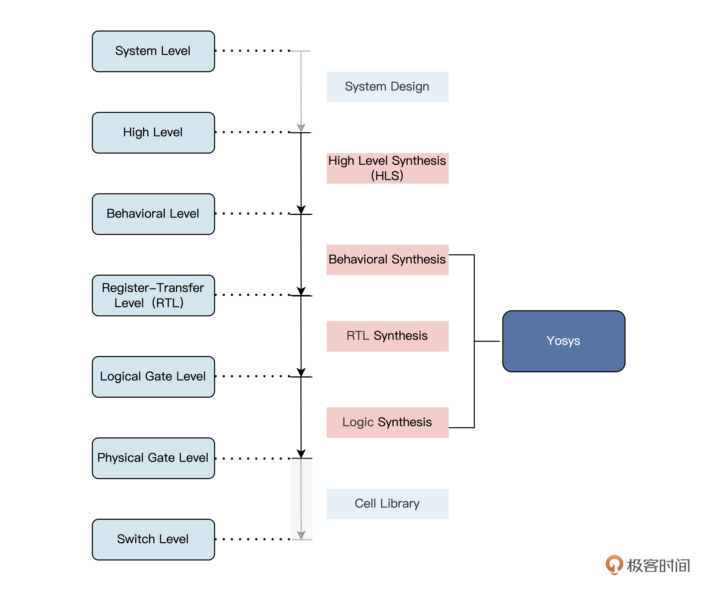- 如上图所示，利用Yosys软件，可以帮助我们把RTL代码层次的设计转换为逻辑门级的电路。
好，我先大致带你了解下，这个软件怎么安装和使用。在Ubuntu中安装Yosys非常简单，在终端中依次执行以下命令即可：
sudo add-apt-repository ppa:saltmakrell/ppa- sudo apt-get update- sudo apt-get install yosys
完成了安装，我们就能使用Yosys，对上面设计的ALU模块做简单的综合了。
直接在终端输入“yosys”，启动Yosys软件。启动成功后，我们通过后面这五条指令，就能得到到ALU的逻辑电路图文件了。
第一步，在Yosys中读取Verilog文件。
read_verilog alu.v
第二步，使用后面的命令，检查模块例化结构。
hierarchy -check
接着是第三步，执行下一条命令，来完成高层次的逻辑综合。
proc; opt; opt; fsm; memory; opt
到了第四步，我们就可以用write_verilog生成网表文件。
write_verilog alu_synth.v
最后，我们再用下方的命令，输出综合后的逻辑图。
show -format dot -prefix ./alu
这一套动作完成后，我们终于迎来了收获成果的时刻。打开生成的alu.dot文件，我们就可以看到ALU模块的门级电路图了，如下所示：
可以看到，这张图是由基本的and、or、not、add、sub、cmp、mux等电路单元组成。如果你还想进一步了解它们底层电路结构，可以自行查阅大学里学过的《数电》《模电》。
当然，Yosys功能还不只这些，这里我只是做个简易的演示。更多其它功能，如果你感兴趣的话可以到官网上学习。
到这里，类似于CPU里面的核心单元ALU电路，我们就设计完成了。
总结回顾
今天我们一起了解了怎么把Verilog代码变为具体的电路。为了实现代码编写、验证和仿真的“一站式”体验。我还向你推荐了几个开源软件。我们来回顾一下这节课的重点。
首先，我们用Verilog编写了一个类似CPU内部的ALU模块，该模块实现了加、减、与、或、非等基本运算功能。
针对上面的ALU模块，我们还设计了一个用于产生运算指令和数据的TestBench，并且把ALU的运算结果打印出来。利用这个TestBench，可以验证ALU模块的功能是否正确。
接下来，我们还用到了两个轻量级开源软件，分别是Iverilog和GTKWave。Iverilog是一个对Verilog进行编译和仿真的工具，GTKWave可以查看仿真数据波形的工具。利用这两个软件，我们完成了ALU模块的仿真和验证。
此外，我还推荐了一款轻量级开源综合工具Yosys。通过这个工具，我们把上面设计的ALU模块综合出了具体的门级电路。
感谢你耐心看到这里，我还给你准备了一张知识导图，总结今天所学的内容。

扩展阅读
仅仅一两节课的内容，就想要把所有Verilog的相关知识学完是不可能的。因此，在课程之外，需要你去多搜索，多阅读，多动手编写Verilg代码，才能更好地掌握Verilog的相关知识，这里我精心为你整理了一些参考资料，供你按需取用：
- 首先是硬件描述语言Verilog HDL的语言标准文件《IEEE Standard Verilog Hardware Description Language (1364-2001)》。-
- 如果你对底层的基本电路还不熟悉，不妨复习一下大学所学的教材。这里我推荐由童诗白和华成英编写的《模拟电子技术基础》第四版，以及阎石编写的《数字电子技术基础》。-
- 你要是想全面学习数字集成电路的设计、仿真验证、逻辑综合等相关知识，可以看看电子工业出版社出版的《Verilog HDL高级数字设计》。-
- 最后，你要是真的想学芯片设计，从更深层次去理解数字电路设计，推荐阅读这本Mohit Arora撰写、李海东等人翻译的图书——《硬件架构的艺术——数字电路的设计方法与技术》。
思考题
既然用Verilog很容易就可以设计出芯片的数字电路，为什么我们国家还没有完全自主可控的高端CPU呢？
期待你在留言区记录自己的学习收获或者疑问。如果这节课对你有帮助，也推荐你分享给更多朋友，我们一起来手写迷你CPU。
05 指令架构：RISC-V在CPU设计上到底有哪些优势？
你好，我是LMOS。
上节课，我们学习了设计一个CPU所需要的相关基础知识，并带你认识了一些后面将会用到的EDA软件工具。看完课程的讲解，还有上手运行的Demo，你是否对接下来要设计CPU已经蠢蠢欲动了？
哈哈，先别着急，我们在设计CPU之前，还有一些很关键的知识需要补充学习。没错，就是CPU的指令集架构。
指令集可以说是一个CPU的基石，要实现CPU的计算和控制功能，就必须要定义好一系列与硬件电路相匹配的指令系统。所以，在设计CPU之初，工程师就应该清楚CPU应该具有怎样的指令架构。
什么是指令集？
在第一节课我们讲历史的时候，曾经提到过，CPU既是程序指令的执行者，又被程序中相关的指令所驱动。不过，我并没有具体说明什么是指令。其实指令就是我们交代CPU要执行的操作。
那到底什么是指令集呢？
我给你打个比方：假如你有一条狗，经过一段时间的训练，它能“听懂”了你对它说一些话。当你对它说“坐下”，它就乖乖地坐在地上；当你对它说“汪汪叫”；它就汪汪汪地叫起来，当你对它说“躺下”，它马上就会躺下来……这里你说的“坐下”、“汪汪叫”、“躺下”这些命令，就相当于计算机世界里的指令。
当然，你还可以继续训练狗，让它识别更多指令，我们把所有的这些指令汇总在一起，就是一个指令集。如果指令集里面没有“上厕所”这个命令，那么即使你对狗下这个命令，它也不会去执行。CPU也一样，必须要有特定的指令集才能工作。
不同的CPU有不同的指令集，根据它们的繁简程度可以分为两种：复杂指令集CISC和精简指令集RISC。
指令集架构（英文叫 Instruction Set Architecture，缩写为ISA）是软件和硬件的接口，不同的应用需求，会有不同的指令架构。我们要想设计一款CPU，指令集体系就是设计的出发点。
RISC-V指令集架构
在开始设计一款处理器之前，我们需要选定它的指令集架构。学过前面的课程，我们知道RISC-V指令集具有明显的优势：一是RISC-V完全开放，二是RISC-V指令简单，三是RISC-V实行模块化设计，易于扩展。
我给你列了一个表，用于给你展示一下RISC-V基础指令集和扩展指令集，如下所示：

要满足现代操作系统和应用程序的基本运行，RV32G指令集或者RV64G指令集就够了（G是通用的意思 ，而I只是整数指令集，G包含I），注意RV32G指令集或者RV64G指令集，只有寄存器位宽和寻址空间大小不同，这些指令按照功能可以分为如下几类。
- 整数运算指令：实现算术、逻辑、比较等运算操作。-
- 分支转移指令：实现条件转移、无条件转移等操作。-
- 加载存储指令：实现字节、半字、字、双字（RV64I）的加载、存储操作，采用的都是寄存器相对寻址方式。-
- 控制与状态寄存器访问指令：实现对系统控制与系统状态寄存器的原子读-写、原子读-修改、原子读-清零等操作。-
- 系统调用指令：实现系统调用功能。-
- 原子指令：用于现在你能看到的各种同步锁。-
- 单双浮点指令：用于实现浮点运算操作。
从上表我们也可以看到，RISC-V指令集具有模块化特点。这就允许我们根据自己的应用需求，选择一个基础指令集，加上若干个扩展指令集灵活搭配，就可以得到我们想要的指令集架构，进而根据这样的指令架构，设计出贴合我们应用需求的CPU。
作为一个初学者，我们先从RISC-V的核心开始。它最核心的部分是一个基础整数指令集，叫做RV32I。RV32I就表示32位的RISC-V。指令集的命名方式我在[第二节课]给你提到过，如果你印象不深了，可以去回顾一下。仅仅依靠RV32I，我们就可以运行一个完整的软件栈。
RV32I包含的指令是固定的，永远不会改变。这为编译器设计人员，操作系统开发人员和汇编语言程序员提供了稳定的基础知识框架。
接下来我们看一张图，这是 RV32I 基础指令集的名称表示。

这些名称，你乍一看是不是有点眼花缭乱？先别慌，我讲一下命名规则，你就能明白了。
从图中我们可以看到，有些字母带有下划线。我们把带有下划线的字母从左到右连接起来，就可以组成一个 RV32I 的指令。对于每一个指令名称，集合标志{}内列举了指令的所有变体，变体用加下划线的字母或下划线字符_表示。如果大括号内只有下划线字符_，则表示对于此指令变体不需用字母表示。
我们再结合例子加深一下理解。下图表示了这四个 RV32I 指令：bge，blt，bgeu，bltu。
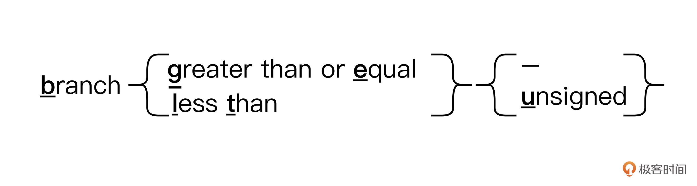
通过前面[第三节课]硬件描述语言基础的学习，我们知道了CPU的硬件逻辑里只有“0”和“1”，那么问题来了，怎么用“0”和“1”来表示出上述的指令呢？
要想回答这个问题，我们需要依次去了解指令格式，指令中要用到的寄存器以及指令集中各种功能的指令。
指令格式
我们先从RV32I的指令格式说起。从下图可以看到，RISCV总共也就只有6种指令格式。-

六种指令各司其职，我把它们的作用整理成了表格，这样你看起来一目了然。

不要小看这些指令，我们来分析一下它们到底有哪些优势。这些指令格式规整有序，结构简单。因为指令只有六种格式，并且所有的指令都是 32 位长度的，所以这些指令解码起来就比较简单，可以简化解码电路，提高CPU的性能功耗比。
上图中的opcode代表指令操作码，imm代表立即数，funct3和funct7代表指令对应的功能，rs1、rs2和rd则分别代表源寄存器1、源寄存器2以及目标寄存器。RISC-V的一个指令中可以提供三个寄存器操作数，而不是像 x86一样，让源操作数和目的操作数共享一个字段，因此相比x86指令，RISC-V 减少了软件的程序操作。
而且，源寄存器（rs1和rs2）和目标寄存器（rd），都设计固定在所有RISC-V指令同样的位置上，指令译码相对简单。所以，指令在CPU流水线中执行时，可以先开始访问寄存器，然后再完成指令解码。
此外，这些指令格式的所有立即数的符号位总是在指令的最高位。这个设计有什么好处呢？它意味着，有可能成为关键路径的立即数符号扩展，可以在指令解码前进行。这样可以加速符号扩展电路，有利于CPU流水线的时序优化。
RV32I 寄存器
之前讲指令格式时，我们说到了源寄存器rs1、rs2和目标寄存器rd，那你知道指令中的寄存器都有哪些吗？
在RISC-V的规范里定义了32个通用寄存器。其中，有 31 个是常规寄存器，1 个恒为 0 值的 x0 寄存器。0值寄存器的设置，是为了满足汇编语言程序员和编译器编写者的使用需要，他们可以使用x0寄存器作为操作数，来完成功能相同的操作。
比如说，我们如果需要插入一个空操作，就可以使用汇编语句 “addi x0 , x0, 0 ”（相当于0+0=0）来代替其他指令集中的nop空指令。
由于访问寄存器中的数据要比访问存储器的速度快得多，一般每条 RISC-V 指令最多用一个时钟周期执行（忽略缓存未命中的情况），而ARM-32 或者x86-32 则需要多个时钟周期执行的指令。因为ARM-32只有16个寄存器，而X86-32仅仅只有8个寄存器。
因此，寄存器越多，编译器和汇编程序员的工作就会越轻松。
之前[第二节课]，我给你列过RV32I的32个通用寄存器，这里我再带你复习一下，温故知新。表中的ABI全称为Application Binary Interface，即应用程序二进制接口，也就是寄存器的别名，在汇编程序设计时会用到。
寄存器的内容我们就先讲这些，后面实现CPU的时候具体用到了，我再详细解释。
RV32I的各类指令解读
接下来我们研究一下RV32I的各种指令。如果你写过汇编程序应该知道，一般用得较多的就是算术和逻辑处理语句了，我们先从这类指令说起。
算术与逻辑指令
在RV32I的指令中，包括算术指令（add, sub）、数值比较指令（slt）、逻辑指令（and, or, xor）以及移位指令 （sll, srl, sra）这几种指令。
这些指令和其他指令集差不多，它们从寄存器读取两个 32 位的值，并将 32 位的运算结果再写回到目标寄存器。RV32I 还提供了这些指令的立即数版本，就是如下图所示的I型指令：
同样的，RV32I也提供了寄存器和寄存器操作的指令，包括加减运算、数值比较、逻辑操作和移位操作。这些指令的功能和前面的立即数指令相似，不同的是，这里把指令中的立即数对应位置替换成了源寄存器 rs2。
寄存器和寄存器操作的指令如下表所示：

需要指出的是，在寄存器和寄存器操作的算术指令中，必须要有减法指令，这和立即数操作指令有所不同。
RV32I 的Load和Store
与CISC指令集具有众多的寻址方式不同，RV32I 省略了像 x86-32 指令集那样的复杂寻址模式。在 RISC-V 指令集中，对内存的读写只能通过 LOAD 指令和 STORE 指令实现。而其他的指令，都只能以寄存器为操作对象。
你可以看看后面的这张图，里面列出了Load 指令和Store指令格式：

如上图所示，加载和存储的寻址模式只能是符号扩展12位的立即数，加上基地址寄存器得到访问的存储器地址。因为没有了复杂的内存寻址方式，这让CPU流水线可以对数据冲突提前做出判断，并通过流水线各级之间的转送加以处理，而不需要插入空操作（NOP），极大提高了代码的执行效率。
分支跳转指令
学习了前面的第二节课，相信你对RISC-V指令架构特点已经有所了解，RISC-V遵循的是大道至简的原则。它的指令数目非常简洁，基本指令只有40多条，其中只有6条有条件跳转指令，减少了跳转指令的条数，这样硬件设计上更为简单。
下面，我们分别来看看RV32I条件跳转指令和无条件跳转指令的运行原理。这些原理只要你耐心听我讲完就能理解，而且之后也会应用在我们的在MiniCPU实现中。
有条件分支跳转
RV32I 中的条件跳转指令是通过比较两个寄存器的值，并根据比较结果进行分支跳转。比较可以是：相等（beq），不相等 （bne），大于等于（bge），或小于（blt）。
如下图所示，大于等于（bge），和小于（blt）则跳转指令为有符号数比较，RV32I 也提供了相应的无符号数的比较指令，分别为bgeu和 bltu。剩下的两个比较关系（大于和小于等于），可以通过简单地交换两个操作数位置，来完成相同的比较。例如， x < y 可以表示为y > x ，同样的， x ≤ y也表示为 y ≥ x。-

无条件分支跳转
除了有条件分支跳转，RV32I还提供了无条件跳转指令，无条件跳转指令还可以细分为直接跳转和间接跳转这两种指令。
直接跳转指令JAL如下图所示。RISC-V 为 JAL 指令专门定义了 J-TYPE 格式。
 -
JAL指令的执行过程是这样的。首先，它会把 20 位立即数做符号位扩展，并左移一位，产生一个 32 位的符号数。然后，将该 32 位符号数和 PC 相加来产生目标地址（这样，JAL 可以作为短跳转指令，跳转至 PC±1 MB 的地址范围内）。
-
JAL指令的执行过程是这样的。首先，它会把 20 位立即数做符号位扩展，并左移一位，产生一个 32 位的符号数。然后，将该 32 位符号数和 PC 相加来产生目标地址（这样，JAL 可以作为短跳转指令，跳转至 PC±1 MB 的地址范围内）。
同时，JAL 也会把紧随其后的那条指令的地址，存入目标寄存器中。这样，如果目标寄存器是零，则 JAL 就等同于 GOTO 指令；如果目标寄存器不为零，JAL 可以实现函数调用的功能。

间接跳转指令JALR 如上图所示。JALR 指令会把 12 位立即数和源寄存器相加，并把相加的结果末位清零，作为新的跳转地址。同时，和 JAL 指令一样，JALR 也会把紧随其后的那条指令的地址，存入到目标寄存器中。
RV32I的其他指令
除了内存地址空间和通用寄存器地址空间外，RISC-V 中还定义了一个独立的控制与状态寄存器（Control Status Register，CSR）地址空间。
每个处理器实现的CSR会因设计目标不同而有差异，但这些CSR的访问方式却是一致的，访问这些 CSR 的指令定义在了用户指令集中（Zicsr 指令集扩展）。

有了上图这些CSR指令，能够让我们轻松访问一些程序性能计数器。这些计数器包括系统时间、时间周期以及执行的指令数目。
在 RISC-V 指令集中，还有其他的一些指令，例如用于系统调用的ecall指令，在调试时用于将控制转移到调试环境的ebreak 指令等。对于这些扩展的指令，这里就不展开讲了。
好，到这里，我们就把RISC-V的基础整数指令集——RV32I大体梳理了一遍。你可能感慨，比起训练一条狗，训练“CPU”要复杂得多。不过，通过RV32I这个最核心的指令集，我们也看到了 RISC-V的很多设计优势。
相比CISC，RISCV确实更容易学习和使用。学习了这些基本指令的功能，我们就可以设计出简单的CPU了。
重点回顾
好了，今天的课程就到这里，让我们来回顾一下今天学到的内容。
首先，我们知道了什么是CPU的指令集，并选择 RISC-V最核心的基础整数指令集RV32I 重点学习。RV32I包含的指令是固定的，永远不会改变。我们学好RV32I，不但能为学习RISC-V的扩展指令集打下基础，也能为编译器设计、操作系统开发和汇编程序设计搭建好前置的基础知识框架。
RISC-V到底在CPU设计上有哪些优势？我们从指令格式、寄存器以及指令解读这几个方面入手，做了不少讨论。
RISC-V仅有6种指令格式，它们分别是：R类型指令、 I 型指令、 S 型指令、B 类型指令、 U 型指令和 J 型指令。这些指令格式规整有序，结构简单，所以指令解码起来比较简单，有利于简化解码电路，提高了CPU的性能功耗比。
此外，在RISC-V的规范里，定义了32个通用寄存器。其中有 31 个常规寄存器，一个恒 0 值的 x0 寄存器。由于 RISC-V的寄存器有数量上的优势，使得基于RISC-V设计CPU不用那么频繁地去访问存储器，指令执行起来更快，也让编译器和汇编程序员的工作更加轻松。
之后我们了解到，RV32I的指令包括算术指令、数值比较指令、逻辑指令以及移位指令，这些指令和其他指令集差不多。但是， RISC-V与CISC指令集具有众多的寻址方式不同，RV32I 省略了如 x86-32 指令集的复杂寻址模式。在 RISC-V 指令集中，对内存的读写只能通过 LOAD 指令和 STORE 指令实现。
RISC-V遵循的是大道至简的原则，它的指令数目非常简洁，基本指令只有40多条，而分支跳转指令只有8条，其中6条是带条件跳转指令，2条是无条件跳转指令。这些指令条数的减少，使硬件设计更简单。
除了上面提到的指令，RISC-V还有其他的一些指令，比如，还定义了一个独立的控制与状态寄存器地址空间，其地址宽度是 12 位的。根据每个设计的目标不同，每个处理器实际实现的 CSR 可能会有所不同。对于剩余没有介绍的一些指令，如果你感兴趣的话，可以自己查阅相关资料（比如RISC-V的官方手册）来学习。
最后我为你梳理了这节课的知识导图，供你参考。

思考题
今天我们讲到了RISC-V 中的分支跳转指令 JAL。想想看，为什么要通过调整立即数的某些位，从 U-TYPE指令得到J-TYPE指令格式呢？这样调整以后有什么好处？
期待你记录自己这节课学完的收获或者疑问，我在留言区等你。如果这节课对你有启发，也推荐你分享给更多朋友。下节课我们就要着手设计迷你CPU了，敬请期待。
06 手写CPU（一）：迷你CPU架构设计与取指令实现
你好，我是LMOS。
经过上一节课的学习，我们已经知道了一个基于RISC-V指令集设计的CPU，必须要实现哪些指令。从这节课开始，我们就可以着手设计和实现MiniCPU了。
我会先跟你讲讲什么是流水线，在CPU中使用流水线的好处是什么？然后，我们再以经典的五级流水线为例，讲解CPU流水线的五个阶段。接着设计出我们MiniCPU的总体结构，并根据规划的五级流水线，完成流水线的第一步——取指模块的设计。课程的配套代码可以从这里下载。
话不多说，让我们正式开始今天的学习吧。
什么是CPU流水线？
说到流水线，你是否会马上想到我们打工人的工厂流水线？没错，高大上的CPU流水线其实和我们打工人的流水线是一样的。
假如我们在冰墩墩工厂上班，生产流水线分为五个步骤，如下图所示：

在冰墩墩生产线上需要至少五个工人，各自负责模具制作、模具清洗、模具抛光、硅胶塑形和融入图案这五个环节中的一个。最简单的方法自然是：同一时刻只有一个冰墩墩在制作。但是冬奥会的热度让市场上的冰墩墩供应不足，为了早日实现“人手一墩”的目标，有什么提升生产效率的办法呢？
稍微想想就知道，生产线上一个人在制作冰墩墩的时候，另外四个工人都处于空闲状态，显然这是对人力资源的极大浪费。想要提高效率，我们不妨在第一个冰墩墩模具制作出来进入清洗阶段的时候，马上开始进行第二个冰墩墩模具的制作，而不是等到第一个冰墩墩全部步骤做完后，才开始制作下一个。
这样，后续生产中就能够保证五个工人一直处于工作状态，不会造成人员的闲置而产线的冰墩墩就好像流水一样源源不断地产出，因此我们称这种生产方式为流水线。
在CPU中也是使用类似的流水线作业。以经典的五级流水线为例，流水线中一条指令的生命周期分为五个阶段：
取指阶段（Instruction Fetch）：取指阶段是指将指令从存储器中读取出来的过程。程序指针寄存器用来指定当前指令在存储器中的位置。读取一条指令后，程序指针寄存器会根据指令的长度自动递增，或者改写成指定的地址。
译码阶段（Instruction Decode）：指令译码是指将存储器中取出的指令进行翻译的过程。指令译码器对指令进行拆分和解释，识别出指令类别以及所需的各种操作数。
执行阶段（Instruction Execute）：指令执行是指对指令进行真正运算的过程。例如指令是一条加法运算指令，则对操作数进行相加操作；如果是一条乘法运算指令，则进行乘法运算。在“执行”阶段最关键的模块为算术逻辑单元（Arithmetic Logical Unit，ALU），它是实施具体运算的硬件功能单元。
访存阶段（Memory Access）：访存是指存储器访问指令将数据从存储器中读出，或写入存储器的过程。
写回阶段（Write-Back）：写回是指将指令执行的结果写回通用寄存器的过程。如果是普通运算指令，该结果值来自于“执行”阶段计算的结果；如果是存储器读指令，该结果来自于“访存”阶段从存储器中读取出来的数据。
和上述的冰墩墩生产线的流水作业一样，为了提高效率，CPU使用流水线也是为了提高处理器的性能。

对照上图，CPU在第一个时钟周期T内完成取指操作。然后在第二个时钟周期2T内对上一条指令进行译码的同时，取下一条指令。接着在第三个时钟周期3T内就有取指、译码和执行3个操作同时进行……以此类推，五级流水线的CPU内就可以同时进行5个操作。这样平均下来，就相当于每条指令只需要五分之一的时钟周期时间来完成。
总体上看，流水线提高了指令的处理速度，缩短了程序执行的时间。
那我们能不能把流水线的思想，引入到我们的MiniCPU中呢？答案是肯定的。具体如何实现呢？我们接着往下看。
MiniCPU的架构
先明确一下我们想实现的目标：使用Verilog硬件描述语言，基于RV32I指令集，设计一个32位的经典五级流水线的处理器核。它将会支持运行大多数RV32I的基础指令。
那什么样的架构设计才能实现这个目标呢？参照CPU流水线的五个步骤，我们可以对处理器核的各个功能模块进行划分，主要模块包括指令提取单元、指令译码单元、整型执行单元、访问存储器和写回结果等单元模块。
根据上面的模块划分，我们可以设计出MiniCPU的整体框架，如下图所示：

这张图片中一个方框就表示一个模块，方框里面的文字就是模块的名字，箭头则表示模块与模块之间的信号传输关系。
从图中可以看到，我们要设计的不仅仅是一个CPU内核了，它更像是一个SOC（System on Chip的缩写）。
因为我们要对它进行一些仿真验证，就必须要包含存放指令、数据的ROM和RAM，还有一些简单的外设。比如用于串口通信的UART以及一些通用输入、输出端口GPIO都属于外设。CPU通过系统总线（System Bus）和这些外设进行通信。
下面我们先快速了解一下，在我们这个CPU架构中，体现五级流水线的主要模块有哪些。
首先我们来看 pre_if模块，这里我把它叫作分支预测或者预读取模块，因为它主要是先对上一个指令进行预处理，判断是不是分支跳转指令。如果是跳转指令，则产生跳转后的PC值，并对下一条指令进行预读取。
然后是取指通路模块，即 if_id模块。它是取指到译码之间的模块，上面的指令预读取之后就会首先送入if_id模块，如果当前流水线没有发出指令清除信号，if_id模块就会把指令送到译码模块。
接下来是 id_ex模块，它是译码到执行之间的模块，用于将完成指令译码之后的寄存器索引值，以及指令执行的功能信息，根据流水线控制模块的控制信号，选择性地发送给执行模块去执行。
指令译码之后便可以进行指令执行，ex_mem模块负责指令执行之后将数据写入存储器中或者从存储器中读出数据的过程。
最后由 mem_wb模块将指令执行的运算结果或者从存储器读出的数据，写回到通用寄存器。到这里，处理器流水线的总体结构就设计好啦。
接下来我们先完成流水线第一步，即取指模块的设计与实现。
流水线的第一步：指令预读取
我们的MiniCPU流水线的第一步是指令预读取，也就是先把指令从存储器中读出。
由于我们的指令长度是32位的，也就是一条指令在存储器中占有4个字节的空间，所以一般情况下，CPU中的程序计数器（PC）是以4递增的。
但是，如果你熟悉计算机程序就应该知道，我们的程序通常不是从头到尾执行一次就完事了，往往还需要调用函数或者循环执行某一段程序的操作。
而这样的操作，在硬件底层的CPU里面就涉及分支跳转指令了。为了实现程序分支跳转功能，就需要我们的预读取模块来处理。
我先把这个模块的Verilog代码给你展示一下，再具体给你讲解：
module pre_if (
input [31:0] instr,
input [31:0] pc,
output [31:0] pre_pc
);
wire is_bxx = (instr[6:0] == `OPCODE_BRANCH); //条件跳转指令的操作码
wire is_jal = (instr[6:0] == `OPCODE_JAL) ; //无条件跳转指令的操作码
//B型指令的立即数拼接
wire [31:0] bimm = {{20{instr[31]}}, instr[7], instr[30:25], instr[11:8], 1'b0};
//J型指令的立即数拼接
wire [31:0] jimm = {{12{instr[31]}}, instr[19:12], instr[20], instr[30:21], 1'b0};
//指令地址的偏移量
wire [31:0] adder = is_jal ? jimm : (is_bxx & bimm[31]) ? bimm : 4;
assign pre_pc = pc + adder;
endmodule
我们来看看第八行和第九行代码，分别是根据指令的低7位操作码，判断是否是条件跳转指令或是无条件跳转指令。
其实上一节课的RISC-V指令架构中，我们讲过RISC-V指令集中有两类分支跳转指令，分别是条件跳转指令和无条件跳转指令。
条件跳转指令格式如下表所示：
从这张表格我们可以发现，条件跳转指令的操作码，也就是指令中的低7位数都是 7’b1100011。根据这一特点，我们就可以在指令解码之前，判断出接下来可能会发生跳转。
我们结合代码来看看。下面的Verilog语句就是跳转指令的判断，其中的`OPCODE_BRANCH 已经通过宏定义为 7’b1100011。
wire is_bxx = (instr[6:0] == `OPCODE_BRANCH); //条件跳转指令的操作码
条件跳转指令执行时是否发生跳转，要根据相关的数据来判断，这就需要指令执行之后才能知道是否需要跳转（具体如何判断，我们后面第十节课再展开）。
但是，我们的CPU是多级流水线架构，一条指令执行需要多个时钟周期。如果要等到跳转指令执行完成之后再去取下一条指令，就会降低我们的指令执行效率。
而指令预读取模块刚好可以解决这个问题。不管指令是否跳转，都提前把跳转之后的下一条指令从存储器中读取出来，以备流水线的下一阶段使用，这就提高了CPU的执行效率。
以下代码就是根据条件跳转指令的格式，对指令中的立即数进行拼接，为指令跳转时的PC提供偏移量。
//B型指令的立即数拼接
wire [31:0] bimm = {{20{instr[31]}}, instr[7], instr[30:25], instr[11:8], 1'b0};
同样地，无条件跳转指令也用这种方式进行预处理。如下图的jal跳转指令的格式，它的操作码为7’b1101111。-
根据指令的操作码，预译码电路就可以判断出是否为无条件跳转指令。下面就是无条件跳转指令的判断的Verilog语句，其中的`OPCODE_BRANCH已经通过宏定义为 7’b1101111。
wire is_jal = (instr[6:0] == `OPCODE_JAL) ; //无条件跳转指令的操作码
顾名思义，无条件跳转指令就是不需要判断其他的任何条件，直接跳转。我们继续结合代码理解，这行代码的意思是，根据jal指令的格式对指令中的立即数进行拼接，为指令跳转时的PC提供偏移量。
//J型指令的立即数拼接
wire [31:0] jimm = {{12{instr[31]}}, instr[19:12], instr[20], instr[30:21], 1'b0};
最后，预读取电路会根据当前的PC值和指令的偏移量相加，得到预测的PC值，并用预测的PC值提前读出下一条指令。其Verilog代码如下：
//指令地址的偏移量
wire [31:0] adder = is_jal ? jimm : (is_bxx & bimm[31]) ? bimm : 4;
assign pre_pc = pc + adder;
取指数据通路模块
由上述的指令预读取模块把指令从存储器中读取之后，需要把它发送给译码模块进行翻译。但是，预读取模块读出的指令，并不是全部都能发送后续模块去执行。
例如上面的条件分支指令，在指令完成之前就把后续的指令预读取出来了。如果指令执行之后发现跳转的条件不成立，这时预读取的指令就是无效的，需要对流水线进行冲刷（flush），把无效的指令都清除掉。
取指通路模块 if_id 主要产生3个信号。首先是给后面解码模块提供的指令信号 reg_instr。如果流水线没有发生冲突，也就是没有发出清除信号flush，则把预读取的指令保存，否则把指令清“0”。
//指令通路
always @(posedge clock) begin
if (reset) begin
reg_instr <= 32'h0;
end else if (flush) begin
reg_instr <= 32'h0;
end else if (valid) begin
reg_instr <= in_instr;
end
end
第二个是更新PC值，如果指令清除信号flush=“0”，则把当前指令对应的PC值保存为reg_pc，否则就把reg_pc清“0”。
//PC值通路
always @(posedge clock) begin""
if (reset) begin
reg_pc <= 32'h0;
end else if (flush) begin
reg_pc <= 32'h0;
end else if (valid) begin
reg_pc <= in_pc;
end
end
最后一个是流水线冲刷的标志信号 reg_noflush。当需要进行流水线冲刷时，reg_noflush=“0”，否则reg_noflush=“1”。
//流水线冲刷标志位
always @(posedge clock) begin
if (reset) begin
reg_noflush <= 1'h0;
end else if (flush) begin
reg_noflush <= 1'h0;
end else if (valid) begin
reg_noflush <= in_noflush;
end
end
以下就是if_id模块的完整代码：
// IF_ID
module if_id(
input clk,
input reset,
input [31:0] in_instr,
input [31:0] in_pc,
input flush,
input valid,
output [31:0] out_instr,
output [31:0] out_pc,
output out_noflush
);
reg [31:0] reg_instr;
reg [31:0] reg_pc;
reg [31:0] reg_pc_next;
reg reg_noflush;
assign out_instr = reg_instr;
assign out_pc = reg_pc;
assign out_noflush = reg_noflush;
//指令传递
always @(posedge clk or posedge reset) begin
if (reset) begin
reg_instr <= 32'h0;
end else if (flush) begin
reg_instr <= 32'h0;
end else if (valid) begin
reg_instr <= in_instr;
end
end
//PC值转递
always @(posedge clk or posedge reset) begin
if (reset) begin
reg_pc <= 32'h0;
end else if (flush) begin
reg_pc <= 32'h0;
end else if (valid) begin
reg_pc <= in_pc;
end
end
//流水线冲刷标志位
always @(posedge clk or posedge reset) begin
if (reset) begin
reg_noflush <= 1'h0;
end else if (flush) begin
reg_noflush <= 1'h0;
end else if (valid) begin
reg_noflush <= 1'h1;
end
end
endmodule
好了，到这里CPU流水线的第一步——取指，我们就讲完了。在取指阶段就是把存储器里的指令读出，并传递给后续的译码模块进行处理。
重点回顾
今天我们终于开启了MiniCPU的设计与实现之旅，为此我们做了很多准备，恭喜你坚持到这里。
在开始设计之前，我先带你了解了流水线的设计思想。工厂里的流水线设计在CPU里也可以借鉴，通过这种方法就能提高CPU的性能。
真正的CPU流水线要根据应用需求来设计，应用场景不一样，设计的流水线也不一样。为了让你在弄懂原理的基础上能快速上手，我们的MiniCPU采用了经典的五级流水线设计。这个流水线里一条指令的五个阶段分别是取指、译码、执行、访存和写回。
从MiniCPU的架构设计上也能看到，我们的重心放在了最能体现五级流水线的模块。不过麻雀虽小，五脏俱全，这个架构里已经包含了CPU内核，用于存放指令、数据的ROM和RAM以及一些简单的外设。CPU会通过系统总线（System Bus）和这些外设进行通信。
CPU架构里的五个主要模块，你可以参考后面的导图，其中前两个模块我们这节课已经拿下了，其它模块之后的课程里我们再展开学习。-

明确了设计思想和架构以后，我带你迈出了流水线的第一步，也就是取指令。
我们现实通过指令预读取模块，在程序发生分支跳转的之前，对指令进行分析，预测指令跳转的方向，并提前读取跳转后的指令。这么做能提高指令在流水线中执行效率。
最后，在if_id模块中，会根据是否需要进行流水线冲刷，来判断预读取的指令能否传递给后面的译码模块。如果指令在流水线中发生冲突，需要进行流水线冲刷，就把预读取的指令清除，否则就把预读取的指令传递给后续的译码模块。
那之后指令是如何译码的呢？译码是流水线很关键的一步，让我们下节课一起解锁这部分内容吧。
思考题
为什么要对指令进行预读取？直接取指然后译码、执行不可以吗？
欢迎你在留言区提问或者记录今天的收获，如果感觉这节课还不错，也推荐你分享给身边的朋友，和他一起手写CPU。
07 手写CPU（二）：如何实现指令译码模块？
你好，我是LMOS。
上节课，我们了解了什么是CPU的流水线，并决定采用经典的五级流水线来设计我们的MiniCPU，之后梳理了我们将要设计的MiniCPU架构长什么样，最后完成了流水线的第一步——取指。
取指阶段把存储器里的指令读出以后，就会传递给后续的译码模块进行处理。那之后指令是如何译码的呢？这就要说到流水线的第二步——译码（代码从这里下载）。
指令是如何翻译的？
[第五节课]我们已经讲过了RISC-V指令架构，明确了我们的MiniCPU选用的是RV32I指令集。其中每条指令都是32位，且分为6种指令格式，不同格式的指令中包含了不一样的指令信息。
如上图所示的6种指令格式，其中R型指令包含了操作码opcode、目标寄存器索引rd、功能码funct3和funct7以及源寄存器索引rs1和rs2。而I型指令则是包含操作码opcode、目标寄存器索引rd、功能码funct3、源寄存器索引rs1以及立即数imm。
与此类似，后面的S型指令、B型指令、U型指令和J型指令也有特定的操作码、功能码、源寄存器索引、目标寄存器索引和立即数。
不过指令格式不同，指令译码模块翻译指令的工作机制却是统一的。首先译码电路会翻译出指令中携带的寄存器索引、立即数大小等执行信息。接着，在解决数据可能存在的数据冒险（这个概念后面第九节课会讲）之后，由译码数据通路负责把译码后的指令信息，发送给对应的执行单元去执行。
译码模块的设计
通过上面的分析，你是否对译码模块的设计已经有了头绪？是的，译码模块就是拆解从取指模块传过来的每一条指令。译码时，需要识别出指令的操作码，并根据对应的指令格式提取出指令中包含的信息。
译码模块具体的Verilog设计代码如下：
module decode (
input [31:0] instr, //指令源码
output [4:0] rs1_addr, //源寄存器rs1索引
output [4:0] rs2_addr, //源寄存器rs2索引
output [4:0] rd_addr, //目标寄存器rd索引
output [2:0] funct3, //功能码funct3
output [6:0] funct7, //功能码funct7
output branch,
output [1:0] jump,
output mem_read,
output mem_write,
output reg_write,
output to_reg,
output [1:0] result_sel,
output alu_src,
output pc_add,
output [6:0] types,
output [1:0] alu_ctrlop,
output valid_inst,
output [31:0] imm
);
localparam DEC_INVALID = 21'b0;
reg [20:0] dec_array;
//---------- decode rs1、rs2 -----------------
assign rs1_addr = instr[19:15];
assign rs2_addr = instr[24:20];
//---------- decode rd -----------------------
assign rd_addr = instr[11:7];
//---------- decode funct3、funct7 -----------
assign funct7 = instr[31:25];
assign funct3 = instr[14:12];
// ----------------------------- decode signals ---------------------------------
// 20 19-18 17 16 15 14 13-12 11 10 9--------3 2---1 0
// branch jump memRead memWrite regWrite toReg resultSel aluSrc pcAdd RISBUJZ aluctrlop validInst
localparam DEC_LUI = {1'b0, 2'b00, 1'b0, 1'b0, 1'b1, 1'b0, 2'b01, 1'b0, 1'b0, 7'b0000100, 2'b00, 1'b1};
localparam DEC_AUIPC = {1'b0, 2'b00, 1'b0, 1'b0, 1'b1, 1'b0, 2'b00, 1'b1, 1'b1, 7'b0000100, 2'b00, 1'b1};
localparam DEC_JAL = {1'b0, 2'b00, 1'b0, 1'b0, 1'b1, 1'b0, 2'b10, 1'b0, 1'b0, 7'b0000010, 2'b00, 1'b1};
localparam DEC_JALR = {1'b0, 2'b11, 1'b0, 1'b0, 1'b1, 1'b0, 2'b10, 1'b1, 1'b0, 7'b0100000, 2'b00, 1'b1};
localparam DEC_BRANCH = {1'b1, 2'b00, 1'b0, 1'b0, 1'b0, 1'b0, 2'b00, 1'b0, 1'b0, 7'b0001000, 2'b10, 1'b1};
localparam DEC_LOAD = {1'b0, 2'b00, 1'b1, 1'b0, 1'b1, 1'b1, 2'b00, 1'b1, 1'b0, 7'b0100000, 2'b00, 1'b1};
localparam DEC_STORE = {1'b0, 2'b00, 1'b0, 1'b1, 1'b0, 1'b0, 2'b00, 1'b1, 1'b0, 7'b0010000, 2'b00, 1'b1};
localparam DEC_ALUI = {1'b0, 2'b00, 1'b0, 1'b0, 1'b1, 1'b0, 2'b00, 1'b1, 1'b0, 7'b0100000, 2'b01, 1'b1};
localparam DEC_ALUR = {1'b0, 2'b00, 1'b0, 1'b0, 1'b1, 1'b0, 2'b00, 1'b0, 1'b0, 7'b1000000, 2'b01, 1'b1};
assign {branch, jump, mem_read, mem_write, reg_write, to_reg, result_sel, alu_src, pc_add, types, alu_ctrlop, valid_inst} = dec_array;
always @(*) begin
case(instr[6:0])
`OPCODE_LUI : dec_array <= DEC_LUI;
`OPCODE_AUIPC : dec_array <= DEC_AUIPC;
`OPCODE_JAL : dec_array <= DEC_JAL;
`OPCODE_JALR : dec_array <= DEC_JALR;
`OPCODE_BRANCH : dec_array <= DEC_BRANCH;
`OPCODE_LOAD : dec_array <= DEC_LOAD;
`OPCODE_STORE : dec_array <= DEC_STORE;
`OPCODE_ALUI : dec_array <= DEC_ALUI;
`OPCODE_ALUR : dec_array <= DEC_ALUR;
default : begin
dec_array <= DEC_INVALID;
end
endcase
end
// -------------------- IMM -------------------------
wire [31:0] Iimm = {{21{instr[31]}}, instr[30:20]};
wire [31:0] Simm = {{21{instr[31]}}, instr[30:25], instr[11:7]};
wire [31:0] Bimm = {{20{instr[31]}}, instr[7], instr[30:25], instr[11:8], 1'b0};
wire [31:0] Uimm = {instr[31:12], 12'b0};
wire [31:0] Jimm = {{12{instr[31]}}, instr[19:12], instr[20], instr[30:21], 1'b0};
assign imm = {32{types[5]}} & Iimm
| {32{types[4]}} & Simm
| {32{types[3]}} & Bimm
| {32{types[2]}} & Uimm
| {32{types[1]}} & Jimm;
endmodule
这段代码看起来很长，其实整个代码可以分为三个部分：第28行到37行负责完成指令的源寄存器、目标寄存器、3位操作码和7位操作码的译码，第40行至73行负责完成指令格式类型的识别，第75行至87行负责完成立即数译码。
首先，我们来看指令中源寄存器、目标寄存器、3位操作码和7位操作码的译码。仔细观察上面提到的6种指令格式，我们可以发现一定的规律：全部的目标寄存器索引 rd 都位于指令的第7～11位，源寄存器索引 rs1 位于指令的第15～19位，源寄存器索引 rs2 位于指令的第20～24位，三位的操作码 funct3 位于指令的第12～14位，七位的操作码 funct7 位于指令的第25～31位。
它们的位置分布如下图所示：
上述这些信号在不同指令格式中的位置比较固定。因此我们就可以根据这些位置特点，直接从指令中截取，从而得到它们相应的信息，具体实现的Verilog代码如下（对应整体代码的27～37行）：
//---------- decode rs1、rs2 -----------------
assign rs1_addr = instr[19:15];
assign rs2_addr = instr[24:20];
//---------- decode rd -----------------------
assign rd_addr = instr[11:7];
//---------- decode funct3、funct7 -----------
assign funct7 = instr[31:25];
assign funct3 = instr[14:12];
在所有的指令格式中，还有一段最为特殊的信息码。这段信息码是每条指令都有的，且位置和位宽保持不变。没错，它就是指令的操作码opcode。
对照RISC-V的官方手册，我为你整理出了RV32I指令集的操作码对照表，如下所示：
我们再来回顾一下RISC-V的指令格式，这次我们重点观察指令操作码的位置。
不难发现，所有指令操作码都位于指令的第0～6位。根据这7位的操作码就可以判断出一条指令是什么类型，它对应的是什么指令格式。进而可以产生指令执行信号，为后续的指令执行单元的操作提供依据。
以下就是指令操作码的译码和产生相关指令控制信号的Verilog代码（对应整体代码的39～72行）：
// ----------------------------- decode signals ---------------------------------
// 20 19-18 17 16 15 14 13-12 11 10 9--------3 2---1 0
// branch jump memRead memWrite regWrite toReg resultSel aluSrc pcAdd RISBUJZ aluctrlop validInst
localparam DEC_LUI = {1'b0, 2'b00, 1'b0, 1'b0, 1'b1, 1'b0, 2'b01, 1'b0, 1'b0, 7'b0000100, 2'b00, 1'b1};
localparam DEC_AUIPC = {1'b0, 2'b00, 1'b0, 1'b0, 1'b1, 1'b0, 2'b00, 1'b1, 1'b1, 7'b0000100, 2'b00, 1'b1};
localparam DEC_JAL = {1'b0, 2'b00, 1'b0, 1'b0, 1'b1, 1'b0, 2'b10, 1'b0, 1'b0, 7'b0000010, 2'b00, 1'b1};
localparam DEC_JALR = {1'b0, 2'b11, 1'b0, 1'b0, 1'b1, 1'b0, 2'b10, 1'b1, 1'b0, 7'b0100000, 2'b00, 1'b1};
localparam DEC_BRANCH = {1'b1, 2'b00, 1'b0, 1'b0, 1'b0, 1'b0, 2'b00, 1'b0, 1'b0, 7'b0001000, 2'b10, 1'b1};
localparam DEC_LOAD = {1'b0, 2'b00, 1'b1, 1'b0, 1'b1, 1'b1, 2'b00, 1'b1, 1'b0, 7'b0100000, 2'b00, 1'b1};
localparam DEC_STORE = {1'b0, 2'b00, 1'b0, 1'b1, 1'b0, 1'b0, 2'b00, 1'b1, 1'b0, 7'b0010000, 2'b00, 1'b1};
localparam DEC_ALUI = {1'b0, 2'b00, 1'b0, 1'b0, 1'b1, 1'b0, 2'b00, 1'b1, 1'b0, 7'b0100000, 2'b01, 1'b1};
localparam DEC_ALUR = {1'b0, 2'b00, 1'b0, 1'b0, 1'b1, 1'b0, 2'b00, 1'b0, 1'b0, 7'b1000000, 2'b01, 1'b1};
assign {branch, jump, mem_read, mem_write, reg_write, to_reg, result_sel, alu_src, pc_add, types, alu_ctrlop, valid_inst} = dec_array;
always @(*) begin
case(instr[6:0])
`OPCODE_LUI : dec_array <= DEC_LUI;
`OPCODE_AUIPC : dec_array <= DEC_AUIPC;
`OPCODE_JAL : dec_array <= DEC_JAL;
`OPCODE_JALR : dec_array <= DEC_JALR;
`OPCODE_BRANCH : dec_array <= DEC_BRANCH;
`OPCODE_LOAD : dec_array <= DEC_LOAD;
`OPCODE_STORE : dec_array <= DEC_STORE;
`OPCODE_ALUI : dec_array <= DEC_ALUI;
`OPCODE_ALUR : dec_array <= DEC_ALUR;
default : begin
dec_array <= DEC_INVALID;
end
endcase
end
从上面的代码我们可以看到，译码的过程就是先识别指令的低7位操作码instr[6:0]，根据操作码对应的代码标识，产生分支信号branch、跳转信号jump、读存储器信号mem_read……这些译码之后的指令控制信息。然后，把译码得到的信息交到CPU流水线的下一级去执行。
此外，还有指令中的立即数需要提取。观察上述的6种指令格式你会发现，除了R型指令不包含立即数，其他5种指令类型都包含了立即数。
前面我已经讲过了怎么去识别指令的类型。那指令里的立即数怎么提取呢？其实这跟提取指令的索引、功能码差不多。
我们根据不同指令类型中立即数的分布位置，就能直接提取指令的立即数。最后也是根据指令的类型选择性输出I型、S型、B型、U型或者J型指令的立即数即可，具体的代码如下：
// -------------------- IMM -------------------------
wire [31:0] Iimm = {{21{instr[31]}}, instr[30:20]};
wire [31:0] Simm = {{21{instr[31]}}, instr[30:25], instr[11:7]};
wire [31:0] Bimm = {{20{instr[31]}}, instr[7], instr[30:25], instr[11:8], 1'b0};
wire [31:0] Uimm = {instr[31:12], 12'b0};
wire [31:0] Jimm = {{12{instr[31]}}, instr[19:12], instr[20], instr[30:21], 1'b0};
assign imm = {32{types[5]}} & Iimm
| {32{types[4]}} & Simm
| {32{types[3]}} & Bimm
| {32{types[2]}} & Uimm
| {32{types[1]}} & Jimm;
译码控制模块设计
前面的译码模块得到的指令信号，可以分为两大类。一类是由指令的操作码经过译码后产生的指令执行控制信号，如跳转操作jump信号、存储器读取mem_read信号等；另一类是从指令源码中提取出来的数据信息，如立即数、寄存器索引、功能码等。
为了能对流水线更好地实施控制，这里我们需要把译码后的数据和控制信号分开处理。首先来看译码控制模块的实现：
module id_ex_ctrl(
input clk,
input reset,
input in_ex_ctrl_itype,
input [1:0] in_ex_ctrl_alu_ctrlop,
input [1:0] in_ex_ctrl_result_sel,
input in_ex_ctrl_alu_src,
input in_ex_ctrl_pc_add,
input in_ex_ctrl_branch,
input [1:0] in_ex_ctrl_jump,
input in_mem_ctrl_mem_read,
input in_mem_ctrl_mem_write,
input [1:0] in_mem_ctrl_mask_mode,
input in_mem_ctrl_sext,
input in_wb_ctrl_to_reg,
input in_wb_ctrl_reg_write,
input in_noflush,
input flush,
input valid,
output out_ex_ctrl_itype,
output [1:0] out_ex_ctrl_alu_ctrlop,
output [1:0] out_ex_ctrl_result_sel,
output out_ex_ctrl_alu_src,
output out_ex_ctrl_pc_add,
output out_ex_ctrl_branch,
output [1:0] out_ex_ctrl_jump,
output out_mem_ctrl_mem_read,
output out_mem_ctrl_mem_write,
output [1:0] out_mem_ctrl_mask_mode,
output out_mem_ctrl_sext,
output out_wb_ctrl_to_reg,
output out_wb_ctrl_reg_write,
output out_noflush
);
reg reg_ex_ctrl_itype;
reg [1:0] reg_ex_ctrl_alu_ctrlop;
reg [1:0] reg_ex_ctrl_result_sel;
reg reg_ex_ctrl_alu_src;
reg reg_ex_ctrl_pc_add;
reg reg_ex_ctrl_branch;
reg [1:0] reg_ex_ctrl_jump;
reg reg_mem_ctrl_mem_read;
reg reg_mem_ctrl_mem_write;
reg [1:0] reg_mem_ctrl_mask_mode;
reg reg_mem_ctrl_sext;
reg reg_wb_ctrl_to_reg;
reg reg_wb_ctrl_reg_write;
reg reg_noflush;
……………… //由于这里的代码较长，结构相似，这里省略了一部分
always @(posedge clk or posedge reset) begin
if (reset) begin
reg_noflush <= 1'h0;
end else if (flush) begin
reg_noflush <= 1'h0;
end else if (valid) begin
reg_noflush <= in_noflush;
end
end
endmodule
上面就是译码控制模块的Verilog设计代码。
上一节课学习取指模块的时候我们说过，并不是所有从存储器中读取出来的指令，都能够给到执行单元去执行的。比如，当指令发生冲突时，需要对流水线进行冲刷，这时就需要清除流水线中的指令。同样的，译码阶段的指令信号也需要清除。
译码控制模块就是为了实现这一功能，当指令清除信号flush有效时，把译码模块产生的jump、branch、mem_read、mem_write、reg_write……这些控制信号全部清“0”。否则，就把这些控制信号发送给流水线的下一级进行处理。
译码数据通路模块设计
和译码模块类似，译码数据通路模块会根据CPU相关控制模块产生的流水线冲刷控制信号，决定要不要把这些数据发送给后续模块。
其中，译码得到的数据信息包括立即数imm、源寄存器索引rs1和rs2、目标寄存器索引rd以及功能码funct3和funct7。具体的设计代码如下所示：
module id_ex(
input clk,
input reset,
input [4:0] in_rd_addr,
input [6:0] in_funct7,
input [2:0] in_funct3,
input [31:0] in_imm,
input [31:0] in_rs2_data,
input [31:0] in_rs1_data,
input [31:0] in_pc,
input [4:0] in_rs1_addr,
input [4:0] in_rs2_addr,
input flush,
input valid,
output [4:0] out_rd_addr,
output [6:0] out_funct7,
output [2:0] out_funct3,
output [31:0] out_imm,
output [31:0] out_rs2_data,
output [31:0] out_rs1_data,
output [31:0] out_pc,
output [4:0] out_rs1_addr,
output [4:0] out_rs2_addr
);
reg [4:0] reg_rd_addr;
reg [6:0] reg_funct7;
reg [2:0] reg_funct3;
reg [31:0] reg_imm;
reg [31:0] reg_rs2_data;
reg [31:0] reg_rs1_data;
reg [31:0] reg_pc;
reg [4:0] reg_rs1_addr;
reg [4:0] reg_rs2_addr;
………… //由于代码较长，结构相似，这里省略了一部分，完整代码你可以从Gitee上获取
always @(posedge clk or posedge reset) begin
if (reset) begin
reg_rs2_addr <= 5'h0;
end else if (flush) begin
reg_rs2_addr <= 5'h0;
end else if (valid) begin
reg_rs2_addr <= in_rs2_addr;
end
end
endmodule
我们以目标寄存器的索引地址reg_rd_addr信号为例，分析一下它是怎么流通的。当流水线冲刷信号flush有效时，目标寄存器的索引地址reg_rd_addr直接清“0”，否则当信号有效标志valid为“1”时，把目标寄存器的索引地址传递给流水线的下一级。
always @(posedge clk or posedge reset) begin
if (reset) begin
reg_rd_addr <= 5'h0;
end else if (flush) begin
reg_rd_addr <= 5'h0;
end else if (valid) begin
reg_rd_addr <= in_rd_addr;
end
end
类似地，当流水线冲刷信号flush有效时，把译码模块得到的源操作数1、源操作数2、立即数、目标寄存器地址……等等这些数据全部清“0”。否则，就把这些数据发送给流水线的下一级进行处理。
重点回顾
指令译码是CPU流水线中比较重要的一步，在译码阶段一定不能出错，否则流水线后续的执行就全都乱了。今天我们设计出了指令译码的相关模块，我带你回顾一下这节课的要点。
首先，我们针对RV32I指令集的6种指令格式，分析了它们各自包含了哪些指令信号。根据这些信息的位置不同，指令译码模块就可以从不同类型的指令格式中，把每条指令包含的信息提取出来。
之后，根据上面分析的译码思路，我们就可以设计译码模块了。经过观察，我们发现指令中的操作码、目标寄存器索引、源寄存器索引和功能码，在不同指令格式中的位置比较固定，所以这些信息可以直接从指令中截取得到。
由于指令的操作码有特殊的指令标识作用，我们可以根据操作码产生指令控制信息，给到CPU流水线的下一级去执行。此外，还可以根据不同指令类型中立即数的分布位置特点，通过截取得到指令的立即数。
译码得到的指令信号分为两大类：一类是由指令的操作码经过译码后产生的指令执行控制信号，另一类是从指令源码中提取出来的数据信息。为了让译码后的信息，能更好地分发给流水线后续模块去执行，这里我们把译码后的数据和控制信号分开处理，分别设计了数据通路模块和译码控制模块。
思考题
在6种指令格式中，S型、J型和B型指令里的立即数是不连续的，这是为什么？
欢迎你在留言区跟我交流互动，也推荐你把这节课分享给更多朋友，组团一起来跟我折腾CPU!
08 手写CPU（三）：如何实现指令执行模块？
你好，我是LMOS。
上一节课，我们完成了CPU流水线的指令译码模块设计。我们一起探讨了RISC-V指令是如何翻译的，还学会了提取不同类型指令中的信息。最后根据流水线的需要，我们设计出了译码控制模块和数据通路模块。
接下来，我们利用译码后的这些信息继续设计流水线的下一级——执行单元。指令执行算是CPU流水线中最复杂的一个阶段了，不过别担心，经过前面课程的准备，我们一定可以搞定它。
CPU的执行概述
回顾前面我们已经设计完成的CPU流水线步骤：
- 取指模块根据程序计数器（PC）寻址到指令所在的存储单元，并从中取出指令。-
- 译码模块对取出的指令进行翻译，得到功能码、立即数、寄存器索引等字段，然后根据某些字段读取一个或两个通用寄存器的值。
经过流水线的这两个步骤之后，下一步就需要把这些指令信息发送给执行单元去执行相关操作。根据译码之后的指令信息，我们可以把指令分为三类，分别是算术逻辑指令、分支跳转指令、存储器访问指令。
[上节课]我们已经详细解读了RISC-V指令集的指令格式，正是因为格式上比较简单而且规整，所以不同类别的指令执行过程也是类似的。这样，RISC执行单元的电路结构相比CISC就得到了简化。
所以在指令执行阶段，上述的这三类指令都能通过ALU进行相关操作。比如，存储访问指令用ALU进行地址计算，条件分支跳转指令用ALU进行条件比较，算术逻辑指令用ALU进行逻辑运算。

上图就是ALU模块的设计框图。在ALU模块中，指令可以分成三类来处理：第一类是普通的ALU指令，包括逻辑运算、移位操作等指令；第二类指令负责完成存储器访问指令Load和Store的地址生成工作；第三类是负责分支跳转指令的结果解析和执行。这就是流水线执行阶段的核心模块ALU的设计思路。
执行控制模块的设计
根据上节课设计的译码模块，我们已经得到了指令的功能码、立即数、寄存器索引等字段信息。
你是否还记得？我们在译码模块里根据指令的7位操作码opcode字段，还产生了一个ALU执行的指令控制字段aluCrtlOp。这正是上文提到的ALU模块把指令分成三类执行的控制信号。
具体的信号编码，你可以参考后面的表格：
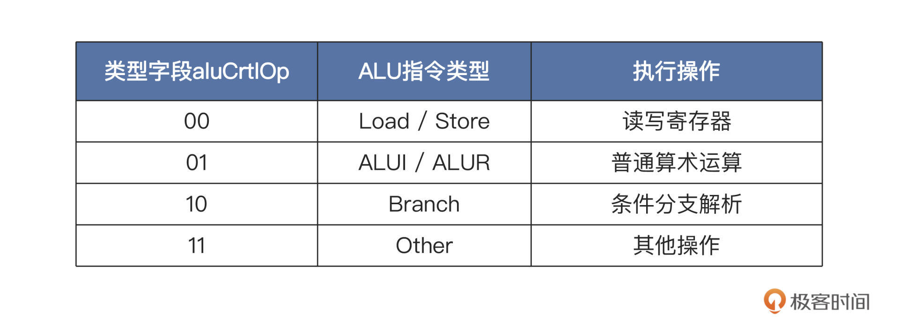
根据2位执行类型字段aluCrtlOp，以及指令译码得到的操作码funct7和funct3，就可以设计我们的执行控制模块了。
结合前面的表格，我们来看看执行控制模块如何根据aluCrtlOp信号做判断。
如果aluCrtlOp等于（00），对应的指令类型就是Load和Store指令，也就是通过加法运算来计算访存地址；如果aluCrtlOp等于（01），相应的指令类型就是ALUI/ALUR，同样也是根据输入的funct7和funct3字段决定执行哪些算术运算，比如加减运算、移位操作等；如果类型字段等于（10），就对应着分支跳转指令，流水线就会相应去完成条件分支的解析工作。
表格最后一列你先不用关注，扩展功能时才可能用到，这里先关注前三类情况即可。
具体设计的Verilog代码如下：
module ALUCtrl (
input [2:0] funct3,
input [6:0] funct7,
input [1:0] aluCtrlOp,
input itype,
output reg [3:0] aluOp
);
always @(*) begin
case(aluCtrlOp)
2'b00: aluOp <= `ALU_OP_ADD; // Load/Store
2'b01: begin
if(itype & funct3[1:0] != 2'b01)
aluOp <= {1'b0, funct3};
else
aluOp <= {funct7[5], funct3}; // normal ALUI/ALUR
end
2'b10: begin
case(funct3) // bxx
`BEQ_FUNCT3: aluOp <= `ALU_OP_EQ;
`BNE_FUNCT3: aluOp <= `ALU_OP_NEQ;
`BLT_FUNCT3: aluOp <= `ALU_OP_SLT;
`BGE_FUNCT3: aluOp <= `ALU_OP_GE;
`BLTU_FUNCT3: aluOp <= `ALU_OP_SLTU;
`BGEU_FUNCT3: aluOp <= `ALU_OP_GEU;
default: aluOp <= `ALU_OP_XXX;
endcase
end
default: aluOp <= `ALU_OP_XXX;
endcase
end
endmodule
这里要注意的是，当aluCtrlOp等于（01）时，需要根据funct3和funct7产生ALU的操作码。在前面的译码模块中，已经为我们提供了I型指令类型的判断信号itype。如果是itype信号等于“1”，操作码直接由funct3和高位补“0”组成；如果不是I型指令，ALU操作码则要由funct3和funct7的第五位组成。
根据上述的三类指令，就会产生一个4位的ALU操作信号aluOp，为后面的ALU模块做相关逻辑运行提供操作码。
通用寄存器
在ALU模块开始执行运算之前，我们还需要提前完成一个操作——读取通用寄存器。在参与ALU逻辑运算的两个操作数中，至少有一个来自于通用寄存器，另一个可以来自于通用寄存器或者指令自带的立即数，如下图所示：

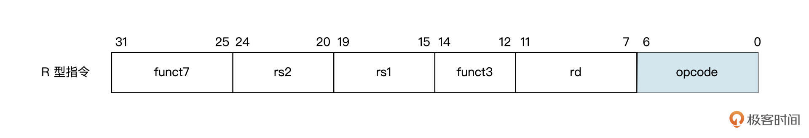
由于第七节课提到的6种指令中的R型指令有三个操作数，分别对应于两个源寄存器rs1和rs2，以及一个目标寄存器rd。一条R指令类似于有三个参数的函数，如add（rd，rs1，rs2），完成的功能就是先读取rs1、rs2两个参数，然后相加，最后把结果写入到rd参数中。
对应到每条指令，则需要从通用寄存器模块中读取其中两个寄存器中的数据，之后还要把运算结果写入另一个通用寄存器。每读取一个寄存器，就需要输入一个寄存器索引，并输出一个通用寄存器中的值。两个操作数对应的寄存器需要同时读取，所以通用寄存器模块需要两个读地址接口和两个读数据输出接口。
此外，处于流水线上的指令是并发执行的，在读取通用寄存器的同时，可能还需要写入数据到通用寄存器，所以需要一套写地址和写数据接口。因此，通用寄存器模块的设计框图如下：

根据上述的设计思路，我们就可以设计和实现通用寄存器代码了。
module gen_regs (
input clk,
input reset,
input wen,
input [4:0] regRAddr1, regRAddr2, regWAddr,
input [31:0] regWData,
output [31:0] regRData1,
output [31:0] regRData2
);
integer ii;
reg [31:0] regs[31:0];
// write registers
always @(posedge clk or posedge reset) begin
if(reset) begin
for(ii=0; ii<32; ii=ii+1)
regs[ii] <= 32'b0;
end
else if(wen & (|regWAddr))
regs[regWAddr] <= regWData;
end
// read registers
assign regRData1 = wen & (regWAddr == regRAddr1) ? regWData
: ((regRAddr1 != 5'b0) ? regs[regRAddr1] : 32'b0);
assign regRData2 = wen & (regWAddr == regRAddr2) ? regWData
: ((regRAddr2 != 5'b0) ? regs[regRAddr2] : 32'b0);
endmodule
这里添加了一个写控制使能信号wen。因为写寄存器是边沿触发的，在一个时钟周期内写入的寄存器数据，需要在下一个时钟周期才能把写入的数据读取出来。为了提高读写效率，在对同一个寄存器进行读写时，如果写使能wen有效，就直接把写入寄存器的数据送给读数据接口，这样就可以在一个时钟周期内，读出当前要写入的寄存器数据了。- 从前面的章节中我们知道，通用寄存器总共有32个，所以通用寄存器模块上的读写地址都是5位（\(2^{5}\)=32）。
其中，还有一个寄存器比较特殊，从代码中也可以看到它的特殊处理，即读地址regRAddr1 = 5’b0 时的寄存器。我们把第一个寄存器叫做0值寄存器，因为在RISC-V指令架构中就规定好了，第一个通用寄存器必须编码为0，也就是把写入该寄存器的数据忽略，而在读取时永远输出为0。
ALU模块设计
当操作码和操作数都准备好后，我们就可以开始ALU模块的实现了。
上述执行控制模块根据三类指令产生的ALU操作信号aluOp，在ALU模块就能以此为依据，执行相应的运算了。操作码对应的ALU操作如下表所示：
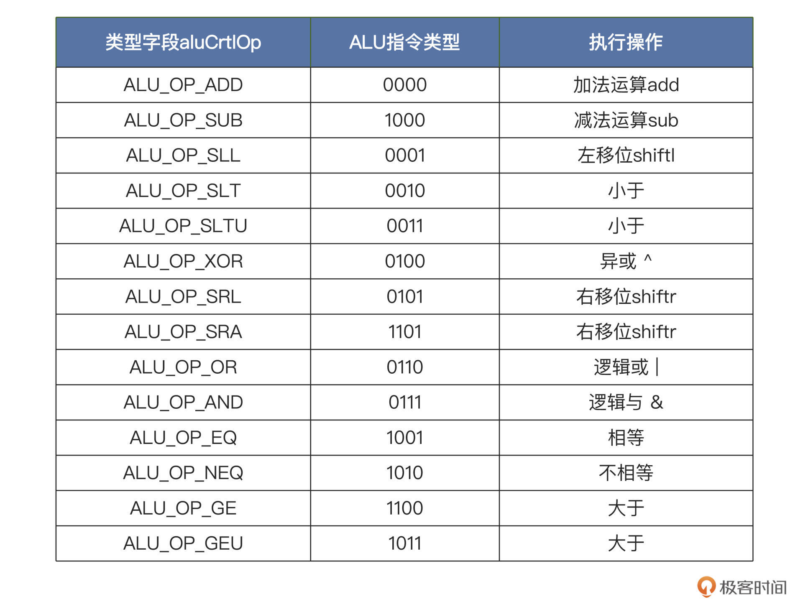
根据表格中的操作编码和对应的运行操作，很容易就可以设计出ALU模块，具体的设计代码如下：
module alu (
input [31:0] alu_data1_i,
input [31:0] alu_data2_i,
input [ 3:0] alu_op_i,
output [31:0] alu_result_o
);
reg [31:0] result;
wire [31:0] sum = alu_data1_i + ((alu_op_i[3] | alu_op_i[1]) ? -alu_data2_i : alu_data2_i);
wire neq = |sum;
wire cmp = (alu_data1_i[31] == alu_data2_i[31]) ? sum[31]
: alu_op_i[0] ? alu_data2_i[31] : alu_data1_i[31];
wire [ 4:0] shamt = alu_data2_i[4:0];
wire [31:0] shin = alu_op_i[2] ? alu_data1_i : reverse(alu_data1_i);
wire [32:0] shift = {alu_op_i[3] & shin[31], shin};
wire [32:0] shiftt = ($signed(shift) >>> shamt);
wire [31:0] shiftr = shiftt[31:0];
wire [31:0] shiftl = reverse(shiftr);
always @(*) begin
case(alu_op_i)
`ALU_OP_ADD: result <= sum;
`ALU_OP_SUB: result <= sum;
`ALU_OP_SLL: result <= shiftl;
`ALU_OP_SLT: result <= cmp;
`ALU_OP_SLTU: result <= cmp;
`ALU_OP_XOR: result <= (alu_data1_i ^ alu_data2_i);
`ALU_OP_SRL: result <= shiftr;
`ALU_OP_SRA: result <= shiftr;
`ALU_OP_OR: result <= (alu_data1_i | alu_data2_i);
`ALU_OP_AND: result <= (alu_data1_i & alu_data2_i);
`ALU_OP_EQ: result <= {31'b0, ~neq};
`ALU_OP_NEQ: result <= {31'b0, neq};
`ALU_OP_GE: result <= {31'b0, ~cmp};
`ALU_OP_GEU: result <= {31'b0, ~cmp};
default: begin
result <= 32'b0;
end
endcase
end
function [31:0] reverse;
input [31:0] in;
integer i;
for(i=0; i<32; i=i+1) begin
reverse[i] = in[31-i];
end
endfunction
assign alu_result_o = result;
endmodule
在上面的ALU模块代码中，输入信号aluIn1和aluIn2分别是源操作数1和源操作数2，信号aluOp是执行控制模块产生的ALU运算控制码。ALU的功能就是根据运算码aluOp来完成两个源操作数的逻辑运算，并把结果通过信号aluOut输出。
ALU模块的总体代码比较简单，但里面这段代码（第16行～第19行）不好理解，别担心，我这里专门拿出来给你讲一下。
wire [31:0] sum = aluIn1 + ((aluOp[3] | aluOp[1]) ? -aluIn2 : aluIn2);
wire neq = |sum;
wire cmp = (aluIn1[31] == aluIn2[31]) ? sum[31]
: aluOp[0] ? aluIn2[31] : aluIn1[31];
首先，代码中的sum信号其实就是两个源操作数的和，不过当运算码aluOp的第3位和第1位为“1”时做的是相减运算，这是为减法指令或者后面的比较大小而准备的运算。你可以对照上面的ALU运算表格来理解。
neq信号表示的是比较两个操作数是否相等，这就是根据前面的两个操作相减的结果判断，如果它们的差不为“0”，也就是sum信号按位与之后不为“0”，则表示两个操作数不相等。
cmp信号表示两个操作数的大小比较，如果它们的最高位（也就是符号位）相等，则根据两个操作数相减的差值的符号位（也是数值的最高位）判断。如果是正数，表示源操作数1大于源操作数2，否则表示源操作数1小于源操作数2。
如果它们的最高位不相等，则根据ALU运算控制码aluOp的最低位判断。如果aluOp最低位为“1”，表示是无符号数比较，直接取操作数2的最高位作为比较结果。如果aluOp最低位为“0”，表示是有符号数比较，直接取操作数1的最高位作为比较结果。
下面我们再来看看移位操作相关的代码，其中的shamt信号是取自源操作数2的低五位，表示源操作数1需要移多少位（25=32）。shin信号是取出要移位的数值，根据aluOp判断是左移还是右移，如果是右移就直接等于源操作数1，如果是左移就先对源操作数的各位数做镜像处理。
shift信号是根据aluOp判断是算术右移还是逻辑右移，如果是算术右移，则在最高位补一个符号位。shiftt信号是右移之后的结果，这里用到了\(signed()函数对移位前的数据shift进行了修饰，\)signed()的作用是决定如何对操作数扩位这个问题。
具体的过程是，在右移操作前，$signed()函数先把操作数的符号位，扩位成跟结果相同的位宽，然后再进行移位操作，而shiftr就是右移后的结果。
我们再专门看看ALU模块代码的第20行到第25行，这部分主要用来完成移位操作。
wire [ 4:0] shamt = aluIn2[4:0];
wire [31:0] shin = aluOp[2] ? aluIn1 : reverse(aluIn1);
wire [32:0] shift = {aluOp[3] & shin[31], shin};
wire [32:0] shiftt = ($signed(shift) >>> shamt);
wire [31:0] shiftr = shiftt[31:0];
wire [31:0] shiftl = reverse(shiftr);
请你注意，左移的结果shiftl，是由右移后的结果进行位置取反得到的。因为对于需要左移的操作数，在前面已经做了位置取反，所以移位操作时也是进行右移处理，最后把结果再一次做位置取反就可以了。- 好了，恭喜你走到这里，CPU流水线中执行阶段的内容就告一段落了。下一节课我们继续完成流水线的访存模块的设计。
重点回顾
这节课告一段落，我来给你做个总结。
指令执行算是CPU流水线中最复杂的一个阶段了，需要我们慢慢推导，细细思考，才能理清楚里面的逻辑关系。这节课的内容和前面的第五节课到第七节课的知识关联比较多，不懂的地方你可以再回去看看。
下面我们一起来回顾一下今天的重点内容。为了实现CPU的指令执行模块，我们先梳理了设计思路。我们把指令分成逻辑运算、存储器访问、条件分支判断这三类指令进行处理。这三类指令经过ALU执行相关操作之后，统一由数据通路来输出结果。
接着我们设计了执行控制模块。根据译码模块里产生的指令控制字段aluCrtlOp，执行控制模块可以根据上述的三类指令，相应产生一个4位的ALU操作信号aluOp，为后面的ALU模块提供运算执行码。
根据指令在流水线中执行时对通用寄存器的读写特点，我们为32个通用寄存器组设计了由两个套读接口和一套写接口组成的通用寄存器模块，这三套接口可以支持其他模块对通用寄存器进行同时读写。
最后，根据执行控制模块产生的ALU运算控制信号aluOp，我们设计出了ALU模块。在ALU模块中，可以完成加减法计算，两个操作数的大小比较，操作数的左移右移等操作。
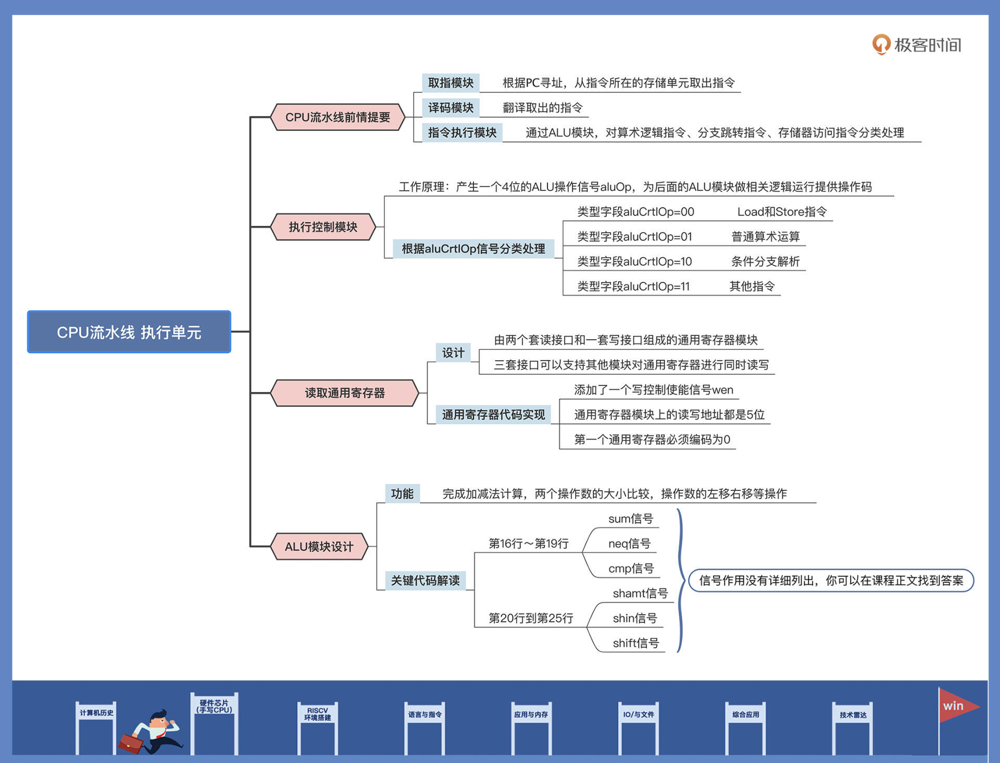
如果你有兴趣的话，可以参考前面RISC-V指令架构里列出的指令，自己试试实现更多的指令操作。下节课，我们继续探索访存相关模块如何设计和实现，敬请期待。
思考题
在ALU模块代码中，为什么要把左移操作转换为右移进行处理？
欢迎你在留言区跟我交流讨论，积极参与思考有助于你深化理解。如果觉得这节课还不错，别忘了分享给身边的朋友，邀他跟你一起手写CPU！
09 手写CPU（四）：如何实现CPU流水线的访存阶段？
你好，我是LMOS。
先简单回顾一下上一节课，我们设计了MiniCPU流水线的执行相关模块。其中包括执行控制模块、通用寄存器模块，以及可以进行加减法运算、大小比较、移位操作的ALU模块。
指令执行之后就到了流水线的下一级——访存。这节课我们就重点聊聊怎么设计实现访存的相关模块。在你的设想里，访存模块必要的组成部分有哪些呢？
如果你的第一反应是访存控制模块，我只能说你只答对了一部分。访存控制模块虽然是流水线的主线，但你可能忽略了流水线中的数据相关性问题。因此，今天我们先想办法解决流水线的数据冒险问题，然后再完成流水线访存阶段相关模块的设计。
这节课的代码你可以从这里获取。
流水线数据冒险
在开始设计访存模块之前，我们得先解决一个问题，即流水线的数据冒险。
在CPU流水线里，执行不同的指令时会发生这样的情况：一条指令B，它依赖于前面还在流水线中的指令A的执行结果。当指令B到达执行阶段时，因为指令A还在访存阶段，所以这时候就无法提供指令B执行所需要的数据。这就导致指令B无法在预期的时钟周期内执行。
当指令在流水线中重叠执行时，后面的指令需要用到前面的指令的执行结果，而前面的指令结果尚未写回，由此导致的冲突就叫数据冒险。
我再举个更具体些的例子。比如，有一条减法指令，它需要用到前面一条加法指令的运算结果作为被减数：
add x2,x0,x1
sub x6,x2,x3
结合下面的示意图，我们可以看到，在不做任何干预的情况下，sub依赖于add的执行结果，这导致sub指令要等到add指令走到流水线的第五个阶段，把结果写回之后才能执行，这就浪费了三个时钟周期。

这种数据冒险将会严重地阻碍CPU的流水线，设置流水线目的就是为了提升效率，让某个时间点上有多条指令可以同时执行，这种让指令“干等”的状态显然不是最佳选项。那我们怎么解决这样的问题呢？方法其实不止一种，让我带你分析分析。
结合前的例子，我们最直接的处理办法就是通过编译器调整一些指令顺序。不过指令存在依赖关系的情况经常发生，用编译器调整的方式会导致延迟太长，处理的结果无法让我们满意。
别灰心，我们再另寻出路。把前面的加法指令add放到流水线中，通过观察整个运算过程，我们不难发现，其实add加法运算的结果，经过流水线的执行阶段（也就是第三个模块EX）之后就已经出来了，只是还没把结果写回到x2寄存器而已。
所以，另一种解决办法也就有了头绪，能不能通过向内部资源添加额外的硬件，来尽快找到缺少的运算项呢？
这当然可以。对于上述的指令序列，一旦ALU计算出加法指令的结果，就可以将其作为减法指令执行的数据输入，不需要等待指令完成，就可以解决数据冒险的问题。
如上图所示，将add指令执行阶段运算的结果x2中的值，直接传递给sub指令作为执行阶段的输入，替换sub指令在译码阶段读出的寄存器x2的值。这种硬件上解决数据冒险的方法称为前递（forwarding）。
好，思路既然理清楚了，我们就把它落地到实际设计里。
数据前递模块的设计
通过上节课执行模块的设计，我们知道了ALU的逻辑运算需要两个操作数，一个来自于通用寄存器，另一个来自于通用寄存器或者指令自带的立即数。
但是当需要读取的通用寄存器的值，依赖于前面第一条或者第二条指令的运算结果时，就出现了刚才我们提到的数据冒险问题。为了解决这个问题，就需要我们专门设计一个数据前递模块（forwarding），它在流水线中的位置如下图所示：

所谓前递，顾名思义，就是把流水线中后面阶段产生的数据向前传递的过程。
正如上图中的forwarding模块，可以看到它的数据来自于流水线中的执行模块EX、访存模块MEM、写回模块WB的输出，经过forwarding模块处理后，把数据传递到执行模块的输入。
然后，流水线根据当前指令的译码信号，选择读取通用寄存器的数据作为执行模块的操作数，或者选择来自前递模块的数据作为执行模块的操作数。
那么具体是如何选择前递数据作为执行模块的操作数呢？让我们结合下面forwarding模块的代码来寻找答案：
module forwarding (
input [4:0] rs1,
input [4:0] rs2,
input [4:0] exMemRd,
input exMemRw,
input [4:0] memWBRd,
input memWBRw,
input mem_wb_ctrl_data_toReg,
input [31:0] mem_wb_readData,
input [31:0] mem_wb_data_result,
input [31:0] id_ex_data_regRData1,
input [31:0] id_ex_data_regRData2,
input [31:0] ex_mem_data_result,
output [31:0] forward_rs1_data,
output [31:0] forward_rs2_data
);
//检查是否发生数据冒险
wire [1:0] forward_rs1_sel = (exMemRw & (rs1 == exMemRd) & (exMemRd != 5'b0)) ? 2'b01
:(memWBRw & (rs1 == memWBRd) & (memWBRd != 5'b0)) ? 2'b10
: 2'b00;
wire [1:0] forward_rs2_sel = (exMemRw & (rs2 == exMemRd) & (exMemRd != 5'b0)) ? 2'b01
:(memWBRw & (rs2 == memWBRd) & (memWBRd != 5'b0)) ? 2'b10
: 2'b00;
wire [31:0] regWData = mem_wb_ctrl_data_toReg ? mem_wb_readData : mem_wb_data_result;
//根据数据冒险的类型选择前递的数据
assign forward_rs1_data = (forward_rs1_sel == 2'b00) ? id_ex_data_regRData1 :
(forward_rs1_sel == 2'b01) ? ex_mem_data_result :
(forward_rs1_sel == 2'b10) ? regWData : 32'h0;
assign forward_rs2_data = (forward_rs2_sel == 2'b00) ? id_ex_data_regRData2 :
(forward_rs2_sel == 2'b01) ? ex_mem_data_result :
(forward_rs2_sel == 2'b10) ? regWData : 32'h0;
endmodule
我们分别看看代码中的各种信号。前递模块输入的端口信号rs1和rs2，来自于指令译码后得到的两个通用寄存器索引。exMemRd信号是来自访存模块的对通用寄存器的访问地址。exMemRw是流水线访存阶段对通用寄存器的写使能控制信号。memWBRd 和 memWBRw分别是写回模块对通用寄存器的地址和写使能控制信号。
利用这些信号就可以判断是否发生数据冒险，我们结合下面这段代码继续分析分析：
//检查是否发生数据冒险
wire [1:0] forward_rs1_sel = (exMemRw & (rs1 == exMemRd) & (exMemRd != 5'b0)) ? 2'b01
:(memWBRw & (rs1 == memWBRd) & (memWBRd != 5'b0)) ? 2'b10
: 2'b00;
wire [1:0] forward_rs2_sel = (exMemRw & (rs2 == exMemRd) & (exMemRd != 5'b0)) ? 2'b01
:(memWBRw & (rs2 == memWBRd) & (memWBRd != 5'b0)) ? 2'b10
: 2'b00;
当需要读取的通用寄存器的地址等于访存，或者写回阶段要访问通用寄存器地址时（也就是rs1 == exMemRd和rs1 == memWBRd），就判断为将要发生数据冒险。
当然，由于通用寄存器中的零寄存器的值永远为“0”，所以不会发生数据冒险，需要排除掉这种特殊情况（也就是exMemRd != 5’b0 和 memWBRd != 5’b0）。根据这样的判断结果，就会产生前递数据的两个选择信号forward_rs1_sel和forward_rs2_sel。
发生数据冒险的情况就是这样，那不发生数据冒险又是什么情况呢？下面是选择前递的数据对应的代码段，我们结合这段代码继续分析。
//根据数据冒险的类型选择前递的数据
assign forward_rs1_data = (forward_rs1_sel == 2'b00) ? id_ex_data_regRData1 :
(forward_rs1_sel == 2'b01) ? ex_mem_data_result :
(forward_rs1_sel == 2'b10) ? regWData : 32'h0;
assign forward_rs2_data = (forward_rs2_sel == 2'b00) ? id_ex_data_regRData2 :
(forward_rs2_sel == 2'b01) ? ex_mem_data_result :
(forward_rs2_sel == 2'b10) ? regWData : 32'h0;
我们先把目光聚焦到id_ex_data_regRData1和id_ex_data_regRData2这两个信号上。它们来自于指令译码之后读出通用寄存器的两个操作数，这是流水线不发生数据冒险时，流水线正常选择的数据通路。
而ex_mem_data_result 信号是访存阶段需要写到通用寄存器的数据，regWData是回写阶段需要更新到通用寄存器的数据。这样，通过判断将要发生数据冒险的位置，前递模块选择性地把处于流水线中的数据前递，就可以巧妙地解决流水线中的数据冒险问题了。
访存控制模块设计
好了，解决了流水线的数据冒险问题，让我们回到流水线设计的主线来，继续完成流水线的第四级——访存相关模块的设计。
在[第六节课]讲CPU流水线的时候我们提到过，流水线中一条指令的生命周期分为五个阶段。流水线的访存阶段就是指，将数据从存储器中读出或写入存储器的过程。这个阶段会出现由 LOAD / STORE 指令产生的内存访问。
因为访存阶段的功能就是对存储器读写，所以访存控制信号中，最重要的两个信号就是存储器读控制信号memRead 和写控制信号memWrite。当然，访存的控制信号通路也会受流水线冲刷等流水线管理信号的控制，具体的代码如下：
module ex_mem_ctrl(
input clk,
input reset,
input in_mem_ctrl_memRead, //memory读控制信号
input in_mem_ctrl_memWrite, //memory写控制信号
input [1:0] in_mem_ctrl_maskMode, //mask模式选择
input in_mem_ctrl_sext, //符合扩展
input in_wb_ctrl_toReg, //写回寄存器的数据选择，“1”时为mem读取的数据
input in_wb_ctrl_regWrite, //寄存器写控制信号
input flush, //流水线数据冲刷信号
output out_mem_ctrl_memRead,
output out_mem_ctrl_memWrite,
output [1:0] out_mem_ctrl_maskMode,
output out_mem_ctrl_sext,
output out_wb_ctrl_toReg,
output out_wb_ctrl_regWrite
);
reg reg_mem_ctrl_memRead;
reg reg_mem_ctrl_memWrite;
reg [1:0] reg_mem_ctrl_maskMode;
reg reg_mem_ctrl_sext;
reg reg_wb_ctrl_toReg;
reg reg_wb_ctrl_regWrite;
assign out_mem_ctrl_memRead = reg_mem_ctrl_memRead;
assign out_mem_ctrl_memWrite = reg_mem_ctrl_memWrite;
assign out_mem_ctrl_maskMode = reg_mem_ctrl_maskMode;
assign out_mem_ctrl_sext = reg_mem_ctrl_sext;
assign out_wb_ctrl_toReg = reg_wb_ctrl_toReg;
assign out_wb_ctrl_regWrite = reg_wb_ctrl_regWrite;
always @(posedge clk or posedge reset) begin
if (reset) begin
reg_mem_ctrl_memRead <= 1'h0;
end else if (flush) begin
reg_mem_ctrl_memRead <= 1'h0;
end else begin
reg_mem_ctrl_memRead <= in_mem_ctrl_memRead;
end
end
always @(posedge clk or posedge reset) begin
if (reset) begin
reg_mem_ctrl_memWrite <= 1'h0;
end else if (flush) begin
reg_mem_ctrl_memWrite <= 1'h0;
end else begin
reg_mem_ctrl_memWrite <= in_mem_ctrl_memWrite;
end
end
………… //由于代码较长，结构相似，这里省略了一部分，完整代码你可以从Gitee上获取
endmodule
虽然代码有几十行，但过程还是很容易理解的。首先要根据流水线的冲刷控制信号flush，判断访存阶段的控制信号是否需要清零。
如果flush等于“0”，就把上一阶段送过来的控制信号（比如存储器读控制信号memRead、存储器写控制信号memWrite……等），通过寄存器保存下来，然后发送给存储器读写控制模块（dmem_rw.v）或者流水线的下一级使用。
访存数据通路模块设计
接下来，我们继续完成访存数据通路模块的设计。访存数据通路就是把访存阶段读取到的存储器数据，或者是指令执行产生的结果发送流水线的下一级处理。
由于下一级也就是流水线的最后一级——写回，所以访存的数据通路主要包括要写回的通用寄存器地址regWAddr、访问存储器读取的数据regRData2、指令运算的结果result等。
访存的数据通路也会受流水线冲刷等流水线管理信号的控制，具体代码如下：
module ex_mem(
input clk,
input reset,
input [4:0] in_regWAddr, //写回寄存器的地址
input [31:0] in_regRData2, //读存储器的数据
input [1:0] ex_result_sel, //执行结果选择
input [31:0] id_ex_data_imm, //指令立即数
input [31:0] alu_result, //ALU运算结果
input [31:0] in_pc, //当前PC值
input flush, //流水线数据冲刷控制信号
output [4:0] data_regWAddr,
output [31:0] data_regRData2,
output [31:0] data_result,
output [31:0] data_pc
);
reg [4:0] reg_regWAddr;
reg [31:0] reg_regRData2;
reg [31:0] reg_result;
reg [31:0] reg_pc;
wire [31:0] resulet_w = (ex_result_sel == 2'h0) ? alu_result :
(ex_result_sel == 2'h1) ? id_ex_data_imm :
(ex_result_sel == 2'h2) ? (in_pc +32'h4) : 32'h0;
assign data_regWAddr = reg_regWAddr;
assign data_regRData2 = reg_regRData2;
assign data_result = reg_result;
assign data_pc = reg_pc;
always @(posedge clk or posedge reset) begin
if (reset) begin
reg_regWAddr <= 5'h0;
end else if (flush) begin
reg_regWAddr <= 5'h0;
end else begin
reg_regWAddr <= in_regWAddr;
end
end
always @(posedge clk or posedge reset) begin
if (reset) begin
reg_regRData2 <= 32'h0;
end else if (flush) begin
reg_regRData2 <= 32'h0;
end else begin
reg_regRData2 <= in_regRData2;
end
end
always @(posedge clk or posedge reset) begin
if (reset) begin
reg_result <= 32'h0;
end else if (flush) begin
reg_result <= 32'h0;
end else begin
reg_result <= resulet_w;
end
end
always @(posedge clk or posedge reset) begin
if (reset) begin
reg_pc <= 32'h0;
end else if (flush) begin
reg_pc <= 32'h0;
end else begin
reg_pc <= in_pc;
end
end
endmodule
和上面的访存控制模块类似，访存数据通路模块也是根据流水线的冲刷控制信号flush，判断访存阶段的数据是否需要清零。如果不需要清零，就把上一阶段送过来的数据通过寄存器保存下来。
对于代码的第21到第23行代码，我为你单独解释一下。
ex_result_sel就是对流水线执行阶段的结果进行选择。当（ex_result_sel == 2’h0）时，就选择ALU的运算结果；当（ex_result_sel == 2’h1）时，就会选择指令解码得到的立即数（其实就是对应LUI指令）；当（ex_result_sel == 2’h2）时，选择PC加4的值，也就是下一个PC的值。
wire [31:0] resulet_w = (ex_result_sel == 2'h0) ? alu_result :
(ex_result_sel == 2'h1) ? id_ex_data_imm :
(ex_result_sel == 2'h2) ? (in_pc +32'h4) : 32'h0;
重点回顾
这节课的内容到这里就告一段落了，我给你做个总结吧。
今天我们在设计访存模块之前，先探讨了流水线中的数据冒险问题。在执行指令时，如果发生了数据冒险，就可能使流水线停顿，等待前面的指令执行完成后才能继续执行后续的指令，严重影响了指令在CPU流水线中并行执行。因此，我们设计了数据前递模块来解决数据冒险的问题。
但是，添加前递模块并不能避免所有的流水线停顿。比如，当一条读存储器指令（LOAD）之后紧跟一条需要使用其结果的R型指令时，就算使用前递也需要流水线停顿。因为读存储器的数据必须要在访存之后才能用，但load指令正在访存时，后一条指令已经在执行。所以，在这种情况下，流水线必须停顿，通常的说法是在两条指令之间插入气泡。
最后，我们根据流水线的控制信号，完成了访存控制信号通路和访存数据通路的模块设计。这节课的要点你可以参考下面的导图。

通过课程的讲解，CPU流水线中访存阶段的设计实现的思路，相信你已经心中有数了，别忘了课后结合配套代码再找找“手感”。下节课，我们将会介绍流水线的最后一级——写回模块的设计，敬请期待。
思考题
除了数据冒险，我们的CPU流水线是否还存在其它的冲突问题，你想到解决方法了么？
欢迎你在留言区和我交流，踊跃提问或者记录笔记对我们加深理解有很大的帮助。如果你觉得这节课还不错，别忘了分享给更多朋友，和他一起手写CPU。
10 手写CPU（五）：CPU流水线的写回模块如何实现？
你好，我是LMOS。
今天我们一起来完成迷你CPU的最后一个部分——写回相关模块的设计（课程代码在这里）。
简单回顾一下，上节课我们完成了CPU流水线的访存相关模块的设计。在设计访存模块之前，我们发现流水线中存在数据冒险的问题。为了解决这个问题，我们设计了数据前递模块。
但是我们采用的数据前递模块，只局限于解决算术操作和数据传输中的冒险问题。在CPU流水线中还可能存在结构冒险和控制冒险的问题，我们在进行流水线规划时，已经合理地避免了结构冒险。但是，控制冒险还可能出现，下面我们就来探讨一下流水线的控制冒险问题。
流水线控制冒险
还记得前面我们说过的条件分支指令吗？就是根据指令设置的数值比较结果，改变并控制跳转的方向，比如beq和bne指令。
假如在流水线取出分支指令后，紧跟着在下一个时钟周期就会取下一条指令。但是，流水线并不知道下一条指令应该从哪里取，因为它刚从存储器中取出分支指令，还不能确定上一条分支指令是否会发生跳转。
上面这种流水线需要根据上一条指令的执行结果决定下一步行为的情况，就是流水线中的控制冒险。这时候该怎么办呢？

控制冒险可以使用流水线停顿的方法解决，就是在取出分支指令后，流水线马上停下来，等到分支指令的结果出来，确定下一条指令从哪个地址取之后，流水线再继续。
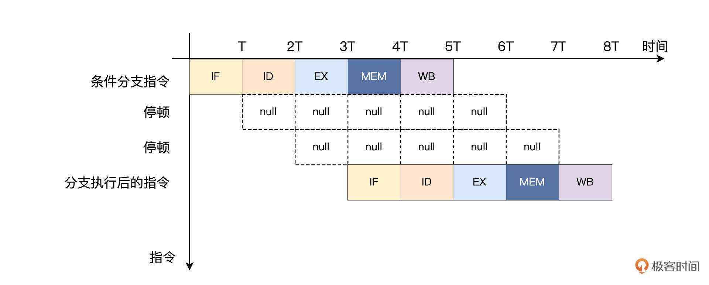
如上图所示，每当遇到条件分支指令时，流水线就停顿以避免控制冒险。但是这种方法对性能的影响是很大的。因为条件分支指令要等到执行之后的访存阶段，才能决定分支跳转是否发生，这就相当于流水线停顿了2个时钟周期。我们MiniCPU只有五级流水线，就停顿了这么久，像intel 的酷睿 i7处理器流水线，它的深度有十几级，如果也用停顿的方法，那延时损失就更大了。
既然阻塞流水线直到分支指令执行完成的方法非常耗时，浪费了太多流水线的时钟周期。那么，有没有一种方法既能解决控制冒险问题，又不影响流水线的性能呢？
很遗憾，答案是否定的。到目前为止，我们还没有找到根本性的解决控制冒险问题的方法。

但是，这并不代表我们没有办法去优化它，我们可以采用分支预测的方法提升分支阻塞的效率。
具体思路是这样的，当每次遇到条件分支指令时，预测分支会发生跳转，直接在分支指令的下一条取跳转后相应地址的指令。如果分支发生跳转的概率是50%，那么这种优化方式就可以减少一半由控制冒险带来的性能损失。
其实我们[第六节课]取指阶段设计的预读取模块（if_pre.v），实现的就是这个功能，相关代码如下：
wire is_bxx = (instr[6:0] == `OPCODE_BRANCH); //条件挑转指令的操作码
wire is_jal = (instr[6:0] == `OPCODE_JAL) ; //无条件跳转指令的操作码
//B型指令的立即数拼接
wire [31:0] bimm = {{20{instr[31]}}, instr[7], instr[30:25], instr[11:8], 1'b0};
//J型指令的立即数拼接
wire [31:0] jimm = {{12{instr[31]}}, instr[19:12], instr[20], instr[30:21], 1'b0};
//指令地址的偏移量
wire [31:0] adder = is_jal ? jimm : (is_bxx & bimm[31]) ? bimm : 4;
assign pre_pc = pc + adder;
看到这你可能还有疑问，如果条件分支不发生跳转的话又会怎么样呢？这种情况下，已经被读取和译码的指令就会被丢弃，流水线继续从不分支的地址取指令。
要想丢弃指令也不难，只需要把流水线中的控制信号和数据清“0”即可，也就是当预测失败的分支指令执行之后，到达访存阶段时，需要将流水线中处于取指、译码和执行阶段的指令清除。
我先展示一下控制冒险模块的整体代码，之后再详细解读。代码如下所示：
module hazard (
input [4:0] rs1,
input [4:0] rs2,
input alu_result_0,
input [1:0] id_ex_jump,
input id_ex_branch,
input id_ex_imm_31,
input id_ex_memRead,
input id_ex_memWrite,
input [4:0] id_ex_rd,
input [1:0] ex_mem_maskMode,
input ex_mem_memWrite,
output reg pcFromTaken,
output reg pcStall,
output reg IF_ID_stall,
output reg ID_EX_stall,
output reg ID_EX_flush,
output reg EX_MEM_flush,
output reg IF_ID_flush
);
wire branch_do = ((alu_result_0 & ~id_ex_imm_31) | (~alu_result_0 & id_ex_imm_31));
wire ex_mem_taken = id_ex_jump[0] | (id_ex_branch & branch_do);
wire id_ex_memAccess = id_ex_memRead | id_ex_memWrite;
wire ex_mem_need_stall = ex_mem_memWrite & (ex_mem_maskMode == 2'h0 | ex_mem_maskMode == 2'h1);
always @(*) begin
if(id_ex_memAccess && ex_mem_need_stall) begin
pcFromTaken <= 0;
pcStall <= 1;
IF_ID_stall <= 1;
IF_ID_flush <= 0;
ID_EX_stall <= 1;
ID_EX_flush <= 0;
EX_MEM_flush <= 1;
end
else if(ex_mem_taken) begin
pcFromTaken <= 1;
pcStall <= 0;
IF_ID_flush <= 1;
ID_EX_flush <= 1;
EX_MEM_flush <= 0;
end
else if(id_ex_memRead & (id_ex_rd == rs1 || id_ex_rd == rs2)) begin
pcFromTaken <= 0;
pcStall <= 1;
IF_ID_stall <= 1;
ID_EX_flush <= 1;
end
else begin
pcFromTaken <= 0;
pcStall <= 0;
IF_ID_stall <= 0;
ID_EX_stall <= 0;
ID_EX_flush <= 0;
EX_MEM_flush <= 0;
IF_ID_flush <= 0;
end
end
endmodule
首先我们来看看在控制冒险模块中，内部产生的几个信号都起到了怎样的作用。- branch_do 信号就是条件分支指令的条件比较结果，由ALU运算结果和立即数的最高位（符合位）通过“与”操作得到；ex_mem_taken是确认分支指令跳转的信号，由无条件跳转（jump）“或”条件分支指令（branch）产生。
id_ex_memAccess是存储器的选通信号，当对存储器的“读”或者“写”控制信号有效时产生；ex_mem_need_stall信号表示流水线需要停顿，当执行sb或者sh指令时就会出现这样的情况。
然后，再来看看我们这个模块要输出的几个信号。
wire branch_do = ((alu_result_0 & ~id_ex_imm_31) | (~alu_result_0 & id_ex_imm_31));
wire ex_mem_taken = id_ex_jump[0] | (id_ex_branch & branch_do);
wire id_ex_memAccess = id_ex_memRead | id_ex_memWrite;
wire ex_mem_need_stall = ex_mem_memWrite & (ex_mem_maskMode == 2'h0 | ex_mem_maskMode == 2'h1);
pcFromTaken是分支指令执行之后，判断和分支预测方向是否一致的信号。pcStall是控制程序计数器停止的信号，如果程序计数器停止，那么流水线将不会读取新的指令。IF_ID_stall是流水线中从取指到译码的阶段的停止信号。ID_EX_stall是流水线从译码到执行阶段的停止信号。
此外，当流水线需要冲刷时，就会产生取指、译码、执行、访存阶段的清零信号，分别对应着ID_EX_flush、EX_MEM_flush和IF_ID_flush信号。
output reg pcFromTaken, //分支指令执行结果，判断是否与预测方向一样
output reg pcStall, //程序计数器停止信号
output reg IF_ID_stall, //流水线IF_ID段停止信号
output reg ID_EX_stall, //流水线ID_EX段停止信号
output reg ID_EX_flush, //流水线ID_EX段清零信号
output reg EX_MEM_flush, //流水线EX_MEM段清零信号
output reg IF_ID_flush //流水线IF_ID段清零信号
什么情况下才会产生上面的控制信号呢？一共有三种情况，我这就带你依次分析一下。- 第一种情况是解决数据相关性问题。数据相关指的是指令之间存在的依赖关系。当两条指令之间存在相关关系时，它们就不能在流水线中重叠执行。
例如，前一条指令是访存指令Store，后一条也是Load或者Store指令，因为我们采用的是同步RAM，需要先读出再写入，占用两个时钟周期，所以这时要把之后的指令停一个时钟周期。
if(ID_EX_memAccess && EX_MEM_need_stall) begin
pcFromTaken <= 0;
pcStall <= 1;
IF_ID_stall <= 1;
IF_ID_flush <= 0;
ID_EX_stall <= 1;
ID_EX_flush <= 0;
EX_MEM_flush <= 1;
end
第二种情况是分支预测失败的问题，当分支指令执行之后，如果发现分支跳转的方向与预测方向不一致。这时就需要冲刷流水线，清除处于取指、译码阶段的指令数据，更新PC值。
// 分支预测失败，需要冲刷流水线，更新pc值
else if(EX_MEM_taken) begin
pcFromTaken <= 1;
pcStall <= 0;
IF_ID_flush <= 1;
ID_EX_flush <= 1;
EX_MEM_flush <= 0;
end
第三种情况就是解决[上一节课]提到的数据冒险问题。当前一条指令是 Load，后一条指令的源寄存器 rs1和rs2依赖于前一条从存储器中读出来的值，需要把 Load 指令之后的指令停顿一个时钟周期，而且还要冲刷ID _EX阶段的指令数据。
else if(ID_EX_memRead & (ID_EX_rd == rs1 || ID_EX_rd == rs2)) begin
pcFromTaken <= 0;
pcStall <= 1;
IF_ID_stall <= 1;
ID_EX_flush <= 1;
end
解决了流水线的冒险问题，我们才能确保指令经过流水线执行后，得到的结果是正确的，这时候才能把执行结果写回到寄存器。接下来，让我们来继续完成写回阶段的模块设计。
写回控制模块设计
现在我们来到了流水线的最后一级——结果写回。先来看看写回控制模块，这个模块实现起来就非常简单了，它的作用就是选择存储器读取回来的数据作为写回的结果，还是选择流水线执行运算之后产生的数据作为写回结果。
具体代码如下：
module mem_wb_ctrl(
input clk,
input reset,
input in_wb_ctrl_toReg,
input in_wb_ctrl_regWrite,
output data_wb_ctrl_toReg,
output data_wb_ctrl_regWrite
);
reg reg_wb_ctrl_toReg;
reg reg_wb_ctrl_regWrite;
assign data_wb_ctrl_toReg = reg_wb_ctrl_toReg;
assign data_wb_ctrl_regWrite = reg_wb_ctrl_regWrite;
always @(posedge clk or posedge reset) begin
if (reset) begin
reg_wb_ctrl_toReg <= 1'h0;
end else begin
reg_wb_ctrl_toReg <= in_wb_ctrl_toReg;
end
end
always @(posedge clk or posedge reset) begin
if (reset) begin
reg_wb_ctrl_regWrite <= 1'h0;
end else begin
reg_wb_ctrl_regWrite <= in_wb_ctrl_regWrite;
end
end
endmodule
代码里有两个重要的信号需要你留意。一个是写回寄存器的数据选择信号wb_ctrl_toReg，当这个信号为“1”时，选择从存储器读取的数值作为写回数据，否则把流水线的运算结果作为写回数据。另一个是寄存器的写控制信号wb_ctrl_regWrite，当这个信号为“1”时，开始往目标寄存器写回指令执行的结果。
写回数据通路模块设计
和写回的控制模块一样，流水线的最后一级的写回数据通路上的信号也变得比较少了。
写回数据通路模块产生的信号主要包括写回目标寄存器的地址reg_WAddr，流水线执行运算后的结果数据result，从存储器读取的数据readData。
写回数据通路的模块代码如下：
module mem_wb(
input clk,
input reset,
input [4:0] in_regWAddr,
input [31:0] in_result,
input [31:0] in_readData,
input [31:0] in_pc,
output [4:0] data_regWAddr,
output [31:0] data_result,
output [31:0] data_readData,
output [31:0] data_pc
);
reg [4:0] reg_regWAddr;
reg [31:0] reg_result;
reg [31:0] reg_readData;
reg [31:0] reg_pc;
always @(posedge clk or posedge reset) begin
if (reset) begin
reg_regWAddr <= 5'h0;
end else begin
reg_regWAddr <= in_regWAddr;
end
end
always @(posedge clk or posedge reset) begin
if (reset) begin
reg_result <= 32'h0;
end else begin
reg_result <= in_result;
end
end
always @(posedge clk or posedge reset) begin
if (reset) begin
reg_readData <= 32'h0;
end else begin
reg_readData <= in_readData;
end
end
always @(posedge clk or posedge reset) begin
if (reset) begin
reg_pc <= 32'h0;
end else begin
reg_pc <= in_pc;
end
end
assign data_regWAddr = reg_regWAddr;
assign data_result = reg_result;
assign data_readData = reg_readData;
assign data_pc = reg_pc;
endmodule
仔细观察代码，你是否发现和流水线的前面几级的数据通路模块相比，少了两个控制信号呢？- 是的，写回阶段的模块没有了流水线的停止控制信号stall和流水线的冲刷控制信号flush。这是因为写回阶段的数据经过了数据冒险和控制冒险模块的处理，已经可以确保流水线产生的结果无误了，所以写回阶段的数据不受停止信号stall和清零信号flush的控制。
到这里，我们要设计的迷你CPU的五级流水线就基本完成啦。
重点回顾
最后我给你做个总结吧。
这节课我们先分析了流水线中存在的控制冒险问题，也就是当流水线中出现条件分支指令时，下一条指令还不确定从哪里取的问题。最容易想到的解决方案，就是在取出分支指令后，流水线马上停下来，等到分支指令的结果出来，确定下一条指令从哪个地址获取之后，流水线再继续。但是，这里流水线停顿的方式缺点很明显，它会带来很多CPU的性能损失。
于是，我们采用了分支预测的方法，预测每一条分支指令都会发生跳转，直接在分支指令的下一条取跳转后相应地址的指令。如果分支发生跳转的概率是50%，那么这种优化方式就可以减少一半由控制冒险带来的性能损失。
最后，根据整个流水线执行后的数据，我们完成了流水线的最后一级，也就是写回控制模块和数据通路模块的设计。写回控制模块要么选择存储器读取回来的数据作为写回结果，要么选择流水线执行运算之后产生的数据作为写回结果。数据通路模块则包含了写回目标寄存器的地址、ALU的运算结果以及访存阶段读存储器得到的数据。
到这里，我们终于把CPU的五级流水线的最后一级设计完成了，这代表基于指令集RV32I的迷你CPU核心代码设计已经完成。很快就可以让它跑程序了，你是不是很期待呢？下一节课我们就可以看到效果了！
思考题
除了流水线停顿和分支预测方法，是否还有其他解决控制冒险问题的办法？
欢迎你在留言区跟我交流互动，或者记录下你的思考与收获。如果觉得这节课还不错，别忘了分享给身边的朋友，我们一起来手写CPU！
11 手写CPU（六）：如何让我们的CPU跑起来？
你好，我是LMOS。
通过前面几节课的学习，我们已经完成了MiniCPU五级流水线的模块设计，现在距离实现一个完整的MiniCPU也就一步之遥。
还差哪些工作没完成呢？还记得我们在第六节课设计的MiniCPU架构图吗？回想一下，我们已经设计完成的五级流水线，都包含下图的哪些模块？
上图的CPU核心模块，也就是CPU Core包含的模块的设计，这些我们已经在前面几节课里完成了。除了五级流水线的模块，我们还设计了用于保存操作数和运算结果的通用寄存器组，设计了解决数据冒险问题的forwarding模块，以及解决控制冒险问题的hazard模块。
接下来，我们还需要搞定一些外围组件，也就是图里虚线框外的系统总线、ROM、RAM、输入输出端口GPIO（GPIO比较简单，课程里没专门讲）和UART模块。
学完这节课，我们就可以把这个CPU运行起来了，最终我还会带你在这个CPU上跑一个RISC-V版本的Hello World程序（课程代码从这里下载），是不是很期待？话不多说，我们这就开始！
系统总线设计
首先，让我们看看CPU的系统总线。
总线是连接多个部件的信息传输线，它是各部件共享的传输介质。在某一时刻，只允许有一个部件向总线发送信息，而多个部件可以同时从总线上接收相同的信息。MiniCPU的系统总线用来连接CPU内核与外设，完成信息传输的功能。
系统总线在整个MiniCPU中是一个很关键的模块。你可以这样理解，总线就是CPU内核跟其他外设部件的“联络员”。举几个例子，总线可以从ROM中读取指令，再交给CPU去执行；CPU运行程序时的变量，也会交由总线保存到RAM中；用来实现芯片与外部通信的UART模块，也需要通过总线跟CPU进行信息交换……
那总线的代码具体要怎么设计呢？我先展示一下写好的整体代码，再带你具体分析。
module sys_bus (
// cpu -> imem
input [31:0] cpu_imem_addr,
output [31:0] cpu_imem_data,
output [31:0] imem_addr,
input [31:0] imem_data,
// cpu -> bus
input [31:0] cpu_dmem_addr,
input [31:0] cpu_dmem_data_in,
input cpu_dmem_wen,
output reg [31:0] cpu_dmem_data_out,
// bus -> ram
input [31:0] dmem_read_data,
output [31:0] dmem_write_data,
output [31:0] dmem_addr,
output reg dmem_wen,
// bus -> rom
input [31:0] dmem_rom_read_data,
output [31:0] dmem_rom_addr,
// bus -> uart
input [31:0] uart_read_data,
output [31:0] uart_write_data,
output [31:0] uart_addr,
output reg uart_wen
);
assign imem_addr = cpu_imem_addr;
assign cpu_imem_data = imem_data;
assign dmem_addr = cpu_dmem_addr;
assign dmem_write_data = cpu_dmem_data_in;
assign dmem_rom_addr = cpu_dmem_addr;
assign uart_addr = cpu_dmem_addr;
assign uart_write_data = cpu_dmem_data_in;
always @(*) begin
case (cpu_dmem_addr[31:28])
4'h0: begin //ROM
cpu_dmem_data_out <= dmem_rom_read_data;
dmem_wen <= 0;
uart_wen <= 0;
end
4'h1: begin // RAM
dmem_wen <= cpu_dmem_wen;
cpu_dmem_data_out <= dmem_read_data;
uart_wen <= 0;
end
4'h2: begin // uart io
uart_wen <= cpu_dmem_wen;
cpu_dmem_data_out <= uart_read_data;
dmem_wen <= 0;
end
default: begin
dmem_wen <= 0;
uart_wen <= 0;
cpu_dmem_data_out <= 0;
end
endcase
end
endmodule
这里我们设计的系统总线其实是一个“一对多”的结构，也可以说是“一主多从”结构，就是一个CPU内核作为主设备（Master），多个外设作为从设备（Slave）。-

CPU内核具有系统总线的控制权，它可以通过系统总线，发起对外设的访问，而外设只能响应从CPU内核发来的各种总线命令。因此，每个外设都需要有一个固定的地址，作为CPU访问特定外设的标识。
以下就是给从设备分配的地址空间：
// 设备地址空间- // 0x0000_0000 -ROM (word to byte )- // 0x1000_0000 -RAM (word to byte )- // 0x2000_0000 -uart (word to byte )- // 0x3000_0000 -other(word to byte )
从代码的第39～60行也可以看到，总线根据地址的高4 bit的值，就可以判断出CPU访问的是哪个从设备。
当（cpu_dmem_addr[31:28] = 4’h0 ）时，CPU访问的是ROM，把从ROM返回的数据赋给总线；当（cpu_dmem_addr[31:28] = 4’h1 ）时，CPU访问的是RAM，把CPU的写使能cpu_dmem_wen赋给RAM的写使能信号dmem_wen，同时把从RAM返回的数据赋给总线；当（cpu_dmem_addr[31:28] = 4’h2 ）时，CPU访问的是串行通信模块UART，把CPU的写使能cpu_dmem_wen赋给uart的写使能信号uart_wen，同时把从UART返回的数据赋给总线。这就是MiniCPU总线的工作过程。
只读存储器ROM的实现
接下来，我们看看连接在总线上的存储器要如何实现。
ROM是个缩写，它表示只读存储器（Read Only Memory）。ROM具有非易失性的特点。什么是非易失性呢？说白了就是在系统断电的情况下，仍然可以保存数据。
正是因为这一特点，ROM很适合用来存放计算机的程序。由于历史原因，虽然现在使用的ROM中，有些类型不仅是可以读，还可以写，但我们还是习惯性地把它们称作只读存储器。比如，现在电子系统中常用的EEPROM、NOR flash 、Nand flash等，都可以归类为ROM。
在我们的MiniCPU中，目前没有真正使用上述的ROM作为指令存储器。让我们看看MiniCPU中实现ROM功能的代码，再相应分析我们的设计思路。
module imem (
input [11:0] addr1,
output [31:0] imem_o1,
input [11:0] addr2,
output [31:0] imem_o2
);
reg [31:0] imem_reg[0:4096];
assign imem_o1 = imem_reg[addr1];
assign imem_o2 = imem_reg[addr2];
endmodule
为了方便学习和仿真，我们使用了寄存器（reg）临时定义了一个指令存储器imem，并在仿真的顶层（tb_top.v）使用了$readmemh（）函数，把编译好的二进制指令读入到imem中，以便CPU内部读取并执行这些指令。这里我们设置的存储器在功能上是只读的。
以下就是仿真的顶层（tb_top.v）调用$readmemh（）函数的语句。
$readmemh(`HEXFILE, MiniCPU.u_imem.imem_reg);
函数里面有两个参数，一个是存放二进制指令的文件（HEXFILE），另一个就是实现ROM功能的寄存器（imem_reg）。这条语句可以在我们启动CPU仿真时，把二进制的指令一次性读入到imem中，这样CPU运行的过程中就可以取imem中的指令去执行了。
随机访问存储器RAM
除了存放指令的ROM，我们还需要一个存放变量和数据的RAM（Random Access Memory）。
RAM和特点跟ROM正好相反，它是易失性存储器，通常都是在掉电之后就会丢失数据。但是它具有读写速度快的优势，所以通常用作CPU的高速缓存。
RAM之所以叫做随机访问存储器，是因为不同的地址可以在相同的时间内随机读写。这是由RAM的结构决定的，RAM使用存储阵列来存储数据，只要给出行地址和列地址，就能确定目标数据，而且这一过程和目标数据所处的物理位置无关。
和ROM一样，为了方便对设计的MiniCPU进行仿真验证，我们还是用寄存器（reg）临时构建了一个数据存储器dmem，作为MiniCPU中的RAM使用。虽然临时构建的存储器和实际的ROM有点差别，但我们还在初期学习阶段，这已经足够了。
下面就是实现RAM功能的数据存储器dmem的代码：
module dmem(
input [11:0] addr,
input we,
input [31:0] din,
input clk,
output reg [31:0] dout
);
reg [31:0] dmem_reg[0:4095];
always @(posedge clk) begin
if(we) begin
dmem_reg[addr] <= din;
end
dout <= dmem_reg[addr];
end
endmodule
代码的第11~16行可以看到，我们使用了时钟信号clk，说明这里的dmem实现的是一个时钟同步RAM。而且当写使能信号（we）为“1”时，才能往RAM里写数据，否则只能读取数据。
外设UART设计
为了让MiniCPU能和其他电子设备进行通信，我们还要设计UART模块。
同样地，设计代码之前我先带你快速了解一下UART是什么，它的工作原理是怎样的。
UART的全称叫通用异步收发传输器（Universal Asynchronous Receiver/Transmitter），它是一种串行、异步、全双工的通信协议，是电子设备间进行异步通信的常用模块。
UART负责对系统总线的并行数据和串行口上的串行数据进行转换，通信双方采用相同的波特率。在不使用时钟信号线的情况下，仅用一根数据发送信号线和一根数据接收信号线（Rx和Tx）就可以完成两个设备间的通信，因此我们也把UART称为异步串行通信。
串行通信是指，利用一条传输线将数据按顺序一位位传送的过程。UART的发送模块会把来自CPU总线的并行数据转换为串行数据，再以串行方式将其发送到另一个设备的UART接收端。然后由UART的接收模块把串行数据转换为并行数据，以便接收设备存储和使用这些数据。
UART的数据传输格式如下图所示：

从图里我们可以看到，UART传输数据包括起始位、数据位、奇偶校验位、停止位和空闲位。UART数据传输线通常在不传输数据时保持在高电平。
这么多名词是不是有点应接不暇？我挨个解释一下，你就清楚了。
- 起始位是在数据线上先发出一个逻辑低电平“0”信号，表示数据传输的开始。
- 数据位是由5~8位逻辑高低电平表示的“1”或“0”信号。
- 校验位在传输的数据位的后面加1bit，表示“1”的位数应为偶数（偶校验）或奇数（奇校验）。
- 停止位是一个数据位宽的1倍、1.5倍、或者2倍的高电平信号，它是一次数据传输的结束标志。
- 空闲位是数据传输线处于逻辑高电平状态，表示当前线路上处于空闲状态，没有数据传送。
跟数据发送信号线TX、数据接收信号线RX相对应，我们的UART也分别设计了发送模块（uart_tx）和接收模块（uart_rx）。如果你想了解具体的功能实现，可以课后查看我们的MiniCPU的项目代码。
这里只放出来发送模块的端口信号，如下所示：
module uart_tx(
input clk , // Top level system clock input.
input resetn , // Asynchronous active low reset.
output uart_txd , // UART transmit pin.
output uart_tx_busy, // Module busy sending previous item.
input uart_tx_en , // Send the data on uart_tx_data
input [7:0] uart_tx_data // The data to be sent
);
UART接收模块的端口信号如下：
module uart_rx(
input clk , // Top level system clock input.
input resetn , // Asynchronous active low reset.
input uart_rxd , // UART Recieve pin.
input uart_rx_en , // Recieve enable
output uart_rx_break, // Did we get a BREAK message?
output uart_rx_valid, // Valid data recieved and available.
output reg [7:0] uart_rx_data // The recieved data.
);
端口信号的代码你结合上面的注释很容易就能理解，后面CPU跑程序的时候就会用到这部分的功能。
在CPU上跑个Hello World
好，现在来到我们的最后一个环节，编写程序，并把它放到我们的MiniCPU上跑起来。
为了能更直观看到CPU的运行效果，这里我们使用RISC-V汇编指令，设计了一段用UART发送“Hello MiniCPU!”字符串的代码，然后让串口接收端把发送的字符串在电脑上打印出来。
具体的代码如下：
# Assembly Description
main:
li x2, 0x20000000 # uart address
li x6, 0x1500 #x6 <== 0x1500, delay 1ms
addi x7, x0, 0 #x7 <== 0
addi x5, x0, 0x48 #x5 <== "H"
sw x5, 0(x2)
delay1: addi x7, x7, 1 #x7 <== x7 + 1
bne x7, x6, delay1 #x6 != x7
addi x7, x0, 0 #x7 <== 0
addi x5, x0, 0x65 #x5 <== "e"
sw x5, 0(x2)
delay2: addi x7, x7, 1 #x7 <== x7 + 1
bne x7, x6, delay2 #x6 != x7
addi x7, x0, 0 #x7 <== 0
addi x5, x0, 0x6c #x5 <== "l"
sw x5, 0(x2)
delay3: addi x7, x7, 1 #x7 <== x7 + 1
bne x7, x6, delay3 #x6 != x7
addi x7, x0, 0 #x7 <== 0
addi x5, x0, 0x6c #x5 <== "l"
sw x5, 0(x2)
………… //由于代码较长，结构相似，这里省略了一部分，完整代码你可以从Gitee上获取
delay13: addi x7, x7, 1 #x7 <== x7 + 1
bne x7, x6, delay13 #x6 != x7
addi x7, x0, 0 #x7 <== 0
addi x5, x0, 0x21 #x5 <== "!"
sw x5, 0(x2)
end: j end
ret
有了代码，我们还需要把它编译成能在CPU上运行的机器码，才能把它放在CPU上跑。
下面的代码就是放在课程代码中的Makefile，作用是编译汇编代码，还有定义好CPU仿真需要用到的一些命名规则。
SOURCE_TB := ./tb/tb_top.v
TMP_DIR := ./tmp
SOURCE := ./rtl.f
TARGET := ${TMP_DIR}/tb_top.o
TEST_HEX := ./sim/asm/build/test.dat
# 编译汇编程序，输出二进制指令
asm:
make -C ./sim/asm
python ./sim/asm/word2byte.py
# 对CPU进行仿真
cpu:
rm -f ${TMP_DIR}/*
cp ${SOURCE_TB} ${TMP_DIR}
sed -i 's#.hex#${TEST_HEX}#' ${TMP_DIR}/tb_top.v
iverilog -f ${SOURCE} -o ${TARGET}
vvp ${TARGET}
# 查看波形
wave:
gtkwave ${TMP_DIR}/tb_top.vcd &
# 清除临时文件
clean:
make -C ./sim/asm clean
rm ./tmp/* -rf
从Makefile的代码中可以看到，我们一共定义了4个目标命令，它们的作用分别是完成汇编程序编译的（asm）命令、执行MiniCPU仿真的（cpu）命令、用软件GTKwave打开仿真后的波形（wave）命令，以及清除仿真过程中产生的临时文件的（clean）命令。
通过在终端上执行“make asm”命令，便可以把上面设计的汇编程序编译成二进制指令test.dat。然后我们再输入“make cpu”命令就启动MiniCPU的仿真了，运行结果如下图所示：

到此，我们的MiniCPU就设计完成啦！祝贺你一路进行到这里。看到页面上输出Hello MiniCPU的时候，是不是感觉还挺好玩的？
如果你觉得意犹未尽，还可以在项目文件夹里的“./mini_cpu/sim/asm/src/miniCPU_sim.asm”这个文件中编写你自己的RISC-V汇编程序，然后就可以在我们的MiniCPU上玩出更多花样了。
重点回顾
这节课，我们把MiniCPU的几个外部模块设计完成，这几个模块是让CPU“跑起来”的必要组件。
我们首先设计了MiniCPU的系统总线。有了它，就能连接CPU内核与外设，完成信息传输的功能，相当于CPU内核与外部设备的一座桥梁。
接下来的模块就是ROM和RAM。ROM是存放CPU指令的只读存储器。为了方便学习和仿真，我们通过寄存器临时定义了一个指令存储器，然后在仿真的顶层使用了$readmemh函数，把编译好的二进制指令读入到指令存储器中，这样CPU运行时就可以读取和执行这些指令了。
RAM用来存放数据，它在掉电之后会丢失数据，但是读写速度快，通常用来作为CPU的高速缓存。跟ROM的实现思路一样，我们还是用寄存器临时构建了一个数据存储器dmem，作为MiniCPU中的RAM使用。
为了让MiniCPU能和其他设备通信，我们还设计了异步串行通信模块UART，它用一根数据发送信号线和一根数据接收信号线就可以完成两个设备间的通信。
MiniCPU设计好了之后，我们进入运行调试环节，用RISC-V指令编写了一段用UART发送“Hello MiniCPU!”字符串的汇编程序，然后让串口接收端把发送的字符串在电脑上打印出来。如果字符串显示正常，说明我们的miniCPU已经可以正常运行了。
到这里，我们RISC-V处理器的实现就全部完成了。这节课要点，你可以参考下面的导图。

你有兴趣的话，还可以课后做更多的探索，比如给它添加更多的RISCV指令功能，在CPU总线上挂载更多的外设……后面的课程里，我会带你学习更多的RISC-V指令，敬请期待！
思考题
计算机两大体系结构分别是冯诺依曼体系结构和哈弗体系结构，请问我们的MiniCPU属于哪一种体系结构呢？
期待你在留言区跟我交流互动，说说这个模块学习下来的感受，如果觉得手写CPU很酷，别忘了分享给身边更多的朋友。
12 QEMU：支持RISC-V的QEMU如何构建？
你好，我是LMOS。
工欲善其事，必先利其器。作为开发者，学习过程中我们尤其要重视动手实践，不断巩固和验证自己学到的知识点。而动手实践的前提，就是要建立一个开发环境，这个环境具体包括编译环境、执行环境，以及各种常用的工具软件。
我会用两节课带你动手搭好环境，今天这节课咱们先热个身，搞清楚什么是主环境，还有怎么基于它生成交叉编译工具。
代码你可以从这里下载。
主环境
主环境，有时也叫作HOST环境，也就是我们使用的计算机环境，即使用什么样的操作系统、什么架构的计算机作为开发环境。
比方说我们经常用PC机作为开发机使用，它实际就是一个基于x86架构（或其他架构）的硬件平台，再加上Windows或者Linux等操作系统共同组成的开发环境。
普通用户的电脑上经常安装的操作系统是Windows，因为界面友好方便、操作简单且娱乐影音、游戏办公等应用软件也是不胜枚举。
Windows对普通用户来说的确非常友好。但是作为软件开发者，对于志存高远、想要精研技术的我们而言，更喜欢用的是Linux系统。
它虽然没有漂亮的GUI，却暴露了更多的计算机底层接口，也生产了更多的开发工具和各种各样的工具软件。比如大名鼎鼎的编译器GCC、声名远扬的编辑器EMACS、VIM，还有自动化的脚本工具shell、make等。这些工具对开发者非常友好，配合使用可以让我们的工作事半功倍，后面你会逐渐体会到这点。
当然Linux只是一个内核，我们不能直接使用，还需要各种工具、库和桌面GUI，把这些和Linux打包在一起发行，这就构成了我们常说的Linux发行版。
我最喜欢的Linux发行版是Deepin和Ubuntu。为了统一，我建议你使用Deepin最新版，你也可以使用Ubuntu，它们是差不多的。只是操作界面稍有不同。我先给你展示下我的Deepin，如下图，刚装上它的时候，我就觉得它颇为惊艳。
这里最基础的安装我就不讲了，因为安装Deepin十分简单，无论是虚拟机还是在物理机上安装，我相信你通过互联网都可以自行解决，搞不定也可以看看这里。
这两种方式我也替你对比过，虚拟机中的Linux较物理机上的Linux性能稍差一点，但并不影响我们实验操作和结果。
为什么需要交叉编译
虽然主环境搞定了，但现在我们还不能直接跑代码。为什么呢？
先回想一下，平时我们正常开发软件需要什么？我猜，哪怕你不能抢答，也会知道个大概：需要电脑（PC）、特定的操作系统（比如Windows或Linux等），在这个操作系统上还能运行相应的编辑器和编译器。编辑器用来编写源代码，而编译器用来把源代码编译成可执行程序。
似乎不需要更多东西了，毕竟我们日常开发的软件，宿主平台和目标平台是相同的。如果我们把限制条件变一变，情况就不同了。如果我们想尝试在RISC-V平台上跑程序，要怎么办呢？
你或许会说，这简单，买一台RISC-V的机器不就行了。可是先不说购买硬件的经济成本，实际上，很多RISC-V平台硬件资源（如内存、SD卡容量）有限，不足以运行复杂的编译器软件，有的甚至没有操作系统，更别说在上面运行编译器或者编辑器软件了。
面对这样的困境，就要用到交叉编译了。什么是交叉编译呢？简单来说，就是在一个硬件平台上，生成另一个硬件平台的可执行程序。
举个例子，我们在x86平台上编译生成ARM平台的可执行程序；再比如说，之后的课里我们将在x86平台上，生成RISC-V的可执行程序。这些都属于交叉编译，在这个过程中编译生成可执行程序的平台，称为宿主机或者主机；执行特定程序的平台（如ARM或者RISC-V平台），称为目标机。
我特意准备了图解，为你展示在x86平台上，交叉编译生成RISC-V平台可执行程序的过程，你可以仔细看看：

如何构建RISC-V交叉编译器
前面说了交叉编译的本质就是生成其他平台体系上的可执行程序，这个体系又不同于我们宿主平台。我们的目的很简单，就是要在x86平台上编写源代码，然后编译出RISC-V平台的可执行程序，最后放在RISC-V平台上去运行。
因此，我们需要用宿主机编译器A，编译出一个编译器B，这个编译器B是本地平台上的可执行程序。
说得再具体点，你可以把编译器B看作是 x86 Linux上的一个应用。但它的特殊之处就是，能根据源代码生成RISC-V平台上的可执行程序。补充一句，这里的编译器A和B都是C语言编译器。
下面我们开始构造编译器B。编译器B不仅仅是C语言编译器，还有很多额外的程序。比如RISC-V平台上使用的二进制文件分析（objcopy）、反汇编（objdump）、elf结构分析工具（readelf）、静态库归档（ar）、汇编器（as）、链接器（ld）、GDB、C语言库（Newlib、Glib、Multlib）等。
为了简单、便于区分，我们把这些对应于RISC-V平台的编译器相关的软件，统称为 RISC-V工具链。
构建RISC-V工具链的主要步骤如下：
- 安装依赖工具：在宿主平台上安装编译器A，以及相应的工具和库。-
- 下载RISC-V工具链的源代码；-
- 配置RISC-V工具链；-
- 编译RISC-V工具链，并安装在宿主平台上。
第一步：安装依赖工具
我们先从第一步开始，编译器A主要是宿主平台上的GCC，工具主要是Make、Git、Autoconf、Automake、CURL、Python3、Bison、Flex等。这里GCC主要在build-essential包中，我们只要在Linux终端中输入如下指令就可以了：
sudo apt-get install git autoconf automake autotools-dev curl python3 libmpc-dev libmpfr-dev libgmp-dev gawk build-essential bison flex texinfo gperf patchutils bc libexpat-dev libglib2.0-dev ninja-build zlib1g-dev pkg-config libboost-all-dev libtool libssl-dev libpixman-1-dev libpython-dev virtualenv libmount-dev libsdl2-dev

如果不出意外，这些工具和库会通过网络由Linux的apt包管理器，全自动地给你安装完毕。
第二步：下载工具链源代码
接着进入第二步下载RISC-V工具链源代码。通常来说，我们只要用Git克隆一个riscv-gnu-toolchain仓库即可，其它的由riscv-gnu-toolchain仓库中的仓库子模块自动处理。
手动配置环节
由于众所周知的网络原因，你可能连riscv-gnu-toolchain仓库都下载不下来，更别说自动下载仓库子模块了。为了照顾卡壳的人，我把手动处理的情况也顺便讲一下，能够直接自动安装的同学可以跳过这部分，直接翻到7条指令之后的最终截图对一下结果就行。
子模块如下：
riscv-qemu（虚拟机）
riscv-newlib (用嵌入式的轻量级C库)
riscv-binutils(包含一些二进制工具集合，如objcopy等)
riscv-gdb(用于调试代码的调试器)
riscv-dejagnu(用于测试其它程序的框架)
riscv-glibc(GNU的C库)
riscv-gcc (C语言编译器)
这些子模块我们需要手动从Gitee网站上下载。下载前，我们先在终端上输入后面的指令，建立一个目录，并切换到该目录中：
mkdir RISCV_TOOLS
cd RISCV_TOOLS
把RISC-V工具链的源代码手动下载好，步骤稍微多了一些，我在后面分步骤列出，方便你跟上节奏。
其实也就是7条指令的事儿，并不复杂。先统一说明下，后面这些命令都是切换到riscv-gnu-toolchain目录的终端下，输入我给你列出的指令即可。
- 开始下载riscv-gnu-toolchain，命令如下：
git clone https://gitee.com/mirrors/riscv-gnu-toolchain
cd riscv-gnu-toolchain
- 下载RISC-V平台的C语言编译器源代码仓库，输入如下指令：
git clone -b riscv-gcc-10.2.0 https://gitee.com/mirrors/riscv-gcc
- 下载测试框架源代码仓库，即riscv-dejagnu。输入如下指令：
git clone https://gitee.com/mirrors/riscv-dejagnu
- 下载GNU的C库源代码仓库，也就是riscv-glibc，输入如下指令：
git clone -b riscv-glibc-2.29 https://gitee.com/mirrors/riscv-glibc
- 下载用于嵌入式的轻量级C库源代码仓库，即riscv-newlib。输入如下指令：
git clone https://gitee.com/mirrors/riscv-newlib
- 下载二进制工具集合源代码仓库riscv-binutils，输入如下指令：
git clone -b riscv-binutils-2.35 https://gitee.com/mirrors/riscv-binutils-gdb riscv-binutils
- 最后，下载GDB软件调试器源代码仓库riscv-gdb，输入如下指令：
git clone -b fsf-gdb-10.1-with-sim https://gitee.com/mirrors/riscv-binutils-gdb riscv-gdb
好，现在所有的RISC-V工具链的源代码，我们已经下载完了。我们一起来同步一下，确保你我的riscv-gnu-toolchain目录下的目录和文件，完全一致。
在riscv-gnu-toolchain目录的终端下输入ls指令，你应该得到和后面这张图一样的结果。

第三步：配置工具链
在我们用宿主编译器编译所有的RISC-V工具链的源代码之前，还有最重要的一步，那就是配置RISC-V工具链的功能。
RISC-V工具链有很多配置选项，不同的配置操作会生成具有特定功能的RISC-V工具链。此外，配置操作还有一个功能，就是检查编译RISC-V工具链所依赖的工具和库。检查通过，就会生成相应的配置选项文件，还有用于编译操作的Makefile文件。
下面我们开始配置操作。为了不污染源代码目录，我们可以在riscv-gnu-toolchain目录下建立一个build目录，用于存放编译RISC-V工具链所产生的文件。还是在切换到riscv-gnu-toolchain目录的终端下，输入如下指令：
mkdir build #建立build目录
#配置操作，终端一定要切换到build目录下再执行如下指令
../configure --prefix=/opt/riscv/gcc --enable-multilib --target=riscv64-multlib-elf
我给你解释一下指令里的关键内容。
–prefix表示RISC-V的工具链的安装目录，我们一起约定为“/opt/riscv/gcc”这个目录。
–enable-multilib表示使用multlib库，使用该库编译出的RISC-V工具链，既可以生成RISCV32的可执行程序，也可以生成RISCV64的可执行程序，而默认的Newlib库则不行，它只能生成RISCV（32/64）其中之一的可执行程序。
–target表示生成的RISC-V工具链中，软件名称的前缀是riscv64-multlib-elf-xxxx。若配置操作执行成功了，build目录中会出现如下所示的文件：

第四步：编译工具链
最后我们来完成第四步，编译RISC-V工具链。只要配置操作成功了，就已经成功了90%。其实编译操作是简单且高度自动化的，我们只要在切换到build目录的终端下，输入如下指令即可：
sudo make -j8
这个指令在编译完成后会自动安装到“/opt/riscv/gcc”目录，由于要操作“/opt/riscv/gcc”目录需要超级管理员权限，所以我们要记得加上sudo。
另外，如果你的宿主机的CPU有n个核心，就在make 后面加-j（n*2），这样才能使用多线程加速编译。
好了，一通操作猛如虎，现在最重要的事情是等待计算机“搬砖”了。你不妨播放音乐，泡上一杯新鲜的热茶，一边听歌，一边喝茶……估计要喝很多杯茶，才会编译完成。最最重要的是这期间不能断电，否则几个小时就白费了。
如果终端中不出现任何错误，就说明编译成功了。我们在终端中切换到“/opt/riscv/gcc/bin”目录下，执行如下指令：
riscv64-unknown-elf-gcc -v
上述指令执行以后，会输出riscv64-unknown-elf-gcc的版本信息，这证明RISC-V工具链构建成功了。如下所示：

到这里，我们环境已经成功了一半，有了交叉编译器，并且这种交叉编译器能生成32位的RISC-V平台的可执行程序，也能生成64位的RISC-V平台的可执行程序。
你可能会好奇，成功了一半，那另一半呢？这需要我们接着干另一件事。什么事呢？容我先在这里卖个关子，下节课再揭秘。
重点回顾
通过这节课的学习，我们成功构建了RISC-V工具链，这样就能在X86平台上生成RISC-V平台的可执行程序了。下面让我们一起回顾一下，这节课中都做了些什么。
我们首先约定了宿主环境，需要用到Ubuntu或者Deepin的Linux发行版，无论你是将它们安装在物理PC上，还是安装在虚拟机上。
然后我们了解了什么是交叉编译。为了方便后面课程学习动手实践，我们要在x86平台的宿主机上编译生成RISC-V平台的可执行程序。
明确了目标，我们一起动手开始构建了一个RISC-V交叉编译器。你会发现其中不只是C/C++编译器，还有很多处理二进制可执行程序的工具，我们把这些统称为RISC-V工具链。
思考题
请你说一说交叉编译的过程？
期待你再留言区分享自己的实验笔记，或者与我交流讨论。也推荐你把这节课分享给更多朋友，我们一起玩转交叉编译。
13 小试牛刀：跑通RISC-V平台的Hello World程序
你好，我是LMOS。
在上一课中，我们一起约定了主环境，安装了编译工具和依赖库，构建了交叉编译RISC-V工具链。
今天我们继续构建RISC-V版的模拟器QEMU（代码你可以从这里下载），让它成为“定制款”，更匹配我们的学习需要。为此，我们需要设置好主环境的环境变量，安装好VSCode及其插件，这样才能实现编辑、编译、运行、调试RISC-V程序的一体化、自动化。
话不多说，我们开始吧。
RISC-V运行平台
有了上节课成功构建好的交叉编译器，有很多同学可能按捺不住，急着想写一个简单的Hello World程序，来测试一下刚刚构建的交叉编译器。
恕我直言，这时你写出来的Hello World程序，虽然会无警告、无错误的编译成功，但是只要你一运行，铁定会出错。
这是为什么呢？因为你忘记了交叉编译器，生成的是RISC-V平台的可执行程序，这样的程序自然无法在你的宿主机x86平台上运行，它只能在RISC-V平台上运行。
摸着自己的荷包，你可能陷入了沉思：难道我还要买一台RISC-V平台的计算机？这样成本可太高了，不划算。
贫穷让人学会变通，为了节约成本，我们希望能用软件模拟RISC-V平台。嘿！这当然可以，而且前辈们，早已给我们写好了这样的软件，它就是QEMU。
揭秘QEMU
什么是QEMU？QEMU是一个仿真器或者说是模拟器软件，与市面上BOCHS类似，由软件来实现模拟。
QEMU就像计算机界的“孙悟空”，变化多端，能模拟出多种类型的CPU，比如IA32、AMD64、ARM、MIPS、PPC、SPARC、RISC-V等。QUEM通过动态二进制转换来模拟CPU。除了CPU，它还支持模拟各种IO设备，并提供一系列的硬件模型。这使得QEMU能模拟出完整的硬件平台，使得QEMU能运行各种操作系统，如Windows和Linux。
你可以把QEMU当做一个“双面间谍”，因为在它上面运行的操作系统，也许还认为自己在和硬件直接打交道，其实是同QEMU模拟出来的硬件打交道，QEMU再将这些指令翻译给真正硬件进行操作。通过这种模式，QEMU运行的操作系统就能和宿主机上的硬盘、网卡、CPU、CD-ROM、音频设备、USB设备等进行交互了。
由于QEMU的以上这些特点，导致QEMU在宿主平台上可以模拟出其它不同于宿主平台的硬件体系，这是QEMU的优点。
不过，由于是用了软件来实现的模拟，所以性能很差，这也是QEMU的缺点。正因为这个缺点，后来就出现了 QEMU和KVM结合使用的解决方案。
KVM基于硬件辅助的虚拟化技术，主要负责比较繁琐的CPU和内存虚拟化，而QEMU则负责 I/O设备的模拟，两者合作各自发挥自身的优势，成就了强强联合的典范。
回归主题，关于QEMU，现阶段你最需要记住的就是，它有两种主要工作模式：系统模式和用户模式。
在系统工作模式下，QEMU能模拟整个计算机系统，包括CPU及其他IO设备。它能运行和调试不同平台开发的操作系统，也能在宿主机上虚拟不同数量、不同平台的虚拟电脑。而在用户工作模式，QEMU能建立一个普通进程，运行那些由不同体系处理器编译的应用程序，比如后面我们要动手编写的RISC-V版的Hello World程序。
构建我们的“定制款”QEMU
说了这么多，其实是想让你更加了解QEMU。
下面我们来办正事儿——构建适合我们的QEMU，如果我们不是有特殊要求——模拟RISC-V平台且带调试功能的QEMU，用不着亲自动手去构建，只需要一条安装指令就完事了。
构建QEMU用四步就能搞定：首先下载QEMU源代码，接着配置QEMU功能选项，然后编译QEMU，最后安装QEMU。
我们需要从QEMU官网上下载稳定版本的QEMU源代码。如果你和我一样，觉得在浏览器上点来点去非常麻烦，也可以在切换到RISCV_TOOLS目录的终端下，输入如下指令：
wget https://download.qemu.org/qemu-6.2.0.tar.xz #下载源码包
tar xvJf qemu-6.2.0.tar.xz #解压源码包
这里跑完第一条指令以后，下载下来的是压缩的QEMU源码包。所以，在下载完成后，你要用第二条指令来解压。
由于[上节课]我们构建RISC-V工具链时，已经统一安装了构建QEMU所需要的相关依赖库，所以这里就不用安装相关依赖库了。
解压成功后，我们就要开始配置QEMU的功能了。同样，为了不污染源代码目录，我们可以先在qemu-6.2.0目录下，建立一个build目录，然后切换到build目录下进行配置，输入如下指令：
mkdir build #建立build目录
cd build #切换到build目录下
../configure --prefix=/opt/riscv/qemu --enable-sdl --enable-tools --enable-debug --target-list=riscv32-softmmu,riscv64-softmmu,riscv32-linux-user,riscv64-linux-user #配置QEMU
上述配置选项中，–prefix表示QEMU的安装目录，我们一起约定为“/opt/riscv/qemu”目录，–enable-sdl表示QEMU使用sdl图形库， –enable-tools表示生成QEMU工具集，–enable-debug表示打开QEMU调试功能。
最重要的是 –target-list 这个选项，它表示生成QEMU支持的模拟目标机器。不同选项所支持的平台不同，我们的选择如下表所示：
如果你什么都不选的话，它会默认生成QEMU支持的所有平台。按前面我们讲的操作配置，配置成功后，build目录下会生成后面截图里展示的文件和目录。

配置好功能选项之后，下一步就是编译QEMU了。只要配置成功了，编译这事儿就非常简单了，我们只要输入如下指令，然后交给计算机编译就好了。别忘了等待期间泡杯茶，不知道你会不会像我一样哼起那首歌：“世上有没有人，安静的等待你，一直不愿回神……”
sudo make -j8
最后就是安装QEMU，经过漫长等待以后，我们终于迎来编译的成功。这时，你还需要输入如下指令进行安装。
sudo make install
这里说明一下，QEMU不像RISC-V工具链那样，会在编译结束后自动安装，它需要手动安装。
我们在终端中切换到“/opt/riscv/qemu/bin”目录下，执行如下指令：
qemu-riscv32 -version && qemu-riscv64 -version && qemu-system-riscv32 -version && qemu-system-riscv64 -version
上述指令会输出qemu-riscv32、qemu-riscv64、qemu-system-riscv32、qemu-system-riscv64的版本信息，以证明能运行RISC-V平台可执行程序的QEMU构建成功。你可以对照一下后面的截图。

到这里，RISC-V平台的编译环境和执行环境已经构建完成，并且能生成和执行32位或者64位的RISC-V平台的可执行程序，无论是RISC-V平台的应用程序，还是RISC-V平台的操作系统。
处理环境变量
不知道你发现了没有？我们运行QEMU和RISC-V工具链相关的程序，都要切换到/opt/riscv/xxxx/bin目录中才可以运行，而不是像Linux中的其它程序，可以直接在终端中直接运行。
革命还未成功，我们还得努力。这是因为我们没有将QEMU和RISC-V工具链的安装目录，加入到Linux的环境变量中。
接下来我们就开始处理环境变量，修改环境的方法有好几种。这里我为你演示比较常用的一种，那就是在当前用户目录下的“.bashrc”文件中，加入相关的指令。
这里说的“当前用户的目录”就是在终端中执行”cd ~” 指令。怎么操作呢？我们切换到当前用户目录下，来执行这个指令。然后，在文件尾部加上两行信息就行了。具体指令如下所示：
cd ~ #切换到当前用户目录下
vim ./.bashrc #打开.bashrc文件进行编辑
#在.bashrc文件末尾加入如下信息
export PATH=/opt/riscv/gcc/bin:$PATH
export PATH=/opt/riscv/qemu/bin:$PATH
上述操作完成以后，你会看到下图所示的结果：- 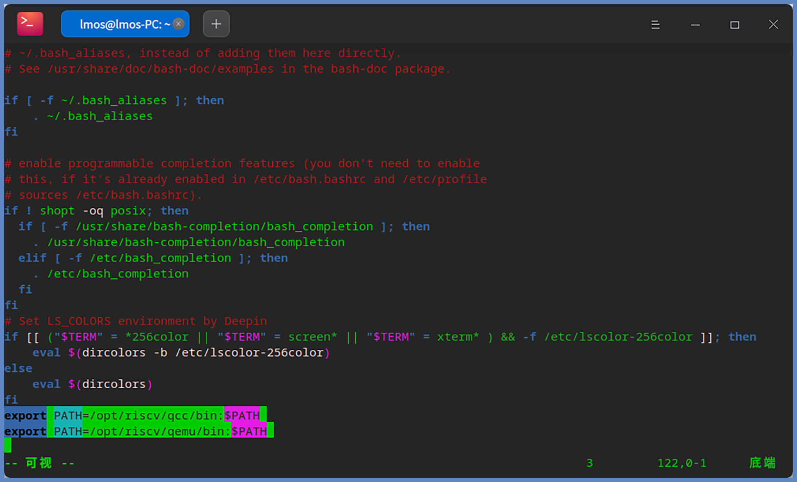
随后，我们按下键盘上ESC键，接着输入”:wq”以便保存并退出Vim。这样操作后，你会发现环境变量并没有生效。
这里还差最后一步，我们在终端中输入如下指令，让环境变量生效：
source ./.bashrc
现在，你在任何目录之下输入QEMU和RISC-V工具链相关的程序命令，它们就都可以正常运行了。
安装VSCode
有了QEMU和RISC-V工具链相关的程序命令，我们虽然可以编译调试和执行RISC-V平台的程序了，但是必须在终端中输入多条指令，才能完成相关的工作。
这对于很多同学来说，肯定觉得很陌生，特别是在图形化盛行的今天，我们更期待能有个轻量级的IDE。
这里我们约定使用VSCode，它安装起来也很简单。在 VSCode官网上下载deb包，下载后双击deb安装，或者切换到刚才下载VSCode目录的终端中，输入如下指令就行了。
sudo apt-get install -f *.deb
安装好后，在你的桌面会出现VSCode图标，双击打开后的页面如下所示：

不过，有了VSCode我们目前只能写代码，还不能编译和调试代码，所以需要给VSCode安装C/C++扩展。我们只需打开VSCode，按下ctrl+shift+x，就能打开VSCode的扩展页面，在搜索框中输入C/C++就可以安装了，如下所示：

至此，我们的VSCode及其需要的扩展组件就安装完成了。
下一步，我们还需要在你的代码目录下建立一个.vscode文件夹，并在文件里写上两个配置文件。这两个配置文件我已经帮你写好了，如下所示。

在.vscode文件夹中有个tasks.json文件，它主要负责完成用RISC-V编译器编译代码的功能，还有用QEMU运行可执行文件的功能。
我们先说说这里的编译工作是怎么完成的。具体就是通过调用make，读取代码目录中的Makefile脚本，在这个脚本中会调用riscv64-unknown-elf-gcc完成编译。等编译成功后，才会调用QEMU来接手，由它运行编译好的可执行程序。代码注释已经写得很清楚了，你可以停下来仔细看看。
不过，tasks.json文件虽然解决了编译与运行的问题，但是它也是被其它文件调用的。被谁调用呢？那就是我们的调试配置文件launch.json文件，它用于启动调试器GDB，只不过这里启动的不是宿主平台上的GDB，而RISC-V工具链中的GDB。其内容如下所示：

当我们写好代码后，按下F5键后，VSCode就会执行launch.json文件的调试操作了。这里调试器和要调试的可执行程序已经制定好了。不过由于preLaunchTask的指定，开始执行调试命令之前，VSCode会首先执行tasks.json文件中的操作，即编译和运行。
运行Hello World
下面我们一起来写下那个著名的程序——Hello World！写好后，在main函数所在的行前打上一个断点，按下F5键，就会看到如下界面。
如果不出意外，哈哈，放心，按我提供给你的步骤，也出不了意外，你一定会看到以上界面。
我们重点来观察红色方框中的信息，可以查看代码变量值、CPU的寄存器值、函数的调用栈、断点信息、源代码以及程序执行后在VSCode内嵌终端中输出的信息。有了这些信息，我们就能清楚地看到一个程序运行过程的状态和结果。
走到这里，我们的定制款QEMU以及VSCode就搭好了，可以去图形化编辑、编译、运行和调试RISC-V平台的可执行程序了。
重点回顾
好了，我们的RISC-V平台的Hello World，也是我们在宿主机上开发的第一个非宿主机的程序，现在已经成功运行，这说明我们之前的工作完成得很完美，今天的课程不知不觉也接近了尾声。
下面来回顾一下，这节课我们都做了些什么。
首先，我们构建了能运行RISC-V可执行程序的QEMU模拟器，这使得我们不必购买RISC-V平台的机器，就能在宿主机上运行RISC-V可执行程序。这不但大大方便了我们的开发工作，而且节约了成本。
然后，我们处理了环境变量，方便我们在任何目录下，都可以随意使用RISC-V工具链中的命令和QEMU相关的命令。
最后，我们安装了VSCode，还在其中安装C/C++扩展并对其进行了相应的配置。以后我们在VSCode图形环境下编写代码、编译代码和调试代码，就能一气呵成了。
这节课的要点我整理了导图，供你参考。
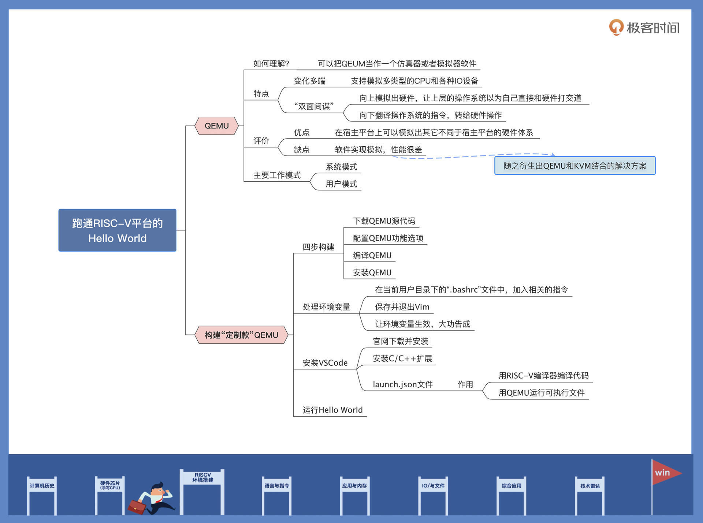
恭喜你坚持到这里，通过两节课的内容，我们拿下了开发环境这一关，这对我们后续课程中的实验相当重要。下一模块讲解和调试RISC-V汇编指令的时候，你会进一步体会到环境搭建好的便利，先好好休息一下，咱们下节课见。
思考题
处理环境变量后为什么要执行source ./.bashrc，才会生效？
欢迎你在留言区提问或者晒晒你的实验记录。如果觉得有收获，也推荐你把这节课分享给你的朋友。
14 走进C语言：高级语言怎样抽象执行逻辑？
你好，我是LMOS。
前面我们设计了迷你CPU，相信你已经对CPU如何执行指令有了一定的了解。
而CPU执行的指令，正是由工程师敲出来的高级编程语言产生的，比如我们熟知的C、C++、Java等。
平时我们做编程的时候，底层CPU如何执行指令已经被封装好了，因此你很少会想到把底层和语言编译联系在一起。但从我自己学习各种编程语言的经历看，从这样一个全新视角重新剖析C语言，有助于加深你对它的理解。
这节课我们首先要了解CPU执行指令的过程，然后再来分析C语言的编译过程，掌握C语言的重要组成，最后我们再重点学习C语言如何对程序以及程序中的指令和数据进行抽象，变成更易于人类理解的语言（代码从这里下载）。
CPU执行指令的过程
通过之前的学习，我们已经知道了CPU执行一条特定指令的详细过程，它们是取指、译码，执行、访存、回写。这是一个非常详细的硬件底层细节，我们现在再迈一个台阶，站高一点，从软件逻辑的角度看看CPU执行多条指令的过程。
这个过程描述起来很简单，就是一个循环。为了让你分清每个步骤，我分点列一下：
- 以PC寄存器中值为内存地址A，读取内存地址A中的数据;-
- CPU把内存地址A中的数据作为指令执行，具体执行过程为取指、译码，执行、访存、写回;-
- 将PC寄存器中的值更新为内存地址A+（一条指令占用的字节数）;-
- 回到第一步。
上述过程就是CPU执行指令的逻辑过程。下面我们动手来写几行代码，调试一下，观察一下内存的内容和CPU寄存器的变化，这样你就更加清楚了。代码如下：
.text
.global main
main: # main函数
add t1,zero,1 # x6 = 1
add t2,zero,2 # x7 = 2
add t0,t1,t2 # x5 = x6 + x7
add a0,zero,zero # x10 = 0 相当于main函数中的return 0
ret
这是一段RV32I指令集编写的汇编代码，现在你无法完全理解这段代码也没关系，能看懂注释就行了。
下面我们一起打开我为你们准备工程代码，调试一下。如何用VSCode调试代码，我在环境那节课讲过了，记不清了可以回顾一下。
这里我们用VSCode打开本课的目录，设置好断点，按下“F5”键，就行了，如下所示。
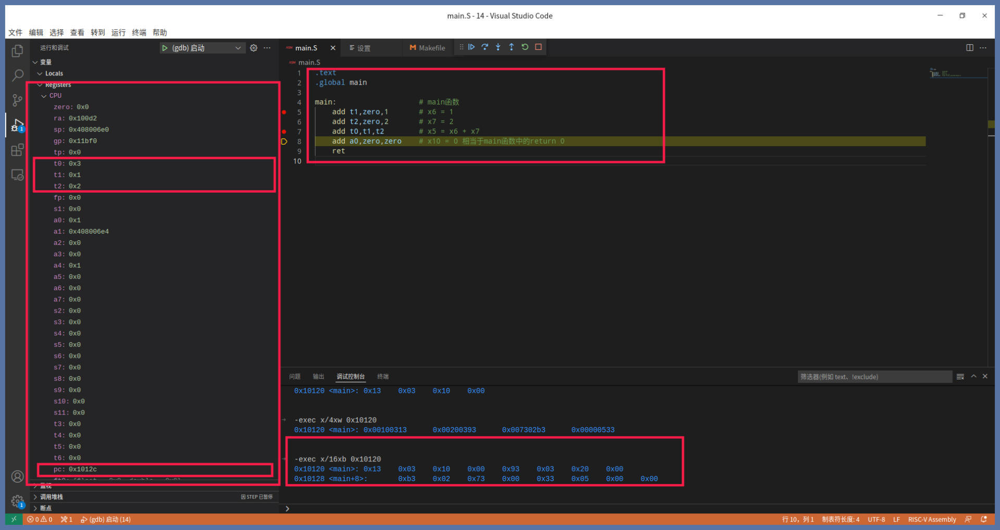
我们看到t0、t1、t2寄存器中的数据和我们预期的一样。PC寄存器从0x10120，一直变化到0x1012c，每执行一条指令PC寄存器的值都要加4，这是因为每条RV32I指令都占用4字节的内存空间。
我们在调试控制台中执行“-exec x/16xb 0x10120”命令，即可显示从0x10120开始的16字节内存数据，刚好4条指令的数据。我还在文稿里画了一幅图，它展示了内存中的情况，如下所示：

对照示意图，我来为你解释一下，大致逻辑是这样的：最开始，由CPU控制单元通过控制总线发出要读取数据的控制信号。；接着通过地址总线发送地址信号（当前情况下地址数据来源PC寄存器（0x10120））；然后通过数据总线传送指令数据(0x00100313)；最后执行单元拿到指令数据开始执行，并增加PC寄存器使之指向下一条指令。重复这个过程，内存中的指令就能一条一条地执行了。
C语言编译过程
了解了CPU执行逻辑过程之后，我们再来看看内存中的指令数据是如何产生的。
其实数据产生的方式有很多，我们可以用手写，也可以用电子编程器。只不过这样的方式，太古老了，也太低效了，更加容易出错。所以人们之后设计汇编语言时，实现了指令符号化，这看似高级了不少，但是依然是低效且难以理解的。
直到后来人们开发出了高级语言，进一步抽象，形成更容易让人们理解的形式。但是因为CPU始终只认识那些二进制数据，就需要把高级语言转化成为二进制数据，这个转化的过程叫编译过程，完成这个转化的工具软件就叫编译器。
比如下面要讲的C语言编译器编译C语言的过程。我们先通过示意图来理解这一过程，建立一个整体印象，如下所示：
现代的C预处理器、C编译器、汇编器、链接器是独立的程序，可以分开独立工作，并不是一个程序完成上图中所有的工作。
因为我们不开发编译器，这里你不需要理解词法、语法是如何分析的，中间代码是怎样优化的。我们要关注的焦点是，从C源代码到二进制机器指令数据的转化过程。
C语言的重要组成
想要弄清楚C如何跟二进制指令数据转化，首先要清楚C语言的重要组成部分。你可能会说，C语言的重要组成当然是C语言代码。这个说法当然没错，但代码只是一个统称。从不同层次抽象，里面的内容是不一样的：从高层次看代码中只有声明和定义，下一层看代码只有函数和变量，变量进一步分解还有不同的类型。
硬背这些分类只会让你晕头转向。接下来我们不妨分析一下，想要让一段C语言代码编译通过，需要哪些重要成分和逻辑结构。
我们在C语言中经常容易混淆声明和定义这两个概念，我们先来看看声明。
声明是给变量、函数、结构体等命名，表明在程序代码中有该变量、函数、结构体，我们来看看下图中的代码：
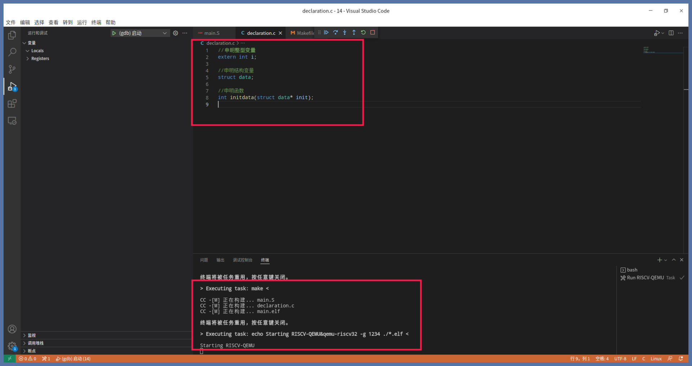
我们在declaration.c程序文件中，声明了一个整型变量，一个结构体变量，一个函数。然后我们编译它，确实能编译成功，这说明在C语言文法中仅仅需要有声明就可以，当然空文件也是可以的。声明不会分配内存空间。
这里需要注意的是，只有声明的代码确实能编译成功，但链接的时候就不一定了，我们这里之所以能链接成功。是因为在其它代码中没有对这些声明进行了引用。
下面我们来看看定义，定义是具体给变量分配内存空间。这个内存空间可以是初始化的，也可以是没有初始化的、给出具体函数的实现。
具体函数可以是空函数，函数中没有语句什么都不做也可以，唯一必需的就是指明结构体成员。结构体也是变量，只不过结构体是多个变量的组合，同样要分配内存空间，可以初始化也可以不做初始化。
我们写代码验证一下对不对，如下图所示：
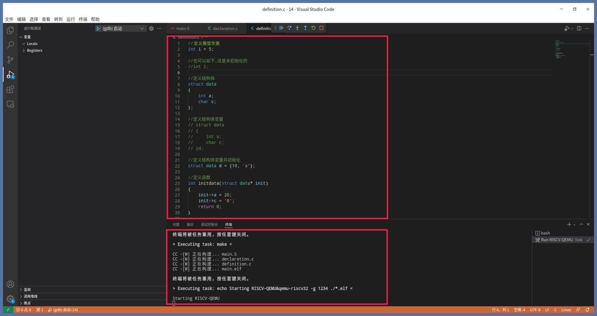
我们还是在definition.c程序文件中，定义了一个整型变量，一个结构体变量，一个函数。我们同样能成功编译它。这说明C语言文法中没有声明，只有定义也可以成功编译的，其实C语言文法的原则是，声明可以出现很多次，定义有且只能出现一次。声明和定义也可以同时出现。
现在我来总结一下，其实编译的其中一个过程，就是用某种编程语言的文法来检查所写语言（代码）是否正确。你可以这么理解，语言的文法就是对这种语言的最高抽象，所以我们可以说 C语言最重要的组成部分就是声明或者定义。
声明或者定义中又包含变量和函数，变量又有指针、数组、结构体，它们又包含各种类型，而函数中包含了各种表达式，各种表达式对变量进行操作。
编译器的语法分析过程，就是这样层层递归推导下去，最终构建出语法树，从而检查语言是否正确无误、是否符合该语言文法的规则定义，都符合编译才能通过。就像你学英文一样，你怎么判断一条英语句子是否正确呢？你会拿主谓宾等等约定俗成的语法去套，如果能套上去，就是正确的。
C语言对程序的抽象
前面我们已经从整体上了解了C语言的重要组成，可以看出，一段程序从语法角度来说就是声明加上定义。
现在我们继续深入了解C语言对程序的抽象，平时我们最多是使用设计好的C语言。而现在我们要站在C语言设计者的角度想一想，一门既能写程序，又更容易让人类理解的语言要怎么设计？其实这门语言的“设计过程”，就是C语言对机器语言的抽象，也就是C语言对程序的抽象。
我特意为你绘制了一幅图，我们从C语言的核心语言元素开始了解。这些元素就像英文里的各种固定词型，知道了这些元素在C语言中发挥的作用，你就找到了理解C语言的钥匙。

我们看到C语言中，包含声明和定义，可以声明变量和函数，由图中绿色箭头指向。也可以定义变量和函数，由图中蓝色箭头指向，注意定义只能出现一次，声明可以出现多次。
我故意安排指针在最前端，是因为从C语言特性讲，指针能指向任一变量和函数，由图中红色箭头指向；从另一个角度看，指针就是内存，能自由寻址读写内存空间，但能否读写内存则要看操作系统给的权限，指针就是C语言中的“上帝之手”。同时，图中黑色线条还表示指针可以有相应的类型，并且能参与运算，这是我把指针放在比函数更高位置的原因。
需要注意的是，各种类型的变量是可以定义在函数以外的，这些定义在函数以外的变量是全局变量，而定义在函数内部的变量叫局部变量。
如果我们要用C语言完成一个实际功能，一定要写一个函数。函数就是C语言中对一段功能代码的抽象。一个函数就是一个执行过程，有输入参数也有返回结果（根据需要可有可无），代码如下所示：
void func()
{
return;
}
上面代码中的函数是空函数，C语言是允许的，当然这样的函数不会完成任何功能。
如果我们要完成点什么功能，就要在函数中写代码语句。代码语句又被抽象成表达式和流程控制。这也是为什么上图中函数下面包含了表达式和流程控制。
接下来，我们写个完成求两数之差、求两数之和的函数，代码如下所示：
int func(int op, int a, int b)
{
if(op < 1) //表达式：op < 1
{
return a - b;//表达式：a - b
}
return a + b;//表达式：a + b
}
上面代码中有三个表达式，注释中已经写明了，含有三种流程控制：if判断分支控制，return返回控制，还有默认的从上至下的代码顺序。你可以把上述代码拿到上图中去套，以证明C语言对代码语句的抽象，你会发现一套一个准。
下面我们继续研究一下表达式。从前面的图里，可以看到C语言表达式包含了变量和运算符。
变量又有各种类型，单个变量也是表达式，但是运算符不能单独存在变成表达式，所以C语言表达式要么是单个变量，要么是变量加运算符一起。根据运算符的类型不同，可以分成运算表达式、逻辑表达式、赋值表达式等。
下面我们使用代码实例来找找感觉，如下所示：
int sumdata = 0;//全局整型变量sumdata
void func()
{
int i = 1;//局部整型变量i
int *p; //局部整型指针变量p
p = &sumdata;//把sumdata变量的地址赋值给p变量，从而指向sumdata变量
while(1)//循环流程控制
{
if(i > 100)
{
break;//跳出循环，流程控制
}
(*p) += i;//相当于sumdata = sumdata + i
i = i + 1;
}
return;
}
上述代码所有的表达式中，涉及了一个全局变量，两个局部变量。其中局部变量中有一个是指针变量，指向全局的变量。包含了更多的流程控制语句，可以明显地看到表达式就是：变量和运算符组合在一起，完成了对变量的操作。而变量代表了数据，最终就能实现对数据的运算。但是变量有各种类型，这些类型只是规范了变量的位宽和大小，下一节我们会有更详细的介绍。
现在我们就可以总结一下，C语言是如何抽象程序的，如下表所示。

这就是C语言对程序的抽象。到这里，今天的课程也到了尾声，你是否像我一样，想起了那个著名的公式：程序=算法+数据结构？
没错，C 语言就是函数 + 变量。函数表示算法操作，变量存放数据，即数据结构，合起来就是程序 = 算法 + 数据结构。
C语法的运算符和流程控制可以实现各种算法，而各种类型的变量组合起来，就能实现各种复杂的数据结构。理解了这些，你就抓住了C语言的本质，也为后续学习打下了良好的基础。
重点回顾
到这里今天的课程就告一段落了，我来总结一下这节课的重点。
首先我们研究了CPU执行指令过程和C语言编译过程。理解了这两个过程，后续的学习就有了良好基础。
接着我们进入到C语言内部，从宏观上理解了定义和声明这两个C语言的重要组成部分。声明只是一种说明性质的东西，不产生机器指令，而定义则是实现，会产生对应的机器指令。
最后我们从C语言的核心语言元素入手，抽丝剥茧，层层解构。C语言由函数构成，函数中又包含多条语句，语句由流程控制和表达式构成，表达式由各种类型的变量和各种运算符构成。这些东西组合在一起，就把机器执行的程序抽象成了人类易于掌握和理解的概念——C语言。文稿里我总结的那张图，你不妨保存下来，作为你学习理解C语言的导航图。

下节课我们继续研究C语言和汇编语言的对应关系，敬请期待。
思考题
为什么C语言中为什么要有流程控制？
期待你在留言区踊跃发言，积极思考有助于你更好地领会课程内容。也推荐你把这节课分享给身边的朋友，说不定就能让他进一步掌握C语言了。
15 C与汇编：揭秘C语言编译器的“搬砖”日常
你好，我是LMOS。
通过上一节课的学习，我们已经清楚了C语言可以把程序抽象成一个函数，这样的函数又抽象成表达式和流程控制，表达式又能进一步抽象成各种类型的变量和各种运算符。并且我们还搞懂了变量就是数据，运算符就是操作，而变量的运算结合起来就能对数据施加操作。这样拆分下来，是不是C语言就没那么神秘了？
今天，让我们就来继续揭秘C语言编译器的日常工作，搞清楚各种类型变量、各种运算符、流程控制以及由它们组成的函数，是如何对应到机器指令的（代码从这里下载）。
此外，我还会带你了解函数间的调用规范，这能让我们在以后写代码时，清楚自己的每行代码都会被编译器转化为什么样的机器指令。
C变量
现在，我们从最基本的C语言的变量开始说起。
C语言是如何把各种类型的变量转换成对应的汇编语言呢？高级语言更容易被工程师理解，而汇编语言这样的低级语言，则更容易被机器解读。这是因为汇编语言里的大部分内容都跟机器语言一一对应，你可以这样理解，汇编语言就是把机器语言符号化。
我举个例子让你加深理解，机器对应的加法指令是一段很长的二进制数据，在汇编语言中，这个指令就对应着“add”这个指令。无论是机器指令还是寄存器，经过汇编语言“翻译”出来都是符号。
汇编器会将汇编源代码生成二进制程序文件。在程序二进制文件里有很多段。其中text段和data段在文件里占用位置空间，text段存放了程序指令的二进制数据，data段放着各种已经初始化的数据。二进制文件里还有个更特殊的bss段，它不占用文件的位置空间，而是在文件头里记录bss段的大小。
一旦text、data段加载到内存中运行，就会占用内存空间，自然也就对应到实际的内存。至于bss段，操作台会根据文件头里记录的大小给它分配内存空间，并初始为0。
有了这些基础，我们就可以写代码来进行验证了，如下所示：
//定义整型变量
int i = 5;
//定义字符变量
char chars = 'a';
//定义结构体
struct data
{
int a;
char c;
};
//定义结构体变量并初始化
struct data d = {10, 'b'};
我们在代码中定义了三个不同类型的变量。在GCC编译器后面加上-save-temps 选项，就能留下GCC编译器各个步骤生成的临时文件，方便我们查看GCC逐步处理的结果。
我已经为你写好了makefile文件，你用VSCode打开项目代码，按下F5就会生成相应的临时文件xxxx.i、xxxx.s、xxxx.bin。
其中，xxxx.i是gcc编译器生成的预处理文件，xxxx.s是gcc编译器生成的汇编文件，xxxx.o是gcc编译器生成的可链接的目标文件，xxxx.bin是去除了ELF文件格式数据的纯二进制文件，这是我用objcopy工具生成的，这个文件可以方便我们后续观察。
下面我们打开项目代码中的variable.s文件，如下所示：
.globl i #导出全局标号i
.section .sdata,"aw" #创建sdata段，属性动态分配可读写
.size i, 4 #占用4字节大小
i: #标号i
.word 5 #定义一个字，初始化为5
.globl chars #导出全局标号chars
.size chars, 1 #占用1字节大小
chars: #标号chars
.byte 97 #定义一个字节，初始化为97，正是‘a’字符的ascii码
.globl d #导出全局标号d
.size d, 8 #占用8字节大小
d: #标号d
.word 10 #定义一个字，初始化为10
.byte 98 #定义一个字节，初始化为98，正是‘b’字符的ascii码
.zero 3 #填充3个字节，数据为0
上面的汇编代码和注释已经写得很清楚了，C语言的变量名变成了汇编语言中的标号，根据每个变量的大小，用多个汇编代码中定义数据的操作符，比如.byte、.word，进行定义初始化。
C语言结构体中的字段则要用多个.byte、.word操作符的组合实现变量定义，汇编器会根据.byte、.word来分配变量的内存空间，标号就是对应的地址。这个变量的内存空间，当程序处于非运行状态时就反映在程序文件中；一旦程序加载到内存中运行，其中的变量就会加载到内存里，对应在相应的内存地址上。
上述代码仍然是可读的文本代码，下面我们看看汇编器生成的二进制文件variable.bin，如下所示。
从这张文件截图里，我们能清楚地看到，二进制文件variable.bin一共有16字节，第5到第7个字节和第13到第15个字节为填充字节，这是为了让地址可以按32位对齐。我们可以看到i变量占用4个字节空间，chars变量占用1个字节空间，d结构体变量占用8个字节，里面有两个成员变量a和c。
截图中反映的情况，相当于从0开始分配地址空间，当然后面链接器会重新分配地址空间的，这里i变量地址为0，chars变量地址为4，d变量地址为8。
现在我们总结一下，C语言转化成汇编语言时发生了什么样的变化：C语言的变量名成了汇编语言的标号，C语言的变量对应的空间变成了汇编语言.byte、.word之类的定义数据操作符。最终，汇编器会根据.byte、.word分配内存空间。这些对应关系，我们通过对二进制文件的分析已经再清楚不过了。
C语言表达式
下面，我们来看看C语言表达式，了解C语言是怎么把各种表达式转换成对应的汇编语言的。
我先说明一下，这里本来应该介绍运算符的，但是C语言的运算符不能独立存在，必须要与变量结合起来形成表达式，所以这里我把运算符归纳到表达式里一起给你讲解，你学起来也更清晰。
我们先来写一个表达式，如下所示：
int add()
{
//定义三个局部整形变量
int a, b, c;
//赋值表达式
a = 125;
b = 100;
//运算表达式
c = a + b;
//返回表达式
return c;
}
代码注释我为你标注了表达式的类型，至于代码的含义任何一个C语言初学者都能明白，就不过多讲解了。
接下来，我们直接看GCC编译器生成的汇编代码。GCC在编译代码时我加了“-O0”，这表示让GCC不做代码优化，如下所示：
add:
addi sp,sp,-32
sw s0,28(sp)
addi s0,sp,32
li a5,125
sw a5,-20(s0)
li a5,100
sw a5,-24(s0)
lw a4,-20(s0)
lw a5,-24(s0)
add a5,a4,a5
sw a5,-28(s0)
lw a5,-28(s0)
mv a0,a5
lw s0,28(sp)
addi sp,sp,32
jr ra
上述的汇编代码你看不懂也没关系，且听我分段给你拆解。它们分别是：在栈中分配变量的内存空间、给变量赋值、进行运算、处理返回值、回收栈中分配的空间、返回。
我们首先看看C语言中的“int a,b,c;”，这是三个局部变量。在C语言中局部变量是放在栈中的，栈在后面的课程里我再介绍。这里就是给a、b、c这三个变量在栈中分配变量的内存空间，对应的代码如下所示：
# int a,b,c;
addi sp,sp,-32 #把栈指针寄存器减去32，相当于在栈中分配了32字节的空间
sw s0,28(sp) #首先把s0寄存器存放在（sp+28）的内存空间中
addi s0,sp,32 #然后把s0寄存器设为原来sp寄存器的值
上述代码通过减去sp寄存器的值，在栈中分配了内存空间。因为栈是由高地址内存空间向低地址内存空间生长的，所以分配栈内存空间是减去一个值。
接着我们来看看C语言中的“a=125;b=100;”，这两行代码就是给变量赋值，也可以叫做赋值表达式，对应的汇编代码如下所示：
# a=125;b=100;
li a5,125 #125加载到a5寄存器中
sw a5,-20(s0) #把a5寄存器储存到（s0-20）的内存空间中，即栈中
li a5,100 #100加载到a5寄存器中
sw a5,-24(s0) #把a5寄存器储存到（s0-24）的内存空间中，即栈中
现在我们已经看到了“=”赋值运算，被转化为机器的数据传输指令，即储存、加载和寄存器之间的传输指令。从-20、-24这些地址偏移量，我们可以推导出a，b两个整型变量各占4字节大小的空间。
然后，我们来看看C语言里“c = a + b;”这一行代码，它就是运算表达式，同时也赋值表达式，但运算表达式的优先级更高，对应的汇编代码如下所示：
#c=a+b;
lw a4,-20(s0) #把（s0-20）内存空间中的内容加载到a4寄存器中
lw a5,-24(s0) #把（s0-24）内存空间中的内容加载到a5寄存器中
add a5,a4,a5 #a4寄存器加上a5寄存器的结果送给a5寄存器
sw a5,-28(s0) #把a5寄存器储存到（s0-28）的内存空间中，即栈中
上述代码中，我们再一次看到，C语言中的加法运算符被转化成了机器的加法指令，运算表达式中的变量放在寄存器中，就成了加法指令的操作数。但是运算结果也被放在寄存器中，而后又被储存到内存中了。
最后，我们来看看C语言中“return c;”这一行代码，也就是返回表达式。对应的汇编代码如下所示：
#return c;
lw a5,-28(s0) #把（s0-28）内存空间中的内容加载到a5寄存器中
mv a0,a5 #a5寄存器送给a0寄存器，作为返回值
lw s0,28(sp) #恢复s0寄存器
addi sp,sp,32 #把栈指针寄存器加上32，相当于在栈中回收了32字节的空间
jr ra #把ra寄存器送给pc寄存器实现返回
从上述代码块可以看到，先把c变量加载到a5寄存器中，又把a5寄存器送给了a0寄存器。
在语言调用标准中，a0寄存器是作为返回值寄存器使用的，return语句是流程控制语句，它被转换为机器对应的跳转指令，即jr指令。jr指令会把操作数送给pc寄存器，这样就能实现程序的跳转。
到这里，C语言表达式是怎么变成汇编语言的，我们就弄明白了。
C语言流程控制
如果只存在表达式，代码只能从上到下顺序执行，很多算法都无法实现，毕竟顺序执行就是“一条道走到黑”，这显然还不够。如果我们要控制代码的执行顺序，就需要流程控制。
通过流程控制，C语言就能把程序的分支、循环结构转换成汇编语言。下面我们以C语言中最常用的for循环为例来理解流程控制。for循环这个例子很有代表性，因为它包括了循环和分支，代码如下所示。
void flowcontrol()
{
//定义了整型变量i
int i;
for(i = 0; i < 5; i++)
{
;//什么都不做
}
return;
}
可以看到上述代码中，for关键字后面的括号中有三个表达式。
开始第一步先执行的是第一个表达式：i = 0; 接着第二步，执行第二个表达式。如果表达式的运算结果为false，就跳出for循环；然后到了第三步，执行大括号“{}”中的语句，这里是空语句，什么都不做；最后的第四步执行第三个表达式：i++，再回到第二步开始下一次循环。
下面我们看看这四步对应的汇编程序，如下所示：
flowcontrol:
addi sp,sp,-32
sw s0,28(sp)
addi s0,sp,32 # int i 定义i变量
sw zero,-20(s0) # i = 0 第一步 第一个表达式
j .L2 # 无条件跳转到.L2标号处
.L3:
lw a5,-20(s0) # 加载i变量
addi a5,a5,1 # i++ 第四步 第三个表达式
sw a5,-20(s0) # 保存i变量
.L2:
lw a4,-20(s0) # 加载i变量
li a5,4 # 加载常量4
ble a4,a5,.L3 # i < 5 第二步 第二个表达式 如果i <= 4就跳转.L3标号，否则就执行后续指令，跳出循环
lw s0,28(sp) # 恢复s0寄存器
addi sp,sp,32 # 回收栈空间
jr ra # 返回
有了前面的基础，上面这段代码应该很容易理解。
你可能有点疑惑，为什么代码的注释中没有看到第三步的内容？这是因为我们写了空语句，编译器没有生成相应的指令。一般CPU会提供多种形式的跳转指令，来实现程序的流程控制，后面课程里我们在专门研究和调试跳转指令，这里你先有个印象就行。
你不妨试着想象一下，图灵机那个读头在纸带上来回移动的情景。上面的代码中j，jr都是无条件的跳转指令，ble是带比较的条件分支指令，比较的结果为真，则跳转到相应的地址上继续执行；否则就会执行后面的下一条指令。
现在已经很清楚了，C语言正是用了这些跳转、条件分支指令，才实现了如if、for、while、goto、return等程序流程控制逻辑。
C语言函数
我们再来看看C语言函数，了解一下C语言是怎么把函数转换成汇编语言的。
通过前一节课的学习，我们知道了函数是C语言中非常重要的组成部分。我们要用C语言完成一个实际的功能，就需要至少写一个函数，可见函数就是C语言中对一段功能代码的抽象。一个函数就是一个执行过程，有输入参数也有返回结果（根据需要可有可无），可以调用其它函数，也被其它函数调用。
让我们去写函数验证一下，如下所示：
//定义funcB
void funcB()
{
return;
}
//定义funcA
void funcA()
{
//调用funcB
funcB();
return;
}
上述代码中定义了funcA、funcB两个函数，函数funcA调用了函数funcB，而函数funcB是个空函数，什么也不做。
下面我们直接看它们的汇编代码，如下所示：
funcB:
addi sp,sp,-16
sw s0,12(sp) #储存s0寄存器到栈中
addi s0,sp,16
nop
lw s0,12(sp) #从栈中加载s0寄存器
addi sp,sp,16
jr ra #函数返回
funcA:
addi sp,sp,-16
sw ra,12(sp)
sw s0,8(sp) #储存ra，s0寄存器到栈中
addi s0,sp,16
call funcB #调用funcB函数
nop
lw ra,12(sp) #从栈中加载ra，s0寄存器
lw s0,8(sp)
addi sp,sp,16
jr ra #函数返回
从上面的汇编代码可以看出，函数就是从一个标号开始到返回指令的一段汇编程序，并且C语言中的函数名就是标号，对应到汇编程序中就是地址。
即使是什么也不做的空函数，C语言编译器也会把它翻译成相应的指令，分配栈空间，保存或者恢复相应的寄存器，回收栈空间，这相当于一个标准的代码模板。
其中的call其实完成了两个动作：一是把call下一条指令的地址保存到ra寄存器中；二是把后面标号地址赋值给pc寄存器，实现程序的跳转。由于被跳转的程序段最后会执行jr ra，即把ra寄存器赋值给pc寄存器，然后再跳转到call指令的下一条指令开始执行，这样就能实现函数的返回。
总结一下，C语言编译器把函数名转换成了标号，也就是汇编程序里的某个地址，并且把函数的功能翻译成各种指令。
这样我们写下一个函数，经过C语言编译器加工，就变成了CPU能够“听懂”的各种运算指令、流程控制指令。之后，CPU就能定位到相应的汇编代码段，在这些代码段之间跳来跳去，实现函数之间的调用。
C语言调用规范
现在我们来探讨另一个问题，就是一个函数调用另一个函数的情况，而且这两个函数不是同一种语言所写。
比如说，在汇编语言中调用C语言，或者反过来在C语言里调用汇编语言。这些情况要怎么办呢？这时候就需要有一种调用约定或者规范。
这个规范有什么用呢？前面的课程我们说过，CPU中的一些寄存器有特定作用的，自然不能在函数中随便使用。即使用到了也要先在栈里保存起来，然后再恢复。
这就引发了三个问题：一是需要规定好寄存器的用途；二是明确哪些寄存器需要保存和恢复；第三则是规定函数如何传递参数和返回值，比如用哪些寄存器传递参数和返回值。关于CPU寄存器的规定，你可以回顾一下[第二节课]。
首先我们看一下，C语言下的数据类型在RISC-V平台下所占据内存的大小，这也是调用规范的一部分，如下表：
下面我们结合实例来理解。我们先来写一段汇编代码和C代码，用汇编代码调用C函数，它们属于不同的文件，这些文件我已经在工程里给你准备好了。
首先，汇编代码如下：
.text //表明下列代码放在text段中
.globl main //导出main符号，链接器必须要找的到main符号
main:
addi sp,sp,-16
sw s0,12(sp) //保存s0寄存器
addi s0,sp,16
call C_function //调用C语言编写的C_function函数
li a0,0 //设置main函数的返回值为0
lw s0,12(sp) //恢复s0寄存器
addi sp,sp,16
jr ra //返回
上述代码放在了main_asm.S文件中，这些代码我都替你手动写好了，你需要从main开始，代码的作用你可以参考一下注释说明。
这段代码主要处理了栈空间，保存了s0寄存器，然后调用了C语言编写的C_function函数，该函数我放在了main_c.c文件中，如下所示：
#include "stdio.h"
void C_function()
{
printf("This is C_function!\n");
return;
}
我们用VSCode打开工程文件夹，按下“F5”键，就会出现后面图里显示的结果。-
我们看到代码运行了，打印出了This is C_function!，而且没有出现任何错误，这说明我们通过汇编代码调用C函数成功了。你可以想一想，这个过程还有什么疏漏么？
以上代码的功能很简单，很多寄存器没有用到，所以并没有保护和恢复相应的寄存器。在复杂的情况下，调用者函数应该保存和恢复临时寄存器：t0~t6（整数寄存器），ft0~ft11（浮点寄存器）。被调用者函数应该保存和恢复的寄存器：s0~s11（整数寄存器），fs0~fs11（浮点寄存器）。
现在只剩最后一个问题了，C语言函数有参数和返回值。如果没有相应规范，一个C语言函数就不知道如何给另一个C语言函数传递参数，或者接收它的返回值。
我们同样用代码来验证一下，如下所示：
int addtest(int a, int b, int c,int d, int e, int f, int g, int h, int i)
{
return a + b + c + d+ e + f + g + h + i;
}
void C_function()
{
int s = 0;
s = addtest(1,2,3,4,5,6,7,8,9);
printf("This is C_function! s = %d\n", s);
return;
}
这段代码很简单，为了验证参数的传递，我们给addtest函数定义了9个参数，在C_function函数中调用它，并打印出它的返回值。
我们直接看看它生成的汇编代码，如下所示：
addtest:
addi sp,sp,-48
sw s0,44(sp)
addi s0,sp,48 #让s0变成原sp的值
#依次将a0~a7，8个寄存器放入栈中
sw a0,-20(s0)
sw a1,-24(s0)
sw a2,-28(s0)
sw a3,-32(s0)
sw a4,-36(s0)
sw a5,-40(s0)
sw a6,-44(s0)
sw a7,-48(s0)
#从栈中加载8个整型数据相加
lw a4,-20(s0)
lw a5,-24(s0)
add a4,a4,a5
lw a5,-28(s0)
add a4,a4,a5
lw a5,-32(s0)
add a4,a4,a5
lw a5,-36(s0)
add a4,a4,a5
lw a5,-40(s0)
add a4,a4,a5
lw a5,-44(s0)
add a4,a4,a5
lw a5,-48(s0)
add a4,a4,a5
#从栈中加载第9个参数的数据，参考第4行代码
lw a5,0(s0)
add a5,a4,a5
#把累加的结果放入a0寄存器，作为返回值
mv a0,a5
lw s0,44(sp)
addi sp,sp,48 #恢复栈空间
jr ra #返回
C_function:
addi sp,sp,-48
sw ra,44(sp)
sw s0,40(sp)
addi s0,sp,48
sw zero,-20(s0)
li a5,9
sw a5,0(sp) #将9保存到栈顶空间中
li a7,8
li a6,7
li a5,6
li a4,5
li a3,4
li a2,3
li a1,2
li a0,1 #将1~8，加载到a0~a7，8个寄存器中，作为addtest函数的前8个参数
call addtest #调用addtest函数
sw a0,-20(s0) #addtest函数返回值保存到s变量中
lw a1,-20(s0) #将s变量作为printf函数的第二个参数
lui a5,%hi(.LC0)
addi a0,a5,%lo(.LC0)
call printf
nop
lw ra,44(sp)
lw s0,40(sp)
addi sp,sp,48 #恢复栈空间
jr ra #返回
根据上面的代码，我们来总结一下，C语言函数用a0~a7这个8个寄存器，传递了一个函数的前8个参数。注意如果是浮点类型的参数，则使用对应的浮点寄存器fa0~fa7，从第9个参数开始依次存放在栈中,而函数的返回值通常放在a0寄存器中。
到这里，C语言调用规范我们就搞清楚了。
重点回顾
这节课，我们一起研究了C语言编译器的“搬砖日常”，讨论了C语言跟汇编语言的对应关系。现在我们来回顾一下这节课的重点。
C语言变量经过编译器的加工，其变量名变成了汇编语言中的标号，也就是地址。变量空间由汇编语言中.byte、.word等操作符分配空间，有的空间存在于二进制文件中，有的空间需要OS加载程序之后再进行分配。
接着是C语言表达式，C语言表达式由C语言变量和C语言运算符组成，C语言运算符被转换成了对应的CPU运算指令。变量由内存加载到寄存器，变成了指令的操作数，一起完成了运算功能。
之后我们借助for循环这个例子，发现C语言函数会被编译器“翻译”成一段带有标号的汇编代码，里面包含了流程控制指令（比如跳转指令）和各种运算指令。这些指令能修改PC寄存器，使之能跳转到相应的地址上运行，实现流程控制。
最后我们讨论了C语言的调用规范。“没有规矩不成方圆”，调用规范解决了函数之间的调用约束，比如哪些寄存器由调用者根据需要保存和恢复，哪些寄存器由被调用者根据需要保存和恢复，函数之间如何传递参数，又如何接收函数的返回值等等的问题。
为了奖励你看到这里，我还准备了一张知识导图，供你复习回顾要点。

下节课起，我们将会开始汇编指令的深入学习，敬请期待。
思考题
请问C语言函数如何传递结构体类型的参数呢？
欢迎你在留言区跟我交流互动，积极参与思考有助于你更深入地学习。如果觉得这节课还不错，别忘了分享给身边的同事。
16 RISC-V指令精讲（一）：算术指令实现与调试
你好，我是LMOS。
通过前面的学习，我们已经了解了在C语言编译器的“视角”下，C语言的各种表达式是如何转换成各种机器汇编指令的。从这节课开始，我会带你进一步深入学习各种汇编指令的细节。
只要你耐心跟我学完这节课，对RISC-V的各种指令，你就能了如指掌了。这里我们将从RV32I的算术指令开始，先学习加减指令（add、sub），接着了解一下数值比较指令（slt）。这些指令都有两个版本，一个是立即数版本，一个是寄存器的版本。话不多说，我们开始吧。
课程配套代码从这里下载。
加减指令
上小学时我们都学过四则运算，最基础的是加减法，即一个数加上或者减去一个数，对应到CPU中就是一条加法指令和一条减法指令。
一个CPU要执行基本的数据处理计算，加减指令是少不了的，否则基础的数学计算和内存寻址操作都完成不了，用这样的CPU做出来的计算机将毫无用处。
不过想让CPU实现加减法，我们需要用到它能“理解”的语言格式，这样才能顺畅交流。所以，在研究指令之前，我们先来看看RISC-V指令的格式。
RISC-V指令的格式
RISC-V机器指令是一种三操作数指令，其对应的汇编语句格式如下：
指令助记符 目标寄存器，源操作数1，源操作数2
例如“add a0，a1，a2”，其中add就是指令助记符，表示各种指令，add是加法指令；a0是目标寄存器，目标寄存器可以是任何通用寄存器；a1，a2是源操作数1与源操作数2，源操作数1可以是任何通用寄存器，源操作数2可以是任何通用寄存器和立即数。立即数就是写指令中的常数，比如0、1、100、1024等。
立即数加减法如何实现
我们先来看看加法指令，加法指令有两种形式。一种形式是一个寄存器和一个立即数相加，结果写入目标寄存器，我们称之为立即数加法指令。另一种形式是一个寄存器和另一个寄存器相加，结果写入目标寄存器，我们称之为寄存器加法指令。
我们先来看看立即数加法指令，形式如下：
addi rd，rs1，imm
#addi 立即数加法指令
#rd 目标寄存器
#rs1 源寄存器1
#imm 立即数
上述代码rd、rs1可以是任何通用寄存器。 imm立即数可以是-2048~2047，其完成的操作是将rs1寄存器里的值加上立即数，计算得到的数值会写到rd寄存器当中，也就是rd = rs1 + imm。
写代码验证之前，我们需要先明确代码应该写在哪里。而一个程序编译成二进制之后，运行的时候都是从 main 函数开始执行的。
所以，我们先构建一个main.c文件，在里面用C语言写上main函数，想让链接器工作这一步必不可少。接着，我们写一个汇编文件addi.S，并在里面用汇编写上addi_ins函数。
addi_ins函数的代码如下所示：
addi_ins:
addi a0，a0，5 #a0 = a0+5，a0是参数，又是返回值，这样计算结果就返回了
jr ra #函数返回
上节课我们提到过，C函数的函数名对应到汇编语言中就是标号，这里加上一条“jr ra”返回指令，就构成了一个C语言中的函数。
这里a0寄存器里的数值即是C语言函数里的第一个参数，也是返回值。所以这个汇编函数完成的功能，就是把传递进来的参数加上5，再把这个结果作为返回值返回。
下面我们在C语言的main函数中调用addi_ins，然后打印一下结果，如下所示：
#include "stdio.h"
int addi_ins(int x); //声明一下汇编语言中的函数：addi_ins
int main()
{
int result = 0;
result = addi_ins(4); //result = 9 = 4 + 5
printf("This result is:%d\n", result);
return 0;
}
你可以用VSCode打开工程目录，按下“F5”键调试一下，输出的结果为9，因为4+5肯定等于9。效果如下所示：

上图中是程序刚刚执行完addi a0，a0，5指令之后，执行jr ra指令之前的状态。可以看到a0寄存器中的值已经变成了9，这说明运算的结果是正确的。
addi_ins函数返回后，输出的结果如下图所示：
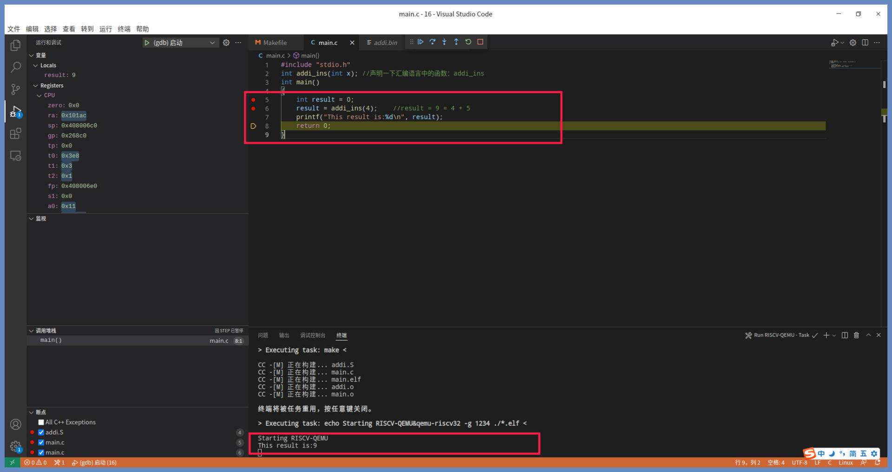
上图的结果已经证明了，addi指令完成的功能和执行的结果符合我们的预期。
我们趁热打铁，在addi.S文件中再写一个函数，也就是addi_ins2函数，代码如下所示：
.globl addi_ins2
addi_ins2:
addi a0，a0，-2048 #a0 = a0-2048，a0是参数，又是返回值，这样计算结果就返回了
jr ra #函数返回
addi_ins2函数的指令和addi_ins函数一样，只不过立即数变成了负数。我们很清楚所谓减法就是加上一个负数，所以通过addi_ins2函数就实现了立即数减法指令。
同样地，我们在main函数中调用它，代码如下所示：
#include "stdio.h"
int addi_ins(int x); //声明一下汇编语言中的函数：addi_ins
int addi_ins2(int x); //声明一下汇编语言中的函数：addi_ins2
int main()
{
int result = 0;
result = addi_ins(4); //result = 9 = 4 + 5
printf("This result is:%d\n", result);
result = addi_ins2(2048); //result = 0 = 2048 - 2048
printf("This result is:%d\n", result);
return 0;
}
接着我们再按下“F5”键调试一下，第二个printf输出的结果为0，因为2048-2048 肯定等于0。如下所示：

和之前一样，上图中是刚刚执行完addi a0，a0，-2048指令之后，执行jr ra指令之前的状态。这时a0寄存器中的值已经变成了0，这说明运算的结果正确。
addi_ins2函数返回后，输出的结果如下图所示：
上图中已经证明了结果符合我们的预期，用addi指令完成了立即数的减法计算。这也是RISC-V指令集中没有立即数据减法指令的原因。为了保证这一特性，所有的立即数必须总是进行符号扩展，这样就可以用立即数表示负数，所以我们并不需要一个立即数版本的减法指令。
最后，为了进一步搞清楚这条指令的机器码数据，我们一起看看addi_ins函数和addi_ins2函数的二进制数据什么样。
让我们打开工程目录下的addi.bin文件，如下所示：

以上是四条指令数据，其中两个0x00008067数据为两个函数的返回指令，即：jr ra，0x00550513，它对应的汇编语句addi a0，a0，5，0x80050513，对应汇编语句addi a0，a0，-2048。
第五节课我们总体了解过RISC-V的指令格式，这里我们一起来详细拆分一下addi指令的各位段的数据，看看它是如何编码的。
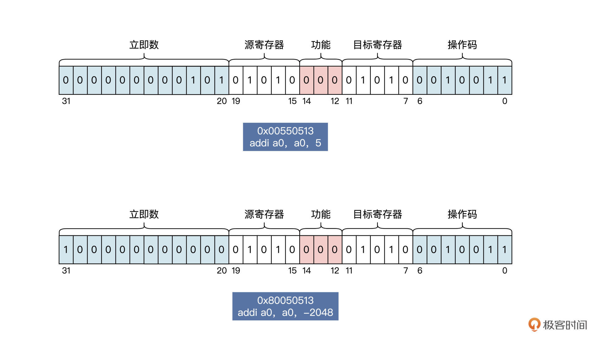
对照上图，我们可以看到一条指令数据为32位，其中操作码占7位，目标寄存器和或者源寄存器各占5位。通过5位二进制数，正好可以编码32个通用寄存器。上图中寄存器编码对应10，正好是x10，也即a0寄存器，立即数占12位。由于RISC-V指令总是按有符号数编码，所以立即数只能表示-2048~2047的范围。
寄存器版本的加减法如何实现
立即数的加减法已经搞定了，下面我们来看看寄存器版本的加减法如何实现。
寄存器版本的加法指令的形式如下：
add rd，rs1，rs2
#add 加法指令
#rd 目标寄存器
#rs1 源寄存器1
#rs2 源寄存器2
类似立即数加法指令，寄存器版本的加法指令也是两个源寄存器相加，结果放在目标寄存器中，代码中rd、rs1、rs2可以是任何通用寄存器，计算操作也和前面addi指令一样。
还是通过写代码来做个验证，我们写一个addsub.S文件，并在其中用汇编写上add_ins函数 ，如下所示：
add_ins:
add a0，a0，a1 #a0 = a0+a1，a0、a1是C语言调用者传递的参数，a0是返回值，这样计算结果就返回了
jr ra #函数返回
a0，a1是C语言函数调用的第一、二个参数，如果你想不明白，可以回顾一下之前我们讲的函数调用规范。
这里我们用VSCode打开工程目录，按下“F5”键调试一下，输出的结果为2，因为1+1的结果肯定等于2。
上图展示的是执行完add a0，a0，a1指令之后，执行jr ra指令之前的状态。这时a0寄存器中的值确实已经变成了2，这说明运算的结果正确。
当add_ins函数返回后，输出的结果如下图所示：

这个结果证明了add指令执行的结果符合我们的预期。
好，我们加点速，一鼓作气把减法指令也拿下。在addsub.S文件中再写一个函数，也就是sub_ins函数，代码如下：
sub_ins:
sub a0，a0，a1 #a0 = a0-a1，a0、a1是C语言调用者传递的参数，a0是返回值，这样计算结果就返回了
jr ra #函数返回
这段代码就是减法指令，和加法指令的模式一样，除了助记符是sub，实现的操作是a0 = a0 - a1。sub指令后的目标寄存器、源寄存器可以是任何通用寄存器。- 我们按下“F5”键调试一下，其结果应为1，如下所示：

上图中依然是执行完sub a0，a0，a1指令之后，执行jr ra指令之前的状态。这时a0寄存器中的值确实已经变成1了，证明运算结果没问题。
当sub_ins函数返回后，就会输出下图所示的结果。

经过调试，sub指令执行的结果也符合我们的预期了。
下面我们继续研究机器编码，来看看add_ins函数和sub_ins函数的二进制数据。打开工程目录下的addsub.bin文件，如下所示：

以上4个32位数据是四条指令，其中两个0x00008067数据是两个函数的返回指令即：jr ra，0x00b50533为add a0，a0，a1，0x40b50533为sub a0，a0，a1。
我们还是来拆分一下add、sub指令的各位段的数据，看看它们是如何编码的。如下所示：

从图里可以看到，操作码占了7位，目标寄存器和两个源寄存器它们各占5位。目标寄存器和源寄存器编码对应10，正好是x10，即a0寄存器。而源寄存器2编码对应11，正好是x11也即是a1。其它位段为功能编码，add、sub指令就是用高段的功能码区分的。
比较指令
加减指令我们就讲到这里，不过光能计算加减还不够，接下来我们看看比较指令。现在大多数处理器都会包含数据比较指令，用于判断数值大小，以便做进一步的处理。
有无符号立即数版本：slti、sltiu指令
RISC-V指令集中有四条比较指令，这四条又分为有无符号立即数版本和有无符号寄存器版本，分别是slti、sltiu、slt、sltu。
slti、sltiu指令的形式如下所示：
slti rd，rs1，imm
#slti 有符号立即数比较指令
#rd 目标寄存器
#rs1 源寄存器1（有符号数据）
#imm 有符号立即数(-2048~2047)
sltiu rd，rs1，imm
#sltiu 无符号立即数比较指令
#rd 目标寄存器
#rs1 源寄存器1（无符号数据）
#imm 有符号立即数(-2048~2047)
上述代码中rd、rs1可以是任何通用寄存器。有、无符号是指rs1寄存器中的数据，有符号立即数imm的数值范围是-2048~2047。
slti、sltiu完成的操作用伪代码描述如下：
if(rs1 < imm)
rd = 1;
else
rd = 0;
下一步又到了写代码验证的环节。我们建立一个slti.S文件，在其中用汇编写上slti_ins、sltiu_ins函数，然后写下这两个函数：
.global slti_ins
slti_ins:
slti a0, a0, -2048 #if(a0<-2048) a0=1 else a0=0，a0是参数，又是返回值，这样计算结果就返回了
jr ra #函数返回
.global sltiu_ins
sltiu_ins:
sltiu a0，a0，2047 #if(a0<2047) a0=1 else a0=0，a0是参数，又是返回值，这样计算结果就返回了
jr ra #函数返回
slti_ins与sltiu_ins函数我已经帮你写好了，分别执行了slti和sltiu指令，都是拿a0寄存器和一个立即数比较，如果a0小于立即数就把1写入a0寄存器。
下面我们在C语言的main函数中调用它，然后打印一下结果，用VSCode打开工程，按“F5”调试后的效果如图：
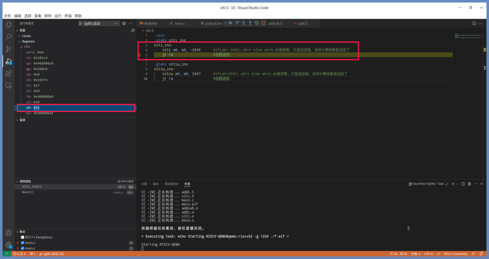
上图中是执行完slti a0，a0，-2048指令之后，执行jr ra指令之前的状态。如果看到a0寄存器中的值确实已经变成1了，就说明运算的结果是正确的。
当slti_ins函数返回后，输出的结果如下所示：

因为-2049比-2048确实要小，所以返回1，这证明结果是正确的。
sltiu_ins函数的调试方法也差不多。你不妨对照后面的图看一下。

上图中依然是执行完sltiu a0，a0，2047指令之后，执行jr ra指令之前的状态，我们已经看到a0寄存器中的值变成0了，这说明a0的数据不小于2047。
当sltiu_ins函数返回后，输出的结果如下：
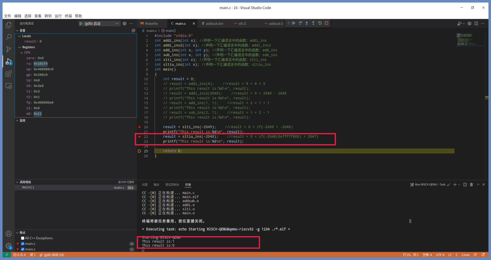
图里输出的结果0，这和执行完sltiu指令后a0的值是一致的。看到这可能你就有疑问了，传递的参数是-2048，它应该远小于2047，为什么输出结果不是1呢？
别忘了sltiu指令的属性，它是无符号的比较指令，也就是说sltiu指令看到的数据是无符号的，
而-2048数据编码为0xfffff800，如果把这个数据当成无符号数，则远大于2047，所以返回0。
有无符号寄存器版本：slt、sltu指令
接着我们再来看看slt、sltu指令，这是寄存器与寄存器的有无符号比较指令，它们的形式如下所示。
slt rd，rs1，rs2
#slt 有符号比较指令
#rd 目标寄存器
#rs1 源寄存器1（有符号数据）
#rs2 源寄存器2（有符号数据）
sltu rd，rs1，rs2
#sltu 无符号比较指令
#rd 目标寄存器
#rs1 源寄存器1（无符号数据）
#rs2 源寄存器2（无符号数据）
上述代码中rd、rs1、rs2可以是任何通用寄存器。有、无符号同样代表rs1、rs2寄存器中的数据。
我们先看看slt、sltu这两个指令完成的操作，用伪代码怎么描述：
if(rs1 < rs2)
rd = 1;
else
rd = 0;
我们依然在slti.S文件中用汇编写上slt_ins、sltu_ins函数 ，如下所示：
.globl slt_ins
slt_ins:
slt a0, a0, a1 #if(a0<a1) a0=1 else a0=0，a0，a1是参数，a0是返回值，这样计算结果就返回了
jr ra #函数返回
.globl sltu_ins
sltu_ins:
sltu a0, a0, a1 #if(a0<a1) a0=1 else a0=0，a0，a1是参数，a0是返回值，这样计算结果就返回了
jr ra #函数返回
这里已经写好了slt_ins与sltu_ins函数，分别是执行slt和sltu指令，都是拿a0寄存器和a1寄存器比较，如果a0小于a1寄存器，就把1写入到a0寄存器，否则写入0到a0寄存器。
接下来的调试环节你应该很熟悉了。VSCode当中按F5调试的效果如下：

上图中是执行完slt a0，a0，a1指令之后，执行jr ra指令之前的状态。对照截图可以看到，执行指令之后，a0寄存器中的值确实已经变成1了，这说明比较运算的结果是正确的。
当slt_ins函数返回后，输出的结果如下：
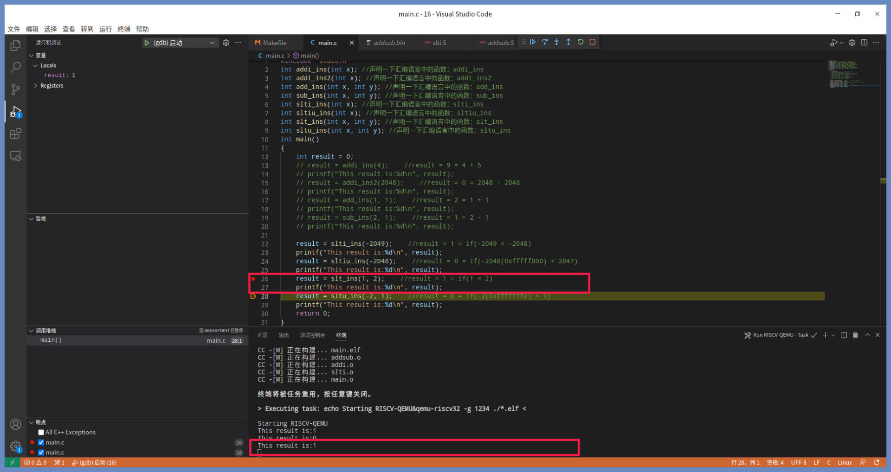
因为1确实小于2，所以结果返回1，通过调试表明运算结果是正确的。
sltu_ins函数的调试我们也如法炮制。

上图是执行完sltu a0，a0，a1指令之后，执行jr ra指令之前的状态。如果我们看到a0寄存器中的值变成0，就说明a0的数据不小于a1。
当sltu_ins函数返回后，输出的结果如下：

是不是有点困惑？结果是0，可是传递的参数是-2和1，-2应该小于1啊？出现这个结果，是因为sltu指令所看到a0中的数据（-2），是无符号的。而-2的数据编码为0xfffffffe，由于它是无符号数，所以远大于1，返回0才是正确的。
调试工作告一段落，接下来我们再研究一下slti_ins、sltiu_ins、slt_ins、sltu_ins函数的二进制数据。打开工程目录下slti.bin文件，如下所示：

以上8个32位数据是八条指令，其中四个0x00008067数据是四个函数的返回指令即：jr ra，0x80052513为slti a0，a0，-2048，0x7ff53513为sltiu a0，a0，2047，0x00b52533为slt a0，a0，a1，0x00b53533为sltu a0，a0，a1。
同样地，我们也来拆分一下slti、sltiu、slt、sltu指令的各位段的数据，看看它们是如何编码的。

从上图可以发现，立即数版本和寄存器版本的指令格式不一样，操作码也不一样，而它们之间的有无符号是靠功能位段来区分的，而立即数位段和源寄存器与目标寄存器位段，和之前的指令是相同的。
到这里，四条比较指令我们就全部讲完了。建议你自己课后跟着课程练练手，加深印象。
重点回顾
这节课我们一起学习了加减指令和比较指令，让我们一起来回顾一下。
加减指令是CPU里最基本的指令。addi、add、sub这三条指令能对数据和寄存器进行加减运算，可以先把数据装入寄存器中，然后对寄存器与寄存器执行加减操作，也可以寄存器和立即数进行加减操作。
接着我们还学习了比较指令，比较指令能对数据进行比较操作，一共包括四条指令。按照有无符号立即数版本和有无符号寄存器版本划分，分别是slti、sltiu、slt、sltu。这个有无符号是对应操作数中的寄存器的数据，立即数永远是有符号数据。
加减指令主要用于加减法运算，比较指令用于对数据比较，判断数值大小，再结合后面要学的跳转指令就可以实现if-else语句了。
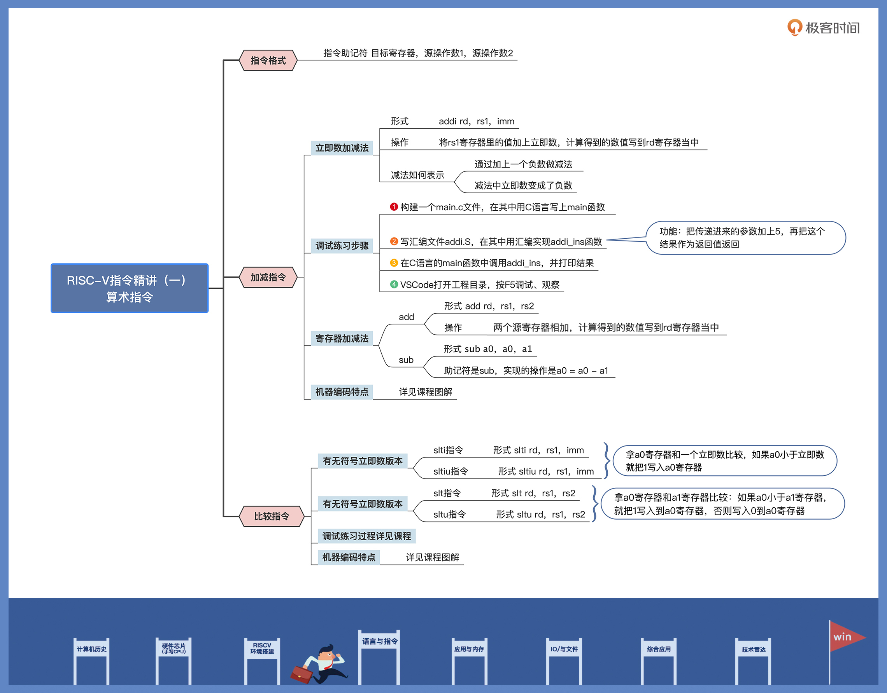
下节课我们继续学习逻辑指令和移位指令，敬请期待。
思考题
请写出机器码0x00000033对应的指令。
欢迎把你的思考和想法分享在留言区。如果这节课对你有帮助，别忘了分享给身边的朋友，邀他一起学习。
17 RISC-V指令精讲（二）：算术指令实现与调试
你好，我是LMOS。
上节课，我们学习了算术指令中的加减指令和比较指令。不过一个CPU只能实现这两类指令还不够。如果你学过C语言，应该对“<<、>>、&、|、!”这些运算符并不陌生，这些运算符都需要CPU提供逻辑和移位指令才可以实现。
今天我们就继续学习逻辑指令（and、or、xor）和移位指令 （sll、srl、sra）。代码你可以从这里下载。话不多说，我们开始吧。
逻辑指令
从CPU芯片电路角度来看，其实CPU更擅长执行逻辑操作，如与、或、异或。至于为什么，你可以看看CPU的基础门电路。
RISC-V指令集中包含了三种逻辑指令，这些指令又分为立即数版本和寄存器版本，分别是andi、and、ori、or、xori、xor这六条指令。我们学习这些指令的方法和上节课类似，也涉及到写代码验证调试的部分。
按位与操作：andi、and指令
首先我们来学习一下andi、and指令，它们的形式如下所示：
andi rd，rs1，imm
#andi 立即数按位与指令
#rd 目标寄存器
#rs1 源寄存器1
#imm 立即数
and rd，rs1，rs2
#and 寄存器按位与指令
#rd 目标寄存器
#rs1 源寄存器1
#rs2 源寄存器2
上述代码中rd、rs1、rs2可以是任何通用寄存器，imm是立即数。
andi、and这两个指令完成的操作，我们用伪代码描述如下：
//andi
rd = rs1 & imm
//and
rd = rs1 & rs2
按位与的操作，就是把rs1与imm或者rs1与rs2其中的每个数据位两两相与。两个位都是1，结果为1，否则结果为0。
下面我们在工程目录下建立一个and.S文件，写代码验证一下这两个指令，如下所示：
.globl andi_ins
andi_ins:
andi a0，a0，0xff #a0 = a0&0xff，a0是C语言调用者传递的参数，a0也是返回值，这样计算结果就返回了
jr ra #函数返回
.globl and_ins
and_ins:
and a0，a0，a1 #a0 = a0&a1，a0、a1是C语言调用者传递的参数，a0是返回值，这样计算结果就返回了
jr ra #函数返回
这里我们已经写好了andi_ins与and_ins函数，分别去执行andi和and指令。
andi指令是拿a0寄存器和立即数0xff进行与操作。由于立即数是0xff，所以总是返回a0的低8位数据；and指令则是拿a0和a1寄存器进行与操作，再把结果写入到a0寄存器。
下面我们用VSCode打开工程按下“F5”调试一下，如下所示：

上图中是执行完andi a0，a0，0xff指令之后，执行jr ra指令之前的状态。可以看到，a0寄存器中的值确实已经变成2了，这说明运算的结果是符合预期的。
andi_ins函数返回后，输出的结果如下图所示：
因为2的二进制数据是（0b00000000000000000000000000000010）与上0xff的二进制数据是（0b00000000000000000000000011111111）结果确实是2，所以返回2，结果是正确的。
接下来，我们对and_ins函数进行调试。
上图展示的是执行完and a0，a0，a1指令之后，执行jr ra指令之前的状态。我们看到a0寄存器中的值已经变成了1，这说明运算的结果是正确的。
and_ins函数返回后，输出的结果如下图所示：
上图中因为1的二进制数据是（0b00000000000000000000000000000001）与上1的二进制数据是（0b00000000000000000000000000000001）确实是1，所以返回1，结果完全正确。
按位或操作：ori、or指令
按位与操作说完了，我们接着来学习一下或指令ori、or，它们的形式如下：
ori rd，rs1，imm
#ori 立即数按位或指令
#rd 目标寄存器
#rs1 源寄存器1
#imm 立即数
or rd，rs1，rs2
#or 寄存器按位或指令
#rd 目标寄存器
#rs1 源寄存器1
#rs2 源寄存器2
同样地，上述代码中rd、rs1、rs2可以是任何通用寄存器，imm表示立即数。
我们还是从伪代码的描述入手，看看ori、or完成的操作。
//ori
rd = rs1 | imm
//or
rd = rs1 | rs2
按位或的操作就是把rs1与imm或者rs1与rs2其中的每个数据位两两相或，两个位有一位为1，结果为1，否则结果为0。
我们在and.S文件中写写代码，做个验证，如下所示：
.globl ori_ins
ori_ins:
ori a0，a0，0 #a0 = a0|0，a0是C语言调用者传递的参数，a0也是返回值，这样计算结果就返回了
jr ra #函数返回
.globl or_ins
or_ins:
or a0，a0，a1 #a0 = a0|a1，a0、a1是C语言调用者传递的参数，a0是返回值，这样计算结果就返回了
jr ra #函数返回
上述代码中ori_ins与or_ins函数，分别执行了ori和or指令。
ori指令是拿a0寄存器和立即数0进行或操作，由于立即数是0，所以总是返回a0原本的数据；or指令是拿a0和a1寄存器进行或操作，再把结果写入到a0寄存器。
我们还是到VSCode里，按下“F5”调试一下，如下所示：

上图中是执行完ori a0，a0，0指令之后，执行jr ra指令之前的状态。如果a0寄存器中的值确实已经变成0xf0f0了，就说明运算的结果正确。
ori_ins函数返回后，输出的结果如下图所示：

因为0xf0f0的二进制数据是（0b00000000000000001111000011110000）或上0的二进制数据是（0b00000000000000000000000000000000）按位或操作是“有1为1”，所以返回0xf0f0，结果是正确的。
我们再用同样的方法调试一下or_ins函数，如下图所示：

上图展示的是执行完or a0，a0，a1指令之后，执行jr ra指令之前的状态。如果我们看到a0寄存器中的值确实已经变成0x1111了，就说明运算的结果正确，符合预期。
or_ins函数返回后，输出的结果如下：

上图中or_ins函数第一个参数为0x1000的二进制数据是（0b00000000000000000001000000000000）第二个参数为0x1111的二进制数据是（0b00000000000000000001000100010001）两个参数相或，而按位或操作是“有1为1”，所以返回0x1111，结果是正确的。
按位异或操作：xori、xor指令
最后，我们再说说逻辑指令中的最后两条指令xori、xor，即异或指令的立即数版本和寄存器版本，它们的形式如下所示：
xori rd，rs1，imm
#xori 立即数按位异或指令
#rd 目标寄存器
#rs1 源寄存器1
#imm 立即数
xor rd，rs1，rs2
#xor 寄存器按位异或指令
#rd 目标寄存器
#rs1 源寄存器1
#rs2 源寄存器2
形式上和前面与操作、或操作差不多，就不过多重复了。
xori、xor完成的操作用伪代码描述如下：
//xori
rd = rs1 ^ imm
//xor
rd = rs1 ^ rs2
按位异或的操作是把rs1与imm或者rs1与rs2其中的每个数据位两两相异或，两个位如果不相同，结果为1。如果两个位相同，结果为0。
在and.S文件中写代码验证一下，如下所示。
.globl xori_ins
xori_ins:
xori a0，a0，0 #a0 = a0^0，a0是C语言调用者传递的参数，a0也是返回值，这样计算结果就返回了
jr ra #函数返回
.globl xor_ins
xor_ins:
xor a0，a0，a1 #a0 = a0^a1，a0、a1是C语言调用者传递的参数，a0是返回值，这样计算结果就返回了
jr ra #函数返回
我们已经写好了xori_ins与xor_ins函数，分别是执行xori和xor指令。xori指令是拿a0寄存器和立即数0进行异或操作，由于立即数是0，而且各个数据位相同为0，不同为1，所以同样会返回a0原本的数据 ；而xor指令是拿a0和a1寄存器进行或操作，再把结果写入到a0寄存器。
下面我们按下“F5”调试一下，如下所示：

上图中是执行完xori a0，a0，0指令之后，执行jr ra指令之前的状态，我们已经看到a0寄存器中的值已经变成0xff了，这说明运算的结果正确。
xori_ins函数返回后，输出的结果如下图所示：

结合上面这张截图不难发现，我们传递给xori_ins函数的参数是0xff，因为0xff的二进制数据是（0b00000000000000000000000011111111）异或上0的二进制数据是（0b00000000000000000000000000000000）按位异或操作是“相同为0，不同为1”，所以返回0xff，结果是正确的。
我们再来调试一下xor_ins函数。xor a0，a0，a1指令执行完成之后，执行jr ra指令之前的状态如图所示：

我们看到a0寄存器中的值已经变成0了，这说明运算的结果正确，符合预期。
xor_ins函数返回后，输出的结果如下图所示：
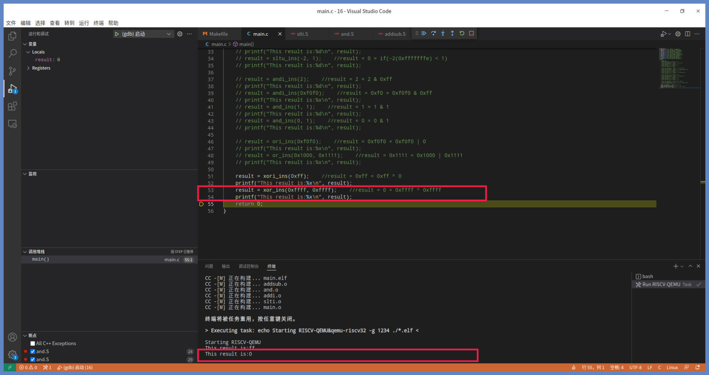
由于我们给xor_ins函数传递了两个相同的参数都是0xffff。因为0xffff的二进制数据是（0b00000000000000001111111111111111）两者异或，按位异或操作是“相同为0，不同为1”，所以返回0，结果是正确的。
下面我们看一下andi、and、ori、or、xori、xor这六条指令的二进制数据。
我们打开工程目录下的and.bin文件，如下所示：
上述图中的12个32位数据是12条指令，其中六个0x00008067数据是六个函数的返回指令。
具体的指令形式，还有对应的汇编语句，我用表格帮你做了整理。

同样地，我带你拆分一下andi、and、ori、or、xori、xor指令的各位段的数据，看看它们是如何编码的。

从上图中可以发现，立即数版本和寄存器版本的and、or、xor指令通过操作码区分，而它们之间的寄存器和立即数版本是靠功能位段来区分，立即数位段和源寄存器与目标寄存器位段和之前的指令是相同的。
到这里六条逻辑指令已经拿下了，咱们继续学习移位指令。
移位指令
移位指令和逻辑操作指令一样，都是CPU电路很容易就能实现的。
RISC-V指令集中的移位指令包括逻辑左移、逻辑右移和算术右移，它们分别有立即数和寄存器版本，所以一共有六条。逻辑右移和算术右移是不同的，等我们后面用到时再专门讲解。
逻辑左移指令：slli、sll指令
我们先看看逻辑左移指令，也就是slli、sll指令，它们的形式如下所示：
slli rd，rs1，imm
#slli 立即数逻辑左移指令
#rd 目标寄存器
#rs1 源寄存器1
#imm 立即数，rs1左移的位数，0~31
sll rd，rs1，rs2
#sll 寄存器逻辑左移指令
#rd 目标寄存器
#rs1 源寄存器1
#rs2 源寄存器2，rs1左移的位数
上述代码中rd、rs1、rs2可以是任何通用寄存器。imm是立即数，其实在官方文档中，这里是shamt，表示rs1 左移 shamt 位。这里我为了和之前的形式保持一致，才继续沿用了imm。

slli、sll它们俩完成的操作，用伪代码描述如下：
//slli
rd = rs1 << imm
//sll
rd = rs1 << rs2
逻辑左移的操作是把rs1中的数据向左移动imm位，或者把rs1中的数据向左移动rs2位，右边多出的空位填 0 并写入 rd 中。
我们用图解来表达这一过程，这样你就能一目了然了。
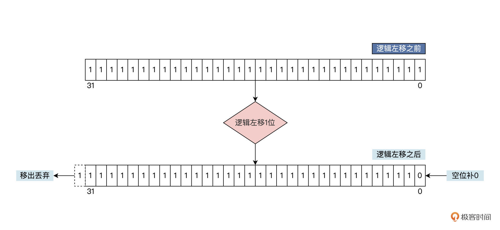
接下来我们在工程目录下，建立一个sll.S文件，写代码验证一下，如下所示：
.globl slli_ins
slli_ins:
slli a0, a0, 4 #a0 = a0<<4，a0是C语言调用者传递的参数，a0也是返回值，这样计算结果就返回了
jr ra #函数返回
.globl sll_ins
sll_ins:
sll a0, a0, a1 #a0 = a0<<a1，a0、a1是C语言调用者传递的参数，a0是返回值，这样计算结果就返回了
jr ra #函数返回
这里已经写好了slli_ins与sll_ins函数，它们会分别执行slli和sll指令。立即数逻辑左移slli指令是把a0中的数据左移4位。而逻辑左移sll指令是把a0中的数据左移，左移多少位要取决于a1中的数据，完成移动后再把结果写入到a0寄存器。
我们还是用VSCode打开工程，按下“F5”调试，如下所示：

上图中是进入slli_ins函数，执行完slli a0，a0，4指令之后，执行jr ra指令之前的状态，我们给slli_ins函数传进来的参数是0xffff。现在对照图示就能看到，a0寄存器中的值确实已经变成0xffff0了，这说明运算结果是正确的。
slli_ins函数返回后，输出的结果如下：

因为0xffff二进制数据是（0b00000000000000001111111111111111），逻辑左移4位后的结果是0xffff0，它的二进制数据是（0b00000000000011111111111111110000），结果正确无误。
下面我们接着对sll_ins函数进行调试，如下所示：

上图中是进入sll_ins函数，执行完sll a0，a0，a1指令之后，执行jr ra指令之前的状态，我们给sll_ins函数传进来的参数是0xeeeeeeee和31（a1寄存器）。如果看到a0寄存器中的值确实已经变成0了，这说明运算结果是正确的。
sll_ins函数返回后，输出的结果如下图所示：

第一个参数0xeeeeeeee的二进制数据是（0b11101110111011101110111011101110），逻辑左移31位后的结果是0，因为它把所有的二进制数据位都移出去了，然后空位补0，所以结果正确无误。
逻辑右移指令：srli、srl
有逻辑左移就有逻辑右移。逻辑右移指令srli、srl，分别对应着立即数和寄存器版本，它们的形式如下：
srli rd，rs1，imm
#srli 立即数逻辑右移指令
#rd 目标寄存器
#rs1 源寄存器1
#imm 立即数，rs1右移的位数，0~31
srl rd，rs1，rs2
#srl 寄存器逻辑右移指令
#rd 目标寄存器
#rs1 源寄存器1
#rs2 源寄存器2，rs1右移的位数
上述代码中rd、rs1、rs2可以是任何通用寄存器。imm是立即数。为了和之前的形式保持一致，我们还是沿用imm，而非官方文档中的shamt。
srli、srl完成的操作，可以用后面的伪代码来描述：
//srli
rd = rs1 >> imm
//srl
rd = rs1 >> rs2
逻辑右移的操作是把rs1中的数据向右移动imm位。或者把rs1中的数据向右移动rs2位，左边多出的空位填 0 并写入 rd 中。
你可以对照我画的图示来理解这一过程。
光看看格式自然不够，我们在sll.S文件中写段代码来验证一下，如下所示：
.globl srli_ins
srli_ins:
srli a0, a0, 8 #a0 = a0>>8,a0是C语言调用者传递的参数，a0也是返回值，这样计算结果就返回了
jr ra #函数返回
.globl srl_ins
srl_ins:
srl a0, a0, a1 #a0 = a0>>a1,a0、a1是C语言调用者传递的参数，a0是返回值，这样计算结果就返回了
jr ra #函数返回
逻辑右移的两个函数srli_ins与srl_ins，我已经帮你写好了。代码中立即数逻辑右移srli指令是把a0中的数据右移8位。逻辑右移srl指令，则是把a0中的数据右移，右移多少位要看a1中数据表示的位数是多少，再把结果写入到a0寄存器。- 两条右移指令做了哪些事儿咱们说完了，老规矩，打开工程按下“F5”就可以调试了，效果如图：
上图中是进入srli_ins函数，执行完srli a0，a0，8指令之后，执行jr ra指令之前的状态，我们给srli_ins函数传进来的参数是0xffff。现在，对照截图可以看到a0寄存器中的值确实已经变成0xff了，这说明运算结果正确。
srli_ins函数返回后，输出的结果如下图所示：
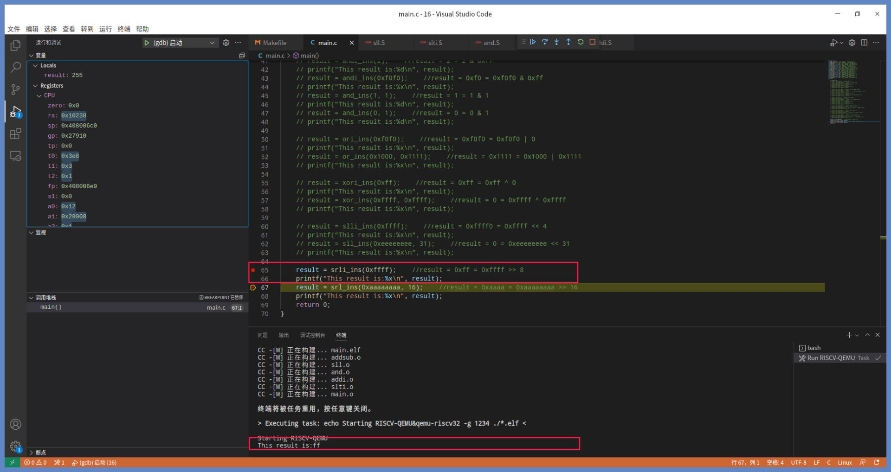
因为调用函数srli_ins的参数0xffff的二进制数据是（0b00000000000000001111111111111111），逻辑右移8位后的结果是0xff，它的二进制数据是（0b00000000000000000000000011111111），结果正确，符合我们的预期。
拿下了srli_ins函数，接下来就是srl_ins函数的调试，如下所示：

上图中是调用进入srl_ins函数，执行完srl a0，a0，a1指令之后，执行jr ra指令之前的状态，给srl_ins函数传进来的参数是0xaaaaaaaa。可以看到，a0寄存器中的值确实已经变成0xaaaa了，所以运算结果也是正确的。
srl_ins函数返回后，输出的结果如下图所示：

给srl_ins函数传进来的第一个参数是0xaaaaaaaa的二进制数据是（0b10101010101010101010101010101010），逻辑右移16位后的结果是0xaaaa，其二进制数据为（0b00000000000000001010101010101010 ），因为它把低16位二进制数据位移出去了，然后高16位的空位补0，所以结果正确无误。
算术右移指令：srai、sra
最后还有两个算术右移指令，它们和逻辑右移的最大区别是，数据在逻辑右移之后左边多出空位用0填充，而数据在算术右移之后左边多出的空位是用数据的符号位填充。如果数据的符号位为1就填充1，如果为0就填充0。
它们的形式和伪代码与逻辑右移是一样的，只不过指令助记符由srli、srl，变成了srai、sra。
下面我们直接在sll.S文件中，写代码进行验证。
.globl srai_ins
srai_ins:
srai a0, a0, 8 #a0 = a0>>8,a0是C语言调用者传递的参数，a0也是返回值，这样计算结果就返回了
jr ra #函数返回
.globl sra_ins
sra_ins:
sra a0, a0, a1 #a0 = a0>>a1,a0、a1是C语言调用者传递的参数，a0是返回值，这样计算结果就返回了
jr ra #函数返回
上述代码中的两个函数srai_ins与sra_ins，可以实现算术右移。先看立即数算术右移srai指令，它把a0中的数据右移了8位。而算术右移srl指令是把a0中的数据右移，右移多少位由a1中的数据表示的位数来决定，之后再把结果写入到a0寄存器。
我们按下“F5”，调试的结果如下：

上图中是进入立即数算术右移函数srai_ins，执行完srai a0，a0，8指令之后，执行jr ra指令之前的状态。对照图里红框的内容可以看到，给srai_ins函数传进来的参数是0x1111。如果a0寄存器中的值确实已经变成0x11了，就代表运算结果正确。
srai_ins函数返回后，输出的结果如下：

因为我们给立即数算术右移函数srai_ins的参数0x1111，其二进制数据是（0b00000000000000000001000100010001），符号位为0，所以算术右移8位后的结果是0x11，它的二进制数据是（0b00000000000000000000000000010001），结果非常正确。
我们接着调试一下sra_ins函数，如下所示：

上图中是进入算术右移函数sra_ins，执行完sra a0，a0，a1指令之后，执行jr ra指令之前的状态。对照图里左侧红框的部分，我们就能知道sra_ins函数传进来的参数是0xaaaaaaaa，你可能判断a0寄存器里输出的结果应该是0x0000aaaa，但调试显示的实际结果却是0xffffaaaa。
出现这个结果，你很奇怪是不是？但这恰恰说明运算结果是正确的。我们先看看sra_ins函数返回后输出的结果是什么，然后再分析原因。

因为我们给算术右移函数sra_ins的参数是0xaaaaaaaa和16，这表明对0xaaaaaaaa算术右移16，0xaaaaaaaa的二进制数据是（0b10101010101010101010101010101010），注意其符号位为1，所以算术右移16位后的结果是0xffffaaaa，它的二进制数据是（0b11111111111111111010101010101010），结果是符合预期的。输出的结果也证实了这一点。
下面我们还是要看一下slli、sll、srli、srl、srai、sra这六条指令的二进制数据，我们打开工程目录下的sll.bin文件。

可以看出，图中的12个32位数据是12条指令，其中六个0x00008067数据是六个函数的返回指令。具体的指令形式，还有对应的汇编语句，你可以参考后面的表格。
我们拆分一下slli、sll、srli、srl、srai、sra指令的各位段的数据，看看它们是在内存中如何编码的，你可以结合示意图来理解。
我虽然给你详细展示了这些指令如何编码，但并不需要你把细节全部硬记下来，重点是观察其中的规律。
从上图中我们可以发现，sll、srl、sra指令的立即数版本和寄存器版本要通过操作码区分，而它们之间是靠功能位段来区分的，源寄存器与目标寄存器所在的位段和之前的指令是相同的。需要注意的是，这些立即数版本的立即数位段在官方文档中叫shamt位段，并且只占5位，而其它指令的立即数占12位，这里为了一致性还是沿用立即数。
到这里，六条移位指令我们就讲完了。
重点回顾
今天我们学习了逻辑指令和移位指令。
逻辑操作的指令包括andi、ori、or、xori、xor，分别能对寄存器与寄存器、寄存器与立即数进行与、或、异或操作。有了这些操作，CPU才能对数据进行逻辑运算，在一些情况下还能提升CPU的执行性能。更多的应用，后面课程里我们还会继续学习。
数据移位指令包括slli、sll、srli、srl、srai、sra，也能分别能对寄存器与寄存器、寄存器与立即数进行逻辑左移、逻辑右移、算术右移操作。这些指令与逻辑指令一起执行数据的位运算时，相当有用，在特定情况下能代替乘除法指令。

经过漫长的学习，我们用两节课程的篇幅，一鼓作气学习了RISC-V全部的算术指令，分为加减、比较、逻辑、移位四大类别，一共有19条指令。这些指令作用于数据的运算，在应用程序中扮演着重要角色。
但是CPU有了这些算术指令就够了吗？这显然是不行的，起码还需要流程控制指令和数据加载储存指令，我们会在后续课程中继续讨论。
思考题
为什么指令编码中，目标寄存器，源寄存器1，源寄存器2，占用的位宽都是5位呢？
欢迎你在留言区记录自己的疑问或收获，参与越多，你对内容的理解也更深入。如果觉得这节课内容不错，别忘了分享给更多朋友。
18 RISC-V指令精讲（三）：跳转指令实现与调试
你好，我是LMOS。
在[第五节课]，我们曾经提到RV32I有两种跳转指令，即无条件跳转指令和有条件的跳转指令。
不过，前面我们只是简单了解了跳转指令长什么样，并没有深入讲解。接下来的两节课，我们就好好研究一下跳转指令的原理，挨个指令做调试。
这节课我们从源头说起，弄明白为什么需要有跳转指令存在，然后再熟悉一下无条件跳转指令。至于有条件跳转指令，我们放在下节课继续学习。这节课代码，你可以从这里下载。
为什么要有跳转指令
我们不妨回忆一下：C语言中if、for、goto等流程控制语句都是如何实现的？还有C语言的函数是如何调用和返回的？
通过前面的学习，我们了解到CPU执行指令是由PC寄存器指向的。每次执行完指令，CPU的PC寄存器就会自动增加一条指令大小的数值，使之指向下一条指令，如此循环，这就导致CPU只能在PC寄存器的引导下顺序地执行指令，而C语言函数就是一条条指令组成的。显然，只靠这样的机制，C语言无法实现流程控制和函数的调用与返回。
如果现在有一种机制，它能够修改CPU里PC寄存器的值，或者根据特定的条件来修改CPU的PC寄存器的值，让PC寄存器能指向特定的内存地址，读取里面的指令并运行。这样，上述问题就会迎刃而解了。
让我用一段C语言代码为例，给你分解一下这个原理，如下所示：
int add()
{
int sum = 0;
for(int i = 0; i < 100; i++)
sum++;
return sum;
}
上述代码中，for函数包含了条件流程控制和循环流程控制。在编译过程中，C语言编译器会将它拆分为三段，伪代码如下所示：
add:
int sum = 0;
int i = 0;
label1:
i < 100 = false goto lable2
sum++;
i++;
goto label1
lable2:
return sum;
以上伪代码中的goto用来修改CPU的PC寄存器的值，使之指向lable1或者lable2，这样CPU才能执行不同的代码段，从而实现流程控制。这里的goto语句就对应着后面要讲的跳转指令。
说到这里，如果你能再次想起图灵机的读头在那条无限的纸带上跳来跳去的情景，就说明你已经深刻理解了代码的执行原理。
RISC-V的跳转指令格式
前面我们说了，CPU必须依赖某个机制修改PC寄存器的值，让程序能够跳转执行，达到程序流程控制的目的。
这个机制离不开CPU提供的跳转指令，只要执行跳转指令就能修改PC寄存器了。在研究无条件跳转指令之前，我们先来看看RISC-V的跳转指令格式，它对应的汇编语句格式如下：
指令助记符 目标寄存器，源操作数1，源操作数2
对于无条件跳转指令来说，指令助记符可以是jal和jalr，目标寄存器可以是任何通用寄存器，而源操作数1可以是任何通用寄存器，源操作数2可以是任何通用寄存器和立即数。
为什么是目标寄存器而不是PC寄存器呢？继续往下看，我会带你找到答案。
无条件跳转指令：jal指令
我们先来看看jal指令，这是一条无条件的跳转并链接的指令。它的汇编代码书写形式如下：
jal rd，imm
#jal 无条件的跳转并链接的指令
#rd 目标寄存器
#imm 立即数
上述代码中，rd可以是任何通用寄存器。立即数imm为20位二进制数据。有的文档里会把imm称为偏移，为了课程前后文的一致性，我们继续沿用立即数的叫法。
jal完成的操作用伪代码描述如下：
rd = pc + 4；
pc = pc + 符号扩展（imm << 1）
对照代码不难发现，jal指令首先把pc+4，即下一条指令地址送给了rd，然后把PC寄存器中的32位无符号数据加上imm<，并且进行符号位扩展（因为指令总是2或者4字节地址对齐的，所以最低位永远为0），再送给PC寄存器。这样就实现了程序的跳转。
接下来，我们一起写代码验证一下。
为了方便调试，我们的代码组织结构是这样的：写一个main.c文件，在里面写上main函数，因为这是链接器所需要的。然后我们需要再写一个jal.S文件，用汇编在里面写上jal_ins函数。
类似的操作前面两节课反复试验过，就不过多重复了。代码如下所示：
.text
.global jal_ins
jal_ins:
jal a0，imm_l1 #a0=add x0，x0，x0的地址，跳转到imm_l1地址处开始运行
add x0，x0，x0 #相当于nop，什么也不做
add x0，x0，x0
imm_l1:
jal a0，imm_l2 #a0=imm_l2的地址，跳转到imm_l2地址处开始运行
imm_l2:
jr ra #函数返回
我已经把jal_ins函数为你写好了。第一条指令跳转到imm_l1地址处开始运行，a0寄存器保存下一条指令的地址，即add x0，x0，x0的地址。
这条指令没什么实际的实现，x0是个只读寄存器，始终返回0。imm_l1地址处又是一条跳转指令，跳转到jr ra指令地址，即imm_l2处开始运行。a0等于imm_l2的地址，也会作为函数的返回值返回。
你可以用VSCode打开工程目录，按下“F5”键调试一下。首先，我们把断点停在jal a0，imm_l1 指令处，效果如下所示：

上图中的状态是执行jal a0，imm_l1指令之前，pc寄存器指向0x10174地址，这个地址对应的正是这条jal a0， imm_l1指令。
我们一旦单步调试，程序代码就会跳到jal a0，imm_l2 指令处，pc + 12 等于0x10180，a0等于0x10178，状态如下所示：

果不其然，a0等于0x10178，而pc等于0x10180，正是jal a0，imm_l2指令。
我们继续做单步调试，程序代码会跳到jr ra 指令处，pc + 4 等于0x10184，a0也会等于0x10184，存放jr ra 指令的地址，而a0作为函数的返回值进行返回，也就是jal_ins函数最后一条指令的地址。
我们再次进行单步调试，程序将会回到main函数中，并打印出返回值，如下所示：

可以看到，上图中输出的结果确实是符合预期的，这说明jal指令的功能确实跟我们前面描述的一致，能够无条件跳转并链接。
无条件跳转指令：jalr指令
让我们加把劲！在jal.S文件中再写一个函数——jalr_ins函数。在这个函数中，我们用jalr指令实现函数调用，具体就是给jalr_ins函数传递一个函数指针，通过这个函数指针调用这个函数。
写代码之前，我们先来了解一下jalr指令，它同样是一条无条件的跳转并链接的指令。jalr指令与jal指令字面上的不同点，无非就是多了一个字母“r”，这个“r”表示寄存器，相当于jal指令的寄存器版本，能够通过寄存器传递跳转地址。
jalr的汇编代码书写形式如下：
jalr rd，rs1，imm
#jalr 无条件的跳转并链接的指令
#rd 目标寄存器
#rs 源寄存器1
#imm 立即数
上述代码中rd、rs1可以是任何通用寄存器，立即数imm为12位二进制数据。jalr完成的操作用伪代码描述如下：
rd = pc + 4；
pc = (rs1 + 符号扩展(imm << 1)) & 0xfffffffe
对比之后我们不难发现，以上代码中和jal相同的地方是，开始第一步由jalr指令把pc+4，即下一条指令地址送给rd。
而不同之处是，jalr指令的下一步操作会让rs1中的32位无符号数据加上imm<，并且进行符号位扩展后与上0xfffffffe，这也是为了指令要以2字节或者4字节地址对齐，所以最低位必须为0，形成一个地址值。完成以上过程后，这个地址值会送给pc，从而实现程序的跳转。
下面我们一起写代码验证一下。
.global jalr_ins
jalr_ins:
addi sp，sp，-16 #在栈中分配16字节的空间
sw ra，0(sp) #保存ra寄存器到栈中
jalr ra，a0，0 #ra = lw ra，0(sp)指令的地址，跳转到a0+0的地址处开始运行
lw ra，0(sp) #从栈中恢复ra寄存器
addi sp，sp，16 #回收栈中分配的16字节的空间
jr ra #函数返回
这段代码3~4行和6~7行代码的作用是，在栈中分配和回收内存空间的指令，用于保存和恢复ra寄存器的内容。
因为在第5行代码中，跳转别的代码中运行，正是用ra寄存器来保存地址的，然而在跳转到jalr_ins函数处运行的时候，同样是使用ra寄存器保存返回地址的，如果不保存和恢复ra寄存器，jalr_ins函数将无法返回。
现在我们调试一下，如下所示：

上图中是执行jalr ra，a0，0指令之前的状态，a0寄存器中的值是0x101a0，这正是testjalr函数的地址。这条指令能完成类似函数调用的功能，我们一旦单步调试，程序就会跳到testjalr函数内部开始运行，状态如下所示：

由上图可知，jalr_ins函数确实调用了testjalr函数，也打印出了testjalr的地址。下一步将要执行testjalr函数的返回语句，会返回jalr_ins函数的地址。
我们继续做单步调试，看看能不能返回到jalr_ins函数中，如下所示：
调试结果验证了确实如此，代码流程再次回到了jalr_ins函数中。在jalr_ins函数中，我们恢复了之前的ra寄存器，a0寄存器中保存着testjalr函数的返回值，即jalr_ins函数的地址。
继续单步调试，代码流程就会回到main函数。

如上图所示，main函数中继续打印出了jalr_ins函数的地址，这个结果是正确的，代码流程也符合预期。
通过调试，我们已经了解了jal、jalr指令的功能细节。
下面，我们来看看jal_ins函数和jalr_ins函数的二进制数据。其实我们调试bug或者做逆向工程，很多时候都需要研究机器码，正好借这次研究指令的机会，我们一起练习一下怎么分析。
我们打开终端，切换到工程目录下，输入命令：riscv64-unknown-elf-objdump -d ./main.elf > ./main.ins，就会得到main.elf的反汇编数据文件main.ins。打开这个文件，就会看到jal_ins函数和jalr_ins函数的二进制数据，我的操作截图如下所示：

上图中的反汇编代码中使用了一些伪指令，比如ret的机器码是0x00008067，它就是jr ra，但是jr ra也是伪指令，实际的指令是jalr x0，ra，0指令，伪指令是为了方便汇编编程人员才使用的。
我们再来说说上图中的机器码，0x0040056f为jal a0，imm_l2（0x10184），0x000500e7为jalr ra，a0，0，图里的jalr a0就是jalr ra，a0，0 。
我们继续拆分jal指令和jalr指令的各位段的数据，看看它们具体是如何编码的。你不妨结合后面的示意图来理解：

jal指令与jalr指令是靠操作码区分的。jal指令的立即数部分编码非常乱，这部分跟芯片设计有关，就不深入讨论了，其数据正常组合起来是0b00000000000000000010，这个二进制数据左移1位等于十六进制数据0x4。为什么是这样呢？
回到前面看看jal指令的操作，你就明白了：pc+4正好是imm_l2的地址即0x10184，而jalr指令编码非常简单，12位立即数为0，源寄存器是a0，目标寄存器是ra，x1寄存器的编码就是1。
到这里，jal指令与jalr指令我们就讲完了。它们都是无条件跳转指令，并且都可以保存跳转指令的下一条指令的地址，用于返回。但jal指令与jalr指令跳转的地址大小范围有差别，这主要取决于它们地址数据的编码形式和计算方式。jal指令是用当前pc值加上20位立即数，jalr指令是通用寄存器加上11位立即数。
重点回顾
说到这里，这节课的内容就告一段落了，我来给你做个总结。
因为不管什么程序都不能永无止境地顺序运行下去，所以需要控制程序流程，对数据进行比较判断，根据结果执行相应的动作。这就需要程序能够跳转，所以，一套指令集里就必须要有跳转指令来支持。
跳转指令又分成有条件跳转指令和无条件跳转指令。我们按照先易后难的顺序，这节课重点研究了无条件的跳转指令，一共是两条指令，即jal指令和jalr指令。它们在跳转的同时还能保存下一条指令的地址，这类指令常用来实现高级语言（如C语言）里的函数调用。
这节课的要点我给你准备了导图，你可以做个参考。调试验证环节，我建议你自己课后动手多多练习，加深印象。
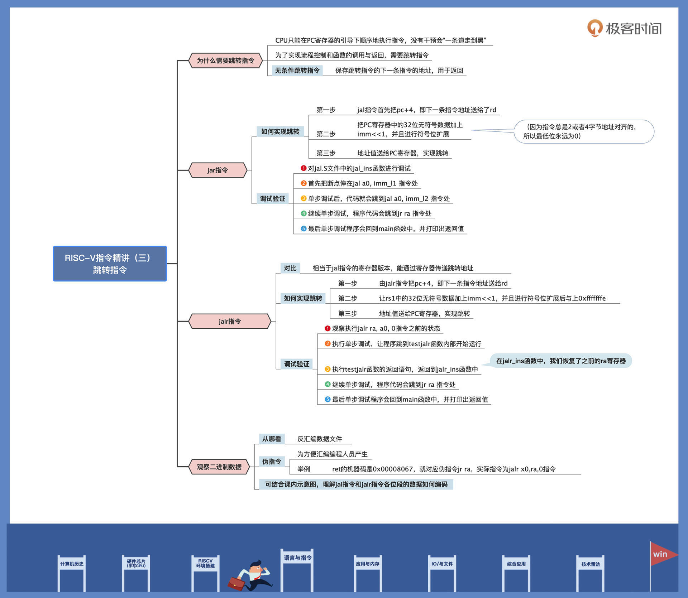
下节课我们继续研究有条件跳转指令，敬请期待。
思考题
既然已经有jal指令了，为什么还需要jalr指令呢？
期待你在留言区记录收获或疑问，认真思考和主动练习都能让你加深印象。如果感觉这节课还不错，也推荐你把这节课分享给更多朋友。
19 RISC-V指令精讲（四）：跳转指令实现与调试
你好，我是LMOS。
前面我们学习了无条件跳转指令，但是在一些代码实现里，我们必须根据条件的判断状态进行跳转。比如高级语言中的if-else 语句，这是一个典型程序流程控制语句，它能根据条件状态执行不同的代码。这种语句落到指令集层，就需要有根据条件状态进行跳转的指令来支持，这类指令我们称为有条件跳转指令。
这节课，我们就来学习这些有条件跳转指令。在RISC-V指令集中，一共有6条有条件跳转指令，分别是beq、bne、blt、bltu、bge、bgeu。
这节课的配套代码，你可以从这里下载。
比较数据是否相等：beq和bne指令
我们首先来看看条件相等跳转和条件不等跳转指令，即beq指令和bne指令，它们的汇编代码书写形式如下所示：
beq rs1，rs2，imm
#beq 条件相等跳转指令
#rs1 源寄存器1
#rs2 源寄存器2
#imm 立即数
bne rs1，rs2，imm
#bne 条件不等跳转指令
#rs1 源寄存器1
#rs2 源寄存器2
#imm 立即数
上述代码中，rs1、rs2可以是任何通用寄存器，imm是立即数（也可称为偏移量），占用13位二进制编码。请注意，beq指令和bne指令没有目标寄存器，就不会回写结果。
我们用伪代码描述一下beq指令和bne指令完成的操作。
//beq
if(rs1 == rs2) pc = pc + 符号扩展（imm << 1）
//bne
if(rs1 != rs2) pc = pc + 符号扩展（imm << 1）
你可以这样理解这两个指令。在rs1、rs2寄存器的数据相等时，beq指令就会跳转到标号为imm的地方运行。而rs1、rs2寄存器的数据不相等时，bne指令就会跳转到imm标号处运行。
下面我们一起写代码来验证。在工程目录下，我们需要建立一个beq.S文件，在文件里用汇编写上beq_ins、bne_ins函数，代码如下所示：
.global beq_ins
beq_ins:
beq a0，a1，imm_l1 #a0==a1，跳转到imm_l1地址处开始运行
mv a0，zero #a0=0
jr ra #函数返回
imm_l1:
addi a0，zero，1 #a0=1
jr ra #函数返回
.global bne_ins
bne_ins:
bne a0，a1，imm_l2 #a0!=a1，跳转到imm_l2地址处开始运行
mv a0，zero #a0=0
jr ra #函数返回
imm_l2:
addi a0，zero，1 #a0=1
jr ra #函数返回
我们先看代码里的 beq_ins函数完成了什么操作，如果a0和a1相等，则跳转到imm_l1处，将a0置1并返回，否则继续顺序执行，将a0置0并返回。然后，我们再看下 bne_ins函数的操作，如果a0和a1不相等则跳转到imm_l2处，将a0置1并返回，否则继续顺序执行将a0置0并返回。
我们在main.c文件中声明一下这两个函数并调用它们，然后用VSCode打开工程目录，按下“F5”键来调试，情况如下所示：
上图是执行“beq a0，a1，imm_l1”指令后的状态。由于a0、a1寄存器内容不相等，所以没有跳转到imm_l1处运行，而是继续顺序执行beq后面的下一条指令，最后返回到main函数中。
函数返回结果如下图所示：

从图里我们能看到，首先会由main函数调用beq_ins函数，然后调用printf输出返回的结果，在终端中的输出为0。这个结果在我们的预料之中，也验证了beq指令的效果和我们之前描述的一致。
下面我们继续调试，就会进入bne_ins函数中，如下所示：

上图中是执行“bne a0，a1，imm_l2”指令之后的状态。同样因为a0、a1寄存器内容不相等，而bne指令是不相等就跳转。这时程序会直接跳转到imm_l2处运行，执行addi a0，zero，1指令，将a0寄存器置为1后，返回到main函数中，如下所示：

上图中第二个printf函数打印出bne_ins函数返回的结果，输出为1。bne指令会因为数据相等而跳转，将a0寄存器置为1，导致返回值为1，这个结果是正确的。
经过上面的调试验证，我们不难发现：其实bne是beq的相反操作，作为一对指令搭配使用，完成相等和不相等的流程控制。
小于则跳转：blt和bltu指令
有了bqe、bne有条件跳转指令后，就能实现C语言 ==和 != 的比较运算符的功能。但这还不够，除了比较数据的相等和不等，我们还希望实现比较数据的大小这个功能。
这就要说到小于则跳转的指令，即blt指令与bltu指令，bltu指令是blt的无符号数版本。它们的汇编代码书写形式如下：
blt rs1，rs2，imm
#blt 条件小于跳转指令
#rs1 源寄存器1
#rs2 源寄存器2
#imm 立即数
bltu rs1，rs2，imm
#bltu 无符号数条件小于跳转指令
#rs1 源寄存器1
#rs2 源寄存器2
#imm 立即数
和bqe、bne指令一样，上述代码中rs1、rs2可以是任何通用寄存器，imm是立即数（也可称为偏移量），占用13位二进制编码，它们同样没有目标寄存器，不会回写结果。
blt指令和bltu指令所完成的操作，可以用后面的伪代码描述：
//blt
if(rs1 < rs2) pc = pc + 符号扩展（imm << 1）
//bltu
if((无符号)rs1 < (无符号)rs2) pc = pc + 符号扩展（imm << 1）
你可以这样理解这两个指令。当rs1小于rs2时且rs1、rs2中为有符号数据，blt指令就会跳转到imm标号处运行。而当rs1小于rs2时且rs1、rs2中为无符号数据，bltu指令就会跳转到imm标号处运行。
我们同样通过写代码验证一下，加深理解。在beq.S文件中，我们用汇编写上blt_ins、bltu_ins函数，代码如下所示：
.global blt_ins
blt_ins:
blt a0，a1，imm_l3 #a0<a1，跳转到imm_l3地址处开始运行
mv a0，zero #a0=0
jr ra #函数返回
imm_l3:
addi a0，zero，1 #a0=1
jr ra #函数返回
.global bltu_ins
bltu_ins:
bltu a0，a1，imm_l4 #a0<a1，跳转到imm_l4地址处开始运行
mv a0，zero #a0=0
jr ra #函数返回
imm_l4:
addi a0，zero，1 #a0=1
jr ra #函数返回
blt_ins函数都做了什么呢？如果a0小于a1，则跳转到imm_l3处，将a0置1并返回，否则继续顺序执行将a0置0并返回。
接着我们来看bltu_ins函数的操作，如果a0中的无符号数小于a1中的无符号数，程序就会跳转到imm_l4处，将a0置1并返回，否则继续顺序执行，将a0置0并返回。
我们还是用VSCode打开工程目录，按下“F5”键来调试验证。下图是执行“blt a0,a1,imm_l3”指令之后的状态。
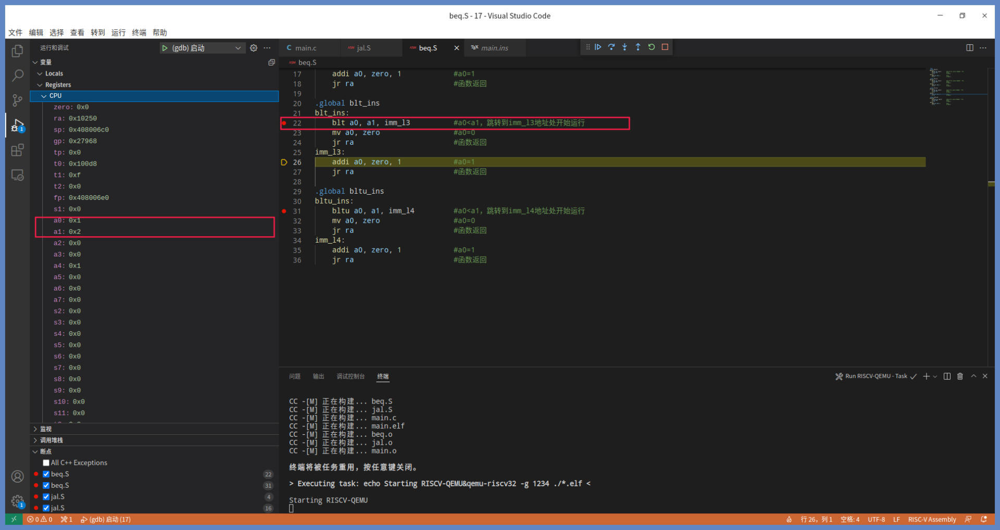
由于a0中的有符号数小于a1中的有符号数，而blt指令是小于就跳转，这时程序会直接跳转到imm_l3处运行，执行addi a0，zero，1指令，将a0寄存器置为1后，返回到main函数中。返回结果如下所示：

对照上图可以发现，main函数先调用了blt_ins函数，然后调用printf在终端上打印返回的结果，输出为1。这个结果同样跟我们预期的一样，也验证了blt指令的功能确实是小于则跳转。
我们再接再厉，继续调试，进入bltu_ins函数中，如下所示：

图里的代码表示执行“bltu a0，a1，imm_l4”指令之后的状态。
由于bltu把a0、a1中的数据当成无符号数，所以a0的数据小于a1的数据，而bltu指令是小于就跳转，这时程序就会跳转到imm_l4处运行，执行addi a0，zero，1指令，将a0寄存器置为1后，就会返回到main函数中。
对应的跳转情况，你可以对照一下后面的截图：

我们看到上图中调用bltu_ins函数传递的参数是3和-1，应该返回0才对。然而printf在终端上输出为1，这个结果是不是出乎你的意料呢？
我们来分析一下原因，没错，这是因为bltu_ins函数会把两个参数都当成无符号数据，把-1当成无符号数是0xffffffff，远大于3。所以这里返回1，反而是bltu指令正确的运算结果。
大于等于则跳转：bge和bgeu指令
有了小于则跳转的指令，我们还是需要大于等于则跳转的指令，这样才可以在C语言中写出类似”a >= b”这种表达式。在RISC-V指令中，为我们提供了bge、bgeu指令，它们分别是有符号数大于等于则跳转的指令和无符号数大于等于则跳转的指令。
这是最后两条有条件跳转指令，它们的汇编代码形式如下：
bge rs1，rs2，imm
#bge 条件大于等于跳转指令
#rs1 源寄存器1
#rs2 源寄存器2
#imm 立即数
bgeu rs1，rs2，imm
#bgeu 无符号数条件大于等于跳转指令
#rs1 源寄存器1
#rs2 源寄存器2
#imm 立即数
代码规范和前面四条指令都相同，这里不再重复。
下面我们用伪代码描述一下bge、bgeu指令，如下所示：
//bge
if(rs1 >= rs2) pc = pc + 符号扩展（imm << 1）
//bgeu
if((无符号)rs1 >= (无符号)rs2) pc = pc + 符号扩展（imm << 1）
我们看完伪代码就能大致理解这两个指令的操作了。当rs1大于等于rs2，且rs1、rs2中为有符号数据时，bge指令就会跳转到imm标号处运行。而当rs1大于等于rs2时且rs1、rs2中为无符号数据，bgeu指令就会跳转到imm标号处运行。
我们继续在beq.S文件中用汇编写上bge_ins、bgeu_ins函数，进行调试验证，代码如下所示：
.global bge_ins
bge_ins:
bge a0，a1，imm_l5 #a0>=a1，跳转到imm_l5地址处开始运行
mv a0，zero #a0=0
jr ra #函数返回
imm_l5:
addi a0，zero，1 #a0=1
jr ra #函数返回
.global bgeu_ins
bgeu_ins:
bgeu a0，a1，imm_l6 #a0>=a1，跳转到imm_l6地址处开始运行
mv a0，zero #a0=0
jr ra #函数返回
imm_l6:
addi a0，zero，1 #a0=1
jr ra #函数返回
结合上面的代码，我们依次来看看bge_ins函数和bgeu_ins函数都做了什么。先看bge_ins函数，如果a0大于等于a1，则跳转到imm_l5处将a0置1并返回，否则就会继续顺序执行，将a0置0并返回。
而bgeu_ins函数也类似，如果a0中无符号数大于等于a1中的无符号数，则跳转到imm_l6处将a0置1并返回，否则继续顺序执行，将a0置0并返回。
我们用VSCode打开工程目录，按“F5”键调试，情况如下：
上图中是执行“bge a0，a1，imm_l5”指令之后的状态，由于a0中的有符号数，大于等于a1中的有符号数。而bge指令是大于等于就跳转，所以这时程序将会直接跳转到imm_l5处运行。执行addi a0，zero，1指令，将a0寄存器置为1后，就会返回到main函数中。
对照下图，可以看到调用bge_ins(4,4)函数后，之后就是调用printf，在终端上打印其返回结果，输出为1。

因为两个数相等，所以返回1，这个结果正确，也验证了bge指令的功能确实是大于等于则跳转。
下面我们继续调试，就会进入bgeu_ins函数之中，如下所示：

上图中是执行“bgeu a0，a1，imm_l6”指令之后的状态。
由于bgeu把a0、a1中的数据当成无符号数，所以a0的数据小于a1的数据。而bgeu指令是大于等于就跳转，这时程序就会就会顺序运行bgeu后面的指令“mv a0，zero”，将a0寄存器置为0后，返回到main函数中。
可以看到，意料外的结果再次出现了。你可能疑惑，下图里调用bgeu_ins函数传递的参数是3和-1，应该返回1才对，然而printf在终端上的输出却是0。

出现这样的情况，跟前面bltu_ins函数情况类似，bgeu_ins函数会把两个参数都当成无符号数据，把-1当成无符号数是0xffffffff，3远小于0xffffffff，所以才会返回0。也就是说，图里的结果恰好验证了bgeu指令是正确的。
到这里，我们已经完成了对beq、bne、blt、bltu、bge、bgeu指令的调试，熟悉了它们的功能细节，现在我们继续一起看看beq_ins、bne_ins、blt_ins、bltu_ins、bge_ins、bgeu_ins函数的二进制数据。
沿用之前查看jal_ins、jalr_ins函数的方法，我们将main.elf文件反汇编成main.ins文件，然后打开这个文件，就会看到这些函数的二进制数据，如下所示：
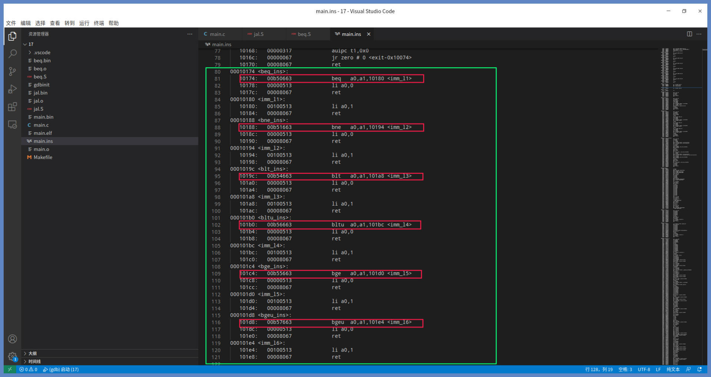
上图里的反汇编代码中使用了一些伪指令，它们的机器码以及对应的汇编语句、指令类型，我画了张表格来梳理。
- 有了这些机器码数据，我们同样来拆分一下这些指令各位段的数据，在内存里它们是这样编码的：

看完图片我们可以发现，bqe、bne、blt、bltu、bge、bgeu指令的操作码是相同的，区分指令的是功能码。
这些指令的立即数都是相同的，这和我们编写的代码有关，其数据正常组合起来是0b00000000110，这个二进制数据左移1位等于十六进制数据0xc。看看那些bxxx_ins函数代码，你就明白了，bxxx指令和imm_lxxx标号之间（包含标号）正好间隔3条，一条指令4字节，其偏移量正好是12，pc+12正好落在imm_lxxx标号处的指令上。
重点回顾
这节课就要结束了，我们做个总结。
RISC-V指令集中的有条件跳转指令一共六条，它们分别是beq、bne、blt、bltu、bge、bgeu。
bne和beq指令，用于比较数据是否相等，它们是一对相反的指令操作，搭配使用就能完成相等和不相等的流程控制。blt、bltu是小于则跳转的指令，bge、bgeu是大于等于则跳转的指令，区别在于有无符号数。这六条跳转指令的共性是，都会先比较两个源操作数，然后根据比较结果跳转到具体的偏移地址去运行。
这节课的要点我给你准备了导图，供你参考复习。
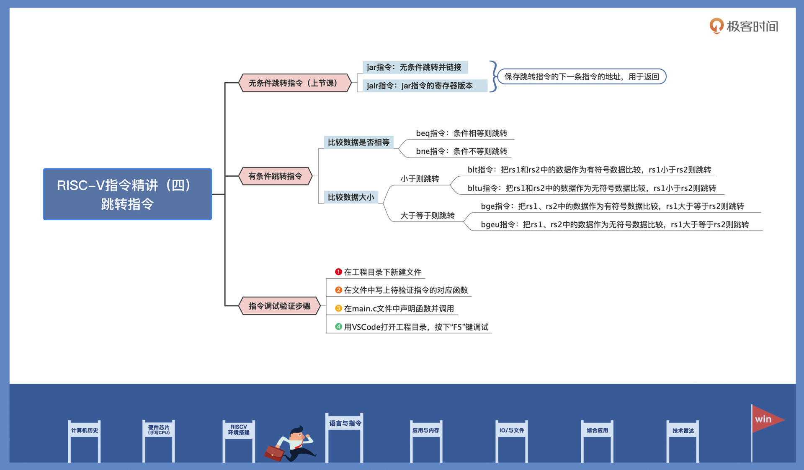
到这里，我们用两节课的时间掌握了RISC-V指令集的八条跳转指令。正是这些“辛勤劳作”的指令，CPU才获得了顺序执行之外的新技能，进而让工程师在高级语言中，顺利实现了函数调用和流程控制与比较表达式。
下节课我们继续挑战访存指令，敬请期待。
思考题
我们发现在RISC-V指令集中，没有大于指令和小于等于指令，这是为什么呢？
别忘了在留言区记录收获，或者向我提问。如果觉得课程还不错，别忘了推荐给身边的朋友，跟他一起学习进步。
20 RISC-V指令精讲（五）：原子指令实现与调试
你好，我是LMOS。
通过前面的课程，我们学过了RISC-V的各种跳转指令以及这些指令的各种变形，并且了解了它们的机器编码。
今天，我们开始学习RISC-V下的原子指令，原子指令是RISC-V的指令扩展，命名为 ‘A’。这个扩展指令中包含两部分，分别是LR/SC指令和AMO指令。
我们先搞明白为什么需要原子指令，什么情况用得上它们。再分别学习和对比LR/SC指令与AMO指令，另外，我还会让你知道这些指令各自的使用场景是什么。
课程代码你可以从这里下载。话不多说，让我们直接开始吧。
为什么需要原子指令
你对学生时代上的物理课还有什么印象么？那时候我们就接触过“原子”这个概念了。“原子”是物质的最小组成，即原子是不可分割的。虽然到现在科学家已经发现在原子内部有更小的成分，但是在广义上原子仍然保持“不可分割”的语义。
那么在芯片中的原子指令是什么呢？它延续了“不可分割”这个含义，表示该指令的执行是不可分割的，完成的操作不会被其它外部事件打断。
我们结合一段代码，来了解原子指令的具体作用和使用场景。
//全局变量A
int A = 0;
//线程A执行的函数
void thread_a()
{
A++;
printf("ThreadA A is:%d\n"，A);
return;
}
//线程B执行的函数
void thread_b()
{
A++;
printf("ThreadB A is:%d\n"，A);
return;
}
以上两个函数，分别由不同的线程运行，都是对全局变量A加1后打印出来。让我们暂停一下想想看，你认为程序的打印结果是什么？
也许你的判断是两种情况，即输出A值1、 2；A值：2、2。但你把代码跑一下试试，就会发现结果出乎意料。除了前面两种情况，还多了一个可能：A值：1、1。这就很奇怪了，为什么出现这种情况呢？
原因便是A++不是原子指令实现的不可分割操作，它可以转化为后面这样的CPU指令形式。
load reg，A #加载A变量到寄存器
Add reg，1 #对寄存器+1
store A，reg #储存寄存器到A变量
我们已经看到了，A++被转换成了三条指令，有可能线程A执行了上面第一行指令，线程B也执行了上面第一行指令，这时就会出现线程A、B都输出1的情况。其本质原因是，这三条指令是独立、可分割的。
解决这个问题的方案不止一种。我们可以使用操作系统的线程同步机制，让线程A和线程B串行执行，即thread_a函数执行完成了，再执行thread_b函数。另一种方案是使用原子指令，利用原子指令来保证对变量A执行的操作，也就是加载、计算、储存这三步是不可分割的，即一条指令能原子地完成这三大步骤。
现实中，小到多个线程共享全局变量，大到多个程序访问同一个文件，都需要保证数据的一致性。对于变量可以使用原子指令，而文件可以利用原子指令实现文件锁，来同步各个进程对文件的读写。这就是原子指令存在的价值。
为了实现这些原子操作，一款CPU在设计实现时，就要考虑提供完成这些功能的指令，RISC-V也不例外，原子指令是现代CPU中不可或缺的一种指令，除非你的CPU是单个核心，没有cache，且不运行操作系统。显然，RISC-V架构的CPU，不是那种类型的CPU。
搞清楚了为什么需要原子指令，我们接下来就去看看，RISC-V究竟提供了哪些原子指令？
LR/SC指令
首先RISC-V提供了LR/SC指令。这虽然是两条指令，但却是一对好“搭档”，它们需要配合才能实现原子操作，缺一不可。看到后面，你就会知道这是为什么了，我们先从这两条指令用在哪里说起。
在原子的比较并交换操作中，常常会用到LR/SC指令，这个操作在各种加锁算法中应用广泛。我们先来看看这两条指令各自执行了什么操作。
LR指令是个缩写，全名是Load Reserved，即保留加载；而SC指令的缩写展开是Store Conditional，即条件存储。
我们先来看看它们在汇编代码中的书写形式，如下所示：
lr.{w/d}.{aqrl} rd，(rs1)
#lr是保留加载指令
#{可选内容}W（32位）、D（64位）
#aqrl为内存顺序，一般使用默认的
#rd为目标寄存器
#rs1为源寄存器1
sc.{w/d}.{aqrl} rd，rs2，(rs1)
#sc是条件储存指令
#{可选内容}W（32位）、D（64位）
#aqrl为内存顺序，一般使用默认的
#rd为目标寄存器
#rs1为源寄存器1
#rs2为源寄存器2
上述代码中，rd、rs1、rs2可以是任何通用寄存器。“{}“中的内容不是必须填写的，汇编器能根据当前的运行环境自动设置。
LR指令和SC指令完成的操作，用伪代码可以这样描述：
//lr指令
rd = [rs1]
reservation_set(cur_hart)
//sc指令
if (is_reserved(rs1)) {
*rs1 = rs2
rd = 0
} else
rd = 1
clean_reservation_set(cur_hart)
观察上述伪代码，我们先看看LR指令做了什么：rs1寄存器的数据就是内存地址，指定了LR指令从哪里读取数据。LR会从该地址上加载一个32位或者64位的数据，存放到rd寄存器中。这个地址需要32位或者64位对齐，加载之后会设置当前CPU hart（RISC-V中的核心）读取该地址的保留位。
而SC指令则是先判断rs1中对应地址里的保留位（reservation set）有没有被设置。如果被设置了，则把rs2的数据写入rs1为地址上的内存中，并在rd中写入0；否则将向rd中写入一个非零值，这个值并不一定是1，最后清除当前对应CPU hart（RISC-V中的核心）在该地址上设置的保留位。
从上面的描述，我们发现，SC指令不一定执行成功，只有满足后面这四个条件，它才能执行成功：
- LR和SC指令成对地访问相同的地址。-
- LR和SC指令之间没有任何其它的写操作（来自任何一个hart）访问同样的地址。-
- LR和SC指令之间没有任何中断与异常发生。-
- LR和SC指令之间没有执行MRET指令。
而这些条件正是LR/SC指令保持原子性的关键所在。
下面我们一起写代码验证一下。为了方便调试，我们的代码组织结构还是从写一个main.c文件开始，然后在其中写上main函数，因为这是链接器所需要的。接着我们写一个lrsc.S文件，并在里面用汇编写上lrsc_ins函数，这些操作在前面课程中我们已经反复做过了。
代码如下所示：
.globl lrsc_ins
#a0内存地址
#a1预期值
#a2所需值
#a0返回值，如果成功，则为0！否则为1
lrsc_ins:
cas:
lr.w t0，(a0) #加载以前的值
bne t0，a1，fail #不相等则跳转到fail
sc.w a0，a2，(a0) #尝试更新
jr ra #返回
fail:
li a0，1 #a0 = 1
jr ra #返回
这样，lrsc_ins函数就写好了。
我结合上面的代码再带你理解一下：这个函数首先通过LR指令把a0中的数据（也就是地址信息）加载到t0中，如果t0和a1不相等，则跳转到fail处，将a0置1并返回；否则继续顺序执行，通过SC指令将a2的数据写入到a0为地址的内存中，写入成功则将a0置0，不成功则置为非零。SC指令执行成功与否，要看是否满足上面那4个条件，最后返回。
我们在main.c文件中声明一下这两个函数并调用它，再用VSCode打开工程目录，按下“F5”键调试一下，如下所示：

上图是执行“lr.w t0，(a0)”指令后的状态。下一步我们将执行bne比较指令，继续做两步单步调试，目的是执行SC指令，如下所示：
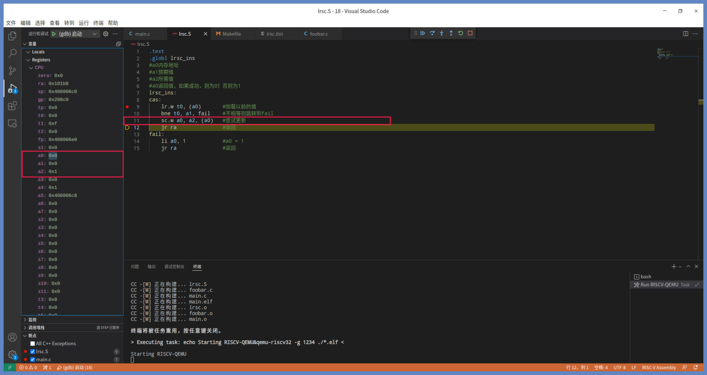
上图是执行“sc.w a0，a2，(a0)”指令后的状态。由于SC指令执行时满足上述四大条件，所以SC会把a2的内容写入a0为地址的内存中，并将a0置0，最后返回到main函数中，如下所示：

上图描述的过程是，main函数调用lrsc_ins函数后，然后调用printf输出返回的结果，在终端中的输出为result:0，val:1。这个结果在我们的预料之中，也验证了LR/SC指令正如我们前面所描述的那样。
通过这种LR/SC指令的组合，确实可以实现原子的比较并交换的操作，在计算机行业中也称为CAS指令。这种CAS指令是实现系统中各种同步锁的基础设施，这也是为什么我在写代码时，同时使用lrsc_ins和cas两个标号的用意。
我们再看一个例子加深印象，代码如下所示：
int cas(int* lock, int cmp, int lockval); // 声明cas函数
int lock = 0;
//初始化锁
void LockInit(int* lock)
{
*lock = 0;
return;
}
//加锁
int Lock(int* lock)
{
int status;
status = cas(lock, 0, 1);
if(status == 0)
{
return 1;//加锁成功
}
return 0; //加锁失败
}
//解锁
int UnLock(int* lock)
{
int status;
status = cas(lock, 1, 0);
if(status == 0)
{
return 1;//解锁成功
}
return 0; //解锁失败
}
上述代码是一个加解锁的例子，返回1表示加、解锁操作成功；返回0表示加、解锁操作失败；lock为0表示解锁状态，为1则表示上锁状态。加、解锁操作最关键的点在于这个操作是原子的，不能被打断，而这正是LR/SC指令的作用所在。
经过刚刚的调试，LR/SC指令的功能细节我们已经心中有数了。现在我们继续一起看看它的二进制数据。
打开终端，切换到工程目录下，输入命令：riscv64-unknown-elf-objdump -d ./main.elf > ./main.ins，就会得到main.elf的反汇编数据文件main.ins。我们打开这个文件，就会看到它们的二进制数据，如下所示：
我们一起看看上图中的反汇编代码，这里编译器为了节约内存，使用了一些压缩指令，也就是RISC-V的C类扩展指令。
比如ret的机器码是0x8082，li a0，1的机器码为0x4505，它们只占用16位编码，即二字节。
上图机器码与汇编语句的对应关系如下表所示：

让我们继续一起来拆分一下LR、SC指令的各位段的数据，看看它是如何编码的。对照后面的示意图你更容易理解：

LR/SC指令的操作码和功能码都是相同的，它们俩是靠27位~31位来区分的。其它的寄存器位段在前面的课程中已经介绍得相当详细了，而aq-rl位段是用来设置计算储存顺序的，使用默认的就行，这里我们就不深入研究了。
AMO指令
前面，我们通过例子演示了LR/SC指令如何实现锁的功能。基于此，我们给操作对象加锁，就能执行更多逻辑上的“原子”操作。但这方式也存在问题，实现起来很复杂，对于单体变量，使用这种方式代价很大。
因此AMO类的指令应运而生。这也是一类原子指令，它们相比LR/SC指令用起来更方便。因为也属于原子指令，所以每个指令完成的操作同样是不可分割，不能被外部事件打断的。
AMO 是 Atomic Memory Operation 的缩写，即原子内存操作。AMO 指令又分为几类，分别是原子交换指令、原子加法指令、原子逻辑指令和原子取大小值指令。
大部分调试指令的操作，我们都在前几节课里学过了，这里我们不再深入调试，只是用这些指令来写一些可执行的代码，方便我们了解其原理就行了。调试过程和前面的一样。你自己有兴趣可以自己动手调试。
首先我们来看看原子交换指令，它能执行寄存器和内存中的数据交换，并保证该操作的原子性，其汇编代码形式如下所示：
amoswap.{w/d}.{aqrl} rd,rs2,(rs1)
#amoswap是原子交换指令
#{可选内容}W（32位）、D（64位）
#aqrl为内存顺序，一般使用默认的
#rd为目标寄存器
#rs1为源寄存器1
#rs2为源寄存器2
上述代码中rd、rs1、rs2可以是任何通用寄存器。“{}“中的可以不必填写，汇编器能根据当前的运行环境自动设置。
我们用伪代码来描述一下amoswap指令完成的操作，你会看得更清楚。
//amoswap
rd = *rs1
*rs1 = rs2
观察上述伪代码，amoswap指令是把rs1中的数据当成内存地址，加载了该地址上一个32位或者64位的数据到rd寄存器中。然后把rs2中的数据，写入到rs1指向的内存单元中，实现rs2与内存单元的数据交换，该地址需要32位或者64位对齐。这两步操作是原子的、不可分割的。
下面，我们在工程目录中建立一个amo.S文件，并在其中用汇编写上amoswap_ins函数，代码如下所示：
.globl amoswap_ins
#a0内存地址
#a1将要交换的值
#a0返回值
amoswap_ins:
amoswap.w a0, a1, (a0) #原子交换a0=[a0]=a1
jr ra #返回
我们直接看代码里的amoswap_ins函数，其中amoswap指令的作用是，把a0地址处的内存值读取到a0中，然后把a1的值写入a0中的地址处的内存中，完成了原子交换操作。你可以自己进入工程调试一下。
接着我们来看看原子加法指令，这类指令能把寄存器和内存中的数据相加，并把相加结果写到内存里，然后返回内存原有的值。原子加法指令的汇编代码形式如下所示。
amoadd.{w/d}.{aqrl} rd,rs2,(rs1)
#amoadd是原子加法指令
#{可选内容}W（32位）、D（64位）
#aqrl为内存顺序，一般使用默认的
#rd为目标寄存器
#rs1为源寄存器1
#rs2为源寄存器2
上述代码中除了指令符和原子交换指令不同，其它都是一样的，amoadd指令完成的操作用伪代码描述如下：
//amoadd
rd = *rs1
*rs1 = *rs1 + rs2
我们观察一下amoadd指令都做了什么。它把rs1中的数据当成了内存地址，先把该地址上一个32位或者64位的数据，读到rd寄存器中。然后把rs2的数据与rs1指向的内存单元里的数据相加，结果写入到该地址的内存单元中，该地址仍需要32位或者64位对齐。这两步操作是不可分割的。
下面我们在amo.S文件中用汇编写上amoadd_ins函数，代码如下：
.globl amoadd_ins
#a0内存地址
#a1相加的值
#a0返回值
amoadd_ins:
amoadd.w a0, a1, (a0) #原子相加a0=[a0] [a0]=[a0] + a1
jr ra #返回
上述代码中，amoadd_ins函数中的amoadd指令，把a0中的地址处的内存值读取到a0中，然后把a1的值与a0中的地址处的内存中的数据相加，结果写入该地址的内存单元中，这操作是原子执行的，完成了原子加法操作。指令的调试你可以课后自己练一练。
我们继续研究原子逻辑操作指令，一共有三条，分别是原子与、原子或、原子异或。它们和之前的逻辑指令功能相同，只不过它们在保证原子性的同时，还能直接对内存地址中的数据进行操作。
原子逻辑操作指令的汇编代码形式如下所示：
amoand.{w/d}.{aqrl} rd,rs2,(rs1)
amoor.{w/d}.{aqrl} rd,rs2,(rs1)
amoxor.{w/d}.{aqrl} rd,rs2,(rs1)
#amoand是原子按位与指令
#amoor是原子按位或指令
#amoxor是原子按位异或指令
#{可选内容}W（32位）、D（64位）
#aqrl为内存顺序，一般使用默认的
#rd为目标寄存器
#rs1为源寄存器1
#rs2为源寄存器2
上述代码中三条指令，除了指令符不同，其它是一样的，rd、rs1、rs2可以是任何通用寄存器。“{}“中的可以不必填写，汇编器能根据当前的运行环境自动设置。
amoand、amoor、amoxor三条指令各自完成的操作，我们分别用伪代码描述一下，如下所示：
//amoand
rd = *rs1
*rs1 = *rs1 & rs2
//amoor
rd = *rs1
*rs1 = *rs1 | rs2
//amoxor
rd = *rs1
*rs1 = *rs1 ^ rs2
上面的伪代码中，都是把rs1中数据当成地址，把该地址内存单元中的数据读取到rd中，然后进行相应的按位与、或、异或操作，最后把结果写入该地址的内存单元中。这些操作是不可分割的，且地址必须对齐到处理器位宽。
下面我们在amo.S文件中用汇编写上三个函数，代码如下：
.globl amoand_ins
#a0内存地址
#a1相与的值
#a0返回值
amoand_ins:
amoand.w a0, a1, (a0) #原子相与a0 = [a0] [a0] = [a0] & a1
jr ra #返回
.globl amoor_ins
#a0内存地址
#a1相或的值
#a0返回值
amoor_ins:
amoor.w a0, a1, (a0) #原子相或a0 = [a0] [a0] = [a0] | a1
jr ra #返回
.globl amoxor_ins
#a0内存地址
#a1相异或的值
#a0返回值
amoxor_ins:
amoxor.w a0, a1, (a0) #原子相异或a0 = [a0] [a0] = [a0] ^ a1
jr ra #返回
这段代码中，amoand_ins、amoor_ins、amoxor_ins三个函数，都是把a0中数据作为地址，把该地址内存单元中的值读取到a0中。然后，再对a1的值与该地址内存单元中的数据进行与、或、异或操作，把结果写入该地址的内存单元中，这样就完成了原子与、或、异或操作。调试的思路和前面指令一样，我就不重复了。
最后，我们来看看原子取大小值的指令，它包括无符号数和有符号数版本，一共是四条指令，分别是：原子有符号取大值指令、原子无符号取大值指令、原子有符号取小值指令、原子无符号取小值指令。
汇编代码形式如下所示：
amomax.{w/d}.{aqrl} rd,rs2,(rs1)
amomaxu.{w/d}.{aqrl} rd,rs2,(rs1)
amomin.{w/d}.{aqrl} rd,rs2,(rs1)
amominu.{w/d}.{aqrl} rd,rs2,(rs1)
#amomax是原子有符号取大值指令
#amomaxu是原子无符号取大值指令
#amomin是原子有符号取小值指令
#amominu是原子无符号取小值指令
#{可选内容}W（32位）、D（64位）
#aqrl为内存顺序，一般使用默认的
#rd为目标寄存器
#rs1为源寄存器1
#rs2为源寄存器2
上述代码中四条指令，除了指令符不同，其它内容是一样的。
我们用伪代码来描述一下amomax、amomaxu、amomin、amominu四条指令各自完成的操作，形式如下：
max(a,b)
{
if(a > b)
return a;
else
return b;
}
min(a,b)
{
if(a < b)
return a;
else
return b;
}
exts(a)
{
return 扩展符号(a)
}
//amomax
rd = *rs1
*rs1 = max(exts(*rs1),exts(rs2))
//amomaxu
rd = *rs1
*rs1 = *rs1 = max(*rs1,rs2)
//amomin
rd = *rs1
*rs1 = min(exts(*rs1),exts(rs2))
//amominu
rd = *rs1
*rs1 = *rs1 = min(*rs1,rs2)
观察上面的伪代码，我们可以看到max函数可以返回两数之间的大数、min函数可以返回两数之间的小数，exts函数负责处理数据的符号。
我们对比学习这几条指令，理解起来更容易。上面的amomax、amomaxu指令都是把rs1中数据当成地址，把该地址内存单元中的数据读取到rd中，然后与rs2进行比较。最后，把两者之间大的那个数值写入该地址的内存单元中，区别是比较时的数据有无符号。
而amomin、amominu指令则是把rs1中数据当成地址，把该地址内存单元中的数据读取到rd中，然后与rs2进行比较，最后把两者之间小的数值写入该地址的内存单元中。这两个指令的区别同样是比较时的数据有无符号。
下面我们在amo.S文件中用汇编写上四个函数，代码如下所示：
.globl amomax_ins
#a0内存地址
#a1相比的值
#a0返回值
amomax_ins:
amomax.w a0, a1, (a0) #原子相与a0 = [a0] [a0] = max([a0] , a1)
jr ra #返回
.globl amomaxu_ins
#a0内存地址
#a1相比的值
#a0返回值
amomaxu_ins:
amomaxu.w a0, a1, (a0) #原子相与a0 = [a0] [a0] = maxu([a0] , a1)
jr ra #返回
.globl amomin_ins
#a0内存地址
#a1相比的值
#a0返回值
amomin_ins:
amomin.w a0, a1, (a0) #原子相与a0 = [a0] [a0] = min([a0] , a1)
jr ra #返回
.globl amominu_ins
#a0内存地址
#a1相比的值
#a0返回值
amominu_ins:
amominu.w a0, a1, (a0) #原子相与a0 = [a0] [a0] = minu([a0] , a1)
jr ra #返回
上述代码中，amomax_ins、amomaxu_ins、amomin_ins、amominu_ins四个函数，都是把a0中数据作为地址，把该地址内存单元中的值读取到a0中，然后把a1的值与该地址内存单元中的数据进行比较操作，结果取大或者取小，最后把结果写入该地址的内存单元中，这些操作都是原子执行的、不可分割。你可以自己进入工程调试一下。
下面我们一起把这些amo指令进行测试，相关代码我已经帮你写好了，我们工程项目按下“F5”来调试。下面是指令调用后的打印结果截图，你可以对照一下。

截图中的输出与我们预期的结果分毫不差，这说明我们用相关指令编写的汇编函数所完成的功能是正确无误的。
至此，关于RISC-V所有的原子指令，一共有11条指令，我们就全部学完了。这些指令分别完成不同的功能，重要的是它们的原子特性，特别是AMO类指令，在处理一些全局共享的单体变量时相当有用。
重点回顾
现在我们一起来回顾一下今天所学内容。
首先，我们讨论了为什么一款芯片需要有原子指令，从这里入手来了解原子指令的特性，它具有操作不可分割性。所以，原子指令是现代高级通用芯片里不可缺少的，是系统软件或者应用软件现实共享数据保护，维护共享数据一致性的重要基础依赖设施。
RISC-V的原子指令中包含两部分，分别是LR/SC指令和AMO指令。
LR/SC指令必须成对使用，才能达到原子效果，在执行LR指令的同时，处理器会设置相应的标志位，用于监控其内存地址上有没有其它hart访问，有没有产生中断异常，有没有执行MRET指令。只要发生上述情况里的一种，就会导致SC指令执行失败。通过这样的规则，才能确保LR与SC指令之间的操作是原子的。
不过，有时候LR/SC指令用起来还是挺复杂的，所以AMO类指令（即原子内存操作）应运而生。RISC-V提供了一系列AMO类指令，它们是原子交换指令、原子加法指令、原子逻辑指令、原子取大小指令，这些指令相比LR、SC指令，使用起来更加方便。
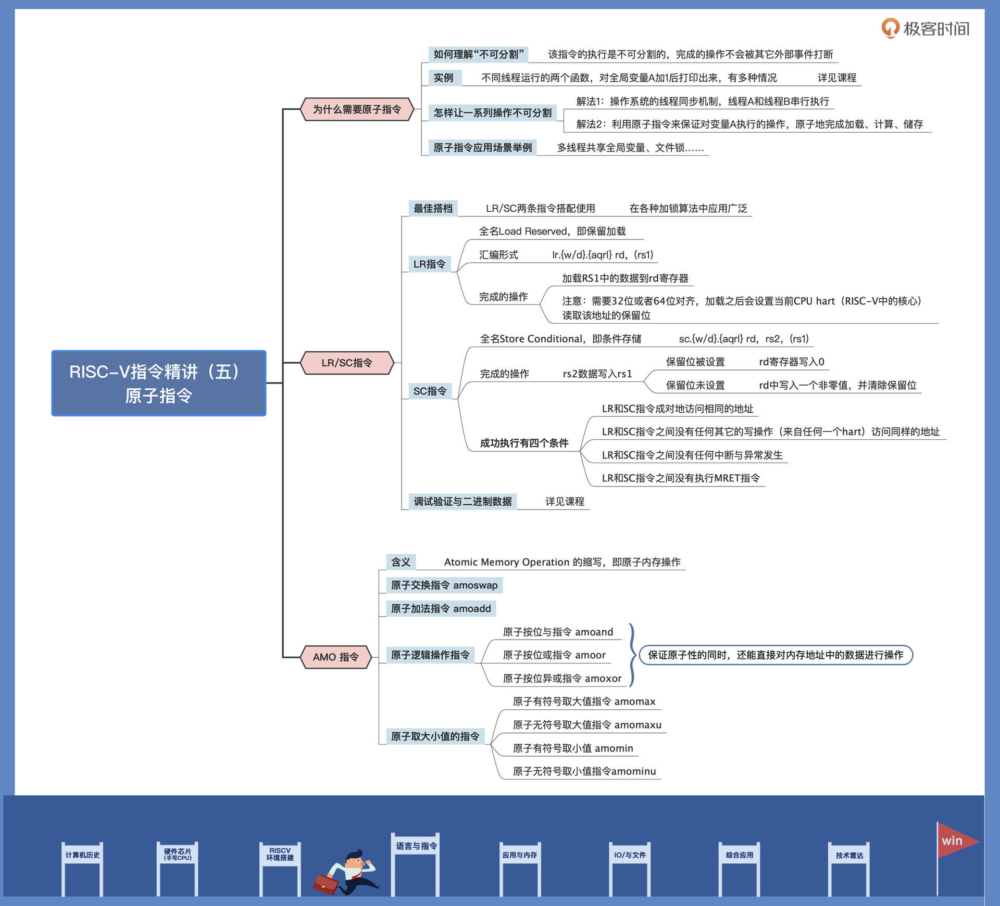
思考题
请你尝试用LR、SC指令实现自旋锁。
期待你在留言区记录自己的收获，或者向我提问。如果觉得这节课还不错，别忘了推荐给身边更多朋友，跟他一起学习进步。
21 RISC-V指令精讲（六）：加载指令实现与调试
你好，我是LMOS。
之前我们已经学过了RISC-V中的算术指令、逻辑指令、原子指令。这些指令主要的操作对象是寄存器，即对寄存器中的数据进行加工，这是RISC体系的重要特性。
但你是否想过寄存器中的数据从哪里来呢？答案是从内存中来，经过存储指令加载到寄存器当中。
RISC-V是一个典型的加载储存体系结构，这种体系类型的CPU，只有加载与储存指令可以访问内存，运算指令不能访问内存。这节课我们就来学习一下RISC-V的加载指令。
顾名思义，加载指令就是从一个地址指向的内存单元中，加载数据到一个寄存器中。根据加载数据大小和类型的不同，加载指令还可以细分成五条加载指令，分别是加载字节指令、无符号加载字节指令、加载半字指令、无符号加载半字指令、加载字指令。
这节课的代码，你可以从这里下载。
加载字节指令：lb指令
我们先从加载字节指令开始说起。在研究加载字节指令之前，我们先来看看RISC-V的加载指令的格式，其对应的汇编语句格式如下：
指令助记符 目标寄存器，源操作数2(源操作数1）
对于加载指令，指令助记符可以是lb、lbu、lh、lhu、lw，目标寄存器可以是任何通用寄存器，源操作数1也可以是任何通用寄存器，源操作数2则是立即数。
我们用汇编代码来描述一下加载字节指令，形式如下：
lb rd,imm(rs1)
#lb 加载字节指令
#rd 目标寄存器
#rs1 源寄存器
#imm 立即数（-2048~2047）
上述代码中rd和rs1可以是任何通用寄存器。立即数imm为12位二进制数据，其范围是-2048~2047，前面课程已经说明了，RISC-V指令集中所有的立即数都是有符号数据，这里的imm在其他的文档里也称为偏移量，为了一致性，我们继续沿用立即数的叫法。
lb指令完成的操作，用伪代码描述如下所示：
rd = 符号扩展（[rs1+imm][7:0]）
我来为你解释一下，上面的伪代码执行的操作是怎样的。
首先lb指令会从内存单元里rs1+imm这个地址里取得8位数据，也就是第0位到第7位的数据。然后，把这个数据进行符号扩展，扩展成32位数据。如果符号位为1，则该32位的高24位为1，否则为0。最后lb指令再把这个32位的数据赋给rd。
下面我们一起写代码验证一下。为了方便之后的调试，我们需要先设计好代码的组织结构，这个过程前面几节课我们反复做过，现在估计你已经相当熟练了。首先创建main.c文件并在上面写好main函数。然后写一个load.S文件，用汇编写上lb_ins函数。
lb_ins函数的代码如下所示：
.text
.globl lb_ins
#a0内存地址
#a0返回值
lb_ins:
lb a0, 0(a0) #加载a0+0地址处的字节到a0中
jr ra #返回
对照代码，我们可以看到这个函数只有两条指令，第一条指令把a0+0地址处的字节加载到a0中，第二条指令就是返回指令，a0作为函数的返回值返回。
你可以用VSCode打开工程目录，按下“F5”键调试一下。首先，我们把断点停在lb a0，0(a0) 指令处，如下所示：

上图中是刚刚执行完lb a0，0(a0)指令之后，执行jr ra指令之前的状态。
我们可以看到，a0寄存器中的值已经变成了0xfffffffb，我们继续单步调试返回到main函数中执行printf函数，打印一下lb_ins函数返回的结果，如下图所示：

如上图所示，byte变量的值为-5，其补码为0xfb，我们把byte的地址强制为无符号，整体传给lb_ins函数。
调用规范告诉我们，C语言函数用a0寄存器传递第一个参数。lb指令虽然只加载了内存地址处的8位数据（0xfb），但是它会用数据的符号位把数据扩展成32位（0xfffffffb），再传给目标寄存器，即a0寄存器，这样a0就会作为返回值返回，所以结果为0xfffffffb。这证明了lb指令工作是正常的。
无符号加载字节指令：lbu指令
接着我们来看一看lb指令的另一个版本，就是无符号加载字节指令，它的汇编代码是这样写的：
lbu rd,imm(rs1)
#lbu 无符号加载字节指令
#rd 目标寄存器
#rs1 源寄存器
#imm 立即数（-2048~2047）
上述代码里，rd，rs1，imm与lb指令的用法和规则是一样的。lbu指令完成的操作，我们用伪代码描述如下：
rd = 符号扩展（[rs1+imm][7:0]）
因为lbu指令获取8位数据的位置，还有把数据扩展成32位赋给rd的过程，都和lb指令一样，我就不重复了。注意是无符号扩展，即符号位为0。
接下来咱们写个代码验证一下，同样在load.S文件中用汇编写上lbu_ins函数 ，代码如下所示：
.globl lbu_ins
#a0内存地址
#a0返回值
lbu_ins:
lbu a0, 0(a0) #加载a0+0地址处的字节到a0中
jr ra #返回
在lbu_ins函数中，第一条指令把a0+0地址处的字节加载到a0中，之后a0会作为函数的返回值返回。
同样地，用VSCode打开工程目录，这里我们需要在lbu a0，0(a0) 指令处打下断点，随后按下“F5”进行调试，如下所示：

上图中是执行完lbu a0，0(a0)指令之后，执行jr ra指令之前的状态，现在a0寄存器中的值已经变成了0xfb。
我们继续单步调试，返回到main函数中，让printf函数打印lbu_ins函数，返回的结果如下图所示：

同样的，byte变量的值为-5，其补码为0xfb，我们把byte变量的地址强制为无符号整体传给lbu_ins函数并调用它。
在lbu_ins函数中，lbu指令只加载内存地址处的8位数据（(0xfb），但是它与lb指令不同，它会用0把数据扩展成32位（0x000000fb），再传给目标寄存器，即a0寄存器。这样a0就会作为返回值返回，故而result为0xfb（251）。这证明了lbu指令是正常工作的。lbu指令的这种无符号扩展特性，非常易于处理无符号类型的变量。
加载半字指令：lh指令
有了能够加载一个字节的指令，我们还需要加载双字节的指令，也叫加载半字指令。在RISC-V规范中，一个字是四字节，所以两个字节也称为半字。
下面我们一起来学习加载半字指令。我们还是先从汇编代码的书写形式来熟悉它，如下所示：
lh rd,imm(rs1)
#lh 加载半字指令
#rd 目标寄存器
#rs1 源寄存器
#imm 立即数（-2048~2047）
上述代码中，rd和rs1可以是任何通用寄存器。立即数imm为12位二进制数据，其范围是-2048~2047。
lh指令完成的操作，用伪代码描述如下：
rd = 符号扩展（[rs1+imm][15:0]）
经过前面的学习，相信你已经找到了规律，现在自己也能解读这样的伪代码了。还是熟悉的过程：先读取数据，找到内存单元rs1+imm这个地址，从里面获取第0位到第15位的数据，再对这个16位数据进行符号扩展（扩展为32位数据）；接着根据符号位分情况处理，如果符号位为1则该32位的高16位为1，否则为0；最后把这个32位数据赋值给rd。
下面是写代码验证时间。我们在load.S文件中用汇编写上lh_ins函数，代码如下：
.globl lh_ins
#a0内存地址
#a0返回值
lh_ins:
lh a0, 0(a0) #加载a0+0地址处的半字到a0中
jr ra #返回
上面的lh_ins函数中，第一条指令把a0+0地址处的半字加载到a0中，而a0将会作为函数的返回值返回。
我们用VSCode打开工程目录，在lh a0，0(a0) 指令处打下断点，随后按下“F5”键调试一下，如下所示：
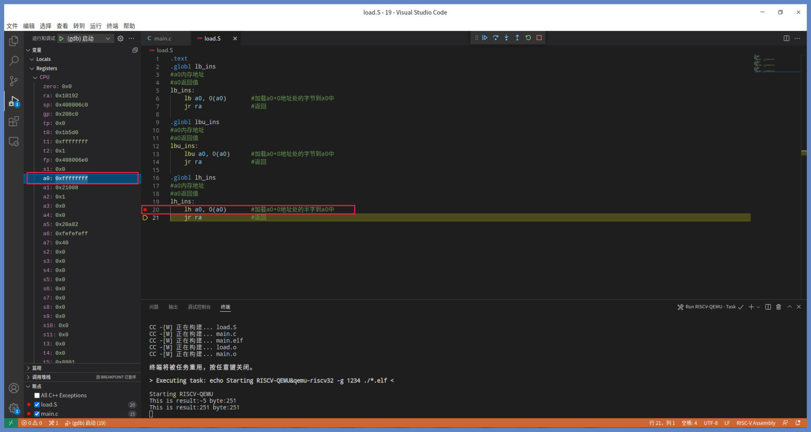
上图中是执行完lh a0，0(a0)指令之后，执行jr ra指令之前的状态。从图中我们可以看到a0寄存器中的值已经变成了0xffffffff。
我们继续单步调试，返回到main函数中，让printf函数打印一下lh_ins函数返回的结果，如下图所示：

对照图片不难发现，short类型的half变量占用两个字节，其值为-1，它的补码为0xffff，我们把half的地址强制为无符号整体传给lh_ins函数。
在lh_ins函数中，lh指令虽然只加载内存地址处的16位数据（0xffff），但是它会用数据的符号位把数据扩展成32位（0xffffffff），再把扩展后的数据传递给a0寄存器，这样a0就会作为返回值返回，故而result为0xffffffff。这证明了lh指令工作正常。
无符号加载半字指令：lhu指令
加载半字指令也分为两种版本，即有符号版本和无符号版本。我们再看看无符号加载半字指令lhu，它的汇编代码书写形式如下所示。
lhu rd,imm(rs1)
#lhu 无符号加载半字指令
#rd 目标寄存器
#rs1 源寄存器
#imm 立即数（-2048~2047）
上述代码中rd，rs1，imm与lh指令的用法和规则是一样的。
我用伪代码为你描述一下lhu指令完成的功能。
rd = 符号扩展（[rs1+imm][15:0]）
lhu指令的操作过程与lh指令一样，我就不重复了，但符号位为0，lhu会进行无符号扩展，即数据的高16位为0。
接下来就是代码验证环节，我们同样在load.S文件中用汇编写上lhu_ins函数，代码如下所示：
.globl lhu_ins
#a0内存地址
#a0返回值
lhu_ins:
lhu a0, 0(a0) #加载a0+0地址处的半字到a0中
jr ra #返回
可以看到上面的lhu_ins函数中，第一条指令会把a0+0地址处的字节加载到a0中，而a0将会作为函数的返回值返回。
我们用VSCode打开工程目录，在lhu a0，0(a0) 指令处打下断点，随后按“F5”键调试，如下所示：
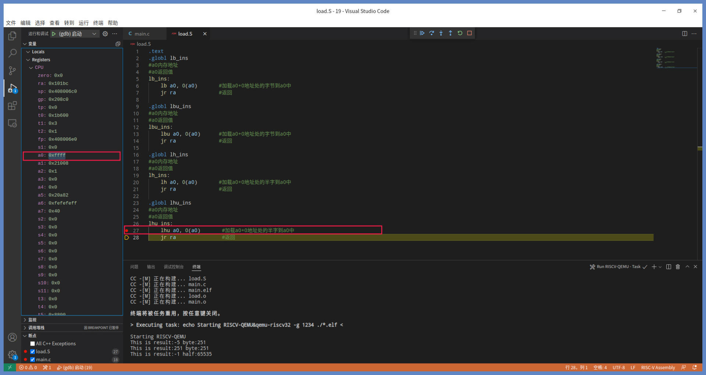
上图是执行完lhu a0，0(a0)指令之后，执行jr ra指令之前的状态，可以看到a0寄存器中的值已经变成了0xffff。
我们继续单步调试，返回到main函数中，让printf函数打印一下lhu_ins函数返回的结果，如下图所示：

如上图所示，我们把half的地址强制为无符号整体传给lhu_ins函数。在lhu_ins函数中，lh指令虽然只加载内存地址处的16位数据（0xffff），但是它会用数据的符号位把数据扩展成32位（0x0000ffff），给a0寄存器作为返回值返回，故而result为0xffff，也就是65535。这证明了lhu指令工作正常。与lbu指令一样，这里同样是为了让编译器方便处理无符号类型的变量。
加载字指令：lw指令
对于一款处理器来说，最常用的是加载其自身位宽的数据为32位的RISC-V处理器，加载字指令是非常常用且必要的指令，一个字的储存大小通常和处理器位宽相等。
现在。我们一起来学习最后一条加载指令，即加载字指令。我们先来看看加载字指令lw，它的汇编代码书写形式如下：
lw rd,imm(rs1)
#lw 加载字指令
#rd 目标寄存器
#rs1 源寄存器
#imm 立即数（-2048~2047）
lw指令完成的操作，用伪代码描述是这样的：
rd = （[rs1+imm][31:0]）
我们看看上面的伪代码执行的操作。首先找到内存单元rs1+imm这个地址，从里面获取第0位到第31位的数据，注意数据无需进行符号扩展，最后把这个32位数据赋值给rd。
写代码验证的思路，现在你应该也很熟悉了。同样还是在load.S文件中，用汇编写上lw_ins函数，代码如下所示：
.globl lw_ins
#a0内存地址
#a0返回值
lw_ins:
lw a0, 0(a0) #加载a0+0地址处的字到a0中
jr ra #返回
我们可以看到，lw_ins函数完成的操作就是，先把a0+0地址处的一个字加载到a0中，再把a0作为函数的返回值返回。
用VSCode打开工程目录，在lw a0，0(a0) 指令处打下断点，随后按下“F5”键调试，调试截图如下所示：
上图中是执行完lw a0，0(a0)指令之后，执行jr ra指令之前的状态，现在a0寄存器中的值已经变成了0xffffffff。继续单步调试执行，就可以返回到main函数中。
我们通过printf函数打印一下lw_ins函数返回的结果，如下图所示：
这里我们把word的地址强制为无符号整体传给lw_ins函数。在lw_ins函数中，lw指令会直接加载内存地址处的32位数据(0xffffffff)，给a0寄存器作为返回值返回，result值为0xffffffff，但因为它是有符号类型，故而0xffffffff表示为-1。而word为无符号整形，0xffffffff则表示为4294967295，这证明了lw指令功能是正确无误的。
到这里，我们已经完成了对lb、lbu、lh、lhu、lw这五条指令的调试，也熟悉了它们的功能细节。现在我们继续研究一下lb_ins、lbu_ins、lh_ins、lhu_ins、lw_ins函数的二进制数据。
你只需要打开终端，切换到该工程目录下，输入命令：riscv64-unknown-elf-objdump -d ./main.elf > ./main.ins，就会得到main.elf的反汇编数据文件main.ins。接着，我们打开这个文件，就会看到上述函数的二进制数据，如下所示：

上图反汇编代码中包括伪指令和两个字节的压缩指令。比如ret的机器码是0x8082，lw a0,0(a0)机器码是0x4108，它们只占用16位编码，即二字节。截图里五条加载指令的机器码与指令的对应关系，你可以参考后面这张表格。

下面我们继续一起拆分一下lb、lbu、lh、lhu、lw指令的各位段的数据，看看它们都是如何编码的。如下图所示：
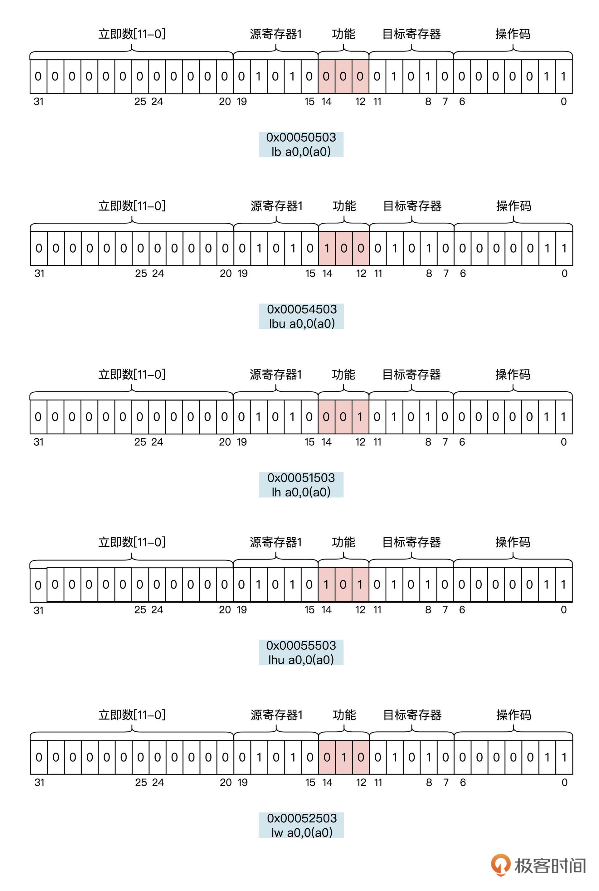
对照上图可以看到，lb、lbu、lh、lhu、lw指令的功能码都不一样，我们可以借此区分这些指令。而这些加载指令的操作码都一样，立即数也相同（都是0），这和我们编写的代码有关。
需要注意的是lw a0,0(a0)指令，上图的情况和反汇编出来的数据可能不一致，这是因为编译器使用了压缩指令。
我还原了lw a0,0(a0)正常的编码，你可以手动在lw_ins函数中插入这个数据0x00052503，进行验证。怎么插入这个数据使之变成一条指令呢？代码如下所示：
.globl lw_ins
#a0内存地址
#a0返回值
lw_ins:
.word 0x00052503 #lw a0, 0(a0) #加载a0+0地址处的字到a0中
jr ra #返回
重点回顾
今天我们一共学习了五条加载指令，分别是加载字节指令、无符号加载字节指令、加载半字指令、无符号加载半字指令、加载字指令，它们可以加载不同大小的数据，同时又能处理数据的符号。
而且这五条指令组合起来，既可以加载不同位宽的数据，又能处理加载有、无符号的数据。这些指令为高级语言实现有无符号的类型变量提供了基础，让我们的开发工作更便利。比方说，在C语言中，实现的各种数据类型：unsigned、int、char、unsigned、char等都离不开加载指令。
最后我给你总结了一张导图，供你参考复习。下节课，我们继续学习储存指令，敬请期待。

思考题
为什么加载字节与加载半字指令，需要处理数据符号问题，而加载字指令却不需要呢？
欢迎你在留言区跟我交流，也推荐你把这节课分享给更多同事、朋友。
22 RISC-V指令精讲（七）：访存指令实现与调试
你好，我是LMOS。
上节课我们说了RISC-V是加载储存体系结构的典型，只有加载指令和储存指令才有资格访问内存。
计算机运算完成的结果，一开始会放在寄存器中，但最终归宿还是内存，此时就需要存储指令发挥作用了。这节课我们就来看看RISC-V提供的存储指令，一共有三条，分别是储存字节指令、储存双字节指令和储存字指令。
课程的代码你可以从这里下载。话不多说，咱们进入正题。
储存字节指令：sb指令
我们先从储存字节指令，即sb指令学起。
这个指令存储的字节单位是一个字节，也就是8位数据。说得再具体一些，这个指令会把一个通用寄存器里的低[7:0]位，储存到特定地址的内存单元里。而这个特定地址，要由另一个通用寄存器和一个立即数之和来决定。
储存字节指令的汇编代码，书写形式如下所示：
sb rs2,imm(rs1)
#sb 储存字节指令
#rs2 源寄存器2
#rs1 源寄存器1
#imm 立即数（-2048~2047）
上述代码中rs1和rs2可以是任何通用寄存器。立即数imm为12位二进制数据，其范围是-2048~2047。因为rs1、rs2以及立即数imm的规定，对后面的sh指令和sw指令同样适用，后面我就不重复说了。
sb指令完成的操作用伪代码描述是这样的：
（[rs1+imm]）= rs2[7:0]
我来为你解释一下伪代码执行的操作。首先取得rs2寄存器第0位到第7位这8位数据，即一个字节。然后，把这个字节数据储存到rs1+imm为地址的内存单元中。
接着是代码验证环节，为了方便调试，我们在工程目录下新建一个store.S文件，并在其中用汇编写上sb_ins函数。代码如下所示：
.text
.globl sb_ins
#a0内存地址
#a1储存的值
sb_ins:
sb a1, 0(a0) #储存a1低8位到a0+0地址处
jr ra #返回
sb_ins函数我已经帮你写好了，只有两条指令，第一条指令把a1寄存器的低8位数据，储存到a0+0地址处的内存单元中，第二条指令就返回了。
现在，我们一起用VSCode打开工程目录，把断点打在“sb a1, 0(a0) ”指令处，按下“F5”键调试一下，效果如下图：

图片里对应的是刚刚执行完sb a1，0(a0)指令之后，执行jr ra指令之前的状态。这时候a0寄存器中的值是0x20a80，这是byte变量的地址，a1是0x80，正是十进制数据128。
我们继续单步调试，返回到main函数中执行printf函数，打印一下byte变量的值，如下图所示：

从图中可以看到，byte变量的初始值为-5。调用sb_ins函数时，我们把byte的地址强制为无符号整数传给sb_ins函数第一个参数，把整数128传给sb_ins函数第二个参数。
C语言调用规范告诉我们，sb_ins函数会通过a0、a1寄存器传递第一个、第二个参数，之后printf函数输出byte变量的值为128，这证明了sb指令是正常工作的。
储存双字节指令：sh指令
接下来要说的是储存半字指令，也是储存双字节指令。它可以把一个通用寄存器中的低[15:0]位，一共16位的数据（即两个字节），储存到特定地址的内存单元中，这个地址由另一个通用寄存器与一个立即数之和决定。
储存半字指令的汇编代码，书写形式是这样的：
sh rs2,imm(rs1)
#sh 储存半字指令
#rs2 源寄存器2
#rs1 源寄存器1
#imm 立即数（-2048~2047）
sh指令完成的操作用伪代码描述如下所示：
（[rs1+imm]）= rs2[15:0]
我来为你解释一下，上面的伪代码执行了怎样的操作。首先取得rs2的第0位到第15位的数据。然后把这两个字节（16位数据）的数据，储存到rs1+imm这个地址的内存单元中。
好，咱们写个代码来验证一下。在store.S文件中，用汇编写上sh_ins函数。代码如下所示：
.globl sh_ins
#a0内存地址
#a1储存的值
sh_ins:
sh a1, 0(a0) #储存a1低16位到a0+0地址处
jr ra #返回
与sb_ins函数一样，sh_ins函数只有两条指令，但第一条指令是把a1寄存器的低16位数据，储存到a0+0地址处的内存单元中，第二条指令同样是返回指令。
现在我们一起用VSCode打开工程目录，在“sh a1, 0(a0) ”指令处打上断点，按“F5”键调试的截图如下所示：

图片对应的是刚刚执行完sh a1,0(a0)指令之后，执行jr ra指令之前的状态，a0寄存器中的值是half变量的地址，a1寄存器中的值是0xa5a5。
我们继续进行单步调试，返回到main函数中执行printf函数，打印一下half变量的值。

如上图所示，half变量的初始值为-1。随后调用sh_ins函数，我们把half的地址强制为无符号整数传给sh_ins函数第一个参数，再把整数0xa5a5传给sh_ins函数第二个参数，之后printf函数输出half变量的值为0xa5a5。这证明了sh指令工作正常。
储存字指令：sw指令
最后，我们来学习一下储存字指令，就是储存32位四字节指令，也是最常用的储存指令，它是把一个32位的通用寄存器，储存到特定地址的内存单元中，这个地址由另一个通用寄存器与一个立即数之和决定。
储存字指令的汇编代码书写形式如下所示：
sw rs2,imm(rs1)
#sw 储存字指令
#rs2 源寄存器2
#rs1 源寄存器1
#imm 立即数（-2048~2047）
上述代码中rs1和rs2可以是任何通用寄存器。立即数imm为12位二进制数据，其范围是-2048~2047。
然后我们看看sw指令完成的操作，对应的伪代码描述如下：
（[rs1+imm]）= rs2
这段伪代码执行的操作就是把rs2的32位数据，即四个字节数据，储存到rs1+imm为地址的内存单元中。
下面我们一起写代码验证一下，在store.S文件中，用汇编写上sw_ins函数。代码如下：
.globl sw_ins
#a0内存地址
#a1储存的值
sw_ins:
sw a1, 0(a0) #储存a1到a0+0地址处
jr ra #返回
sw_ins函数只有两条指令，第一条指令是把a1寄存器储存到a0+0地址处的内存单元中，第二条指令同样是返回指令。
毕竟眼见为实，咱们调试观察一下。用VSCode打开工程目录，在“sw a1, 0(a0) ”指令处打上断点，按下“F5”键调试，如下所示：
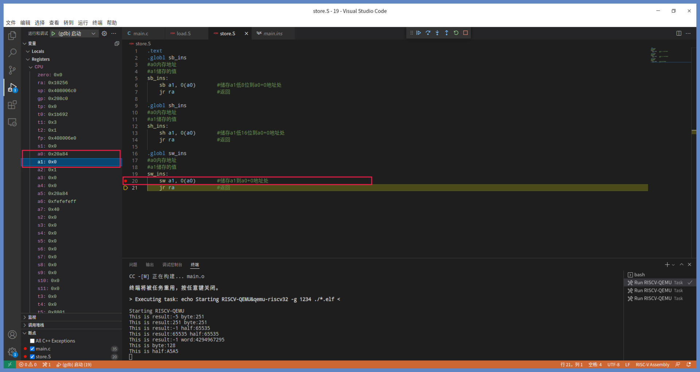
上图是刚刚执行完sw a1,0(a0)指令之后，执行jr ra指令之前的状态。a0寄存器中的值是word变量的地址，a1寄存器中的值是0，执行完这个sw_ins函数后，word变量的值应该变为0了。
我们继续单步调试，执行返回到main函数中执行printf函数，打印一下word变量的值，如下图所示：

可以看到图中word变量的初始值为0xfffffffff，随后调用sw_ins函数，我们把word变量的地址强制为无符号整数传给sw_ins函数第一个参数，把整数0传给sw_ins函数第二个参数，之后printf函数输出word变量的值确实为0。这证明了sw指令工作正常。
我们已经对sb、sh、sw指令进行了调试，了解了它们的功能，现在我们继续一起看看sb_ins、sh_ins、sw_ins函数的二进制数据。
打开终端，切换到该工程目录下，输入命令：riscv64-unknown-elf-objdump -d ./main.elf > ./main.ins，就会得到main.elf的反汇编数据文件main.ins，我们打开这个文件，就会看到上述这些函数的二进制数据，如下所示：
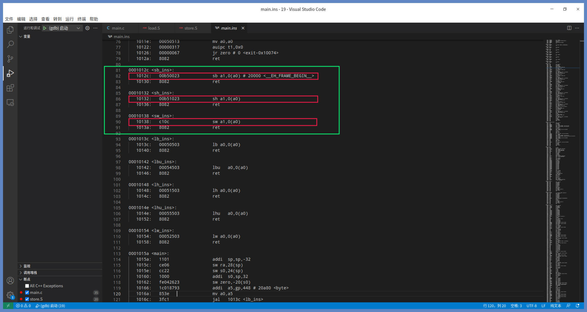
可以看到，在图片里的反汇编代码中不但有伪指令，还有两个字节的压缩指令。编译器为了节约内存，所以会把指令压缩。比如说ret的机器码是0x8082，sw a1,0(a0)机器码是0xc10c，它们只占用16位编码，即二字节。
截图里五条加载指令的机器码与指令的对应关系，你可以参考后面这张表格。

我画了示意图，帮你拆分一下sb、sh、sw指令各位段的数据，这样更容易看清楚它们是如何编码的。如下所示：

对照上图可以看到，sb、sh、sw指令的功能码都不一样，借此就能区分它们。而这些储存指令的操作码都相同，立即数也相同（都是0），这和我们编写的代码有关。
我还想提示你注意一下sw指令，图片里的情况跟反汇编出来的数据可能不一致，原因是编译器使用了压缩指令。图片里我还原的是sw a1,0(a0)正常的编码。
你可以手动在sw_ins函数中，插入0x00b52023这个数据进行验证。怎么插入这个数据使之变成一条指令呢？参考[上节课]还原lw指令的讲解，我相信你这次自己也能搞定它。
关于RISC-V的三条储存指令已经介绍完了，它们可以将字节、双字节、四字节储存到内存中去。实现了保存运算指令运算结果的功能，给高级语言实现各种类型的变量，提供了基础。
重点回顾
今天我们一口气学完了三条储存指令。有了三条储存指令，加上我们上节课学过的五条加载指令，就构成了RISC-V的访存指令。
RISC-V提供的储存字节指令、储存半字指令和储存字指令。储存指令可以把寄存器的运算结果，或者其他数据储存到特定的内存空间中。储存单位可以是一个字节、两个字节，或者四个字节。有了这些指令，不同大小、位宽的数据处理起来都很方便。
运算指令的运算结果，要通过储存指令保存到内存中，这也给高级语言实现各种类型的变量，打下了基础。
我照例用导图梳理了这节课的要点，你可以做个参考。
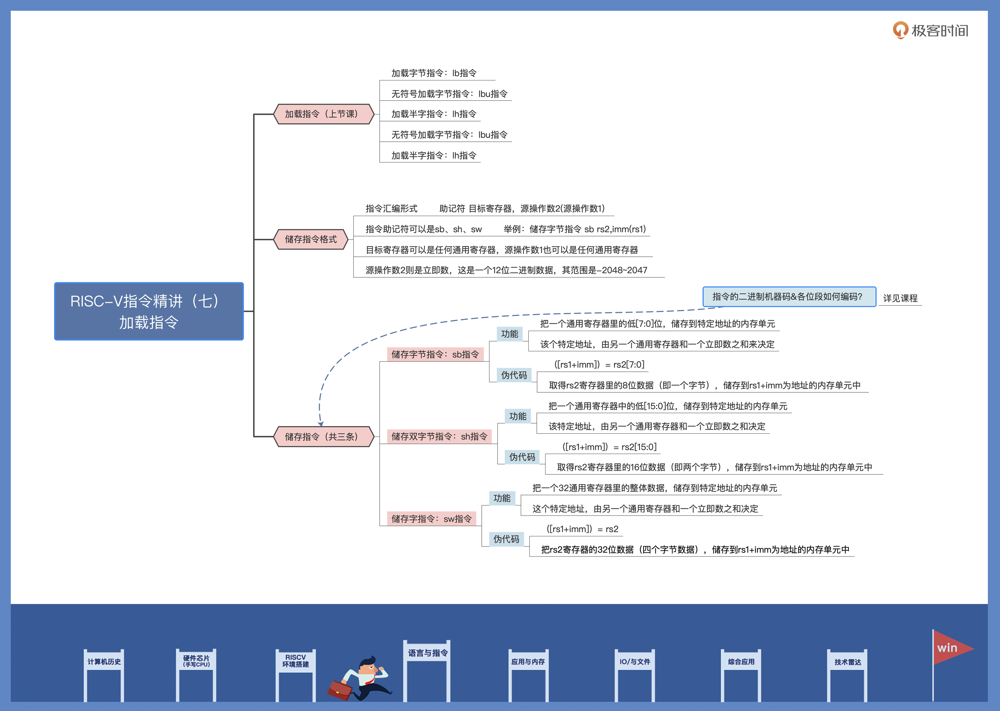
思考题
为什么三条储存指令，不需要处理数据符号问题呢？
期待你在留言区跟我互动，也可以记录一下自己的收获。如果觉得课程还不错，也别忘了分享给更多朋友。
23 内存地址空间：程序中地址的三种产生方式
你好，我是LMOS。
前面我们一起探讨了RISC-V芯片，设计和实现了一个迷你CPU。之后还深入研究了CPU上面运行的语言和指令系统，它们是构成程序的重要要素。依托于芯片和语言、指令，我们就可以编写和执行程序了。
不过我们开发应用的时候，还有个打交道最频繁的模块——内存。很多工程问题你不懂内存，就会举步维艰。你也许觉得内存知识太难了，不但关联知识又多又散乱，而且深挖下去感觉没有尽头。但计算机的硬核基础，内存是必修关卡，只要你跟住我的节奏坚持下来，一定可以把内存的本质、内存系统的来龙去脉都弄明白，一起加油。
这节课，让我们迈出认识内存的第一步，我们先搞清楚CPU怎么访问内存，然后再来分析内存地址从何而来，最终让你建立对内存地址空间的理解。这节课的配套代码，你可以从这里下载。
CPU如何访问内存
CPU怎么访问内存？我们回想一下，之前讲过的高级语言和低级语言转化过程。
我们先思考一下，C语言把我们写出来的变量和函数都转换成了什么呢？如果记不太清了，可以回顾[第十五节课]。没错，C语言把变量名和函数名都转换成了汇编语言里的标号，而汇编语言的标号，就是机器更好理解的符号。符号具体包括符号类型、符号名称和符号地址这几个属性。其中，符号地址是由一个叫链接器的东西生成的。
汇编语言的标号，就表示为一段内存地址的开始。再根据我们RISC-V里访存指令的操作（可回顾[第二十一节课]和[第二十二节课]），进一步分析看看：加载字指令lw指令，它会从一个地址指向的内存单元中，把数据加载到寄存器上；储存字指令sw指令则是跟lw指令相反，把寄存器里的数据存到特定内存单元当中。这些指令里源寄存器和立即数组成的数据，其实就叫内存地址。
结合这些信息，我们就能推出这个结论：CPU正是通过内存地址来访问内存的。这个地址本质上是一个整数数据。而这个整数代表了一个内存单元的索引号，CPU访问内存的时候，硬件的地址译码器会负责把索引号，转换成相应的地址信号和片选信号，帮助CPU“寻路”，找到特定的内存单元位置。
我来给你画图描述一下，对照图解你更容易理解。
从上图中得知，内存最小编址单位为一个字节，一个字节能储存8个二进制位，即给出一个地址，就能够精确地定位到某个内存字节单元。两个连续的字节为半字，储存16个二进制位，四个连续的字节为一个字，也就是储存32个二进制位。
我们对照上图看一下，看起来0~0xFFFFFFFF这之间任意整数形成的地址，都能索引并访问到对应的内存单元。不过这只是理想状态，现实里并非如此。真正的实现方案中，一些地址上对应的不一定是内存单元，还可能是系统寄存器，设备寄存器、设备内存、主内（即我们经常说内存），情况如下图所示：

示意图里描述的更接近真实情况，在一台现代的物理计算机上，各种设备和内存都是统一编址的，不同的地址段能访问到不同的设备。
比如上图中，CPU发出了0x00000004地址，这时经过地址译码，访问的就不是某个内存单元了，而是系统寄存器；如果CPU发出的地址在0xC0000000到0xE0000000之间，就会访问到设备上的内存，而CPU发出的地址是0x60000000到0xBFFFFFFF之间和0x100000000到0x19FFFFFFF之间，才能访问到主存，也就是内存。
还有一些地址并没有对应到具体的设备，即为无效地址，如果CPU访问了无效地址，就会得到无效数据或者收到硬件错误的反馈。
现在，我们已经清楚地知道了，CPU把一个整数数据当成地址，放在地址总线上，由地址译码器选择该地址正确索引的设备或者内存进行访问。
从另一个角度看，数据在物理电路上，是由不同的电子信号的组合来表示的。正是有了这些电子信号组合，才能做到索引相应的设备和内存。CPU通过什么访问内存，以及地址的本质是什么，我们已经找到答案了，用一句话概括就是：CPU通过地址访问内存，地址的本质是整数数据，而整数数据的本质是电子信号的组合。
内存地址从何而来
好，让我们继续分析，搞清楚地址是从何而来的。
你现在已经知道了CPU要通过地址访问内存。但是如果我问你，这个地址从何而来？你是不是有些惊讶，发现自己一下子可能回答不上来，或者只知道个大概。
比较容易想到的思路是，访问内存的是相应的程序，那么自然内存地址是从程序代码中来。只是我们没有认真思考过，程序代码的地址是怎么产生的？
下面，我们就通过几行代码来一步步探索这个问题，代码如下所示：
//ls.S文件
.text
.globl sw_ins
#a0内存地址
#a1储存的值
sw_ins:
sw a1, 0(a0) #储存a1到a0+0地址处
jr ra #返回
//main.c文件
unsigned int word = 0xffffffff;
int main()
{
sw_ins((unsigned int)&word, 0);
return 0;
}
上述代码分别来源于工程目录中的ls.S文件和main.c文件，代码功能逻辑很简单，就是C语言的main函数调用汇编代码sw_ins，对word变量做修改，把它从0xffffffff修改为0。
请你注意，我们现在不是研究代码本身，而是研究代码编译后的链接过程，通过这个线索来分析程序代码地址如何产生。
为此，我帮你写了一个链接脚本来控制链接过程和传递相关信息。同时我们还要修改Makefile文件的内容，让链接脚本生效，Makefile内容如下所示：

上图中红色框中是修改内容，尤其是第7行你要仔细看看，其中-T ld.lds 表示使用ld.lds文件作为链接脚本文件，-Map main.map表示链接器将链接后的内存map信息，输出到main.map文件里。
接下来，我们重点研究一下ld.lds，代码如下所示：
//输出格式
OUTPUT_FORMAT(elf32-littleriscv)
//配置内存空间，起始地址为0x10000，长度为0x50000
MEMORY
{
RAM (xrw) : ORIGIN = 0x10000 , LENGTH = 0x50000
}
//定义输出节
SECTIONS
{
//定义text节包含链接文件的所有以.text开头的节
.text :
{
*(.text) *(.text.*)
} > RAM
//定义data节包含链接文件的所有以.data、.sdata、.sdata2、.rodata开头的节
.data :
{
*(.data .data.*) *(.sdata .sdata.*) *(.sdata2.*) *(.rodata) *(.rodata*)
} > RAM
//定义bss节包含链接文件的所有以.bss、.sbss、.common开头的节
.bss :
{
*(.sbss*) *(.bss*) *(COMMON*)
} > RAM
}
从链接脚本中我们看到，Id.lds文件首先配置了一个内存空间，这个空间从0x10000地址开始，一共有0x50000个字节。然后，链接器把所有参与链接文件里，- 以.text、.data、.sdata、.bss、.sbss、.COMMON开头的节，按照上述链接脚本的顺序，合并成可执行程序文件，这个文件的地址从0x10000地址开始，到0x60000结束。
这个合并过程中，需要对符号进行绑定和地址重定位，我特意为你画了一幅图，展示这个过程。

看了图片，你是不是对链接器生成地址的过程更加清楚了呢？如上图所示，ls.o、main.o文件是可链接的目标文件，格式也是ELF的，其中有.text节、.data节、.bss节等，不同的数据会放到不同的节里，如下表所示：

链接器所做的工作就是根据lds文件中的定义，完成“合并同类项”的整理工作，也就是把相同的节合并成一个更大的节。比如ls.o的.text节与main.o的.text节合并成main.elf的.text节，而.data、.bss节也是类似的合并过程，合并之后就要执行更重要的工作。
程序重定位也叫分配内存地址。我也举个例子帮助你理解，比如main.elf程序要从内存地址0x10000开始，并且这个地址开始存放的是.text节，即指令部分，.data节放在.text节之后。
链接器根据.text节的大小，就能算出.data节的开始地址。比如在上面的例子里，就是0x10030。.data节中有一个变量word是一个字大小，所以word变量地址会从0x10030开始存放，占用4字节，下一个变量地址将从0x10034开始。
既然word变量存放内存地址是0x10030，那么链接器就需要修改指令，具体就是修改指令中表示word变量地址的数据，让地址数据变成0x10030，或者通过一种计算方式得到0x10030，这样程序中的相关指令才能最终访问到word变量。这也是在main.o中的main函数里，一些指令数据与main.elf中的main函数指令数据不一样的原因。
还有一个关键的地方我再讲讲，main函数中调用了sw_ins函数，链接器也要进行处理，确保jalr指令能跳转到sw_ins函数的地址上，即0x10000地址。
链接器产生地址的过程我们讲完了，概括说就是链接多个程序模块，并且分配程序在运行过程中的地址。
当然了，除了这种方式，你可以在程序代码中直接给出一个地址，代码如下：
int main()
{
//把整数0x20000强制转换为int类型的指针
int *p = (int*)0x20000;
*p = 0;
//动态分配一个int类型大小的内存空间，其首地址返回给addr指针
void* addr = malloc(sizeof(int));
return 0;
}
这段代码就是让p直接指向0x20000地址，然后向这个地址上写入0。不过这个操作极其危险，除非你确切地知道自己在干什么，因为0x20000可能是其它重要数据，也可能不是真正的内存单元，而是设备寄存器，更可能什么也没有，即这个地址没有连接任何有效设备。
代码中的第三种情况是程序在运行过程中动态分配的内存，返回该内存的首地址，这相对于第一种方式更加安全可靠。
现在我们已经搞清楚了程序中的地址是怎么产生的：第一种方式是链接器；第二种方式是直接定义；第三种方式是动态分配内存。
物理地址空间和虚拟地址空间
我们已经搞清楚了，地址从何而来，但一个地址肯定身处某一个地址空间中，我们下一个探讨话题正是地址空间。
首先，地址不过是一个整数而已，一旦这个整数被编码到CPU相应访存指令中的相关位段里，CPU就会把它放到地址总线上。这样CPU访问内存的时候，就会通过地址译码器获得这段整数信息，从而索引到具体的设备单元上。这个设备单元可以是设备寄存器，可以是内存单元。
那么地址空间其实就是一个这样的整数所表示的范围。具体落实到CPU电路上，就是地址总线位数所表示的数据范围。
比方说，CPU有8根地址线，它能编码2的8次方，即256个数据，地址0到地址255这个地址数据的范围，其实就是这个8位地址总线的CPU的地址空间；如果是32位地址总线的CPU，那么它地址的空间范围就是0~0xFFFFFFFF。从0到0xFFFFFFFF，这之间的每个整数编码就是一个地址，合起来就是地址空间。
那什么是内存地址空间呢？当然就是能索引到内存单元的地址合集。我们再稍微扩展一下，你知道CPU的物理地址空间吗？其实它就是CPU地址总线位数所表示的数据范围，由于不同的CPU，甚至同一体系CPU的不同版本，其地址总线数设计实现不同，物理地址空间也是不同的。
聊完了物理地址空间，咱们当然还得说说虚拟地址空间。现在的计算机系统中，我们写的程序链接时的地址和运行时的地址，都使用了虚拟地址。
虚拟地址空间的大小和CPU中的一个设备MMU（内存管理单元）有关。虚拟地址之所以称为虚拟地址，是因为这种地址是假的，它不能真正索引到具体的设备单元，无论该单元属于设备寄存器还是内存，自然也就无法访问内存。还需要一个转换机构，把虚拟地址转换成真正的物理地址才能访问相应的设备。这个转换机构就是CPU的MMU，关于MMU的细节，这里我先卖个关子，放在后面的课程再说。
讲到这里，我们知道了，地址空间和我们所在的自然空间的寓意不是一样的，它们仅仅是为了表示某一位宽下的二进制数所有的编码合集。所谓内存地址空间，自然也就是内存地址编码的合集。
有了这个概念，我们就知道，程序指令在内存中是如何组织的，一旦我们的程序出现了问题我们就能精准地分析定位问题所在。同时，我们也明白了CPU如何通过地址访问内存，读取其中指令和数据，也就是CPU运行程序的基本逻辑机理。
重点回顾
今天我们为了弄明白内存地址空间是怎么一回事儿，做了不少探索，现在我带你回顾一下这节课的要点。
首先我们分析了CPU如何访问内存。一个整数数据就是一个地址，CPU会把该数据放在地址总线上，由地址译码器选择该地址正确索引的设备或者内存进行访问。
访问内存要先知道“地址”，那内存地址是从何而来的，怎么产生的呢？我们结合例子，了解到内存地址有几种产生方式：一种是链接器对程序重定位后执行地址绑定，这地址是静态的；第二种是在代码中直接定义地址；第三种是动态分配内存，返回内存空间的首地址。
明白了CPU访问内存的方式，也知道了内存地址如何产生，我们再理解内存地址空间也不是难事儿了。所谓内存地址空间，本质就是内存地址位宽下地址编码的合集。
内存的相关知识才刚刚开始，内存知识相对有点挑战，但跟着我的步伐，你也可以搞懂里面的门道。这节课最后我捎带讲了讲虚拟内存地址空间，更多虚拟内存的故事，且听我下节课分解。
思考题
你觉得链接器使用的地址是物理内存地址，还是虚拟内存地址？
欢迎在留言区记录你的思考或疑问，也推荐你把今天这节课分享给更多朋友，说不定也能刷新他对内存的认识。
24 虚实结合：虚拟内存和物理内存
你好，我是LMOS。
上一课中学习了内存地址空间，我们搞清楚了内存地址与地址空间的本质。
今天我们开始学习虚拟内存与物理内存。其实虚拟内存也好，物理内存也罢，我们从储存并索引数据的角度来看，内存的重要组成部分就两个：一个是地址，另一个就是储存字节单元，即能存放8个二进制位的容器。把两者合起来，我们可以将内存理解为能索引到具体储存字节单元的地址集合。
这节课我会带你解决以下三个问题：
- 虚拟内存的本质是什么？-
- 物理内存是什么，它的结构长什么样？-
- 虚拟内存如何与物理内存结合在一起，真正实现储存数据的功能？
课程配套代码你可以从这里下载。让我们带着上面的问题，正式开始今天的探索之旅吧！
虚拟内存
上节课我们了解了内存地址的产生方式，以及应用程序的链接过程，也知道了内存就是能索引到具体储存单元的地址集合。但是程序中的地址能否索引到具体储存单元呢？具体的储存单元，又是如何分配的呢？下面我们用两个问题来说明其中的原理。
第一个问题
我的第一个问题来了，应用程序中使用的地址是什么内存地址？是不是感觉情况有很多种，一时很难回答清楚？遇到这种状况不要慌，我们只要动手写一个简单的程序就可以验证。
好，我们立刻动手写一写，代码如下：
#include "stdio.h"
#include "stdlib.h"
void func_a()
{
//定义地址：0x40000000
int* p = (int*)0x40000000;
printf("内存地址:%p\n", p);
//向该地址写入数据
*p = 0xABABBABA;
printf("内存地址:%p处的值:%x\n", p, *p);
return;
}
int main()
{
func_a();
return 0;
}
上述应用程序非常简单，我们在main函数中调用函数func_a，而在函数func_a中，我们定义一个整型指针，C语言中指针就是内存地址，其地址值为0x40000000。
代码我给你存到了课程相关的工程目录中，你可以打开工程目录make一下，就会自动编译好。然后，你需要在终端下运行这个main.elf程序，首先会出现“内存地址：0x40000000”，接着会出现“段错误，程序异常退出”的提示。
出现了段错误提示，在你的预料之中么？我来解释一下，为什么会出现这种情况，这是因为我们使用了一个没有分配的地址。很显然，如果一个地址真的能索引到内存，该地址就能访问内存，除非这地址是个假地址，在内部需要某种机制进行转换才能访问内存。这个转换机制可能需要一些表或者数据结构进行控制，并且这个控制权掌握在操作系统的手里。
由于操作系统管理内存的规则，是先分配后使用，所以，我们就猜想操作系统分配内存的时候，就会处理控制地址转换的相关表和数据结构。接下来我们写段代码，来验证一下猜想，如下所示：
#include "stdio.h"
#include "stdlib.h"
void func_b()
{
//分配内存，返回其地址
int* p = (int*)malloc(sizeof(int));
if(p)
{
printf("内存地址:%p\n", p);
//向该地址写入数据
*p = 0xABABBABA;
printf("内存地址:%p处的值:%x\n", p, *p);
}
return;
}
int main()
{
func_b();
return 0;
}
这次我们编译运行，就会正确地输出结果了。
其实malloc函数在内部最终会调用Linux内核的API函数，在该进程的虚拟地址空间中分配一小块虚拟内存，返回其首地址。这个过程我用一幅图来为你展示，如下所示：

由于代码优化的原因，malloc函数并不是每次调用，都会导致Linux内核建立一个vm_area_struct数据结构。我们假定malloc函数导致Linux内核建立了一个vm_area_struct数据结构，该结构中有描述虚拟内存的开始地址、大小、属性等相关字段，表示已经分配的虚拟内存空间。
许多个这样的结构可以一起表示进程的虚拟地址空间分配情况。但是，这个从vm_area_struct数据结构中返回的地址，仍然是虚拟的、是假的，是不能索引到内存单元的，直到访问该地址时，会发生另一个故事，如下图所示：

上图中CPU拿着一个虚拟地址访问内存，首先会经过MMU，对于调用malloc函数的情况是该虚拟地址没有映射到物理内存，所以会通知CPU该地址禁止访问。
上图中1到4个步骤为硬件自动完成的，然后CPU中断到Linux内核地址错误处理程序，软件开始工作，也就是说Linux内核会对照着当前进程的虚拟地址空间，去查找对应的vm_area_struct数据结构，找不到就证明虚拟地址未分配，直接结束，进程会发出段错误；若是找到了，则证明虚拟地址已经分配，接着会分配物理内存，建立虚拟地址到物理地址的映射关系，接着程序就可以继续运行了。
当然了，实际情况比图中的复杂，这里我们只是要理清楚malloc函数的逻辑，并且明确malloc是返回的虚拟内存地址就可以了。
第二个问题
我们要想清楚的第二个问题就是，直接使用物理内存地址，会出现什么后果？我们来看一个程序，下面这段代码是一个简单版的memset函数。
void mymemset(void* start, char val, int size)
{
char* buf = (char*)start;
for(int i = 0; i < size; i++)
{
buf[i] = val;
}
return;
}
我们提出一个假设：这个函数被不同的应用程序调用，且使用的地址就是物理地址，能直接访问物理内存单元。
你可以想一想，如果假设成立，恶果就是一个程序可以改变另一个程序的内存，甚至是全部的内存。想想吧！这是何等可怕。通过这个例子，我们发现物理地址不能有效地隔离内存，达到保护内存的结果。
想要隔离内存，就需要依赖虚拟内存这个东西。我画了一幅图，带你总结一下虚拟内存的本质，如下所示：

由上图可知，我们各种应用都可以拥有从0到最大虚拟地址的完整的虚拟内存空间，并且可以任意使用这个虚拟内存空间。每个应用，都认为自己拥有整个内存，这一点可以从所有的应用程序使用相同的链接脚本进行链接得到佐证。各个应用程序调用malloc函数，可能得到相同地址，是另一个佐证。
我们现在终于知道了，虚拟地址真的只是一个整数，一系列的这种整数集合，就构成了虚拟内存空间。这个整数能索引一个字节的虚拟内存单元，但这个虚拟内存单元不会对应到真正的物理设备，因此它虽然可以独立存在，但却需要下层的物理内存作为支撑，才能实现访问和储存数据。
物理内存
上一课中，我们了解到物理地址空间是CPU地址线位宽所能表示最大整数集合，只是一个地址，它能索引物理设备，或者什么都不索引，这里的物理设备中就包括了物理内存。
下面我们来看看真实的内存长什么样，如下所示：

从上图可以看到，在 PCB 板上有内存颗粒芯片，主要是用来存放数据的。SPD 芯片用于存放内存自身的容量、频率、厂商等信息。还有最显眼的金手指，用于连接数据总线和地址总线、电源等。
其实内存应该叫 DRAM，即动态随机存储器。内存储存颗粒芯片中的存储单元是由电容和相关元件做成的，电容存储电荷的多、少代表数字信号 0 和 1。而随着时间的流逝，电容存在漏电现象，就会引起电荷不足的情况，导致存储单元的数据出错。所以，DRAM 需要周期性刷新，以保持电荷状态。
DRAM 结构比较简单且集成度很高，通常用于制造内存条中的储存颗粒芯片。我们无需过多关注内存硬件层面的技术规格标准，这里重点需要关注的是，逻辑上内存和硬件系统的连接方式和结构。
我还是画幅图来说明吧，这样方便你建立直观印象，如下图所示：
我们假定从物理地址0开始，索引的是物理内存，CPU发出的地址是虚拟地址，经由MMU转换变成物理地址，物理地址经由地址译码单元就会对应到具体的内存字节储存单元。一个字节单元能储存8个二进制位，即一个地址能对应到8个二进制位。
你可以通过dmsg命令，查看你物理机上的情况。在我的x86机器里，情况如下图所示：

从图里我们可以看到，usable类型的物理地址区间，对应的是DRAM，即内存。其它的则是保留的或者硬件设备的地址空间，这些空间程序是不能当作内存来使用的。
讲到这里，我们就明白了，逻辑上物理内存相当于几个地址上不连续的字节数组，始终有一个物理地址能索引到其中一个字节。
虚实结合
提出虚拟内存这个概念，一是为了让应用认为自己享有完整的地址空间，拥有整个内存的使用权。二是要对物理内存进行保护，即使各个应用程序都存放在物理内存之中，也不能随意访问自己的物理内存，更不能侵犯别的应用程序所占用的物理内存，不然就会出现互相改写对方内存的情况，一旦出现这样的情况后果就严重了，任何应用程序都不能正常运行了。
那接下来要考虑的问题就是，虚拟内存跟物理内存要如何对应起来？
虚拟内存必须要落实到物理内存才能真正完成工作，最简单的方案是让虚拟地址能够索引到物理内存单元，但是虚拟地址和物理地址显然不能一一对应，如果那样的话，虚拟地址等于物理地址且不受控制，这样虚拟地址就没有任何意义了。
因此，我们需要在虚拟地址空间与物理地址空间之间加一个机构，这个机构相当于一个函数：p=f(v) 。对这函数传入一个虚拟地址，它就能返回一个物理地址。该函数有自己的计算方法，对于没法计算的地址或者没有权限的地址，还能返回一个禁止访问。
这个函数用硬件实现出来，就是CPU中的MMU，即内存管理单元。CPU发出的虚拟地址首先经过MMU，MMU内部计算得出物理地址，最后用物理地址去访问内存。MMU的结构如下图所示：

上图中，展示了CPU发出的虚拟地址经过MMU转换出物理地址，进而访问内存的过程，但我们并没有弄清楚MMU是使用什么方法进行转换的，所以下面我们继续探讨MMU的地址转换过程。
你不妨想一想，把一个数据转换成另一个数据，最简单的方案是什么？当然是建立一个对应表格，对照表格进行查询就行了。MMU也是使用一个地址转换表，但是它做很多优化和折中处理。不做任何折中处理的话，这种方案是无法实施的。
你可以想象一下32位的地址空间，有4G个虚拟地址和4G个物理地址。在这种情况下，每8个字节存放两个地址数据，想要装下所有的地址，这个表有多大？应该放在哪里？查询代价有多大？所以这个方案直接pass掉。
我们现在来看看，通常情况下MMU是如何解决这个问题的，一共有三个关键环节。
首先，MMU对虚拟地址空间和物理地址空间进行分页处理，一个页大小可以是4KB、16KB、2MB、4MB、1GB不等。这是为了增加地址的粒度，避免采用每个字节一个地址，现在一页一个地址，地址数量就会大大减少，从而减少转换表的大小。
其次，MMU采用的转换表也称为页表，其中只会对应物理页地址，不会储存虚拟地址，而是将虚拟地址作为页表索引，这进一步缩小了页表的大小。
最后MMU对页表本身进行了拆分，变成了多级页表。假如不分级，4GB内存空间 ，按照4KB大小分页，有1M个页表项，每个页表项只占用4个字节，也需要4MB空间。如果页表分级，在建立页表时就可以按需建立页表，而不是一次建立4MB大小的页表。
我们一起来画一幅图来描述一下这个过程，如下所示：

对照图片我们可以看到，虚拟内存页和物理内存页是同等大小的，都为4KB，各级页表占用的空间也是一个页，即为4KB。MMU把虚拟地址分为5个位段，各位段的位数根据实际情况有所不同，按照这些位段的数据来索引各级页表中的项，一级一级往下查找，直到页表项，最后用页表项中的地址加页内偏移，就得到了物理地址。
我再画一幅图，为你描述这一过程。
看到这幅图，我们就清楚了MMU用虚拟地址转换物理地址的过程。如果转换成功就可以直接访问内存了；但如果转换失败，MMU就会通知CPU，地址转换失败，让CPU产生一个异常中断，进而通知操作系统内核，让操作系统内核来处理这个异常，就像malloc分配内存的过程那样。
我们已经知道了虚拟地址如何转换成物理地址，但是如果只是按部就班地转换可不行，别忘了，还需要对物理内存进行保护。这个保护物理内存的问题的关键就是，想清楚一个虚拟地址在什么情况下能被转换成物理地址。
这就要说到MMU是如何控制转换动作的。要进行控制就需要相关的控制信息，聪明如你，大概已经猜到了，控制信息就放在页表项中，MMU在转换过程中首先就会查看那些信息，以此作出判断。
下面我们看一下控制信息的格式，如下所示：
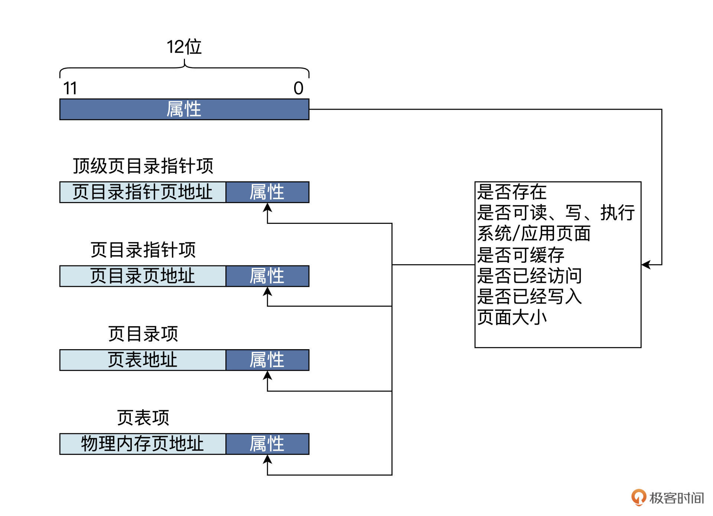
从上图中可以看到，页表项中的低12位为属性位段，这里保存一个物理内存页面的读写、执行、存在的相关权限，还有页面是否存在、可不可以缓存，是否已经访问或者写入，大小等信息。这些信息统统编码在12个二进制位中。
为什么表示各种页面地址的页表项，能让出12位用于编码这些信息呢？这是因为一个页面最小也是4KB且与4KB对齐，那么页面开始地址的低12位永远为0，所以可以挪为它用。
到这里，我们就已经搞清楚虚拟地址如何转换成物理地址，并且知道了MMU如何控制转换过程，恭喜你解锁了虚实结合的思路和过程。
现在你可能隐约感觉到，只要操作系统牢牢控制页表数据，就能实现对内存的完全控制和保护，使得各个应用程序在自己的虚拟地址空间中安全地运行，不被打扰，也不能打扰别人。每个应用程序都有相同的虚拟内存，但却占用着不同的物理内存。
重点回顾
今天的课程就要结束了，下面我们来回顾一下今天的内容。
首先我们从两个实际问题出发，研究了虚拟内存的本质。虚拟内存的应用，一是为了保护内存，二是为了限制访问内存。让应用程序拥有独立的地址空间，误以为自己能享用全部的内存。
接着我们分析了物理内存，了解了DRAM的特性和结构，因为DRAM就是我们常说的内存设备。这里你重点要关注的是内存的逻辑结构和系统连接方式。
最后我们讨论了虚实结合究竟是怎么实现的。硬件工程设计了MMU，让它把虚拟内存地址通过页表中的信息转换成物理地址，并控制转换过程。如果转换失败就会通知CPU，然后CPU产生地址异常中断，最后由操作系统处理这个异常。操作系统将会通过修改页表的数据来修复这个问题，进而完全控制内存的访问。
我画了一张导图梳理这节课内容，供你参考。

应用程序的虚拟地址空间里还有更多奥秘，我会在下节课继续为你展开，敬请期待。
思考题
请问页表数据究竟放在什么地方呢？
欢迎你在留言区跟我交流互动，说说你对虚实结合的认识。如果觉得这节课还不错，也推荐你把它分享给身边的朋友。
25 堆&栈：堆与栈的区别和应用
你好，我是LMOS。
在上一课中，我们讲了虚拟内存和物理内存，明白了虚拟内存是一个假想的地址空间，想要真正工作运行起来，就必须要经过MMU把虚拟地址转换成物理地址，寻址索引到真正的DRAM。
今天，我们继续深入到应用程序的虚拟内存地址空间中，弄清楚一个常规应用程序的虚拟内存地址空间中都有哪些东西。首先，我们看看里面的整体布局，然后看看里面的堆与栈，最后我还会重点带你了解一下堆与栈的区别和应用场景。
课程的配套代码你可以从这里下载。
应用程序的虚拟内存布局
你可以把应用程序的虚拟内存，想成一个房子。房子自然要有个合理的布局，有卧室、客厅、厨房这些不同的房间。同样地，应用程序的虚拟内存，承载着应用程序的指令、数据、资源等各种信息。
既然我们想要观察应用程序的虚拟内存布局，首先得有一个应用程序。当然，你也可以观察系统正在运行的应用程序，但是这些应用往往是很复杂的。
为了找到一个足够简单、又能说明问题的观察对象，我们还是自己动手写一个应用，代码如下所示：
#include "stdio.h"
#include "stdlib.h"
#include "unistd.h"
//下面变量来自于链接器
extern int __executable_start,etext, edata, __bss_start, end;
int main()
{
char c;
printf("Text段，程序运行时指令数据开始:%p,结束:%p\n", &__executable_start, &etext);
printf("Data段，程序运行时初始化全局变量和静态变量的数据开始:%p,结束:%p\n", &etext, &edata);
printf("Bss段，程序运行时未初始化全局变量和静态变量的数据开始:%p,结束:%p\n", &__bss_start, &end);
while(1)
{
printf("(pid:%d)应用程序正在运行，请输入:c,退出\n", getpid());
printf("请输入:");
c = getchar();
if(c == 'c')
{
printf("应用程序退出\n");
return 0;
}
printf("%c\n", c);
}
return 0;
}
我来给你解释一下这个简单的应用程序，开始的三个printf函数会输出该应用程序自身的三大段，即Text段、Data段、Bss段的开始、结束地址，这些地址由链接器产生，都在应用程序的虚拟内存空间中。Text段、Data段、Bss段中包含了什么，在代码里我已经做了说明，只是Bss段并不在应用程序文件中占有空间，而是操作系统加载应用程序时，动态分配空间并将其初始化为0。
由于我们要观察应用程序在运行中的虚拟内存布局，这就需要人为地控制应用程序退出，而不是不直接运行完就退出，导致我们没办法观察。所以，我们要在一个死循环中，输出应用程序对应进程的id和提示信息，然后等待我们下一步的输入。如果输入c则退出，否则输出信息，继续循环。
你现在需要把这个应用程序编译并运行起来。其实这个工作并不复杂，只需要进入对应的工程目录，make一下，再make run就可以把程序运行起来了。
要如何才能观察到应用程序的虚拟内存布局呢？这在Windows下非常困难，但是Linux对开发人员很友好，它提供了一个proc文件系统，这个目录下有所有应用程序进程的相关信息，每个进程一个文件夹，文件夹的名称就是进程的id，这就是上述代码中要打印进程的pid的原因。
每个进程目录下，包括一个maps和smaps文件，后者更为详细，我们只要用后面的命令读取它们就行了。
sudo cat /proc/59916/maps > main.map
#或者
sudo cat /proc/59916/smaps > main.map
上述命令是我机器上的情况，59916是我运行程序后给出的pid，上述命令就是把/proc/59916/maps 或者 smaps 读取输出到main.map文件中，我们打开main.map文件，看到的情况如下图所示：

对照截图我们可以看到，每一行都表示一个应用进程虚拟内存中的一个区段。第一列表示该区间的起始、结束虚拟地址。第二列是该区段的属性，r代表读、w代表写、x代表执行、p代表私有。最后一列是该区段的内容属于哪个文件。
我们发现，一个应用程序运行之后，它的虚拟内存中不仅仅有它自身的指令和数据，main.elf一共有5个区段，包含了text、data、bss，还有其它的文件内容，比如共享动态链接库。共享动态链接库也是一种程序，可以通过应用调用其功能接口。
同时，我们也注意到了后面要详细探索的堆、栈，我为你画幅图总结一下，如下所示：

应用程序自身的段，取决于编译器和链接器的操作，堆段、内存映射段、栈段、环境变量和命令行参数段，这取决于操作系统的定义。需要注意的是，堆段和栈段的大小都是动态增加和减少的、且增长方向相反。堆是向高地址方向增长，栈是向低地址方向增长。这就是一个应用程序被操作系统加载运行后的虚拟内存布局。
堆
下面我们将重点关注堆和栈。我们经常把堆栈作为一个名词，连在一起说，但这其实并不准确。因为堆是堆而栈是栈，这是两个不同的概念，不可以混为一谈。
在计算机学科里，堆（heap）是一类特殊的数据结构的统称，我们通常把堆看作一棵树的数组对象。堆具备这样两个性质：一是堆中某个结点的值总是不大于或不小于其父结点的值；二是堆总是一棵完全二叉树。
不过，我们今天要关注的重点，是操作系统为应用程序建立的堆。所以这节课要探讨的“堆”，不具有数据结构中对堆定义的完整特性，你可以只把它看作一个可以动态增加和减少大小的数组对象。
简单点说，堆就是应用程序在运行时刻调用malloc函数时，动态分配的一块儿内存区域，有了它，就能满足应用程序在运行时动态分配内存空间，从而存放数据的需求了。
你可以结合后面的示意图来理解。

由上图可以看出，堆其实是虚拟内存空间中一个段，由堆的开始地址和结束地址控制其大小，有一个堆指针指向未分配的第一个字节。所以，堆在本质上是指应用程序在运行过程中进行动态分配的内存区域，堆的管理通常在库函数中完成。
之所以叫做堆，是因为通常会使用堆这种数据结构来管理分配出来的这块内存，但也可以使用更简单的方法来管理，下面让我们看看Linux是如何对堆区进行操作的。
关于如何得到上图右边的map文件，可以参考前面应用程序虚拟内存布局的那部分内容。
上图代码中的sbrk函数是库函数，它会调用Linux内核中的brk系统调用。这个brk系统调用，用于增加或者减少进程的mm_struct中的堆区指针brk。
由于堆区指针始终指向未分配的堆区空间，brk系统调用会首先保存当前的brk到临时的tmpbrk，然后让当前brk加上传进来的大小，赋给brk，最后返回tmpbrk，这样就实现了堆区内存的分配。你可以看到图中三次调用sbrk函数返回的地址，确实落在应用程序的堆区内。
分配的地址也是从低到高，这也验证了我们之前所说的堆的增长方向。你也可以自行阅读Linux内核中，brk系统调用函数的代码进行考证，尽管内核代码中的细节很多，但核心逻辑和我们这里描述的相差无几。
堆也有界限，虽然可以调整，但却不能无限增加其大小。堆到底可以“占多大面积”，这取决于虚拟地址空间的大小和操作系统的定义。
在堆区分配内存速度很快，为什么呢？根据前面的信息可知，在堆区分配内存，只需要增加堆指针就行了，因此分配速度很快。由于实现分配的大小与请求分配大小是相同的、且地址也是连续的，所以它不会有内存碎片的情况。
但这个分配方式有一个致命的缺点，释放堆区中的内存不会立即见效。比如上述代码中，分配了alloc2之后，释放alloc，虽然这时currheap与alloc2之间有空闲内存，这时也是不能分配的，由此产生了内存空洞，只有等alloc2也释放了，内存空洞才会消失。
现在我们已经知道了操作系统为应用程序建立的堆，不同于数据结构中的堆。应用程序的堆区，不过是一个动态增加或减少的内存空间，用于应用程序动态分配内存，它的分配性能很好，但会产生内存空洞。
好，堆就说到这里，我们接下来去研究栈。
栈
说到栈，你应该想到存储货物的仓库或者供旅客歇脚住宿的客栈，那么引入到计算机领域里，就是指数据暂时存储的地方，所以才有了后面的压栈、出栈的说法。
虽然应用程序的堆区和数据结构中的堆不是一回事儿，但应用程序的栈区确实就是数据结构的那个栈。栈是支持程序运行的基本数据结构，它跟计算机硬件，比如CPU的栈指针寄存器、操作系统息息相关，还跟编译器关系密切。
我们先来看看栈的本质是什么，再分析它怎么用。
栈作为一种数据结构，相当于只能在一端进行插入和删除操作的特殊线性表。它按照后进先出的原则存储数据，先进入的数据被压入栈底，最后进入的数据在栈顶，需要读数据的时候从栈顶开始弹出数据，最后进入的数据会被首先读出来。
你可以把栈想象成一个桶，你往桶里压入东西就是压栈，你从桶里拿出东西就是出栈。但是要记住，你只能从桶的最上面开始拿，这就是栈。如下图所示：

由于CPU的硬件特性，导致栈是从内存高地址向内存低地址增长的，所以实际应用程序中的栈更像是一个倒立的桶，栈其实也像一个反过来的堆。
栈有两个基本的操作：压栈和出栈，有时也称为压入和弹出。压入操作就是栈指针减去一个栈中对象的大小，然后将对象写入栈指针对应的内存空间中；而弹出是将栈指针指向的对象读出，然后将栈指针加上一个栈中对象的大小，从而指向栈中的前一个对象。
前面我们说过栈是和计算机硬件相关的，那是因为CPU很多指令都依赖于栈，例如x86 CPU的 call、ret、push、pop等指令，push和pop是栈的压入和弹出指令，call是函数调用指令，它把下一条指令的地址压入栈中，而ret指令则将call指令压入栈中的地址弹出，实现函数返回。
栈还和编译器，特别跟C语言编译器有关，这是因为我们在函数中定义的局部变量，就是放在栈中的。C语言编译器会生成额外的代码，来为局部变量在栈中分配和释放空间，自动处理各个变量的生命周期，不需要程序员手动维护，更不用担心局部变量导致内存泄漏，因为C函数返回时会自己从栈中弹出变量。栈的先进后出的特性，能保证被调用函数可以使用调用者函数的数据，反过来就不行了。
另一个重点是函数的调用和返回，也是依赖于栈，所以C语言想要正常工作，必须要有栈才行。下面我们写代码验证一下。
我们来写两个函数，主要就是打印自身的三个局部变量的地址，stacktest2函数被stacktest1函数调用，而stacktest1函数最终会被main函数所调用。打印这些局部变量的地址，是为了方便我们查看这些变量放在了内存的什么地方。代码如下：
void stacktest2()
{
long val1 = 1;
long val2 = 2;
long val3 = 3;
printf("stacktest2运行时val1地址:%p val2地址:%p val3地址:%p\n", &val1, &val2, &val3);
return;
}
void stacktest1()
{
long val1 = 1;
long val2 = 2;
long val3 = 3;
printf("stacktest1运行时val1地址:%p val2地址:%p val3地址:%p\n", &val1, &val2, &val3);
stacktest2();
return;
}
按照前面的描述，C函数的局部变量是放在栈中的，现在我们运行这个程序看一看，运行截图如下所示：

由上图可以看出，两个函数的三个变量都落在了应用程序的栈区，我们可以用课程开头的命令得到图中的map文件，就可以看到应用程序栈区的地址区间的范围了。
再结合前面说的栈区空间是从高地址向低地址方向增长继续分析。我们首先看到的是stacktest1函数的三个变量，其地址从高到低每次会下降8个字节，这就是因为long类型在64位系统上占用8字节的空间。然后是stacktest2函数的三个变量，它们的地址要远低于stacktest1函数的三个变量的地址，这是因为stacktest2函数是被stacktest1函数调用的。
现在我们已经知道了，栈是现代计算机运行不可缺少的基础数据结构。本质上，栈就是动态增长的内存空间，它遵守先进后出的原则，在此基础上就定义了两个操作：压入和弹出。
重点回顾
今天我们学习了应用虚拟内存布局。需要区分清楚的是，堆是堆、栈是栈，它们之间区别很大。理解了这节课，相信你也能清晰地把堆和栈的本质讲给身边的同学了。
现在我们来回顾一下这节课的重点内容。首先，我们从应用程序的虚拟内存空间布局出发，了解了应用程序虚拟内存空间中都有什么。除了程序自身的指令和数据，虚拟内存空间里包括有堆区、内存映射区、栈区、环境变量与命令行参数区。
然后，我们重点研究了堆，发现应用程序虚拟内存空间的堆区，跟数据结构里的堆并不是一回事儿，它只是一个可以从低地址向高地址动态增长的内存空间，用于应用程序动态分配内存。
最后，我们探讨了栈。硬件、应用程序、高级语言编译器，都需要栈。它是一种地址由高向低动态增长的内存空间，并且定义了压栈、出栈两个操作，遵守先进后出的原则。C语言的运行环境必须要有栈，栈是现代计算机运行的基础数据结构。
这节课的导图如下，供你参考回顾。

思考题
你觉得堆、栈空间是虚拟内存空间吗？如果是，请问是在什么时候分配的物理内存呢？
期待你在留言区记录自己的思考或疑问，积极参与是提升学习效果的秘诀。如果觉得这节课不错，别忘了分享给更多朋友。
计算机基础实战课
- 00 开篇词 练好基本功，优秀工程师成长第一步.md
- 01 CISC & RISC：从何而来，何至于此.md
- 02 RISC特性与发展：RISC-V凭什么成为“半导体行业的Linux”？.md
- 03 硬件语言筑基（一）：从硬件语言开启手写CPU之旅.md
- 04 硬件语言筑基（二）_ 代码是怎么生成具体电路的？.md
- 05 指令架构：RISC-V在CPU设计上到底有哪些优势？.md
- 06 手写CPU（一）：迷你CPU架构设计与取指令实现.md
- 07 手写CPU（二）：如何实现指令译码模块？.md
- 08 手写CPU（三）：如何实现指令执行模块？.md
- 09 手写CPU（四）：如何实现CPU流水线的访存阶段？.md
- 10 手写CPU（五）：CPU流水线的写回模块如何实现？.md
- 11 手写CPU（六）：如何让我们的CPU跑起来？.md
- 12 QEMU：支持RISC-V的QEMU如何构建？.md
- 13 小试牛刀：跑通RISC-V平台的Hello World程序.md
- 14 走进C语言：高级语言怎样抽象执行逻辑？.md
- 15 C与汇编：揭秘C语言编译器的“搬砖”日常.md
- 16 RISC-V指令精讲（一）：算术指令实现与调试.md
- 17 RISC-V指令精讲（二）：算术指令实现与调试.md
- 18 RISC-V指令精讲（三）：跳转指令实现与调试.md
- 19 RISC-V指令精讲（四）：跳转指令实现与调试.md
- 20 RISC-V指令精讲（五）：原子指令实现与调试.md
- 21 RISC-V指令精讲（六）：加载指令实现与调试.md
- 22 RISC-V指令精讲（七）：访存指令实现与调试.md
- 23 内存地址空间：程序中地址的三种产生方式.md
- 24 虚实结合：虚拟内存和物理内存.md
- 25 堆&栈：堆与栈的区别和应用.md
- 26 延迟分配：提高内存利用率的三种机制.md
- 27 应用内存管理：Linux的应用与内存管理.md
- 28 进程调度：应用为什么能并行执行？.md
- 29 应用间通信（一）：详解Linux进程IPC.md
- 30 应用间通信（二）：详解Linux进程IPC.md
- 31 外设通信：IO Cache与IO调度.md
- 32 IO管理：Linux如何管理多个外设？.md
- 33 lotop与lostat命令：聊聊命令背后的故事与工作原理.md
- 34 文件仓库：初识文件与文件系统.md
- 35 Linux文件系统（一）：Linux如何存放文件？.md
- 36 Linux文件系统（二）：Linux如何存放文件？.md
- 37 浏览器原理（一）：浏览器为什么要用多进程模型？.md
- 38 浏览器原理（二）：浏览器进程通信与网络渲染详解.md
- 39 源码解读：V8 执行 JS 代码的全过程.md
- 40 内功心法（一）：内核和后端通用的设计思想有哪些？.md
- 41 内功心法（二）：内核和后端通用的设计思想有哪些？.md
- 42 性能调优：性能调优工具eBPF和调优方法.md
- 先睹为快：迷你CPU项目效果演示.md
- 加餐01 云计算基础：自己动手搭建一款IAAS虚拟化平台.md
- 加餐02 学习攻略（一）：大数据&云计算，究竟怎么学？.md
- 加餐03 学习攻略（二）：大数据&云计算，究竟怎么学？.md
- 加餐04 谈谈容器云与和CaaS平台.md
- 加餐05 分布式微服务与智能SaaS.md
- 国庆策划01 知识挑战赛：检验一下学习成果吧！.md
- 国庆策划02 来自课代表的学习锦囊.md
- 国庆策划03 揭秘代码优化操作和栈保护机制.md
- 温故知新 思考题参考答案（一）.md
- 用户故事 我是怎样学习Verilog的？.md
- 结束语 心若有所向往，何惧道阻且长.md
技术摘抄
- 10x程序员工作法
- 12步通关求职面试-完
- 22 讲通关 Go 语言-完
- 24讲吃透分布式数据库-完
- 300分钟吃透分布式缓存-完
- AB 测试从 0 到 1
- AI技术内参
- Android开发高手课
- CNCF X 阿里巴巴云原生技术公开课
- DDD 微服务落地实战
- DDD实战课
- DevOps实战笔记
- Dubbo源码解读与实战-完
- ElasticSearch知识体系详解
- Flutter入门教程
- Flutter核心技术与实战
- Go 语言项目开发实战
- Go语言核心36讲
- JVM 核心技术 32 讲（完）
- Java 业务开发常见错误 100 例
- Java 并发编程 78 讲-完
- Java 并发：JUC 入门与进阶
- Java 性能优化实战-完
- Java 核心技术面试精讲
- JavaScript 进阶实战课
- Java并发编程实战
- Java核心技术面试精讲
- Jenkins持续交付和持续部署
- Kafka核心技术与实战
- Kafka核心源码解读
- Kubernetes 从上手到实践
- Kubernetes 实践入门指南
- Kubernetes入门实战课
- Linux内核技术实战课
- Linux性能优化实战
- MySQL实战45讲
- MySQL实战宝典
- Netty 核心原理剖析与 RPC 实践-完
- OAuth2.0实战课
- OKR组织敏捷目标和绩效管理-完
- OpenResty从入门到实战
- PyTorch深度学习实战
- Python核心技术与实战
- Python自动化办公实战课
- RE实战手册
- RPC实战与核心原理
- Redis 核心原理与实战
- Redis 核心技术与实战
- Redis 源码剖析与实战
- RocketMQ 实战与进阶（完）
- Serverless 技术公开课（完）
- Serverless进阶实战课
- ShardingSphere 核心原理精讲-完
- Spark性能调优实战
- Spring Boot 实战开发
- Spring Security 详解与实操
- SpringCloud微服务实战（完）
- Spring编程常见错误50例
- To B市场品牌实战课
- Tony Bai · Go语言第一课
- Vim 实用技巧必知必会
- Web 3.0入局攻略
- WebAssembly入门课
- Web漏洞挖掘实战
- ZooKeeper源码分析与实战-完
- etcd实战课
- iOS开发高手课
- 中间件核心技术与实战
- 互联网消费金融高并发领域设计
- 人工智能基础课
- 从 0 开始学架构
- 从0开始做增长
- 从0开始学大数据
- 从0开始学微服务
- 从0开始学游戏开发
- 代码之丑
- 代码精进之路
- 全解网络协议
- 分布式中间件实践之路（完）
- 分布式技术原理与实战45讲-完
- 分布式技术原理与算法解析
- 分布式金融架构课
- 分布式链路追踪实战-完
- 前端工程化精讲-完
- 动态规划面试宝典
- 即时消息技术剖析与实战
- 反爬虫兵法演绎20讲
- 后端技术面试38讲
- 周志明的架构课
- 大厂广告产品心法
- 大厂设计进阶实战课
- 大规模数据处理实战
- 如何设计一个秒杀系统
- 安全攻防技能30讲
- 容器实战高手课
- 容量保障核心技术与实战
- 左耳听风
- 微服务质量保障 20 讲-完
- 成为AI产品经理
- 打造爆款短视频
- 技术与商业案例解读
- 技术管理实战 36 讲
- 技术领导力实战笔记
- 持续交付36讲
- 推荐系统三十六式
- 操作系统实战45讲
- 朱赟的技术管理课
- 机器学习40讲
- 李智慧 · 高并发架构实战课
- 架构设计面试精讲
- 案例上手 Spring Boot WebFlux（完）
- 正则表达式入门课
- 消息队列高手课
- 深入剖析 MyBatis 核心原理-完
- 深入剖析Java新特性
- 深入剖析Kubernetes
- 深入拆解Java虚拟机
- 深入拆解Tomcat Jetty
- 深入浅出 Docker 技术栈实践课（完）
- 深入浅出 Java 虚拟机-完
- 深入浅出云计算
- 深入浅出分布式技术原理
- 深入浅出区块链
- 深入浅出可观测性
- 深入浅出计算机组成原理
- 深入理解 Sentinel（完）
- 由浅入深吃透 Docker-完
- 白话法律42讲
- 白话设计模式 28 讲（完）
- 硅谷产品实战36讲
- 程序员的个人财富课
- 程序员的数学基础课
- 程序员的数学课
- 程序员的测试课
- 程序员进阶攻略
- 编译原理之美
- 编译原理实战课
- 计算机基础实战课
- 许式伟的架构课
- 说透低代码
- 说透性能测试
- 赵成的运维体系管理课
- 超级访谈：对话张雪峰
- 超级访谈：对话毕玄
- 超级访谈：对话汤峥嵘
- 超级访谈：对话玉伯
- 趣谈网络协议
- 跟着高手学复盘
- 软件工程之美
- 软件测试52讲
- 透视HTTP协议
- 重学操作系统-完
- 重学数据结构与算法-完
- 陈天 · Rust 编程第一课
- 零基础入门Spark
- 领域驱动设计实践（完）
- 高并发系统实战课
- 高并发系统设计40问
- 高楼的性能工程实战课
技术摘抄
- 10x程序员工作法
- 12步通关求职面试-完
- 22 讲通关 Go 语言-完
- 24讲吃透分布式数据库-完
- 300分钟吃透分布式缓存-完
- AB 测试从 0 到 1
- AI技术内参
- Android开发高手课
- CNCF X 阿里巴巴云原生技术公开课
- DDD 微服务落地实战
- DDD实战课
- DevOps实战笔记
- Dubbo源码解读与实战-完
- ElasticSearch知识体系详解
- Flutter入门教程
- Flutter核心技术与实战
- Go 语言项目开发实战
- Go语言核心36讲
- JVM 核心技术 32 讲（完）
- Java 业务开发常见错误 100 例
- Java 并发编程 78 讲-完
- Java 并发：JUC 入门与进阶
- Java 性能优化实战-完
- Java 核心技术面试精讲
- JavaScript 进阶实战课
- Java并发编程实战
- Java核心技术面试精讲
- Jenkins持续交付和持续部署
- Kafka核心技术与实战
- Kafka核心源码解读
- Kubernetes 从上手到实践
- Kubernetes 实践入门指南
- Kubernetes入门实战课
- Linux内核技术实战课
- Linux性能优化实战
- MySQL实战45讲
- MySQL实战宝典
- Netty 核心原理剖析与 RPC 实践-完
- OAuth2.0实战课
- OKR组织敏捷目标和绩效管理-完
- OpenResty从入门到实战
- PyTorch深度学习实战
- Python核心技术与实战
- Python自动化办公实战课
- RE实战手册
- RPC实战与核心原理
- Redis 核心原理与实战
- Redis 核心技术与实战
- Redis 源码剖析与实战
- RocketMQ 实战与进阶（完）
- Serverless 技术公开课（完）
- Serverless进阶实战课
- ShardingSphere 核心原理精讲-完
- Spark性能调优实战
- Spring Boot 实战开发
- Spring Security 详解与实操
- SpringCloud微服务实战（完）
- Spring编程常见错误50例
- To B市场品牌实战课
- Tony Bai · Go语言第一课
- Vim 实用技巧必知必会
- Web 3.0入局攻略
- WebAssembly入门课
- Web漏洞挖掘实战
- ZooKeeper源码分析与实战-完
- etcd实战课
- iOS开发高手课
- 中间件核心技术与实战
- 互联网消费金融高并发领域设计
- 人工智能基础课
- 从 0 开始学架构
- 从0开始做增长
- 从0开始学大数据
- 从0开始学微服务
- 从0开始学游戏开发
- 代码之丑
- 代码精进之路
- 全解网络协议
- 分布式中间件实践之路（完）
- 分布式技术原理与实战45讲-完
- 分布式技术原理与算法解析
- 分布式金融架构课
- 分布式链路追踪实战-完
- 前端工程化精讲-完
- 动态规划面试宝典
- 即时消息技术剖析与实战
- 反爬虫兵法演绎20讲
- 后端技术面试38讲
- 周志明的架构课
- 大厂广告产品心法
- 大厂设计进阶实战课
- 大规模数据处理实战
- 如何设计一个秒杀系统
- 安全攻防技能30讲
- 容器实战高手课
- 容量保障核心技术与实战
- 左耳听风
- 微服务质量保障 20 讲-完
- 成为AI产品经理
- 打造爆款短视频
- 技术与商业案例解读
- 技术管理实战 36 讲
- 技术领导力实战笔记
- 持续交付36讲
- 推荐系统三十六式
- 操作系统实战45讲
- 朱赟的技术管理课
- 机器学习40讲
- 李智慧 · 高并发架构实战课
- 架构设计面试精讲
- 案例上手 Spring Boot WebFlux（完）
- 正则表达式入门课
- 消息队列高手课
- 深入剖析 MyBatis 核心原理-完
- 深入剖析Java新特性
- 深入剖析Kubernetes
- 深入拆解Java虚拟机
- 深入拆解Tomcat Jetty
- 深入浅出 Docker 技术栈实践课（完）
- 深入浅出 Java 虚拟机-完
- 深入浅出云计算
- 深入浅出分布式技术原理
- 深入浅出区块链
- 深入浅出可观测性
- 深入浅出计算机组成原理
- 深入理解 Sentinel（完）
- 由浅入深吃透 Docker-完
- 白话法律42讲
- 白话设计模式 28 讲（完）
- 硅谷产品实战36讲
- 程序员的个人财富课
- 程序员的数学基础课
- 程序员的数学课
- 程序员的测试课
- 程序员进阶攻略
- 编译原理之美
- 编译原理实战课
- 计算机基础实战课
- 许式伟的架构课
- 说透低代码
- 说透性能测试
- 赵成的运维体系管理课
- 超级访谈：对话张雪峰
- 超级访谈：对话毕玄
- 超级访谈：对话汤峥嵘
- 超级访谈：对话玉伯
- 趣谈网络协议
- 跟着高手学复盘
- 软件工程之美
- 软件测试52讲
- 透视HTTP协议
- 重学操作系统-完
- 重学数据结构与算法-完
- 陈天 · Rust 编程第一课
- 零基础入门Spark
- 领域驱动设计实践（完）
- 高并发系统实战课
- 高并发系统设计40问
- 高楼的性能工程实战课
技术摘抄
- 10x程序员工作法
- 12步通关求职面试-完
- 22 讲通关 Go 语言-完
- 24讲吃透分布式数据库-完
- 300分钟吃透分布式缓存-完
- AB 测试从 0 到 1
- AI技术内参
- Android开发高手课
- CNCF X 阿里巴巴云原生技术公开课
- DDD 微服务落地实战
- DDD实战课
- DevOps实战笔记
- Dubbo源码解读与实战-完
- ElasticSearch知识体系详解
- Flutter入门教程
- Flutter核心技术与实战
- Go 语言项目开发实战
- Go语言核心36讲
- JVM 核心技术 32 讲（完）
- Java 业务开发常见错误 100 例
- Java 并发编程 78 讲-完
- Java 并发：JUC 入门与进阶
- Java 性能优化实战-完
- Java 核心技术面试精讲
- JavaScript 进阶实战课
- Java并发编程实战
- Java核心技术面试精讲
- Jenkins持续交付和持续部署
- Kafka核心技术与实战
- Kafka核心源码解读
- Kubernetes 从上手到实践
- Kubernetes 实践入门指南
- Kubernetes入门实战课
- Linux内核技术实战课
- Linux性能优化实战
- MySQL实战45讲
- MySQL实战宝典
- Netty 核心原理剖析与 RPC 实践-完
- OAuth2.0实战课
- OKR组织敏捷目标和绩效管理-完
- OpenResty从入门到实战
- PyTorch深度学习实战
- Python核心技术与实战
- Python自动化办公实战课
- RE实战手册
- RPC实战与核心原理
- Redis 核心原理与实战
- Redis 核心技术与实战
- Redis 源码剖析与实战
- RocketMQ 实战与进阶（完）
- Serverless 技术公开课（完）
- Serverless进阶实战课
- ShardingSphere 核心原理精讲-完
- Spark性能调优实战
- Spring Boot 实战开发
- Spring Security 详解与实操
- SpringCloud微服务实战（完）
- Spring编程常见错误50例
- To B市场品牌实战课
- Tony Bai · Go语言第一课
- Vim 实用技巧必知必会
- Web 3.0入局攻略
- WebAssembly入门课
- Web漏洞挖掘实战
- ZooKeeper源码分析与实战-完
- etcd实战课
- iOS开发高手课
- 中间件核心技术与实战
- 互联网消费金融高并发领域设计
- 人工智能基础课
- 从 0 开始学架构
- 从0开始做增长
- 从0开始学大数据
- 从0开始学微服务
- 从0开始学游戏开发
- 代码之丑
- 代码精进之路
- 全解网络协议
- 分布式中间件实践之路（完）
- 分布式技术原理与实战45讲-完
- 分布式技术原理与算法解析
- 分布式金融架构课
- 分布式链路追踪实战-完
- 前端工程化精讲-完
- 动态规划面试宝典
- 即时消息技术剖析与实战
- 反爬虫兵法演绎20讲
- 后端技术面试38讲
- 周志明的架构课
- 大厂广告产品心法
- 大厂设计进阶实战课
- 大规模数据处理实战
- 如何设计一个秒杀系统
- 安全攻防技能30讲
- 容器实战高手课
- 容量保障核心技术与实战
- 左耳听风
- 微服务质量保障 20 讲-完
- 成为AI产品经理
- 打造爆款短视频
- 技术与商业案例解读
- 技术管理实战 36 讲
- 技术领导力实战笔记
- 持续交付36讲
- 推荐系统三十六式
- 操作系统实战45讲
- 朱赟的技术管理课
- 机器学习40讲
- 李智慧 · 高并发架构实战课
- 架构设计面试精讲
- 案例上手 Spring Boot WebFlux（完）
- 正则表达式入门课
- 消息队列高手课
- 深入剖析 MyBatis 核心原理-完
- 深入剖析Java新特性
- 深入剖析Kubernetes
- 深入拆解Java虚拟机
- 深入拆解Tomcat Jetty
- 深入浅出 Docker 技术栈实践课（完）
- 深入浅出 Java 虚拟机-完
- 深入浅出云计算
- 深入浅出分布式技术原理
- 深入浅出区块链
- 深入浅出可观测性
- 深入浅出计算机组成原理
- 深入理解 Sentinel（完）
- 由浅入深吃透 Docker-完
- 白话法律42讲
- 白话设计模式 28 讲（完）
- 硅谷产品实战36讲
- 程序员的个人财富课
- 程序员的数学基础课
- 程序员的数学课
- 程序员的测试课
- 程序员进阶攻略
- 编译原理之美
- 编译原理实战课
- 计算机基础实战课
- 许式伟的架构课
- 说透低代码
- 说透性能测试
- 赵成的运维体系管理课
- 超级访谈：对话张雪峰
- 超级访谈：对话毕玄
- 超级访谈：对话汤峥嵘
- 超级访谈：对话玉伯
- 趣谈网络协议
- 跟着高手学复盘
- 软件工程之美
- 软件测试52讲
- 透视HTTP协议
- 重学操作系统-完
- 重学数据结构与算法-完
- 陈天 · Rust 编程第一课
- 零基础入门Spark
- 领域驱动设计实践（完）
- 高并发系统实战课
- 高并发系统设计40问
- 高楼的性能工程实战课
Kubernetes 从上手到实践
- 01 开篇： Kubernetes 是什么以及为什么需要它.md
- 02 初步认识：Kubernetes 基础概念.md
- 03 宏观认识：整体架构.md
- 04 搭建 Kubernetes 集群 - 本地快速搭建.md
- 05 动手实践：搭建一个 Kubernetes 集群 - 生产可用.md
- 06 集群管理：初识 kubectl.md
- 07 集群管理：以 Redis 为例-部署及访问.md
- 08 安全重点 认证和授权.md
- 09 应用发布：部署实际项目.md
- 10 应用管理：初识 Helm.md
- 11 部署实践：以 Helm 部署项目.md
- 12 庖丁解牛：kube-apiserver.md
- 13 庖丁解牛：etcd.md
- 14 庖丁解牛：controller-manager.md
- 15 庖丁解牛：kube-scheduler.md
- 16 庖丁解牛：kubelet.md
- 17 庖丁解牛：kube-proxy.md
- 18 庖丁解牛：Container Runtime （Docker）.md
- 19 Troubleshoot.md
- 20 扩展增强：Dashboard.md
- 21 扩展增强：CoreDNS.md
- 22 服务增强：Ingress.md
- 23 监控实践：对 K8S 集群进行监控.md
- 24 总结.md
Kubernetes 实践入门指南
- 00 为什么我们要学习 Kubernetes 技术.md
- 01 重新认识 Kubernetes 的核心组件.md
- 02 深入理解 Kubernets 的编排对象.md
- 03 DevOps 场景下落地 K8s 的困难分析.md
- 04 微服务应用场景下落地 K8s 的困难分析.md
- 05 解决 K8s 落地难题的方法论提炼.md
- 06 练习篇：K8s 核心实践知识掌握.md
- 07 容器引擎 containerd 落地实践.md
- 08 K8s 集群安装工具 kubeadm 的落地实践.md
- 09 南北向流量组件 IPVS 的落地实践.md
- 10 东西向流量组件 Calico 的落地实践.md
- 11 服务发现 DNS 的落地实践.md
- 12 练习篇：K8s 集群配置测验.md
- 13 理解对方暴露服务的对象 Ingress 和 Service.md
- 14 应用网关 OpenResty 对接 K8s 实践.md
- 15 Service 层引流技术实践.md
- 16 Cilium 容器网络的落地实践.md
- 17 应用流量的优雅无损切换实践.md
- 18 练习篇：应用流量无损切换技术测验.md
- 19 使用 Rook 构建生产可用存储环境实践.md
- 20 有状态应用的默认特性落地分析.md
- 21 案例：分布式 MySQL 集群工具 Vitess 实践分析.md
- 22 存储对象 PV、PVC、Storage Classes 的管理落地实践.md
- 23 K8s 集群中存储对象灾备的落地实践.md
- 24 练习篇：K8s 集群配置测验.md
Kubernetes入门实战课
- 00 开篇词 迎难而上，做云原生时代的弄潮儿.md
- 00 课前准备 动手实践才是最好的学习方式.md
- 01 初识容器：万事开头难.md
- 02 被隔离的进程：一起来看看容器的本质.md
- 03 容器化的应用：会了这些你就是Docker高手.md
- 04 创建容器镜像：如何编写正确、高效的Dockerfile.md
- 05 镜像仓库：该怎样用好Docker Hub这个宝藏.md
- 06 打破次元壁：容器该如何与外界互联互通.md
- 07 实战演练：玩转Docker.md
- 08 视频：入门篇实操总结.md
- 09 走近云原生：如何在本机搭建小巧完备的Kubernetes环境.md
- 10 自动化的运维管理：探究Kubernetes工作机制的奥秘.md
- 11 YAML：Kubernetes世界里的通用语.md
- 12 Pod：如何理解这个Kubernetes里最核心的概念？.md
- 13 Job_CronJob：为什么不直接用Pod来处理业务？.md
- 14 ConfigMap_Secret：怎样配置、定制我的应用.md
- 15 实战演练：玩转Kubernetes（1）.md
- 16 视频：初级篇实操总结.md
- 17 更真实的云原生：实际搭建多节点的Kubernetes集群.md
- 18 Deployment：让应用永不宕机.md
- 19 Daemonset：忠实可靠的看门狗.md
- 20 Service：微服务架构的应对之道.md
- 21 Ingress：集群进出流量的总管.md
- 22 实战演练：玩转Kubernetes（2）.md
- 23 视频：中级篇实操总结.md
- 24 PersistentVolume：怎么解决数据持久化的难题？.md
- 25 PersistentVolume + NFS：怎么使用网络共享存储？.md
- 26 StatefulSet：怎么管理有状态的应用？.md
- 27 滚动更新：如何做到平滑的应用升级降级？.md
- 28 应用保障：如何让Pod运行得更健康？.md
- 29 集群管理：如何用名字空间分隔系统资源？.md
- 30 系统监控：如何使用Metrics Server和Prometheus？.md
- 31 网络通信：CNI是怎么回事？又是怎么工作的？.md
- 32 实战演练：玩转Kubernetes（3）.md
- 33 视频：高级篇实操总结.md
- 加餐 docker-compose：单机环境下的容器编排工具.md
- 加餐 谈谈Kong Ingress Controller.md
- 结束语 是终点，更是起点.md
Linux内核技术实战课
- 00 开篇词 如何让Linux内核更好地服务应用程序？.md
- 01 基础篇 如何用数据观测Page Cache？.md
- 02 基础篇 Page Cache是怎样产生和释放的？.md
- 03 案例篇 如何处理Page Cache难以回收产生的load飙高问题？.md
- 04 案例篇 如何处理Page Cache容易回收引起的业务性能问题？.md
- 05 分析篇 如何判断问题是否由Page Cache产生的？.md
- 06 基础篇 进程的哪些内存类型容易引起内存泄漏？.md
- 07 案例篇 如何预防内存泄漏导致的系统假死？.md
- 08 案例篇 Shmem：进程没有消耗内存，内存哪去了？.md
- 09 分析篇 如何对内核内存泄漏做些基础的分析？.md
- 10 分析篇 内存泄漏时，我们该如何一步步找到根因？.md
- 11 基础篇 TCP连接的建立和断开受哪些系统配置影响？.md
- 12 基础篇 TCP收发包过程会受哪些配置项影响？.md
- 13 案例篇 TCP拥塞控制是如何导致业务性能抖动的？.md
- 14 案例篇 TCP端到端时延变大，怎样判断是哪里出现了问题？.md
- 15 分析篇 如何高效地分析TCP重传问题？.md
- 16 套路篇 如何分析常见的TCP问题？.md
- 17 基础篇 CPU是如何执行任务的？.md
- 18 案例篇 业务是否需要使用透明大页：水可载舟，亦可覆舟？.md
- 19 案例篇 网络吞吐高的业务是否需要开启网卡特性呢？.md
- 20 分析篇 如何分析CPU利用率飙高问题 ？.md
- 加餐 我是如何使用tracepoint来分析内核Bug的？.md
- 结束语 第一次看内核代码，我也很懵逼.md
Linux性能优化实战
- 00 开篇词 别再让Linux性能问题成为你的绊脚石.md
- 01 如何学习Linux性能优化？.md
- 02 基础篇：到底应该怎么理解“平均负载”？.md
- 03 基础篇：经常说的 CPU 上下文切换是什么意思？（上）.md
- 04 基础篇：经常说的 CPU 上下文切换是什么意思？（下）.md
- 05 基础篇：某个应用的CPU使用率居然达到100%，我该怎么办？.md
- 06 案例篇：系统的 CPU 使用率很高，但为啥却找不到高 CPU 的应用？.md
- 07 案例篇：系统中出现大量不可中断进程和僵尸进程怎么办？（上）.md
- 08 案例篇：系统中出现大量不可中断进程和僵尸进程怎么办？（下）.md
- 09 基础篇：怎么理解Linux软中断？.md
- 10 案例篇：系统的软中断CPU使用率升高，我该怎么办？.md
- 11 套路篇：如何迅速分析出系统CPU的瓶颈在哪里？.md
- 12 套路篇：CPU 性能优化的几个思路.md
- 13 答疑（一）：无法模拟出 RES 中断的问题，怎么办？.md
- 14 答疑（二）：如何用perf工具分析Java程序？.md
- 15 基础篇：Linux内存是怎么工作的？.md
- 16 基础篇：怎么理解内存中的Buffer和Cache？.md
- 17 案例篇：如何利用系统缓存优化程序的运行效率？.md
- 18 案例篇：内存泄漏了，我该如何定位和处理？.md
- 19 案例篇：为什么系统的Swap变高了（上）.md
- 20 案例篇：为什么系统的Swap变高了？（下）.md
- 21 套路篇：如何“快准狠”找到系统内存的问题？.md
- 22 答疑（三）：文件系统与磁盘的区别是什么？.md
- 23 基础篇：Linux 文件系统是怎么工作的？.md
- 24 基础篇：Linux 磁盘I_O是怎么工作的（上）.md
- 25 基础篇：Linux 磁盘I_O是怎么工作的（下）.md
- 26 案例篇：如何找出狂打日志的“内鬼”？.md
- 27 案例篇：为什么我的磁盘I_O延迟很高？.md
- 28 案例篇：一个SQL查询要15秒，这是怎么回事？.md
- 29 案例篇：Redis响应严重延迟，如何解决？.md
- 30 套路篇：如何迅速分析出系统I_O的瓶颈在哪里？.md
- 31 套路篇：磁盘 I_O 性能优化的几个思路.md
- 32 答疑（四）：阻塞、非阻塞 I_O 与同步、异步 I_O 的区别和联系.md
- 33 关于 Linux 网络，你必须知道这些（上）.md
- 34 关于 Linux 网络，你必须知道这些（下）.md
- 35 基础篇：C10K 和 C1000K 回顾.md
- 36 套路篇：怎么评估系统的网络性能？.md
- 37 案例篇：DNS 解析时快时慢，我该怎么办？.md
- 38 案例篇：怎么使用 tcpdump 和 Wireshark 分析网络流量？.md
- 39 案例篇：怎么缓解 DDoS 攻击带来的性能下降问题？.md
- 40 案例篇：网络请求延迟变大了，我该怎么办？.md
- 41 案例篇：如何优化 NAT 性能？（上）.md
- 42 案例篇：如何优化 NAT 性能？（下）.md
- 43 套路篇：网络性能优化的几个思路（上）.md
- 44 套路篇：网络性能优化的几个思路（下）.md
- 45 答疑（五）：网络收发过程中，缓冲区位置在哪里？.md
- 46 案例篇：为什么应用容器化后，启动慢了很多？.md
- 47 案例篇：服务器总是时不时丢包，我该怎么办？（上）.md
- 48 案例篇：服务器总是时不时丢包，我该怎么办？（下）.md
- 49 案例篇：内核线程 CPU 利用率太高，我该怎么办？.md
- 50 案例篇：动态追踪怎么用？（上）.md
- 51 案例篇：动态追踪怎么用？（下）.md
- 52 案例篇：服务吞吐量下降很厉害，怎么分析？.md
- 53 套路篇：系统监控的综合思路.md
- 54 套路篇：应用监控的一般思路.md
- 55 套路篇：分析性能问题的一般步骤.md
- 56 套路篇：优化性能问题的一般方法.md
- 57 套路篇：Linux 性能工具速查.md
- 58 答疑（六）：容器冷启动如何性能分析？.md
- 加餐（一） 书单推荐：性能优化和Linux 系统原理.md
- 加餐（二） 书单推荐：网络原理和 Linux 内核实现.md
- 用户故事 “半路出家 ”，也要顺利拿下性能优化！.md
- 用户故事 运维和开发工程师们怎么说？.md
- 结束语 愿你攻克性能难关.md
MySQL实战45讲
- 00 开篇词 这一次，让我们一起来搞懂MySQL.md
- 01 基础架构：一条SQL查询语句是如何执行的？.md
- 02 日志系统：一条SQL更新语句是如何执行的？.md
- 03 事务隔离：为什么你改了我还看不见？.md
- 04 深入浅出索引（上）.md
- 05 深入浅出索引（下）.md
- 06 全局锁和表锁 ：给表加个字段怎么有这么多阻碍？.md
- 07 行锁功过：怎么减少行锁对性能的影响？.md
- 08 事务到底是隔离的还是不隔离的？.md
- 09 普通索引和唯一索引，应该怎么选择？.md
- 10 MySQL为什么有时候会选错索引？.md
- 11 怎么给字符串字段加索引？.md
- 12 为什么我的MySQL会“抖”一下？.md
- 13 为什么表数据删掉一半，表文件大小不变？.md
- 14 count()这么慢，我该怎么办？.md
- 15 答疑文章（一）：日志和索引相关问题.md
- 16 “order by”是怎么工作的？.md
- 17 如何正确地显示随机消息？.md
- 18 为什么这些SQL语句逻辑相同，性能却差异巨大？.md
- 19 为什么我只查一行的语句，也执行这么慢？.md
- 20 幻读是什么，幻读有什么问题？.md
- 21 为什么我只改一行的语句，锁这么多？.md
- 22 MySQL有哪些“饮鸩止渴”提高性能的方法？.md
- 23 MySQL是怎么保证数据不丢的？.md
- 24 MySQL是怎么保证主备一致的？.md
- 25 MySQL是怎么保证高可用的？.md
- 26 备库为什么会延迟好几个小时？.md
- 27 主库出问题了，从库怎么办？.md
- 28 读写分离有哪些坑？.md
- 29 如何判断一个数据库是不是出问题了？.md
- 30 答疑文章（二）：用动态的观点看加锁.md
- 31 误删数据后除了跑路，还能怎么办？.md
- 32 为什么还有kill不掉的语句？.md
- 33 我查这么多数据，会不会把数据库内存打爆？.md
- 34 到底可不可以使用join？.md
- 35 join语句怎么优化？.md
- 36 为什么临时表可以重名？.md
- 37 什么时候会使用内部临时表？.md
- 38 都说InnoDB好，那还要不要使用Memory引擎？.md
- 39 自增主键为什么不是连续的？.md
- 40 insert语句的锁为什么这么多？.md
- 41 怎么最快地复制一张表？.md
- 42 grant之后要跟着flush privileges吗？.md
- 43 要不要使用分区表？.md
- 44 答疑文章（三）：说一说这些好问题.md
- 45 自增id用完怎么办？.md
- 我的MySQL心路历程.md
- 结束语 点线网面，一起构建MySQL知识网络.md
MySQL实战宝典
- 00 开篇词 从业务出发，开启海量 MySQL 架构设计.md
- 01 数字类型：避免自增踩坑.md
- 02 字符串类型：不能忽略的 COLLATION.md
- 03 日期类型：TIMESTAMP 可能是巨坑.md
- 04 非结构存储：用好 JSON 这张牌.md
- 05 表结构设计：忘记范式准则.md
- 06 表压缩：不仅仅是空间压缩.md
- 07 表的访问设计：你该选择 SQL 还是 NoSQL？.md
- 08 索引：排序的艺术.md
- 09 索引组织表：万物皆索引.md
- 10 组合索引：用好，性能提升 10 倍！.md
- 11 索引出错：请理解 CBO 的工作原理.md
- 12 JOIN 连接：到底能不能写 JOIN？.md
- 13 子查询：放心地使用子查询功能吧！.md
- 14 分区表：哪些场景我不建议用分区表？.md
- 15 MySQL 复制：最简单也最容易配置出错.md
- 16 读写分离设计：复制延迟？其实是你用错了.md
- 17 高可用设计：你怎么活用三大架构方案？.md
- 18 金融级高可用架构：必不可少的数据核对.md
- 19 高可用套件：选择这么多，你该如何选？.md
- 20 InnoDB Cluster：改变历史的新产品.md
- 21 数据库备份：备份文件也要检查！.md
- 22 分布式数据库架构：彻底理解什么叫分布式数据库.md
- 23 分布式数据库表结构设计：如何正确地将数据分片？.md
- 24 分布式数据库索引设计：二级索引、全局索引的最佳设计实践.md
- 25 分布式数据库架构选型：分库分表 or 中间件 ？.md
- 26 分布式设计之禅：全链路的条带化设计.md
- 27 分布式事务：我们到底要不要使用 2PC？.md